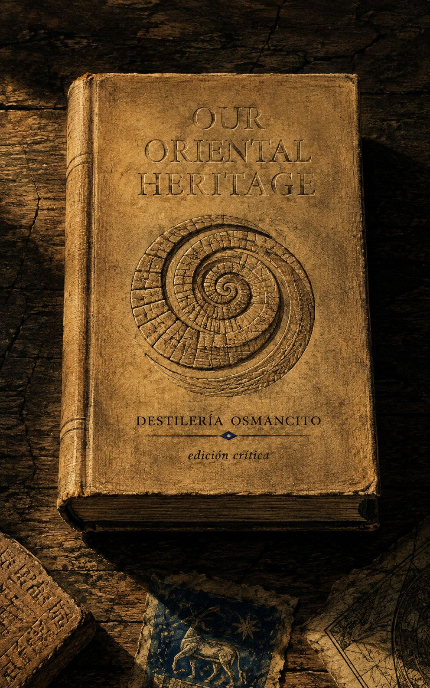
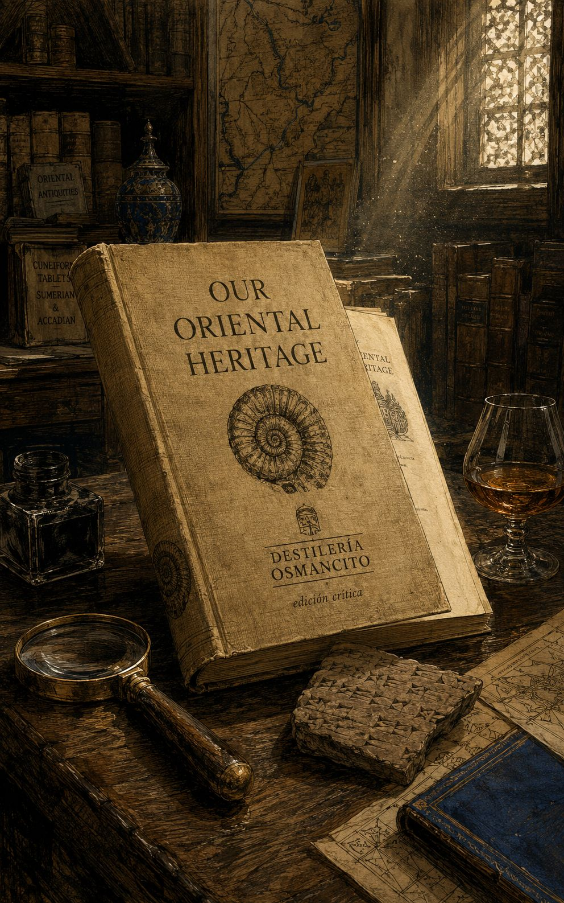
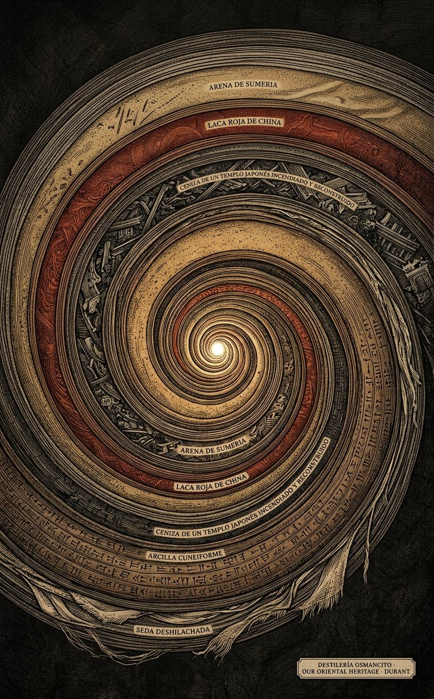
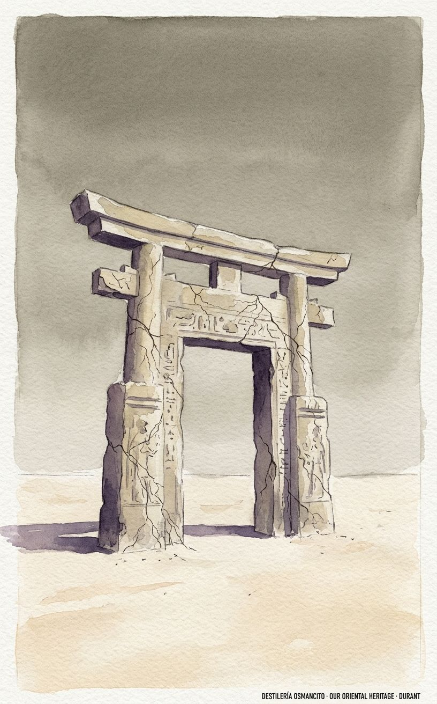
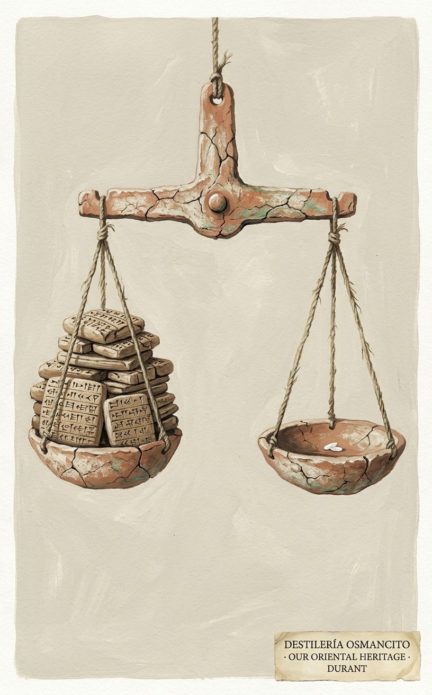
Durant no escribió una historia de Oriente para que Occidente la admire desde afuera — la escribió para demostrar que Occidente es Oriente, retrasado y con amnesia. La palabra que más pesa en el libro no es India ni China ni siquiera Dios. Es “vida”. Y la tensión que nunca se nombra es que un libro construido para enseñar humildad ante lo antiguo está narrado, de principio a fin, por la voz más segura de sí misma que se pueda imaginar.*
Llega pesado, del tamaño de una vida de lectura, con el peso específico de lo que fue pensado para durar generaciones y no una temporada. Superficie de erudición sin humedad: seca, minuciosa, cargada de nombres propios que no se explican porque se asumen conocidos. Antes de abrirse ya declara su ambición en el lomo — cuatro mil años, un continente entero, un solo hombre firmando.
Este no es un libro que cuenta lo que pasó en Oriente. Es un libro que reclama Oriente como origen no reconocido de quien lo escribe. Nombrar lo que este corpus es —un acto de restitución disfrazado de enciclopedia, escrito por un occidental que quiere pagar una deuda que su propia civilización se niega a admitir que tiene— es distinto de resumir lo que dice sobre Sumeria, Egipto, India, China o Japón. Lo que dice es enorme. Lo que es, es un gesto.
Título — Our Oriental Heritage (The Story of Civilization, Volumen I) Autor — Will Durant Año — 1935 Género — Historia universal / ensayo de síntesis civilizacional Extensión estimada — Aproximadamente 392.000 palabras, unas 1.568 páginas calculando 250 palabras por página, distribuidas en 31 capítulos agrupados en cuatro partes más envoi. Idioma original — Inglés Palabra más frecuente con contenido — “Life” (vida). No coincide con lo que el título promete —una herencia oriental, geográfica— sino con lo que el libro efectivamente persigue: no un mapa de civilizaciones sino un estudio de cómo la vida humana se organiza a sí misma para sobrevivir a su propio tiempo. El título orienta hacia un lugar; la palabra más repetida revela que el objeto real es un proceso.
Durant recorre cuatro mil años de historia humana partiendo de las condiciones geológicas, geográficas y económicas que hacen posible la civilización, para luego descender sobre Egipto, Sumeria y Babilonia, atravesar Persia y el Cercano Oriente, instalarse largamente en India, cruzar a China, y cerrar en Japón — antes de un envoi que declara esta herencia oriental como cimiento no reconocido de Grecia y Roma. No narra una trama sino una sucesión de civilizaciones tratadas como organismos: nacen de condiciones materiales, desarrollan instituciones, producen arte y pensamiento, y mueren o se transforman. El tono es el de un tribunal que dicta sentencia sobre la ingratitud de Occidente hacia su propio origen.
El libro se organiza en cuatro partes que siguen una geografía más que una cronología estricta. La primera parte establece las condiciones —geológicas, económicas, morales, mentales— que permiten que exista civilización en cualquier lugar, y examina el Cercano Oriente: Sumeria, Egipto y Babilonia como los primeros laboratorios donde surgen la escritura, la ley, la religión organizada y el comercio. Aquí se instala la tesis central del libro: la agricultura genera excedente, el excedente genera ciudad, la ciudad genera ocio, el ocio genera arte y pensamiento — la civilización no es un don racial sino un accidente material que cualquier pueblo puede alcanzar dadas las condiciones correctas.
La segunda parte se dedica enteramente a India, tratada con una extensión desproporcionada respecto a su lugar habitual en la historiografía occidental de la época: desde Mohenjo-daro y el Indo hasta los imperios mogoles, pasando por el nacimiento del budismo, el hinduismo y sus sistemas filosóficos, la literatura épica y la organización social de castas. Durant insiste en que India no es un anexo curioso sino una civilización comparable en profundidad filosófica a Grecia.
La tercera parte cruza a China: sus dinastías, su administración burocrática temprana, Confucio y las escuelas filosóficas rivales, la poesía, la pintura, la porcelana, y la tesis —citando a Voltaire y Diderot— de que China representa una de las civilizaciones más estables y sofisticadas jamás producidas por el ser humano.
La cuarta parte se concentra en Japón, presentado como drama en tres actos: el Japón budista clásico moldeado por China y Corea, el Japón feudal aislado del shogunato Tokugawa, y el Japón moderno abierto por la fuerza en 1853 — con Durant advirtiendo, escribiendo en los años treinta, que el siguiente acto de esa historia probablemente sea la guerra.
El envoi cierra sumando lo que Occidente heredó de Oriente —agricultura, escritura, ley, matemáticas, religión monoteísta, comercio— y prepara explícitamente el terreno para el volumen siguiente, donde esa herencia desemboca en Grecia y Roma.
Primer contacto. Lo que produce este libro antes de ser pensado es una sensación de deuda incómoda: uno termina cada capítulo con la certeza de haber sabido menos de lo que creía sobre la mitad del mundo. No es un libro que informa con neutralidad; es un libro que acusa, con la cortesía de la erudición, a su propio lector de haber vivido de espaldas a su origen. Pesa como algo que fue escrito para corregir, no solo para contar.
«Quiero saber cuáles fueron los pasos que dieron los hombres para pasar de la barbarie a la civilización.» —VOLTAIRE.
Durant abre con una definición: civilización es orden social que promueve creación cultural, y la compone la provisión económica, la organización política, la tradición moral y la búsqueda de conocimiento y arte. A partir de esa definición despliega, uno tras otro, los factores que la condicionan sin generarla por sí solos. Primero lo geológico: la civilización es un interludio entre glaciaciones, siempre amenazado por el retorno del hielo o el temblor de la tierra. Segundo lo geográfico: el calor tropical y sus parásitos son hostiles a la civilización porque absorben la energía humana en el hambre y la reproducción; la lluvia, los ríos navegables y los puertos naturales favorecen su aparición, como ocurrió en Atenas, Cartago, Florencia o Venecia, mientras que el capricho climático puede desecar regiones antes florecientes como Nínive o Babilonia. Tercero, y más importante, lo económico: un pueblo puede tener instituciones ordenadas y un código moral elevado —como los indios americanos— y aun así no pasar del salvajismo a la civilización si permanece en la etapa de caza, porque la civilización exige continuidad de alimento; esa continuidad la trae la agricultura, que es la primera forma de cultura, mientras que la ciudad —donde el comercio cruza mentes e ideas— es donde la civilización florece.
Durant descarta las condiciones raciales: la civilización aparece en cualquier continente y color, y no es la raza la que hace la civilización sino la civilización la que hace al tipo humano; el inglés no crea la civilización británica, ella lo crea a él. Añade después factores psicológicos indispensables: orden político, unidad de lenguaje, un código moral compartido, quizá una fe unificadora, y sobre todo la educación, el mecanismo por el cual la herencia de la tribu se transmite a los jóvenes. Cierra el capítulo enumerando las causas de la muerte de una civilización —cataclismo geológico, epidemia incontrolada, agotamiento del suelo, cambio de rutas comerciales, decadencia moral urbana, concentración patológica de riqueza— y con una imagen de la civilización como herencia racial que cada generación debe adquirir de nuevo, transmitida como antes se transmitía por el lenguaje y ahora por la imprenta y el comercio.
Durant empieza corrigiendo el vocabulario: prefiere “primitivo” a “salvaje”, y define lo civilizado como “proveedores letrados”. La primera sección traza el paso de la caza a la agricultura. Describe la improvidencia primitiva —los bosquimanos, los hotentotes, los indios americanos que consideraban débil guardar comida para el día siguiente— y cómo esa despreocupación cede ante la ventaja evolutiva de quienes aprenden a proveer, como el perro que entierra el hueso o la abeja que llena el panal. Reconstruye con detalle las técnicas primitivas de caza y pesca: las redes polinesias de mil codos, el pescador tlingit disfrazado de foca, los narcóticos tahitianos arrojados al agua, los nadadores australianos que atrapan patos por las patas bajo el agua. De ahí pasa a la vida pastoril y la domesticación animal —posiblemente iniciada al criar como mascotas a las crías huérfanas de animales cazados— y a cómo la leche liberó a las mujeres de la lactancia prolongada.
La sección sigue con el gran descubrimiento económico de la mujer: mientras el hombre cazaba, ella recolectaba raíces, frutos y granos, y ese trabajo la llevó, por pasos —el palo cavador, la azada, finalmente el arado tras la domesticación animal— a inventar la agricultura. Durant reconstruye el régimen alimentario primitivo: la voracidad omnívora de los pueblos de caza, que comían casi cualquier cosa —desde gusanos y piojos hasta ballenas varadas—, y el papel del fuego, que redujo esa voracidad indiscriminada al volver comestibles los cereales. Dedica un tramo extenso al canibalismo, presentado no como aberración sino como práctica extendida entre casi todos los pueblos primitivos y aun entre algunos históricos —irlandeses, iberos, pictos, daneses del siglo XI—, con casos como el comercio de carne humana en el Alto Congo o Nueva Bretaña, y cita la explicación de un jefe brasileño a un misionero sobre la superioridad gastronómica del enemigo muerto.
La segunda sección, “Los fundamentos de la industria”, parte del fuego —que el hombre no inventó sino que imitó y perfeccionó— y recorre la invención de herramientas a partir de plantas, minerales y huesos, el arte del tejido (comparado a la tela de araña), la cerámica (nacida quizá de recubrir de arcilla el mimbre), la construcción de la choza al edificio de madera, y finalmente el transporte: del hombre bestia de carga al trineo, al rodillo, a la rueda —“el mayor de los inventos mecánicos”—, hasta la navegación guiada por las estrellas. Cierra con el nacimiento del comercio por intercambio de excedentes y la evolución del dinero: desde el trueque de cuchillos por medias hasta el ganado como unidad de valor —de donde vienen “capital” y “pecuniario”— y finalmente los metales.
La tercera sección, “Organización económica”, reconstruye el comunismo primitivo en tierra y alimento —los indios omaha, los samoanos, los hotentotes que compartían todo excedente hasta igualar a la comunidad— y las teorías sobre su desaparición: Sumner lo consideraba antibiológico por no premiar la habilidad; Darwin pensaba que la igualdad perfecta de los fueguinos era fatal para su progreso civilizador. Durant explica la transición a la propiedad privada como resultado de la agricultura asentada, donde el fruto del trabajo cuidadoso debía recaer en quien lo había sembrado, y cómo esto llevó a la esclavitud: en las comunidades puramente cazadoras no existía esclavitud, pero la agricultura y la desigualdad llevaron a emplear a los débiles socialmente por los fuertes; el prisionero de guerra dejó de ser comido para ser esclavizado, “una gran mejora moral”. El capítulo cierra con la formación de clases y castas a partir de la herencia y la especialización del trabajo, y una larga nota al pie sobre el “sístole y diástole” histórico entre concentración de riqueza y revolución redistributiva.
Durant sostiene que el hombre no es voluntariamente un animal político: se asocia por miedo a la soledad, no por amor a la sociedad. Describe sociedades sin apenas gobierno —bosquimanos, pigmeos, tasmanios, fuegos, cuyas agrupaciones rara vez superan la docena— y el primer escalón organizativo, el clan, que al unirse bajo un jefe común forma la tribu. Cita el ejemplo democrático de los iroqueses y delawares, gobernados sin leyes fijas más allá de la familia y el clan, y el Consejo de los Siete de los omaha, deliberando hasta la unanimidad.
La segunda sección, “El Estado”, es un mosaico de citas de teóricos —Nietzsche, Ward, Oppenheimer, Ratzenhofer, Gumplowicz, Sumner— que coinciden en que el Estado nace de la conquista: una tribu guerrera y nómada somete a un pueblo agrícola pacificado por su propio trabajo. Durant desarrolla esta tesis: la agricultura enseña costumbres pacíficas y agota a los hombres, mientras el cazador y el pastor, acostumbrados al peligro, miran los campos maduros del poblado con envidia y los invaden. Explica cómo la dominación, una vez asentada, se oculta a sí misma —los franceses de 1789 apenas sabían que su aristocracia había llegado por la fuerza mil años antes— y cómo el Estado, “ogro en su origen”, se vuelve indispensable para regular las comunidades de aldea entre sí: “el Estado puede definirse como paz interna para la guerra externa”. Añade que el Estado que confiara solo en la fuerza caería pronto, por lo que recurre a la familia, la iglesia y la escuela para sembrar lealtad patriótica.
La tercera sección, “La ley”, parte de sociedades sin ley alguna —Wallace entre los pueblos de Sudamérica y Oriente, Melville entre los marquesanos— y explica que la ausencia de ley no es ausencia de regulación sino gobierno por costumbre, más rígida que cualquier ley. Traza cuatro etapas: primero la venganza personal (la Lex Talionis, el ojo por ojo); segundo la sustitución de la venganza por daños y composiciones tarifadas, con el ejemplo abisinio del niño que cae de un árbol sobre su compañero y a quien los jueces obligan a subir de nuevo para caer sobre el cuello del culpable; tercero la formación de tribunales, a veces solo de conciliación voluntaria; cuarto el ordalía —la prueba de las dos vasijas, una envenenada— y finalmente la asunción por el jefe o el Estado de la obligación de prevenir el delito, no solo de castigarlo.
La cuarta sección, “La familia”, explica que antes de que el Estado asumiera el orden social era el clan quien regulaba las relaciones entre sexos y generaciones. Durant desarrolla extensamente la ignorancia primitiva sobre la paternidad fisiológica —los isleños trobriandeses atribuían el embarazo a un fantasma, un baloma, que entraba en la mujer mientras se bañaba— y cómo esta ignorancia hacía que el vínculo materno y fraterno pesara más que el conyugal: Antígona se sacrifica por su hermano, no por su marido. Describe el “matrimonio matrilocal”, el “derecho materno” (que no implicaba matriarcado sino solo transmisión de linaje por la mujer), y la posición generalmente subordinada de la mujer en las sociedades naturales, salvo excepciones como los pelew o los séneca. El capítulo cierra con el largo tránsito de la mujer proveedora —quien, según Durant, hizo la mayoría de los avances económicos tempranos: agricultura, tejido, cerámica, comercio— a la mujer subordinada bajo el patriarcado, cuando la ganadería y el arado dieron ventaja física al hombre, la fidelidad femenina se volvió condición para la herencia, y “nació el doble estándar”. Enumera prácticas de subyugación: la mujer vendida como esclava, enterrada viva con el marido en Nueva Guinea, Fiyi o India, azotada ritualmente en la Rusia antigua, excluida de los templos en Fiyi como aún en el islam.
Este es el capítulo más extenso y se organiza en cuatro grandes movimientos.
El matrimonio. Durant sostiene que el matrimonio es más antiguo que el hombre —lo practican gorilas y orangutanes— y recorre sociedades sin matrimonio (Futuna, Hawái, los lubu de Borneo) y formas transicionales de unión libre y disoluble a voluntad, como entre los orang sakai de Malaca, donde una muchacha pasaba de hombre en hombre hasta completar la ronda, o entre los damaras, donde el explorador Galton no podía saber sin preguntar quién era el marido de turno de cada mujer. Describe el matrimonio grupal tibetano —un grupo de hermanos casado con un grupo de hermanas— y el levirato judío. Explica que el motivo del matrimonio individual no fue el deseo sexual, saciado libremente antes del matrimonio, sino motivos económicos ligados al ascenso de la propiedad: el hombre quería esclavos baratos y evitar legar su propiedad a hijos ajenos. De ahí nace la poligamia —presentada como adaptada a un exceso demográfico de mujeres causado por la muerte violenta de los hombres en caza y guerra— y su transición hacia la monogamia cuando la vida agrícola asentada igualó el número de sexos. Describe la exogamia obligatoria, el matrimonio por captura (con el ejemplo de las tribus norteamericanas cuyos maridos y esposas capturadas hablaban lenguas mutuamente ininteligibles) y el matrimonio por compra, con tarifas específicas —un buey y una vaca entre los hotentotes, dieciséis dólares en efectivo y seis en especie entre los togo— y la anécdota de la madre maorí que maldice al raptor de su hija hasta que este le da una manta, tras lo cual declara satisfecha su indignación. Cierra observando la casi total ausencia de amor romántico en el matrimonio primitivo: es transacción económica, no debacle privada, y florece solo donde la moral ha levantado barreras contra el deseo y la riqueza permite el lujo de la pasión idealizada.
La moralidad sexual. Durant traza el paso de la libertad premarital casi universal a la castidad, y sostiene que esta última no nace del pudor sino de la propiedad: la virgen se cotizaba más alto bajo el matrimonio por compra porque garantizaba fidelidad futura. Describe con detalle prácticas contrarias a la intuición moderna —la virginidad vista como defecto entre los kamchadales, la infibulación entre pueblos de Nubia y Abisinia, la reclusión de las hijas en Nueva Bretaña— y la relatividad de la modestia, que varía según la costumbre local y no según la cantidad de ropa. Sostiene que los códigos morales, aunque relativos en contenido, son indispensables como reglas del juego social, y que el adulterio se volvió pecado grave a medida que crecía la propiedad y con ella la actitud proprietaria del hombre sobre la mujer —de la que el suttee es la culminación. Cierra la sección con el divorcio, fácil y frecuente en sociedades de caza y cada vez más raro bajo la agricultura asentada, donde divorciar a la esposa significaba perder una esclava productiva; y con el largo tramo sobre el control de la natalidad —aborto, infanticidio, contracepción rudimentaria— practicado casi siempre por decisión de la mujer, con ejemplos extremos como los bangerang de Victoria, que mataban a la mitad de sus recién nacidos, o los abipones, que criaban solo un niño y una niña por hogar.
La moralidad social. Durant argumenta que todo vicio fue alguna vez virtud, útil en la lucha por la existencia, y se volvió vicio solo al sobrevivir a las condiciones que lo hacían necesario. Recorre la codicia (nacida de la incertidumbre alimentaria animal), la deshonestidad (que crece con la civilización porque hay más que robar y más astucia para robarlo), la violencia (asociada sobre todo a la guerra, pero manifiesta también en el homicidio intratribal tolerado, la caza de cabezas dyak, donde el cazador con más cabezas obtenía la elección entre todas las muchachas del poblado) y el suicidio, tan común que los hijos esquimales debían matar a sus padres ancianos por deber filial y no por crueldad. Describe también la sociabilidad primitiva: la hospitalidad que llegaba a ofrecer al huésped la esposa o la hija del anfitrión, las complejas reglas de cortesía —el frotarse narices, el nunca besarse—, y observa que cada grupo se consideraba superior a los demás y reservaba sus restricciones morales exclusivamente para los suyos, de modo que el progreso moral en la historia consiste no en mejorar el código sino en ampliar el círculo de quienes quedan cubiertos por él.
La religión. Durant abre reconociendo la existencia de pueblos aparentemente ateos —ciertos pigmios africanos, los veddah de Ceilán, los abipones, que responden con desdén filosófico ante preguntas metafísicas— antes de sostener que la universalidad religiosa es, en general, un hecho sustancial. Identifica el miedo, sobre todo a la muerte, como la primera fuente de la religión, junto con el asombro ante los sueños y la creencia animista de que todo objeto contiene un alma. Clasifica los objetos de culto en seis categorías —celeste, terrestre, sexual, animal, humano, divino— y recorre el culto lunar, luego solar, el culto a los árboles y montañas, el culto sexual (presente, señala Durant, “no en los pueblos más bajos sino en los más altos”), el totemismo, y la transición del culto a los muertos al culto a los ancestros y finalmente a la idea del dios humano. Describe con detalle los métodos de la religión: la magia simpática (verter agua para provocar lluvia, fabricar muñecas de trapo para inducir el embarazo), los ritos de vegetación con sacrificio humano seguido de resurrección simbólica del difunto —origen, sugiere Durant, del mito casi universal del dios que muere y resucita—, los festivales de licencia sexual ligados a la siembra, y la transición del sacrificio humano al animal y finalmente a la comida ritual de una imagen del dios hecha de grano y sangre. Cierra con la función moral de la religión —mito y tabú como sostenes de la conducta— y una reflexión sobre la tensión final entre religión y sociedad: la religión conserva valores establecidos en vez de crearlos, y termina “luchando suicidamente en la causa perdida del pasado” mientras el conocimiento avanza y la moral se adelanta a la teología.
Las letras. Durant sitúa el nacimiento de la humanidad en la invención del sustantivo común —la palabra que nombra clases, no solo objetos particulares— y recorre teorías sobre el origen del lenguaje: el grito animal, el gesto (que entre los indios norteamericanos podía sostener conversaciones matrimoniales completas durante años sin palabra hablada), las palabras onomatopéyicas. Observa que las lenguas primitivas no son simples sino concretas: los australianos tenían nombre para la cola de un perro y otro distinto para la de una vaca, pero ningún término general para “cola”. Describe la educación primitiva como transmisión práctica de destrezas y carácter más que de conocimiento abstracto, con maduración precoz —el niño omaha de diez años ya dominaba los oficios de su padre— y los ritos de iniciación, diseñados para probar el coraje más que el saber, algunos “demasiado terribles para ser contados”, con el ejemplo de los kaffir, que azotaban a los candidatos hasta que brotaba sangre y de los cuales una proporción moría, aceptado filosóficamente por los ancianos.
Recorre después los orígenes de la escritura —posiblemente derivada de marcas comerciales en cerámica—, la leyenda egipcia del dios Thoth que revela la escritura al rey Thamos, quien la denuncia como enemiga de la memoria, y las formas primitivas: los bastones tallados de los algonquinos, los cordones anudados peruanos. Cierra la sección con el origen sacerdotal de la poesía —“carmina” en latín significaba a la vez verso y hechizo— y la diferenciación del poeta, el orador y el historiador a partir del oficiante ritual, mencionando a los poetas profesionales somalíes itinerantes, comparables a los trovadores medievales.
La ciencia. Durant sitúa el origen probable de la ciencia en la agricultura —la geometría como medición del suelo, el calendario como necesidad de la siembra— y recorre los sistemas primitivos de conteo, desde los tasmanios que contaban “uno, dos, muchos” hasta el sistema duodecimal, que sobrevive en las doce pulgadas del pie inglés. Describe la medicina primitiva como eficaz pese a sus teorías erróneas —la enfermedad como posesión espiritual—, con el ejemplo de los bororo brasileños, que hacían tomar la medicina al padre para curar al hijo enfermo, casi siempre con éxito, y la cirugía primitiva, incluida la trepanación craneal, que los melanesios lograban con éxito en nueve de cada diez casos frente al fracaso sistemático de la misma operación en el Hôtel-Dieu de París en 1786.
El arte. Durant define la belleza como aquello que place al espectador, y no al revés, y sitúa su primer objeto en el propio cuerpo: el arte “empieza en casa”. Describe con detalle los cánones de belleza radicalmente distintos según el pueblo —la mujer de cintura no marcada admirada entre negros africanos, la corpulencia como sinónimo de belleza en Nigeria, la proyección posterior admirada entre los hotentotes— y observa que, contra la intuición, es el hombre primitivo, no la mujer, quien más se adorna y pinta el cuerpo. Recorre la pintura corporal, el tatuaje, la escarificación (con el ejemplo de los botocudos, que insertaban un disco labial creciente hasta cuatro pulgadas de diámetro), y el vestido, presentado como adorno sexual antes que protección contra el frío —los fueguinos, al recibir de Darwin una tela roja contra el frío, la rasgaron en tiras para usarlas como adorno—. Cierra con el origen del arte en la joyería, la cerámica como posible madre de la pintura y la escultura, la arquitectura nacida de embellecer las tumbas antes que las casas vivas, y la danza como el arte más característico del hombre primitivo, de la que derivarían la música instrumental y el drama —con el ejemplo de la danza de muerte y resurrección de las tribus del noroeste de Australia—. El capítulo cierra con un resumen: en este recorrido por la cultura primitiva se encuentra ya cada elemento de la civilización salvo la escritura y el Estado.
La cultura paleolítica. Durant abre reconociendo que las culturas primitivas descritas hasta aquí no son necesariamente antepasados directos de la civilización occidental, y pasa de la antropología a la arqueología. Reconstruye el hallazgo de fósiles humanos clave: el cráneo de Pekín hallado en 1929 por W. C. Pei en Chou Kou Tien, datado en el Pleistoceno temprano; el hombre de Piltdown; el hombre de Neandertal, hallado en 1857, de mayor capacidad craneal que la nuestra; y el hombre de Cro-Magnon, que lo desplazó hacia 20.000 a.C. y se convirtió en el progenitor del europeo occidental moderno, tras lo que Durant sugiere una guerra prolongada entre ambas razas por la posesión de Europa. Clasifica siete culturas líticas sucesivas —Pre-Chelense, Chelense, Achelense, Musteriense, Auriñaciense, Solutrense, Magdaleniense— cada una definida por el refinamiento de sus herramientas de sílex, y describe la extensión geográfica de estos hallazgos desde Rodesia hasta Nebraska.
Dedica una sección a las artes del Paleolítico: la herramienta de puño (coup-de-poing) que se diversificó en martillo, hacha, cincel; el fuego, presente ya en restos de Neandertal, con al menos 40.000 años de antigüedad, cuyo dominio liberó al hombre del frío, del miedo a la oscuridad y abrió camino a la cocina y, mucho después, a la fundición de metales; y sobre todo la pintura rupestre, con el relato pormenorizado del descubrimiento de Altamira por Marcelino de Sautuola en 1868, la incredulidad de los arqueólogos durante treinta años, la vindicación póstuma de Sautuola, y la reflexión de Durant sobre si el arte, en este campo, ha avanzado realmente desde entonces.
La cultura neolítica. Durant describe los kitchen-middens daneses, los poblados lacustres suizos revelados en 1854 al bajar el nivel de las aguas, y la gran innovación del período: la agricultura, que multiplicó la capacidad de la tierra para sostener población. Recorre la domesticación sucesiva del perro (8000 a.C.), la cabra, la oveja, el cerdo, el buey y finalmente el caballo; la invención de la rueda de disco y de radios; el tejido, nacido quizá junto con la aguja; la cerámica, ya trabajada sin torno pero con diseño; la construcción con poleas, palancas y bisagras entre los lacustres suizos; y los megalitos —dólmenes, menhires, cromlechs como Stonehenge— cuyo propósito exacto Durant admite desconocer, aunque los presume templos o altares astronómicamente orientados.
La transición a la historia recorre la llegada de los metales: el cobre hacia 6000 a.C. en Suiza, luego en Mesopotamia y Egipto; el bronce, documentado ya en Creta hacia 3000 a.C.; y el hierro, sorprendentemente tardío pese a su abundancia, con el ejemplo de los cuchillos de Gerar en Palestina, datados hacia 1350 a.C. Sigue la sección sobre el origen de la escritura, que Durant vincula a marcas cerámicas y a la “Signaria Mediterránea” hallada por Flinders Petrie —trescientos signos mercantiles compartidos por todo el Mediterráneo hacia 5000 a.C.—, y describe el paso de los pictogramas jeroglíficos a los silabarios y finalmente al alfabeto, que los fenicios no crearon sino que comercializaron desde Egipto y Creta hacia todo el Mediterráneo, de donde lo tomarían los griegos.
El capítulo cierra con dos secciones breves: “Civilizaciones perdidas”, donde Durant repasa las leyendas de Atlántida y la posible civilización perdida del Pacífico sugerida por las estatuas de la Isla de Pascua, sin afirmar ni descartar; y “Cunas de la civilización”, donde plantea Asia Central —y en particular el yacimiento de Anau, en Turkestán, excavado por Pumpelly en 1907 y datado hacia 9000 a.C.— como posible punto de dispersión hacia China, India, Elam, Sumeria y Egipto, aunque Durant concluye que la evidencia arqueológica más reciente inclina la balanza hacia el delta mesopotámico como escenario más antiguo conocido del drama histórico de la civilización, con lo que el volumen queda orientado hacia su siguiente destino: Sumeria y Egipto.
«En aquel tiempo, los dioses me llamaron a mí, Hammurabi, el servidor cuyas obras son gratas… que ayudó a su pueblo en tiempos de necesidad, que trajo abundancia y prosperidad… para evitar que el fuerte oprima al débil… para iluminar la tierra y promover el bienestar del pueblo». —Código de Hammurabi, Prólogo.
Antes del capítulo VII, el epub coloca solo el epígrafe que abre “Book One: The Near East”: una cita del Código de Hammurabi en su prólogo, donde el rey se presenta como el servidor cuyos actos complacen a los dioses, el que socorrió a su pueblo en la necesidad, el que impidió que el fuerte oprimiera al débil. Esa cita funciona como pórtico de todo lo que sigue: la ley antigua presentándose a sí misma como protección del débil frente al fuerte, tensión que el libro entero pondrá a prueba una y otra vez.
Durant abre fijando el terreno: la historia escrita tiene al menos seis mil años, y durante la mitad de ese tiempo el centro de los asuntos humanos estuvo en el Cercano Oriente, término que él extiende deliberadamente para incluir Egipto. Enumera, en una sola frase acumulativa, todo lo que esa región legó a Occidente —agricultura, comercio, rueda, moneda, escritura, matemáticas, calendario, alfabeto, papel, bibliotecas, escuelas, monoteísmo, monogamia— y remata con la tesis que gobierna el libro: los “arios” no fundaron la civilización, la tomaron de Babilonia y Egipto; Grecia no comenzó la civilización, la heredó. El capítulo se plantea entonces como pago de una deuda historiográfica.
El recorrido empieza en Susa, en la región que los judíos llamaban Elam, “la tierra alta”, protegida por marismas al oeste y montañas al este. Arqueólogos franceses hallaron ahí restos humanos de 20.000 años de antigüedad y evidencias de una cultura avanzada ya hacia 4500 a.C. Los elamitas, recién salidos de una vida nómada de caza y pesca, ya tenían armas de cobre, escritura jeroglífica, documentos comerciales, espejos, joyas, y comercio que llegaba de Egipto a la India. Ahí aparece, antes que en ningún otro sitio conocido, tanto la rueda de alfarero como la rueda de carro. Desde esos comienzos, los elamitas oscilaron entre conquistar Sumeria y Babilonia y ser conquistados por ellas; Susa sobrevivió seis mil años de historia y cayó saqueada por Asurbanipal en 646 a.C., quien se llevó a Nínive oro, plata, piedras preciosas y mobiliario regio. Durant cierra la sección con la fórmula que anticipa el tono de todo el libro: “la historia empezó tan pronto su trágica alternancia de arte y guerra.”
1. El trasfondo histórico. Siguiendo el curso del Éufrates se localizan las ciudades enterradas de Sumeria: Eridu, Ur, Uruk, Larsa, Lagash, Nippur, Nisin, y más al norte Babilonia, Kish y Agade. La historia temprana de Mesopotamia es, en un aspecto, la lucha de los pueblos no semitas de Sumeria por preservar su independencia frente a la expansión de los semitas desde Kish y Agade. No se sabe de qué raza eran los sumerios ni por qué ruta llegaron —Durant enumera varias hipótesis (Asia central, el Cáucaso, Armenia, el Golfo Pérsico, Susa, incluso origen mongólico por semejanzas de lengua) y concluye llanamente: no lo sabemos. Físicamente eran bajos y fornidos, de nariz recta no semítica, frente ligeramente huidiza; muchos llevaban barba, algunos iban rasurados. Hacia 2300 a.C., cuando su civilización ya era vieja, los poetas y sabios sumerios intentaron reconstruir su propia historia antigua: escribieron leyendas de una creación, un paraíso primitivo y un diluvio terrible que lo destruyó por el pecado de un rey antiguo —leyenda que pasaría a la tradición babilónica, hebrea y cristiana. En 1929 el profesor Woolley, excavando en Ur, encontró a considerable profundidad una capa de limo y arcilla de dos metros y medio, que interpretó como el depósito de esa inundación catastrófica del Éufrates recordada como el Diluvio.
Los sacerdotes-historiadores formularon listas de reyes antiguos que extendían las dinastías previas al Diluvio a 432.000 años, y narraron historias de dos gobernantes, Tammuz y Gilgamesh, que darían origen al poema más grande de la literatura babilónica y al culto de Adonis entre los griegos. Por la profundidad de las ruinas de Nippur —sesenta y seis pies, de los cuales casi tantos quedan por debajo de los restos de Sargón de Akkad como por encima— Durant calcula que Nippur podría remontarse a 5262 a.C. En la competencia entre Kish (semita) y Ur (no semita) está la primera forma de una oposición entre semitas y no semitas que recorrerá toda la historia del Cercano Oriente, desde Sargón I y Hammurabi hasta Ciro y Alejandro, hasta las Cruzadas, hasta el gobierno británico del siglo XX.
Desde 3000 a.C. las tablillas de arcilla conservadas en Ur dan cuenta de un rey reformador, Urukagina de Lagash, que emitió decretos contra la explotación de los pobres por los ricos y de todos por los sacerdotes: prohibió al sumo sacerdote entrar al jardín de una madre pobre a llevarse su leña o cobrarle impuesto en fruta, redujo los honorarios funerarios a la quinta parte, y prohibió que clero y funcionarios se repartieran entre sí las rentas y el ganado ofrecidos a los dioses. Se jactaba de haber “dado libertad a su pueblo”; Durant llama a sus tablillas “el código de leyes más antiguo, breve y justo de la historia”. Ese intervalo de lucidez terminó cuando Lugal-zaggisi invadió Lagash, derrocó a Urukagina y saqueó la ciudad en el momento más alto de su prosperidad: templos destruidos, ciudadanos masacrados, estatuas de los dioses llevadas en cautiverio. Sobrevive una tablilla de 4800 años en la que el poeta Dingiraddamu llora por la diosa violada de Lagash, citada en verso por Durant.
Mientras tanto, otro pueblo semita construía el reino de Akkad bajo Sargón I, con capital en Agade. Sargón no tuvo padre conocido y su madre fue una prostituta del templo; la leyenda sumeria le compuso una autobiografía de tono mosaico —“mi humilde madre me concibió; en secreto me dio a luz; me colocó en una cesta de juncos”— rescatado por un obrero, ascendió hasta desplazar a su amo y ocupar el trono de Agade. Se llamó a sí mismo “Rey de Dominio Universal”, derrotó y encadenó a ese mismo Lugal-zaggisi que había violado a la diosa de Lagash, y llevó sus armas hasta el Mediterráneo, fundando el primer gran imperio de la historia; reinó cincuenta y cinco años y su reinado terminó con todo el imperio en rebelión. Le sucedieron tres hijos; el tercero, Naram-sin, dejó una estela hallada por De Morgan en Susa en 1897, hoy en el Louvre, que muestra al rey pisando los cuerpos de sus enemigos caídos.
Lagash resurgió en el siglo XXVI a.C. bajo Gudea, cuyas estatuas de piedra son los restos más prominentes de la escultura sumeria; Durant lo llama “un Marco Aurelio sumerio”, devoto de la religión, la literatura y las buenas obras, y cita una inscripción suya: “durante siete años la sirvienta fue igual a su señora, el esclavo caminó al lado de su amo, y en mi ciudad el débil descansó al lado del fuerte.” Paralelamente, Ur vivía una de las épocas más prósperas de su larga historia; su rey Ur-engur sometió pacíficamente Asia occidental y proclamó el primer código extenso de leyes de la historia; su hijo Dungi continuó su obra durante cincuenta y ocho años, gobernando con tal sabiduría que el pueblo lo deificó. Esa gloria se apagó cuando elamitas y amorreos cayeron sobre Ur, capturaron a su rey y saquearon la ciudad; los poetas de Ur cantaron el rapto de la estatua de Ishtar, y Durant traduce en verso el lamento en primera persona de la diosa despojada de sus vestiduras y joyas, perseguida por su propio templo. Elam y Amor gobernaron Sumeria durante doscientos años, hasta que Hammurabi de Babilonia reconquistó Uruk e Isin, esperó veintitrés años, invadió Elam, capturó a su rey, sometió a Amor y Asiria, y construyó un imperio disciplinado por una ley universal. De los sumerios, después de esto, no se vuelve a saber nada: su capítulo en el libro de la historia estaba completo.
2. Vida económica. La civilización sumeria, sin embargo, permaneció como herencia inicial de Mesopotamia. Su base fue un suelo fertilizado por el desbordamiento anual de los ríos, peligroso y útil a la vez; los sumerios aprendieron a canalizarlo mediante canales de riego desde 4000 a.C., y conmemoraron esos peligros tempranos en las leyendas del diluvio. De esos campos regados salían cosechas de trigo, cebada, dátiles y hortalizas; el arado apareció temprano, tirado por bueyes y ya provisto de sembradora tubular. Era, en muchos sentidos, una cultura primitiva: el cobre y el estaño (a veces mezclados en bronce) eran un lujo, y la mayoría de las herramientas eran de sílex, algunas de arcilla, otras de marfil y hueso. El tejido se hacía a gran escala bajo supervisores nombrados por el rey. Las casas eran de caña revocada con adobe; puertas de madera con bisagras de piedra; suelos de tierra apisonada; ganado y aves circulaban en comradería primitiva con el hombre.
Los bienes se transportaban sobre todo por agua; la piedra, escasa en Sumeria, se importaba por el Golfo o por los ríos. Había sellos comerciales que indican tráfico con Egipto y la India. No existía todavía la moneda acuñada; el comercio era normalmente trueque, aunque oro y plata ya servían como estándares de valor. Existía un sistema de crédito con intereses de 15 a 33% anual —Durant comenta que, si la estabilidad de una sociedad se mide en relación inversa a su tasa de interés, cabe sospechar que el mundo de negocios sumerio, como el nuestro, vivía en incertidumbre económica y política. Ricos y pobres se estratificaban en muchas clases; la esclavitud estaba muy desarrollada y los derechos de propiedad ya eran sagrados; entre ambos extremos tomaba forma una clase media de pequeños comerciantes, eruditos, médicos y sacerdotes. La medicina, aunque floreciente, seguía atada a la teología: la enfermedad se debía a posesión por espíritus malignos que había que exorcizar. Existía ya un calendario lunar con meses intercalares para ajustarse al año solar.
3. Gobierno. Cada ciudad mantenía, mientras pudo, una independencia celosa bajo su propio patesi o rey-sacerdote, palabra que ya indica que el gobierno estaba ligado a la religión. Hacia 2800 a.C. el crecimiento del comercio hizo insostenible ese separatismo municipal y generó “imperios” en los que una personalidad dominante sometía a las ciudades. El déspota vivía rodeado de violencia y miedo, en un palacio de entradas estrechas vigiladas por guardias secretos armados de dagas; incluso su templo era privado, escondido en el palacio. El rey iba a la batalla en carro, al frente de una hueste armada de arcos y lanzas; las guerras se libraban francamente por rutas comerciales y botín, sin consignas idealistas —el rey Manish-tusu de Akkad anunció sin rodeos que invadía Elam por sus minas de plata y su piedra diorita, único caso conocido de guerra declarada por el arte. Los vencidos eran vendidos como esclavos o, si eso no era rentable, masacrados en el campo; a veces una décima parte de los prisioneros era ofrecida como víctima viva a los dioses.
En los imperios, el orden social se mantenía mediante un sistema feudal: el gobernante repartía tierras entre sus jefes victoriosos, exentas de impuestos, a cambio de que mantuvieran el orden y proveyeran soldados. A este sistema se sumó un cuerpo de leyes ya rico en precedentes cuando Ur-engur y Dungi codificaron los estatutos de Ur —fuente original del célebre código de Hammurabi. Era más simple y menos severo que legislaciones posteriores: donde el código semítico mataba a la mujer adúltera, el código sumerio solo permitía al marido tomar una segunda esposa. Los tribunales se reunían en los templos y los jueces eran, en su mayoría, sacerdotes; el mejor elemento del código era un sistema de arbitraje público previo a cualquier litigio.
4. Religión y moralidad. Ur-engur proclamó su código en nombre del gran dios Shamash: el gobierno había descubierto pronto la utilidad política del cielo. Los dioses se multiplicaron: cada ciudad tenía su divinidad —Shamash el sol en su carro de fuego, Innini/Ishtar la diosa virgen-tierra de Uruk, Ninkarsag la madre doliente de Kish y Lagash, Ningirsu señor de las inundaciones, Tammuz dios de la vegetación, Sin la luna representado con una fina medialuna sobre la cabeza, anticipo de los halos de los santos medievales. Los dioses vivían en los templos, sostenidos por los fieles con comida y esposas; las tablillas de Gudea listan los alimentos que preferían —bueyes, cabras, ovejas, palomas, dátiles, higos, mantequilla— y Durant nota que originalmente los dioses habrían preferido carne humana, hasta que la moral mejoró y tuvieron que conformarse con animales, según una tablilla litúrgica que dice: “el cordero es el sustituto de la humanidad; ha dado un cordero por su vida.”
Enriquecidos por esta generosidad, los sacerdotes se volvieron la clase más rica y poderosa; en la mayoría de los asuntos eran el gobierno. Urukagina se alzó, como un Lutero temprano, contra las exacciones del clero, los acusó de sobornos y de robar a labradores y pescadores mediante impuestos, y estableció leyes que regulaban las tasas del templo —pero, presumiblemente, los sacerdotes recuperaron su poder tras su muerte, tal como recuperarían el suyo en Egipto tras la caída de Ijnatón. Sobre el más allá, los sumerios no habían concebido cielo ni infierno: como los griegos, imaginaban el otro mundo como una morada oscura de sombras miserables a la que descendían indiscriminadamente todos los muertos; oraban y sacrificaban por ventajas tangibles en esta vida, no por “vida eterna”. Una leyenda contaba que el sabio Adapa había sido iniciado en todo saber por la diosa Ea excepto en el conocimiento de la vida sin muerte; otra narraba cómo los dioses habían creado feliz al hombre, cómo el hombre pecó por su libre albedrío y fue castigado con un diluvio del que solo sobrevivió Tagtug el tejedor, quien perdió longevidad y salud por comer del fruto de un árbol prohibido.
Los sacerdotes transmitían también la educación: en los templos se enseñaba a niños y niñas escritura y aritmética, formándolos en patriotismo y piedad, y preparando a algunos para el oficio de escriba; sobreviven tablillas escolares con tablas de multiplicación, raíces cuadradas y cúbicas, y una tablilla que resume la antropología sumeria: “la humanidad al ser creada no conocía el pan ni el vestido; la gente caminaba con las extremidades en el suelo, comía hierba con la boca como las ovejas, bebía agua de zanja.” Durant cita íntegra la plegaria del rey Gudea a la diosa Bau, de tono conmovedoramente filial (“no tengo madre, tú eres mi madre; no tengo padre, tú eres mi padre”). Mujeres eran adscritas a cada templo, algunas como sirvientas, otras como concubinas de los dioses o de sus representantes terrenos; esto no se consideraba deshonra, y el padre celebraba la admisión de su hija con sacrificio ceremonial. El matrimonio ya era una institución compleja: la novia conservaba el control de su dote, ejercía derechos iguales sobre los hijos, podía administrar la herencia en ausencia del marido, hacer negocios de forma independiente; a veces, como Shub-ad, podía llegar a reina. Pero en toda crisis el hombre era señor: podía vender a su esposa o entregarla como esclava para pagar deudas; el doble estándar regía el adulterio (perdonable en el hombre, castigado con muerte en la mujer); la mujer estéril podía ser divorciada, y la que rehuía la maternidad continua podía ser ahogada. Aun así, las mujeres de clase alta compensaban con lujo y privilegios la carga de sus hermanas más pobres: Durant describe con detalle el estuche de cosméticos de la reina Shub-ad hallado por Woolley —malaquita, alfileres de oro con lapislázuli, una cucharita, pinzas de depilar— y cierra con la sentencia de que no hay nada nuevo bajo el sol.
5. Letras y artes. El hecho más asombroso de los restos sumerios es la escritura, ya avanzada para expresar pensamiento complejo en comercio, poesía y religión; las inscripciones más antiguas datan de hacia 3600 a.C. sobre piedra, y hacia 3200 a.C. aparece la tablilla de arcilla, soporte que Durant celebra por su durabilidad frente al papel efímero. El escritor sumerio escribía de derecha a izquierda —los babilonios fueron, hasta donde se sabe, el primer pueblo en escribir de izquierda a derecha. La escritura lineal derivó de signos pictóricos estampados en cerámica primitiva, contraídos por siglos de repetición hasta volverse símbolos de sonidos y no de cosas; sumerios y babilonios nunca dieron el paso de representar letras en vez de sílabas —ese paso revolucionario quedó, según Durant, para los egipcios.
Hacia 2700 a.C. ya existían grandes bibliotecas: en Tello, De Sarzac descubrió una colección de más de 30.000 tablillas ordenadas. Hacia 2000 a.C. los historiadores sumerios empezaron a reconstruir el pasado; entre los fragmentos originales hay una tablilla hallada en Nippur con el prototipo sumerio del Gilgamesh. Algunas tablillas contienen elegías de forma literaria significativa, con el rasgo característico del Cercano Oriente —la repetición cantada, líneas que empiezan igual, cláusulas que reiteran el sentido de la anterior—; los primeros poemas, dice Durant, no fueron madrigales sino plegarias.
En arquitectura, Sumeria parece haber creado de una vez las formas fundamentales de casa y templo, columna, bóveda y arco: el campesino sumerio construía su choza plantando cañas en círculo o rectángulo y curvando las puntas hasta formar arco, bóveda o cúpula. Hay un desagüe abovedado en Nippur de 5000 años, y arcos verdaderos —de dovela tallada en cuña— en las tumbas reales de Ur desde 3500 a.C. Los ricos construían palacios sobre montículos artificiales, deliberadamente inaccesibles salvo por un solo camino, de ladrillo por la escasez de piedra, decorados con terracota en espirales y chevrones; las habitaciones se abrían a un patio central por sombra y seguridad. Para los templos sí se importaba piedra: el templo de Nannar en Ur marcó tendencia con azulejos esmaltados azul pálido, interior de cedro y ciprés incrustado de mármol, alabastro, ónix, ágata y oro; el templo más importante solía coronarse con un zigurat de tres a siete pisos con escalera externa en espiral.
La estatuaria sumeria —sobre todo las figuras de Gudea en diorita resistente— es descrita como plana, contundente y poderosa pero severamente carente de acabado y gracia; entre las excepciones, una estatuilla de cobre de un toro hallada en Tell-el-Ubaid, y una cabeza de vaca en plata de la tumba de Shub-ad que Durant llama obra maestra. La cerámica sumeria, en cambio, es mera loza de barro que no resiste la comparación con los vasos de Elam; mejor trabajo hicieron los orfebres, con vasijas de oro de hasta 4000 a.C., el vaso de plata de Entemenu hoy en el Louvre, y sobre todo la funda de oro con daga de lapislázuli exhumada en Ur, que Durant considera que roza la perfección. Cierra la sección con un catálogo de “primeras veces” atribuidas a Sumeria —primeros estados e imperios, primer riego, primer uso de oro y plata como estándar de valor, primeros contratos, primer sistema de crédito, primer código de ley, primera literatura, primeros cosméticos, primer arco, columna, bóveda y cúpula— junto con los primeros pecados de la civilización a gran escala: esclavitud, despotismo, clericalismo y guerra imperialista.
Durant advierte que, pese a hablar de “principios” en Sumeria, es difícil establecer prioridad o secuencia entre las civilizaciones relacionadas del Cercano Oriente antiguo: que los registros escritos más antiguos conocidos sean sumerios no prueba que la primera civilización lo fuera. Es solo probable, no seguro, que Babilonia y Asiria derivaran de Sumeria y Akkad; los dioses y mitos de Babilonia y Nínive son en muchos casos modificaciones de la teología sumeria, y sus lenguas se relacionan con el sumerio como el francés y el italiano con el latín. Schweinfurth había señalado que, aunque cebada, mijo y trigo, y la domesticación de ganado, cabras y ovejas aparecen tanto en Egipto como en Mesopotamia desde el registro más antiguo, esos cereales y animales se encuentran en estado salvaje no en Egipto sino en Asia occidental, especialmente Yemen; de ahí concluye que la civilización pudo aparecer primero en Arabia y extenderse en “cultura triangular” hacia Mesopotamia y Egipto —hipótesis que Durant reconoce como apenas presentable dado lo poco que se sabe de la Arabia primitiva.
Más segura es la derivación de elementos específicos de la cultura egipcia desde Sumeria y Babilonia: hubo comercio entre Mesopotamia y Egipto, vía el istmo de Suez y probablemente por agua desde antiguas salidas de los ríos egipcios al Mar Rojo. Cuanto más se remonta la lengua egipcia, más afinidades revela con las lenguas semíticas del Cercano Oriente; la escritura pictográfica de los egipcios predinásticos parece venir de Sumeria; el sello cilíndrico, de origen inequívocamente mesopotámico, aparece en el Egipto más temprano y luego desaparece, como una costumbre importada desplazada por un modo nativo; la rueda de alfarero no se conoce en Egipto antes de la Cuarta Dinastía, mucho después de su aparición en Sumeria, y presumiblemente llegó junto con la rueda y el carro. El capítulo termina en ese umbral, con Egipto asomando como destino del siguiente movimiento.
1. En el Delta. Durant abre el capítulo en primera persona, como un viajero moderno que desembarca en Alejandría, recorre en tren el Delta y sube por vapor hasta Karnak y Luxor —un dispositivo narrativo distinto del resto del libro, que aquí sostiene toda la primera sección. Describe el faro de Sostratus en la isla de Pharos, la fundación de Alejandría por Alejandro, la cabeza de Pompeyo entregada a César; luego el paso a campo abierto, el Delta verde como hoja de palmera sostenida por el tallo del Nilo, seis millones de campesinos cultivando algodón sobre el limo acumulado por el río. Explica por qué la civilización encontró aquí uno de sus primeros hogares: ningún otro río fue tan generoso en el riego y tan controlable en su crecida —solo Mesopotamia podía rivalizar con él—; hasta hoy pregoneros públicos anuncian cada mañana en Cairo el avance de la inundación. El campesino, aunque valoraba la crecida, sabía que sin control podía arruinar tanto como fertilizar; de ahí las zanjas y canales, y el aparato de cangilones que sigue siendo, según Durant, tan antiguo como las Pirámides.
Llega a las Pirámides tras pasar Naucratis y Saïs; describe cómo crecen a la vista según se acerca el viajero, la multitud abigarrada de turistas a su base, la sensación de que dos milenios se desprenden del cuadro y César, Heródoto y el propio narrador aparecen momentáneamente contemporáneos ante tumbas que ya eran más antiguas para ellos de lo que Grecia es para nosotros. La Esfinge —mitad león, mitad filósofo— es descrita como monumento salvaje, de mandíbula prognata y ojos crueles, construida hacia 2990 a.C. cuando la civilización que la erigió no había olvidado del todo la barbarie; Heródoto, que vio tanto que ya no está, no dice una palabra de ella. Durant cita la inscripción que Heródoto halló registrando el consumo de rábanos, ajo y cebolla de los obreros, y cierra la sección con un juicio estético: hay algo bárbaramente primitivo —o bárbaramente moderno— en este hambre bruta de tamaño; es la memoria del espectador, hinchada de historia, la que engrandece estos monumentos, que en sí mismos son un poco ridículos.
2. Río arriba. El vapor sube desde Cairo pasando Menfis, antigua capital hoy reducida a pirámides pequeñas y un bosquecillo de palmeras rodeado de desierto infinito. Una semana después llega a Luxor, sitio de la antigua Tebas, la ciudad más rica del mundo antiguo. Durant describe el templo de la reina Hatshepsut construido directamente en el rostro del acantilado de granito, con columnas tan majestuosas como las de Ictino para Pericles —imposible, dice, dudar de que Grecia tomó su arquitectura, quizá vía Creta, de esta raza iniciadora—; los “Colosos de Memnón” (en realidad Amenhotep III, bautizados así erróneamente por los guías griegos), cada uno de veintiún metros y setecientas toneladas tallado en una sola roca, con inscripciones dejadas por turistas griegos hace dos mil años; y los restos de Ramsés II, que vivió noventa y nueve años, reinó sesenta y siete, tuvo ciento cincuenta hijos, y ahora yace postrado y ridículo en la arena —los sabios de Napoleón midieron su oreja en un metro y su peso en mil toneladas.
En la orilla occidental, la Ciudad de los Muertos: la tumba de Tutankamón cerrada, la de Seti I abierta con techos decorados donde aún se ven, en la arena, las huellas de los esclavos que llevaron la momia tres mil años atrás. En la orilla oriental, el templo que Amenhotep III empezó y Ramsés II terminó tras un siglo de abandono —columnas papiriformes que imitan el tallo del papiro atado con cinco bandas—; y finalmente Karnak, sesenta acres construidos por medio centenar de faraones a lo largo de generaciones, con su Avenida de Esfinges donde Champollion escribió en 1828 su célebre asombro ante la escala sublime de la arquitectura egipcia. Durant detalla los Pilares Heráldicos de Thutmose III, la Sala del Festival, el pequeño Templo de Ptah, y sobre todo la Sala Hipóstila, un bosque de ciento cuarenta columnas gigantescas rematadas en palmas de piedra; cita la inscripción de los obeliscos de Hatshepsut, que se jacta de haber dado oro medido por fanegas “como si fueran sacos de grano”. Cierra la sección evocando a los arqueólogos actuales —Carter, Breasted, Maspero, Petrie, Capart, Weigall— cavando junto al Lago Sagrado, luchando contra la humedad, la corrosión y el propio Nilo que, al desbordarse, afloja los pilares de Karnak y deposita en ellos salitre que corroe la piedra como lepra.
1. El descubrimiento de Egipto. La Edad Media conocía Egipto solo como colonia romana y asentamiento cristiano; el Renacimiento presumía que la civilización había comenzado con Grecia; incluso la Ilustración, que se ocupó inteligentemente de China e India, no sabía nada de Egipto más allá de las Pirámides. La egiptología nació como subproducto del imperialismo napoleónico: cuando Napoleón llevó su expedición en 1798, incluyó dibujantes, ingenieros y sabios cuya Description de l’Égypte (1809-13) fue el primer hito del estudio científico de esa civilización olvidada. Durante años no pudieron leer las inscripciones. Champollion se dedicó con devoción paciente al desciframiento: encontró un obelisco con jeroglíficos egipcios y una inscripción griega base que mencionaba a Ptolomeo y Cleopatra; adivinando que dos jeroglíficos repetidos con cartucho real eran esos nombres, dedujo tentativamente en 1822 once letras egipcias —primera prueba de que Egipto había tenido alfabeto—. Aplicó ese alfabeto a la Piedra de Rosetta, hallada por las tropas de Napoleón cerca de la desembocadura de Rosetta, con la misma inscripción en jeroglíficos, demótico y griego; tras más de veinte años de trabajo, descifró la inscripción completa y abrió el camino a la recuperación de un mundo perdido.
2. Egipto prehistórico. Durant señala primero la resistencia inicial de los propios egiptólogos a aceptar los restos del Paleolítico egipcio —Flinders Petrie clasificó las primeras piedras talladas como posdinásticas, Maspero atribuyó cerámica neolítica al Reino Medio—; solo en 1895 De Morgan reveló una gradación casi continua de culturas paleolíticas a lo largo del Nilo. Hacia el final del período aparece el trabajo en metal —vasijas, cinceles y alfileres de cobre, adornos de plata y oro— y finalmente, como transición hacia la historia, la agricultura: en 1901, cerca de Badari, se excavaron cuerpos con cebada sin digerir preservada en los intestinos por seis milenios, prueba de que los badarios ya cultivaban cereales. Esta gente hacía barcos, molía grano, tejía lino, tenía joyas y perfumes, barberos y animales domésticos, y dibujaba sobre todo las presas que cazaba; tenía escritura pictográfica y sellos cilíndricos de tipo sumerio. Nadie sabe de dónde vinieron estos primeros egipcios; las conjeturas eruditas se inclinan por una mezcla de nubios, etíopes y libios nativos con inmigrantes semitas o armenoides —ya entonces, apunta Durant, no había razas puras en la tierra.
3. El Reino Antiguo. Hacia 4000 a.C. la población del Nilo ya se organizaba en “nomos”, cada uno de un mismo linaje, tótem, jefe y culto. El crecimiento del comercio forzó a los nomos a organizarse en dos reinos, uno del sur y otro del norte, reflejando el conflicto entre nativos africanos e inmigrantes asiáticos; Menes, figura semilegendaria, unificó las Dos Tierras, promulgó un cuerpo de leyes dado por el dios Thoth y estableció la primera dinastía histórica en una nueva capital, Menfis. La primera persona real de la historia conocida no es un conquistador sino un artista y científico: Imhotep, médico, arquitecto y consejero principal del rey Zoser (ca. 3150 a.C.), venerado después como dios del conocimiento; se le atribuye la primera casa de piedra y el diseño de la Pirámide Escalonada de Sakkara, la estructura egipcia más antigua conservada.
No se sabe qué circunstancias hicieron de la Cuarta Dinastía la más importante antes de la Decimoctava; quizá la energía brutal de Keops, primer faraón de la nueva casa. Durant cita a Heródoto, quien transmite la tradición sacerdotal egipcia de que Keops cerró los templos y obligó a todos los egipcios a trabajar para él, cien mil hombres a la vez, en turnos de tres meses durante diez años solo para construir el camino de arrastre de las piedras. De su sucesor y rival constructor, Kefrén, se conserva el retrato en diorita del Museo de El Cairo, que reinó cincuenta y seis años. Durant explica el propósito religioso, no arquitectónico, de las pirámides: eran tumbas descendientes de los montículos funerarios más primitivos; el faraón creía, como cualquier plebeyo, que el cuerpo estaba habitado por un doble o ka que no necesitaba morir con el aliento, y que sobreviviría más completamente si la carne se preservaba. La pirámide de Keops tiene dos millones y medio de bloques, algunos de ciento cincuenta toneladas, cubre medio millón de pies cuadrados y se eleva 481 pies; un guía lleva al visitante a gatas hasta el centro húmedo donde una vez descansaron los huesos de Keops y su reina, en un sarcófago hoy roto y vacío —ni la piedra ni las maldiciones de los dioses detuvieron el robo humano.
Como el ka necesitaba ser alimentado y vestido, se proveían letrinas en algunas tumbas reales, y un texto funerario expresa ansiedad de que el ka, por falta de comida, se alimente de sus propios excrementos. Durant conjetura un origen en el entierro primitivo de armas de guerrero junto al cadáver, o en costumbres como el suttee hindú de enterrar esposas y esclavos junto al muerto; al resultar esto incómodo para esposas y esclavos, se contrataron pintores y escultores para representarlos en pinturas, relieves y estatuillas que, por fórmula mágica, serían tan efectivas como los originales —una tumba muestra el campo arado, la siguiente el grano cosechado, otra el pan horneándose, otra el toro copulando con la vaca, otra el becerro naciendo, otra el ganado sacrificado, otra la carne servida caliente. La momificación completaba la garantía de larga vida; Durant cita íntegra la descripción de Heródoto del proceso de embalsamamiento —extracción del cerebro por las fosas nasales con gancho de hierro, incisión con piedra afilada, setenta días en natrón, vendaje final. La pirámide de Keops ha perdido veinte pies de altura y todo su revestimiento de mármol; junto a ella, la de Kefrén, algo menor pero aún con parte de su revestimiento de granito; humildemente más allá, la de Micerino, cubierta no de granito sino de ladrillo vergonzante, como anunciando que el cenit del Reino Antiguo había pasado. Una nueva figura usurpó el trono de Micerino y puso fin a la dinastía de los constructores de pirámides.
4. El Reino Medio. Pepi II reinó noventa y cuatro años (2738-2644 a.C.), el reinado más largo de la historia; a su muerte sobrevino la anarquía y los barones feudales gobernaron los nomos independientemente —alternancia cíclica entre poder centralizado y descentralizado que Durant lee como ritmo recurrente de la historia. Tras cuatro siglos de caos oscuro surgió Amenemhet I, quien trasladó la capital de Menfis a Tebas e inauguró la Duodécima Dinastía, época de excelencia artística nunca igualada; Durant cita su propia voz en una inscripción antigua (“cultivé grano y amé al dios de la cosecha; el Nilo me saludó… nadie tuvo hambre en mis años”) y también el consejo amargo que dejó a su hijo tras sobrevivir una conspiración palaciega: endurécete contra todos los subordinados, no tengas amigo, vigila tu propio corazón mientras duermes. Bajo Senusret I se construyó un gran canal del Nilo al Mar Rojo y templos en Heliópolis, Abydos y Karnak; Senusret III inició la subyugación de Palestina y levantó una estela fronteriza “no para que la adoréis, sino para que luchéis por ella”; Amenemhet III, gran administrador, puso fin al poder de los barones reemplazándolos con nombrados reales. Trece años después de su muerte una disputa sucesoria hundió a Egipto en dos siglos de turbulencia, y los hicsos —nómadas asiáticos— invadieron el país desunido, incendiaron ciudades, arrasaron templos y sometieron el valle del Nilo durante doscientos años bajo los “Reyes Pastores”. Durant compara esta vulnerabilidad con la de los casitas sobre Babilonia, los galos sobre Grecia y Roma, los hunos sobre Italia, los mongoles sobre Pekín: las civilizaciones antiguas eran islotes prósperos rodeados de un mar de barbarie. Finalmente los conquistadores hicsos, ya prósperos y relajados, perdieron el control; los egipcios se alzaron en guerra de liberación, los expulsaron, y establecieron la Decimoctava Dinastía.
5. El Imperio. La nueva era marcó el inicio de una lucha milenaria entre Egipto y Asia occidental. Thutmose I invadió Siria hasta Karkemish y, al final de su reinado de treinta años, elevó a su hija Hatshepsut a corregente. Tras la muerte de su marido y hermanastro Thutmose II, Hatshepsut apartó al heredero designado, Thutmose III (hijo de una concubina), y asumió plenos poderes reales, probándose reina en todo menos en el género —literalmente: como la tradición sagrada exigía que todo gobernante egipcio fuera hijo del dios Amón, se hizo representar en los monumentos como guerrero barbado y sin pechos, aunque las inscripciones seguían usando el pronombre femenino y la llamaban “Hijo del Sol”. Gobernó con orden interno sin tiranía excesiva y paz externa sin pérdidas; organizó una expedición a Punt, embelleció Karnak con dos obeliscos, construyó el templo de Deir el-Bahari, y se hizo construir una tumba secreta en lo que se conocería como el Valle de los Reyes, práctica que siguieron sus sucesores hasta sesenta sepulcros reales.
A su muerte, tras veintidós años de reinado pacífico, Siria se rebeló asumiendo que Thutmose III, un muchacho de veintidós años, no podría sostener el imperio; pero Thutmose marchó el mismo año de su ascenso, veinte millas diarias, y derrotó a los rebeldes en Har-Meguido —el mismo paso donde, 3397 años después, los británicos derrotarían a los turcos en 1918—. Fue la primera de quince campañas que hicieron de Egipto el amo del mundo mediterráneo; Thutmose III fue, según Durant, el primer hombre de la historia conocida en reconocer la importancia del poder naval. El botín y el tributo drenado de Siria financiaron el arte del período imperial; en cierta ocasión el tesoro pudo medir nueve mil libras de aleación de oro y plata. Tras él, Amenhotep II regresó a Tebas con siete reyes cautivos colgando cabeza abajo de la proa de su galera imperial, seis de los cuales sacrificó personalmente a Amón. Amenhotep III, desde 1412 a.C., llevó Egipto al cenit de su esplendor: Durant describe Tebas en su reinado como tan majestuosa como cualquier ciudad de la historia, sus calles llenas de mercaderes, sus templos “enriquecidos por todas partes con oro”, anticipando en su fasto a la Roma imperial —así era la capital de Egipto en los días de su gloria, en el reinado previo a su caída.
1. Agricultura. Detrás de reyes y reinas estaban los peones; detrás de templos, palacios y pirámides, los trabajadores de las ciudades y los campesinos de los campos. Durant cita a Heródoto describiendo con optimismo, hacia 450 a.C., cómo los egipcios cosechaban con menos esfuerzo que ningún otro pueblo, dejando que el Nilo irrigara y los cerdos pisotearan la semilla en el barro. Pero no era el campesino quien se beneficiaba de la generosidad del río: cada acre pertenecía al faraón, y cada cultivador debía pagarle un diez o veinte por ciento anual en especie; grandes extensiones pertenecían a barones feudales, algunas fincas con mil quinientas vacas. Durant cita un fragmento escolar que describe treinta y tres formas de carne, cuarenta y ocho tipos de pan horneado y veinticuatro variedades de bebida permitidas a un escolar; los ricos bebían vino, los pobres cerveza de cebada. Cita también, extensamente, el pasaje de un escriba complaciente que describe cómo los recaudadores de impuestos golpean, atan y arrojan al canal al campesino que no puede pagar el diezmo, junto con su esposa e hijos encadenados —exageración literaria, admite Durant, pero el campesino estaba sujeto además a la corvée, trabajo forzado para el rey. Muchos trabajadores eran esclavos, capturados en guerra o empeñados por deudas; un relieve del Museo de Leyden muestra una procesión de cautivos asiáticos con las manos atadas y el rostro vacío de la apatía que ha conocido la última desesperación.
2. Industria. Sin minerales propios, Egipto los buscó en Arabia y Nubia; la minería fue monopolio estatal durante siglos. Durant cita a Diodoro Sículo describiendo a los mineros del oro siguiendo las vetas con lámpara y pico, niños cargando el mineral, ancianos lavando la tierra, y la práctica de enviar a las minas a prisioneros condenados y de guerra, “sin perdón ni descanso para el enfermo, el mutilado o el anciano”, que llegaban a mirar la muerte como más deseable que la vida. En sus primeras dinastías Egipto aprendió a fundir cobre con estaño para hacer bronce: primero armas, luego herramientas —ruedas, rodillos, palancas, poleas, tornos, taladros que perforaban el diórita más duro—. Los egipcios hacían ladrillo, cemento y yeso de París, esmaltaban cerámica, soplaban vidrio, curtían pieles, tejían lino de una finura —cita Durant— que requiere lupa para distinguirlo de la seda, superior al mejor telar mecánico moderno. Cita la sentencia de Peschel: antes de la máquina de vapor, apenas los superábamos en algo. La mayoría de los trabajadores eran libres, aunque cada oficio funcionaba casi como una casta hereditaria; Ramsés III entregó 113.000 esclavos a los templos durante su reinado. Las huelgas eran frecuentes: Durant cita la petición de un grupo de obreros que sitiaron a su capataz por sueldos atrasados, “nos ha traído aquí el hambre y la sed; no tenemos ropa, ni aceite, ni comida”. Es sorprendente, comenta Durant, que una civilización tan implacable en la explotación del trabajo registrara tan pocas revoluciones.
La ingeniería egipcia superaba, según Durant, a todo lo conocido por griegos y romanos hasta la Revolución Industrial: Senusret III construyó un muro de veintisiete millas para embalsar el Lago Moeris, recuperando 25.000 acres de marisma. Grandes canales, algunos del Nilo al Mar Rojo; obeliscos de mil toneladas transportados a grandes distancias sobre vigas engrasadas por miles de esclavos. La maquinaria era rara porque el músculo era barato: un relieve muestra ochocientos remeros en veintisiete barcas arrastrando una barcaza con dos obeliscos. Había servicio postal regular; las carreteras eran escasas, salvo la ruta militar hacia el Éufrates; el comercio exterior crecía lentamente, restringido por murallas arancelarias, aunque mercaderes sirios, cretenses y chipriotas llenaban los mercados egipcios y galeras fenicias navegaban hasta Tebas. No existía moneda acuñada; los pagos, incluso los salarios más altos, se hacían en bienes; el crédito, sin embargo, estaba muy desarrollado. Durant describe la estatua del escriba egipcio del Louvre, en cuclillas, casi desnudo, con la pluma detrás de la oreja, llevando cuentas de todo —“verdaderamente no hay nada nuevo bajo el sol”— y consolándose de su vida monótona escribiendo ensayos sobre las penurias del trabajador manual frente a la dignidad principesca de quienes tienen al papel por alimento y a la tinta por sangre.
3. Gobierno. Con estos escribas como burocracia clerical, el faraón y la nobleza provincial mantenían el orden; los nilómetros que medían la crecida del río permitían a los escribas-funcionarios pronosticar el tamaño de la cosecha y estimar los ingresos futuros del gobierno, logrando, casi al comienzo mismo de la historia, una economía planificada regulada por el Estado. La legislación civil y criminal estaba muy desarrollada; ya en la Quinta Dinastía la ley de propiedad privada y herencia era intrincada y precisa; el documento legal más antiguo del mundo, en el Museo Británico, presenta un caso complejo de herencia. El perjurio se castigaba con la muerte; había cortes regulares desde juzgados locales hasta cortes supremas en Menfis, Tebas o Heliópolis; la tortura se usaba ocasionalmente, el castigo con vara era frecuente, y la pena extrema era ser embalsamado vivo, devorado lentamente por el natrón corrosivo. No había sistema policial; la seguridad de la vida y la propiedad descansaba casi enteramente en el prestigio del faraón, sostenido por escuelas y templo —solo China, comenta Durant, se ha atrevido a depender tanto de la disciplina psicológica.
A la cabeza de la administración estaba el Visir, primer ministro, juez supremo y jefe del tesoro a la vez; Durant cita el papiro que reproduce, quizá como invención literaria, la fórmula con que el faraón investía a un nuevo visir: que no muestre parcialidad hacia príncipes ni consejeros, que trate al conocido como al desconocido, al cercano al rey como al lejano. El propio faraón era la corte suprema; cualquier caso podía llegar hasta él si el demandante no reparaba en gastos. Cuando viajaba, los nobles lo escoltaban y le entregaban regalos proporcionales a sus expectativas de favor; tomaba como rehén sutil a uno de los hijos del barón para vivir en la corte. Un Consejo de Ancianos, los Saru, servía de gabinete asesor, aunque en cierto sentido era superfluo porque el faraón, con ayuda de los sacerdotes, asumía descendencia y sabiduría divinas —esa alianza con los dioses era el secreto de su prestigio. Veinte funcionarios colaboraban en su aseo personal: barberos autorizados solo a afeitarlo y cortarle el pelo, peinadores, manicuristas, perfumistas que ennegrecían sus párpados con kohl y enrojecían sus mejillas. Así consentido, tendía a degenerar; a veces animaba su tedio tripulando la barca imperial con mujeres jóvenes vestidas solo con red de malla ancha. El lujo de Amenhotep III, apunta Durant, preparó el derrumbe de Ikhnatón.
4. Moral. El gobierno de los faraones se parecía al de Napoleón hasta en el incesto: el rey se casaba a menudo con su propia hermana, a veces con su propia hija, para preservar la pureza de la sangre real; la costumbre se difundió entre el pueblo, y hasta el siglo II d.C. dos tercios de los ciudadanos de Arsinoë la practicaban. Además de sus hermanas, el faraón tenía un harén abundante, reclutado entre cautivas, hijas de nobles y regalos de potentados extranjeros —Amenhotep III recibió de un príncipe de Naharina a su hija mayor junto con trescientas doncellas escogidas. El pueblo común, en cambio, se contentaba con la monogamia; el divorcio era raro hasta las dinastías decadentes; el marido podía repudiar a la esposa sin compensación si la sorprendía en adulterio, pero debía cederle una parte sustancial de la propiedad familiar si la divorciaba por otras razones.
Durant cita a Max Müller: ningún pueblo, antiguo o moderno, dio a la mujer un estatus legal tan alto como los habitantes del valle del Nilo. Las mujeres comían y bebían en público, circulaban solas por las calles sin ser molestadas, comerciaban libremente; viajeros griegos, acostumbrados a confinar a sus Jantipas, se asombraban de esta libertad, y Diodoro Sículo reportó, quizás con ironía, que a lo largo del Nilo se exigía obediencia del marido a la esposa en el contrato matrimonial. Las mujeres poseían y legaban propiedad a su propio nombre; el testamento de la dama Neb-sent, de la Tercera Dinastía, es de los documentos más antiguos de la historia. Durant atribuye este estatuto elevado al carácter suavemente matriarcal de la sociedad egipcia: las propiedades descendían por línea femenina, y los hombres se casaban con sus hermanas no por romance sino para no ver la herencia familiar pasar a manos extrañas. Ese poder de la esposa se fue erosionando con el tiempo, quizá por contacto con las costumbres patriarcales de los hicsos y por el tránsito de Egipto hacia el imperialismo y la guerra; bajo los Ptolomeos, la influencia griega hizo del divorcio un privilegio exclusivo del marido, aunque solo entre las clases altas —el egipcio común siguió aferrado a las costumbres matriarcales. El infanticidio era raro; Diodoro cuenta que los padres culpables de infanticidio debían sostener al niño muerto en brazos durante tres días y tres noches por mandato legal.
Incluso en el cortejo, la mujer solía tomar la iniciativa: los poemas de amor conservados están mayoritariamente dirigidos por la mujer al hombre, pidiendo citas, proponiendo matrimonio directamente. Durant cita una carta: “mi deseo es convertirme, como tu esposa, en dueña de todas tus posesiones.” De ahí que el pudor, a diferencia de la fidelidad, no fuera prominente entre los egipcios; hablaban de asuntos sexuales con una franqueza ajena a la moral tardía, decoraban sus templos con relieves de candidez anatómica sorprendente, y proveían a sus muertos de literatura obscena para su entretenimiento en la tumba. Las niñas eran núbiles a los diez años; una cortesana, en época ptolemaica, se decía que había construido una pirámide con sus ahorros; incluso la sodomía tenía su clientela; había bailarinas aceptadas en la mejor sociedad masculina, y evidencias de prostitución religiosa a pequeña escala —hasta la ocupación romana, la muchacha más bella de las familias nobles de Tebas era consagrada a Amón, y al envejecer recibía una baja honorable, se casaba, y se movía en los círculos más altos.
5. Modales. Durant se pregunta si es posible distinguir entre la ética de la literatura egipcia y la práctica real de la vida; cita “La sabiduría de Amenemope” (ca. 950 a.C.), papiro que probablemente influyó en los “Proverbios de Salomón”, con máximas contra la codicia y el fraude, y contrapone la observación de Platón de que los atenienses amaban el conocimiento y los egipcios la riqueza —quizás, sugiere Durant, demasiado patriótico de su parte. En general, dice, los egipcios fueron los americanos de la Antigüedad: enamorados del tamaño, dados a la ingeniería gigantesca, industriosos y acumulativos, prácticos en medio de sus supersticiones ultramundanas; los archiconservadores de la historia, cuyos artistas copiaron las mismas convenciones durante cuarenta siglos. No tenían apego sentimental a la vida humana y mataban con la conciencia limpia de la naturaleza; los soldados cortaban la mano derecha o el falo del enemigo caído para presentarlo al escriba y sumar crédito en el registro. En las dinastías tardías, habituados a la paz interna, perdieron todo hábito militar hasta que unos pocos soldados romanos bastaron para dominar todo Egipto.
Pero también tenían un lado jovial que sus tumbas y templos, por sesgo de conservación, tienden a ocultar: jugaban a las damas y a los dados, daban a sus hijos canicas, pelotas, bolos y trompos, disfrutaban de la lucha, el boxeo y las corridas de toros. Físicamente eran musculosos, de hombros anchos, cintura fina, pies planos por andar descalzos; las clases altas se representaban esbeltas y de rasgos regulares, la piel blanca al nacer que oscurecía bajo el sol egipcio —los artistas pintaban a los hombres de rojo y a las mujeres de amarillo. El hombre del pueblo, en cambio, aparece bajo y fornido como el “Sheik-el-Beled”, de rasgos toscos —quizá, especula Durant, gobernantes y pueblo eran de razas distintas, los primeros de origen asiático y el pueblo africano. Se maquillaban con siete cremas y dos tipos de colorete guardados incluso en la tumba; el kohl que hoy usan las mujeres árabes desciende directamente del aceite egipcio, y de su palabra al-kohl viene nuestra palabra alcohol. El vestido evolucionó desde la desnudez primitiva infantil hasta el atuendo suntuoso de la época imperial; los niños de ambos sexos iban desnudos hasta la adolescencia salvo aretes y collares; bajo el Reino Antiguo hombres y mujeres libres iban desnudos hasta el ombligo cubiertos con una falda corta de lino blanco. Con la riqueza creció el vestido: el Reino Medio añadió una segunda falda, el Imperio añadió cobertura para el pecho. Ambos sexos amaban el adorno y cubrían cuello, pecho, brazos y tobillos de joyas; hacia la Decimoctava Dinastía los aretes se volvieron de rigor tanto para hombres como para mujeres.
Los sacerdotes impartían instrucción rudimentaria en escuelas adscritas a los templos; el maestro producía escribas para el trabajo clerical del Estado, y escribía ensayos elocuentes sobre las ventajas de la educación —“da tu corazón al aprendizaje, y ámalo como a una madre”—. El método principal era el dictado o la copia de textos sobre tiestos o lascas de caliza; el tema comercial predominaba, pero el problema pedagógico central era, como siempre, la disciplina: “el joven tiene una espalda”, dice un manuscrito eufemístico, “y atiende cuando se le golpea, pues las orejas de los jóvenes están puestas en la espalda.” Un maestro se lamenta en un papiro de que sus antiguos alumnos aman mucho menos los libros que la cerveza. Los graduados de mayor nivel pasaban a escuelas superiores adscritas al tesoro del Estado —la primera Escuela de Gobierno conocida—, donde Egipto y Babilonia desarrollaron, más o menos simultáneamente, los primeros sistemas escolares de la historia; no hasta el siglo XIX, comenta Durant, volvería a organizarse tan bien la instrucción pública.
En los grados superiores el estudiante usaba papel, uno de los principales artículos de comercio egipcio y uno de los regalos permanentes de Egipto al mundo, fabricado prensando tiras cruzadas del tallo del papiro; manuscritos escritos hace cinco mil años siguen intactos y legibles. La tinta, negra e indestructible, se hacía mezclando agua con hollín y gomas vegetales; la pluma era una simple caña tallada en pincel. Durant explica en detalle la evolución de la escritura egipcia desde el pictograma puro (una casa representada por un rectángulo con abertura) hacia la ideografía (la parte delantera de un león significaba supremacía) y de ahí, por homofonía, hacia el silabario —el ejemplo del laúd, nefer, que por sonar como nofer pasó a significar también “bueno”—, hasta llegar finalmente al alfabeto de veinticuatro consonantes, que pasó por el comercio egipcio y fenicio a todo el Mediterráneo y llegó, vía Grecia y Roma, como una de las partes más preciosas de nuestra herencia oriental. Curiosamente, los egipcios nunca adoptaron una escritura completamente alfabética, sino que mezclaron pictogramas, ideogramas y signos silábicos con letras hasta el final de su civilización —una mezcla que hacía difícil leer el egipcio pero que quizás facilitaba la escritura a quienes tenían tiempo de aprenderla. Con el tiempo se desarrolló una forma más rápida y cursiva para manuscritos, llamada hierática por los griegos porque los sacerdotes la usaron primero, y una forma aún más abreviada usada por el pueblo común, la demótica; en los monumentos, sin embargo, el egipcio insistió en su jeroglífico señorial, quizás la forma de escritura más pintoresca jamás hecha.
La mayor parte de la literatura egipcia sobreviviente está en escritura hierática, y Durant advierte que solo nos llega por el azar ciego del tiempo —quizá los Shakespeare egipcios se perdieron y solo sobrevivieron sus poetas laureados. Las bibliotecas se remontan a 2000 a.C., papiros enrollados en jarras etiquetadas; en una de ellas se halló la forma más antigua de la historia de Simbad el marino, “El cuento del marinero naufragado”, que Durant cita extensamente en primera persona: la tormenta, el naufragio, los tres días solo en la isla, los higos y las vides encontrados, el sacrificio de agradecimiento a los dioses. Otro relato narra las aventuras de Sinuhé, funcionario que huye de Egipto a la muerte de Amenemhet I, vaga por el Cercano Oriente, y a pesar de prosperidad y honores sufre de nostalgia insoportable; al final renuncia a sus riquezas y regresa a Egipto, donde el faraón lo perdona y le extiende toda cortesía cosmética —Durant cita el pasaje del baño, el afeitado, la ropa nueva de lino fino.
Los relatos cortos son diversos y abundantes: cuentos de fantasmas y milagros, romances de príncipes y princesas incluyendo la forma más antigua conocida del cuento de Cenicienta con su pie exquisito y su zapatilla perdida, fábulas de animales que anticipan a Esopo y La Fontaine, y el cuento de Anupu y Bitiu —dos hermanos, la esposa de Anupu enamorada del menor, su venganza calumniosa, la intervención de dioses y cocodrilos, la automutilación de Bitiu para probar su inocencia, su corazón escondido en la flor más alta de un árbol, la esposa de belleza sobrenatural creada por los dioses, el mechón de cabello robado por el Nilo, el hallazgo por el faraón, el matrimonio, los celos, el árbol talado y la muerte de Bitiu cuando la flor toca el suelo. “Qué poco diferían los gustos de nuestros antepasados de los nuestros”, comenta Durant.
La literatura temprana es sobre todo religiosa; los himnos de los Textos de las Pirámides muestran la forma poética más antigua conocida, el “paralelismo de miembros” —repetición del pensamiento en frase distinta— que los poetas hebreos adoptarían de egipcios y babilonios e inmortalizarían en los Salmos. Con el paso del Reino Antiguo al Medio la literatura se vuelve secular; sobrevive un fragmento amoroso de un pastor que encuentra a una diosa desnuda junto a un estanque, y numerosos poemas de amor —celebrando, incómodamente para el oído moderno, los amores entre hermano y hermana—, de los cuales Durant traduce varios íntegros: el del amante que cruza el río pese al cocodrilo porque “es su amor lo que me hace fuerte”, y el de la mujer que compara a su amado con un jardín que ella misma plantó. Concluye que es asombroso cuán variados son los fragmentos: cartas formales, documentos legales, narrativas históricas, fórmulas mágicas, himnos, novelas románticas, exhortaciones morales, tratados filosóficos —todo representado salvo épica y drama propiamente dichos, aunque las victorias de Ramsés II grabadas en verso en los pilones de Luxor son épica al menos en extensión.
La historiografía es tan antigua como la historia misma; los historiadores oficiales acompañaban a los faraones en sus expediciones, nunca presenciaban sus derrotas, y registraban —o inventaban— sus victorias: ya entonces la escritura de la historia era un arte cosmético. Durant cita al sabio Khekheperre-Sonbu, del reinado de Senusret II (ca. 2150 a.C.), quejándose de que todo ya había sido dicho y nada quedaba para la literatura salvo la repetición —lamento que, señala Durant con ironía, es en sí mismo tan antiguo como la queja. En el siglo XIV a.C. los autores egipcios se rebelaron contra la lengua clásica y, como Dante y Chaucer, se atrevieron a escribir en la lengua del pueblo; el Himno al Sol de Ikhnatón está compuesto en habla popular. Con el tiempo esa lengua nueva también se volvió literaria y rígida, y el escolasticismo floreció de nuevo en las escuelas saítas, que dedicaban media jornada a traducir los “clásicos” de la época de Ikhnatón —transformación que se repitió bajo griegos, romanos y árabes, y que se repite hoy: panta rei, todo fluye; solo los eruditos nunca cambian.
Los científicos egipcios eran mayormente sacerdotes, y según su propia leyenda las ciencias habían sido inventadas hacia 18.000 a.C. por Thoth, dios de la sabiduría, durante su reinado de tres mil años sobre la tierra. Las matemáticas estaban muy desarrolladas ya al comienzo mismo de la historia registrada: el diseño de las Pirámides exigía una precisión de medición imposible sin considerable saber matemático, y la dependencia egipcia de las fluctuaciones del Nilo llevó a mediciones continuas de tierras cuyos límites la inundación borraba —origen evidente de la geometría. El sistema numérico egipcio era engorroso, sin cero, usando hasta veintisiete signos para escribir 999; las fracciones siempre tenían numerador 1. El Papiro Ahmes (2000-1700 a.C.) es el tratado matemático más antiguo conocido, e ilustra ecuaciones algebraicas de primer grado; la geometría egipcia llegó a un valor de π de 3.16 —“tenemos el honor”, ironiza Durant, “de haber avanzado de 3.16 a 3.1416 en cuatro mil años.”
De física y química egipcias no sabemos nada, y casi nada de su astronomía; los sacerdotes concebían la tierra como una caja rectangular con montañas en las esquinas sosteniendo el cielo, y no registraron eclipses, siendo en general menos avanzados que sus contemporáneos mesopotámicos. Aun así sabían predecir el día de la crecida del Nilo y orientar sus templos hacia el punto del horizonte donde saldría el sol en el solsticio de verano. De estas observaciones construyeron el calendario, otro de los grandes regalos de Egipto a la humanidad: doce meses de treinta días más cinco días añadidos al final, comenzando el año con la salida helíaca de Sirio junto con el sol. Como el calendario solo contaba 365 días en vez de 365 y cuarto, se desviaba anualmente seis horas del cielo real, error que los egipcios nunca corrigieron; Julio César, por indicación de astrónomos griegos de Alejandría, añadió un día cada cuatro años (calendario Juliano, 46 a.C.), y el Papa Gregorio XIII perfeccionó la corrección en 1582 (calendario Gregoriano) —nuestro calendario, concluye Durant, es esencialmente creación del antiguo Cercano Oriente.
Pese a las oportunidades que ofrecía el embalsamamiento, los egipcios progresaron relativamente poco en el estudio del cuerpo humano: creían que los vasos sanguíneos transportaban aire y fluidos excretorios, y que el corazón y los intestinos eran la sede de la mente; el Papiro Ebers reconoce, sin embargo, la función del corazón como motor de la circulación. La gloria de la ciencia egipcia fue la medicina, que comenzó con los sacerdotes y goteaba orígenes mágicos: entre el pueblo, los amuletos eran más populares que las píldoras, y la enfermedad se trataba como posesión demoníaca exorcizable con fórmulas mágicas —Durant cita el conjuro contra el resfriado (“¡Vete, resfriado, hijo de un resfriado!”). De esas profundidades surgieron grandes médicos, cirujanos y especialistas que reconocían un código ético que descendería hasta el juramento hipocrático; algunos se especializaban en obstetricia, otros en trastornos gástricos, otros eran oculistas tan famosos internacionalmente que Ciro mandó traer uno a Persia. El Papiro Edwin Smith, de unos 1600 a.C. pero basado en fuentes más antiguas, es el documento científico más antiguo conocido de la historia: describe cuarenta y ocho casos de cirugía clínica en orden lógico —diagnóstico provisional, examen, semiología, diagnóstico, pronóstico, tratamiento— y localiza, por primera vez en la literatura, el control de las extremidades inferiores en el “cerebro”. Las momias y papiros documentan tuberculosis espinal, arteriosclerosis, cálculos biliares, viruela, poliomielitis, anemia, artritis reumática, epilepsia, gota; no hay signos de sífilis ni cáncer, pero la piorrea y las caries dentales, ausentes en las momias más antiguas, se vuelven frecuentes en las tardías —señal, comenta Durant, del progreso de la civilización. El Papiro Ebers lista setecientos remedios; las prescripciones oscilaban entre medicina y magia, apoyándose en gran parte en lo repulsivo de la mezcla —sangre de lagarto, orejas de cerdo, carne podrida, cerebro de tortuga, excrementos humanos y animales—; algunas de estas curas pasaron de egipcios a griegos, de griegos a romanos, y de romanos a nosotros. Los egipcios promovían la salud mediante saneamiento público, circuncisión masculina y el uso frecuente de enemas; Heródoto los clasifica, después de los libios, como el pueblo más saludable del mundo.
El elemento más grande de esta civilización fue su arte: ya en el umbral mismo de la historia encontramos un arte poderoso y maduro, superior al de cualquier nación moderna, igualado solo por Grecia —“toda la teoría del progreso vacila ante el arte egipcio”, escribe Durant. La arquitectura fue el más noble de los artes antiguas por combinar masa y duración, belleza y uso; comenzó humildemente en el adorno de tumbas y la decoración externa de las casas, de barro con algo de carpintería fina. La piedra era demasiado costosa para viviendas y se reservaba a sacerdotes y reyes; por eso los palacios se desmoronaron mientras templos y tumbas permanecieron. Desde las Pirámides hasta el Templo de Hathor en Dendera —unos tres mil años— surgió de las arenas de Egipto una sucesión de logros arquitectónicos que ninguna civilización ha superado: Karnak y Luxor, Medinet Habu, el sombrío Templo de Seti I en Abydos, el “positivamente griego” pequeño Templo de Khnum en Elefantina, las columnatas de Hatshepsut en Deir el-Bahari, el Ramesseum, el desolado Templo de Isis en Filé —sumergido hoy por la presa de Asuán. Durant enumera las formas que Egipto legó: columnas papiriformes, lotiformes, “proto-dóricas”, cariátides, capiteles hathóricos y de palma, clerestorios, arquitrabes magníficos. Los egipcios fueron, concluye, los más grandes constructores de la historia.
En escultura, la Esfinge transmite con habilidad impresionante la fuerza y dignidad de algún faraón magistral —quizá Kefrén—; una sonrisa sutil ha flotado sobre esas facciones inmóviles durante cinco mil años, “una Mona Lisa en piedra”. Nada es más fino en la historia de la escultura, dice Durant, que la estatua de diorita de Kefrén en el Museo de El Cairo; tan antigua para Praxíteles como Praxíteles lo es para nosotros, transmite intacta la fuerza, autoridad y sensibilidad del rey. Igual de perfectos son el Sheik-el-Beled (en realidad un capataz llamado Kaapiru, rebautizado en broma por los obreros árabes que lo desenterraron) y el Escriba del Louvre. Durant nota la convención egipcia de representar cuerpo y ojos de frente pero manos y pies de perfil, y que la individualización se reservaba casi siempre a la cabeza; pese a la rigidez impuesta por los sacerdotes, estas obras están redimidas por el poder de la concepción y el vigor de la ejecución —nunca la escultura estuvo más viva. Bajo Hatshepsut, los Thutmose, los Amenhotep y los Ramsés, el arte vivió una segunda resurrección, financiada por la riqueza de Siria sometida; Durant cita el juicio de Maspero sobre la vaca meditativa de Deir el-Bahari, “igual, si no superior, a los mejores logros de Grecia y Roma en este género”, y el de Ruskin sobre los leones de Amenhotep III, la mejor estatuaria animal sobreviviente de la Antigüedad. Menciona también los hallazgos del estudio del artista Thutmose en Tell el-Amarna: el modelo de yeso de la cabeza de Ikhnatón, y el hermoso busto de Nefertiti. Tras Ramsés II el arte se contentó con repetir formas tradicionales hasta que los persas llegaron, profanaron los templos, quebraron el espíritu egipcio y pusieron fin a su arte.
El bajorrelieve, liaison entre escultura y pintura, alcanzó su cumbre en los relieves de Deir el-Bahari que narran la expedición de Hatshepsut a Punt —Durant describe con detalle las naves de vela e hilera de remos, la llegada a costas de Punt, la carga de mercancías exóticas (incienso, ébano, marfil, oro, monos, pieles de pantera), el regreso y desembarco en Tebas—, que llama uno de los relieves supremos en la historia del arte. La pintura, subordinada siempre a la arquitectura y la escultura salvo bajo los Ptolomeos, alcanzó momentos de gran frescura decorativa —“la Bailarina”, “la Cacería de Aves en Bote”— con línea buena pero composición pobre, superposición en vez de perspectiva. Las artes menores fueron, dice Durant, el arte mayor de Egipto: tejidos, muebles de Tutankamón, vasijas de alabastro y diorita tan finamente pulidas que la luz atravesaba sus paredes, joyería de collares, coronas y pectorales en oro, plata, cornalina, lapislázuli. Había orquestas y coros en templos y palacios, aunque no hay rastro de notación musical. La religión egipcia cooperó con la riqueza para inspirar el arte, y cooperó con la pérdida del imperio para arruinarlo —tragedia de casi toda civilización, comenta Durant, cuya alma está en su fe y rara vez sobrevive a la filosofía.
Los historiadores de la filosofía suelen empezar con los griegos, pero entre los fragmentos más antiguos legados por los egipcios hay escritos que pertenecen, aunque libremente, a la filosofía moral; la sabiduría egipcia era proverbial entre los griegos, que se sentían niños junto a esta raza antigua. La obra filosófica más antigua conocida son las “Instrucciones de Ptah-hotep”, que se remontan a 2880 a.C. —2300 años antes de Confucio, Sócrates y Buda—; Ptah-hotep, gobernador de Menfis y primer ministro bajo la Quinta Dinastía, se retira y deja a su hijo un manual de sabiduría. Durant cita extensamente sus consejos: no seas soberbio por ser docto, discurre con el ignorante como con el sabio; guárdate de hacer enemistad con tus palabras; si tu hijo es descuidado y violento, castígalo para que su habla sea apropiada; guárdate de la compañía de mujeres si quieres ser sabio; el silencio es más provechoso que la abundancia de palabras.
Ese tono optimista no persiste en el pensamiento egipcio: otro sabio, Ipuwer, lamenta el desorden y la decadencia que acompañó la caída del Reino Antiguo, comenta el aumento del suicidio, y añade, como otro Schopenhauer, “ojalá hubiera un fin de los hombres, que no hubiera concepción ni nacimiento”; al final sueña con un rey filósofo que redima a los hombres del caos. Durant cita el juicio de Breasted: estas “Amonestaciones” son la primera aparición de un idealismo social que entre los hebreos llamaríamos “mesianismo”. Otro rollo del Reino Medio, traducido íntegramente por Durant en verso, denuncia la corrupción de la época repitiendo “¿a quién hablo hoy?” ante hermanos malvados y amigos sin amor, y culmina en un elogio de la muerte comparándola con la recuperación de un enfermo, el perfume de mirra, el retorno de un cautivo a su hogar. Un poema aún más triste, grabado en una losa hoy en el Museo de Leiden (ca. 2200 a.C.), predica el carpe diem: dado que nadie regresa jamás de la tumba para contarnos cómo les va, hay que perfumarse la cabeza, vestirse de lino fino y seguir el deseo del propio corazón mientras se pueda. Durant atribuye este pesimismo, en parte, al espíritu quebrado de una nación humillada por los hicsos —guardando la misma relación con Egipto que el estoicismo y el epicureísmo guardan con una Grecia derrotada y esclavizada—, y advierte que tales interludios de duda no perduran: la esperanza vuelve a vencer al pensamiento, y la religión renace, dando a los hombres el estímulo imaginativo que la vida parece requerir. Detrás de la pequeña minoría que ponderaba estos problemas en términos seculares y naturalistas, millones de hombres y mujeres simples permanecían fieles a los dioses, sin dudar jamás de que el bien triunfaría y todo dolor terrenal sería compensado en un paraíso de felicidad y paz.
La religión permeaba todo en Egipto, desde el totemismo hasta la teología, influyendo en literatura, gobierno y arte, en todo salvo la moralidad —solo Roma e India, dice Durant, ofrecen un panteón tan abundante. En el principio estaba el cielo, y el cielo y el Nilo siguieron siendo las divinidades principales hasta el final; el cielo era una bóveda sobre la que se erguía una vaca gigante, Hathor, o el dios Sibu tendido sobre la tierra-diosa Nuit, de cuya cópula gigantesca nacía todo. El sol era el mayor de los dioses oficiales: como Ra o Re, padre luminoso que fertilizaba a la Madre Tierra, o como Horus, halcón que sobrevuela el cielo. Ra era el Creador: al ver la tierra desierta, la inundó de rayos, y de sus ojos brotaron todos los seres vivos.
El totemismo permaneció como elemento nativo y esencial de la religión egipcia hasta el final; los dioses humanos llegaron mucho después, probablemente como regalo de Asia occidental. La cabra y el toro eran especialmente sagrados como representación del poder creativo sexual —no meros símbolos de Osiris sino encarnaciones suyas—; Osiris se representaba a menudo con órganos grandes y prominentes, y modelos suyos con triple falo eran llevados en procesiones religiosas. Signos de culto sexual aparecen también en la frecuente presencia de la crux ansata, cruz con asa como signo de unión sexual y vida vigorosa. Finalmente los dioses se hicieron humanos —o los hombres se hicieron dioses—: Osiris, dios del Nilo benéfico, cuya muerte y resurrección se celebraban cada año simbolizando la caída y crecida del río; Durant narra el mito completo —Set el desecador matando a Osiris, Horus venciendo a Set, Isis devolviendo a Osiris a la vida con el calor de su amor— y lo llama un mito profundo, porque la historia, como la religión oriental, es dualista: un registro del conflicto entre creación y destrucción, fertilidad y desecación, vida y muerte.
Igualmente profundo era el mito de Isis, la Gran Madre, que había conquistado la muerte mediante el amor y representaba, como Kali, Ishtar y Cibeles en Asia o Deméter en Grecia, la prioridad original del principio femenino en la creación; según el mito, fue Isis quien descubrió el trigo y la cebada silvestres y se los reveló al hombre. Durant señala que estas leyendas poético-filosóficas afectaron profundamente el ritual y la teología cristianos: los primeros cristianos a veces adoraban ante estatuas de Isis amamantando al niño Horus, viendo en ellas otra forma del mito por el cual el principio femenino, creador de todas las cosas, se convierte finalmente en Madre de Dios. El faraón mismo era un dios, siempre hijo de Amón-Ra, y gobernaba tanto por derecho divino como por nacimiento divino —de ahí que pudiera reinar tanto tiempo con tan poca fuerza. Los sacerdotes eran, por tanto, el sostén necesario del trono y la policía secreta del orden social; el cargo pasaba de facto de padre a hijo, y la clase sacerdotal se volvió, con el tiempo, más rica y fuerte que la aristocracia feudal o la familia real misma. Durant cita a Heródoto describiendo, casi con asombro, su meticulosa limpieza ritual: vestidos de lino siempre recién lavado, circuncidados por higiene, afeitados cada tres días, bañados en agua fría dos veces de día y dos de noche.
Lo que distinguía a esta religión sobre todo era su énfasis en la inmortalidad: si Osiris, el Nilo y toda la vegetación podían resucitar, también el hombre. El cuerpo estaba habitado por un doble en miniatura, el ka, y por un alma que moraba en él como pájaro entre árboles; ambos sobrevivían la muerte en proporción a la preservación de la carne, y si llegaban limpios de pecado ante Osiris se les permitiría vivir para siempre en el “Campo Feliz de Alimento”. Pero el camino pasaba por un barquero que solo aceptaba a quienes no habían hecho mal, o por Osiris pesando el corazón del candidato contra una pluma; quienes fallaban esa prueba quedaban condenados a yacer para siempre en sus tumbas, hambrientos y devorados por cocodrilos. Los sacerdotes ofrecían, mediante pago, maneras de pasar esas pruebas: amuletos, escarabajos, y sobre todo el Libro de los Muertos, rollos con oraciones y fórmulas calculadas para apaciguar —incluso engañar— a Osiris. Durant traduce en verso una de esas plegarias de súplica, y cita íntegra la “Confesión Negativa” con la que el alma declaraba su inocencia de los pecados mayores —“no he oprimido al pobre… no he hecho llorar a nadie… no he asesinado a ningún hombre… soy puro, soy puro, soy puro”—, que llama una de las expresiones más tempranas y nobles del sentido moral humano.
Sin embargo, la religión egipcia tenía poco que decir sobre moralidad en la práctica cotidiana; los sacerdotes estaban más ocupados vendiendo amuletos y murmurando encantamientos que inculcando preceptos éticos. Durant cita el ejemplo de una madre ahuyentando “demonios” del hijo con una fórmula mágica hecha de hierbas, cebolla y miel. Los propios dioses usaban magia unos contra otros; la literatura egipcia está llena de magos que secan lagos con una palabra o resucitan muertos; el rey mismo tenía poder mágico para hacer llover o crecer el río. Durant cita el juicio de un gran egiptólogo: los peligros del más allá se multiplicaron y para cada situación crítica el sacerdote ofrecía un hechizo infalible —así, concluye, el desarrollo moral más temprano que podemos rastrear en el antiguo Oriente fue detenido, o al menos frenado, por los detestables recursos de un clero corrupto y ávido de ganancia. Tal era el estado de la religión egipcia cuando Ikhnatón, poeta y hereje, subió al trono e inauguró la revolución religiosa que destruiría el Imperio de Egipto.
En 1380 a.C. murió Amenhotep III tras una vida de lujo mundano, y le sucedió su hijo Amenhotep IV, destinado a ser conocido como Ikhnatón. Un busto hallado en Tell el-Amarna muestra un perfil de delicadeza increíble, rostro femenino en su suavidad y poético en su sensibilidad —Durant lo llama “un Shelley llamado a ser rey”. Apenas llegó al poder, se rebeló contra la religión de Amón y las prácticas de sus sacerdotes: en el gran templo de Karnak había un harén enorme, supuestamente concubinas de Amón pero en realidad entretenimiento del clero, que el joven emperador —cuya vida privada era un modelo de fidelidad— desaprobaba; la sangre del carnero sacrificado le repugnaba, y el tráfico sacerdotal de magia y oráculos para sostener el oscurantismo religioso y la corrupción política lo llevó a la protesta violenta. Durant cita su propia voz: “más malvadas son las palabras de los sacerdotes… que las que oí hasta el año IV.” Con audacia de poeta, proclamó que todos esos dioses y ceremonias eran una idolatría vulgar y que solo había un dios: Atón, el sol, fuente de toda vida y luz terrenal —como Akbar en la India treinta siglos después. Cambió su propio nombre, de Amenhotep (que contenía el nombre de Amón) a Ikhnatón, “Atón está satisfecho”, y compuso cantos apasionados a Atón, del cual Durant traduce íntegro el más largo y mejor, “el remanente más hermoso que sobrevive de la literatura egipcia” —“tu amanecer es hermoso en el horizonte del cielo, oh Atón viviente, comienzo de la vida”— describiendo cómo al ponerse el sol la tierra queda en oscuridad como muerta, los leones salen de sus guaridas, las serpientes pican, el mundo permanece en silencio hasta que él, quien los hizo, descansa en su horizonte.
El himno continúa celebrando cómo con la salida del sol despierta toda actividad —el ganado pace, los árboles florecen, los peces saltan en el río, las barcas navegan, el pollito rompe el cascarón y camina sobre sus dos patas apenas nace—; Atón es “creador del germen en la mujer, hacedor de la semilla en el hombre”, quien da aliento al pichón dentro del huevo antes de que nazca. Ikhnatón proclama a Atón dios único, “no hay otro que te conozca salvo tu hijo Ikhnatón”, y cierra el himno pidiendo larga vida para sí mismo y para su esposa amada, Nefer-nefru-atón Nefertiti. Durant considera este poema no solo uno de los grandes poemas de la historia sino la primera expresión sobresaliente del monoteísmo, setecientos años antes de Isaías; siguiendo a Breasted, sugiere que esta concepción de un dios único pudo ser un reflejo de la unificación del mundo mediterráneo bajo Egipto lograda por Thutmose III —Ikhnatón concibe a su dios perteneciente a todas las naciones por igual, un avance asombroso sobre las viejas deidades tribales. Nota la concepción vitalista: Atón no se encuentra en batallas y victorias sino en flores y árboles, en toda forma de vida y crecimiento; por su beneficencia omnipresente y fertilizante, el sol se convierte también en “Señor del amor”, padre tierno y compasivo, no un Señor de los Ejércitos como Yahvé sino un dios de gentileza y paz.
Fue una de las tragedias de la historia, comenta Durant, que Ikhnatón, tras alcanzar su elevada visión de unidad universal, no se conformara con dejar que la nobleza de su nueva religión ganara lentamente los corazones de los hombres: incapaz de pensar su verdad en términos relativos, ordenó borrar y cincelar los nombres de todos los dioses salvo Atón de cada inscripción pública, mutiló el nombre de su propio padre en cien monumentos para eliminar la palabra “Amón”, declaró ilegales todos los credos salvo el suyo y ordenó cerrar los templos antiguos. Abandonó Tebas como impura y construyó una nueva capital, Akhetatón, “Ciudad del Horizonte de Atón”; mientras Tebas decaía, Akhetatón floreció como un renacimiento de las artes liberadas de la tradición sacerdotal —Petrie desenterró en Tell el-Amarna un pavimento decorado con pájaros y peces de gracia delicadísima. Ikhnatón prohibió representar a Atón, alegando que el verdadero dios no tiene forma, pero dejó libre el resto del arte, pidiendo a sus artistas favoritos, Bek, Auta y Nutmose, que describieran las cosas como las veían y olvidaran las convenciones sacerdotales; lo tomaron al pie de la letra y lo retrataron como un joven de rostro gentil, casi tímido, y cráneo extrañamente dolicocéfalo.
Durant juzga que, de haber sido una mente más madura, Ikhnatón habría entendido que el cambio propuesto —de un politeísmo supersticioso profundamente arraigado a un monoteísmo naturalista que sometía la imaginación a la inteligencia— era demasiado profundo para lograrse en poco tiempo; pero era un poeta, no un filósofo, y como Shelley anunciando la muerte de Yahvé a los obispos de Oxford, se lanzó hacia el Absoluto y se trajo abajo toda la estructura de Egipto sobre su propia cabeza. De un solo golpe había despojado y enajenado a un sacerdocio rico y poderoso, y prohibido el culto de divinidades queridas por larga tradición; había subestimado la fuerza de los sacerdotes y sobrestimado la capacidad del pueblo para entender una religión natural. Entretanto vivía en simplicidad y confianza con Nefertiti, a quien permaneció fiel pese a tener siete hijas y ningún hijo varón; Durant describe el pequeño ornamento que lo muestra abrazando a la reina, los relieves que lo pintan de paseo en carro con su esposa e hijos, llamándola “Señora de su Felicidad, al oír cuya voz el Rey se regocija” —un interludio tierno, dice, en la épica del poder egipcio.
En esa felicidad simple llegaron mensajes alarmantes desde Siria: las dependencias de Egipto en el Cercano Oriente eran invadidas por los hititas, y los gobernadores pedían refuerzos inmediatos. Ikhnatón vaciló, no seguro de que el derecho de conquista justificara mantener esos estados sometidos, y reacio a enviar egipcios a morir por una causa incierta; al ver que trataban con un santo, las dependencias depusieron a sus gobernadores egipcios y dejaron de pagar tributo, y Egipto dejó de ser un vasto imperio para encogerse en un pequeño estado. El tesoro, que por un siglo había dependido del tributo extranjero, quedó vacío; la administración interna cayó en el caos. Tenía apenas treinta años cuando, en 1362 a.C., murió, quebrado por la constatación de su fracaso como gobernante.
Dos años después de su muerte, su yerno Tutankamón, favorito de los sacerdotes, ascendió al trono, cambió su propio nombre (que originalmente contenía “Atón”), devolvió la capital a Tebas, hizo las paces con la Iglesia, y anunció la restauración de los antiguos dioses; los nombres de Atón e Ikhnatón fueron borrados de los monumentos, y el pueblo se refería a este último como “El Gran Criminal”. Tutankamón reinó sin distinción; el mundo apenas habría oído hablar de él de no ser por los tesoros hallados en su tumba. Le siguió el general Harmhab, que restauró el poder externo y la paz interna, y Seti I, que construyó la Sala Hipóstila de Karnak y comenzó el templo de Abu Simbel. Después subió al trono Ramsés II, último de los grandes faraones, apuesto y valiente, cuyas hazañas en la guerra —que nunca se cansó de registrar— fueron igualadas solo por sus logros amorosos; envió una expedición a Nubia para reabastecer el tesoro con oro, reconquistó Palestina, y en Kadesh (1288 a.C.) convirtió una derrota en victoria por su coraje personal —campaña que, según algunos, trajo consigo a un número considerable de judíos como esclavos o inmigrantes, y por la cual algunos identifican a Ramsés II como el faraón del Éxodo. Tuvo cien hijos y cincuenta hijas, se casó con varias de sus propias hijas, y construyó tan prolíficamente que la mitad de los edificios egipcios que sobreviven se atribuyen a su reinado; murió en 1225 a.C., a los noventa años, tras uno de los reinados más notables de la historia.
Solo un poder humano en Egipto había superado al suyo: el clero. A través de su reinado y los de sus sucesores inmediatos, el botín de cada guerra y la mayor parte de los impuestos de las provincias conquistadas fueron a parar a templos y sacerdotes, que alcanzaron su cenit de riqueza bajo Ramsés III: poseían entonces 107.000 esclavos —una treintava parte de la población de Egipto—, 750.000 acres —una séptima parte de toda la tierra cultivable—, 500.000 cabezas de ganado, y recibían las rentas de 169 ciudades, todo exento de impuestos; Ramsés III les entregó 32.000 kilogramos de oro y un millón de kilogramos de plata, y 185.000 sacos de grano cada año, mientras el tesoro estatal quedaba vacío para pagar a sus propios trabajadores. Cada vez más, comenta Durant, el pueblo pasaba hambre para que los dioses comieran. Bajo tal política era solo cuestión de tiempo antes de que los reyes se volvieran siervos de los sacerdotes; en el reinado del último rey Ramésida, el Sumo Sacerdote de Amón usurpó el trono abiertamente y el Imperio se convirtió en una teocracia estancada donde arquitectura y superstición florecían mientras todo lo demás decaía.
Mientras tanto, en las fronteras se gestaba el problema: los fenicios perfeccionaban la galera trirreme y le arrebataban a Egipto el control del mar; dorios y aqueos habían conquistado Creta y el Egeo (ca. 1400 a.C.); el comercio se desplazaba cada vez más por mar y menos por las caravanas de los desiertos infestados de bandidos. Las naciones de la orilla norte del Mediterráneo florecieron, las del sur se marchitaron. En 954 a.C. los libios invadieron desde las colinas occidentales; en 722 los etíopes entraron desde el sur; en 674 los asirios bajaron desde el norte y sometieron a tributo al Egipto dominado por sus sacerdotes. Psamético, príncipe de Saïs, repelió a los invasores por un tiempo, y bajo su reinado y el de sus sucesores llegó el “Renacimiento Saíta” del arte egipcio, que recogió las tradiciones técnicas y estéticas de sus escuelas para depositarlas, finalmente, a los pies de los griegos. En 525 a.C. los persas bajo Cambises cruzaron Suez y pusieron fin a la independencia egipcia; en 332 a.C. Alejandro hizo de Egipto una provincia de Macedonia; en 48 a.C. César llegó a capturar Alejandría; en 30 a.C. Egipto se convirtió en provincia romana y desapareció de la historia. Floreció brevemente de nuevo cuando los santos poblaron el desierto y Cirilo arrastró a Hipatia a su muerte (415 d.C.), y otra vez cuando los musulmanes lo conquistaron (ca. 650 d.C.) y construyeron El Cairo con las ruinas de Menfis —pero estas fueron culturas ajenas, no propiamente egipcias, y también pasaron. Hoy, dice Durant, hay un lugar llamado Egipto, pero el pueblo egipcio ya no es dueño de él; se ha fundido, en lengua y matrimonio, con sus conquistadores árabes; solo queda, por todas partes, la arena hostil y devoradora, resuelta a cubrirlo todo al final.
Sin embargo, cierra Durant, la arena solo ha destruido el cuerpo del antiguo Egipto; su espíritu sobrevive en la memoria de nuestra raza. Enumera el legado: el mejoramiento de la agricultura, la metalurgia y la ingeniería; la aparente invención del vidrio y el lino, del papel y la tinta, del calendario y el reloj, de la geometría y el alfabeto; el refinamiento del vestido y el mobiliario; el desarrollo notable de un gobierno ordenado y pacífico, del censo y el correo, de la educación primaria y secundaria, incluso del entrenamiento técnico para la administración; el avance de la escritura y la literatura, de la ciencia y la medicina; la primera formulación clara conocida de la conciencia individual y pública, el primer clamor por la justicia social, la primera monogamia extendida, el primer monoteísmo, los primeros ensayos de filosofía moral; la elevación de la arquitectura, la escultura y las artes menores a un grado de excelencia y poder nunca antes alcanzado y rara vez igualado después. A través de fenicios, sirios y judíos, de cretenses, griegos y romanos, la civilización de Egipto pasó a formar parte de la herencia cultural de la humanidad. Durant cierra citando a Faure: es posible que Egipto, por la solidaridad, unidad y variedad disciplinada de su producción artística, por la enorme duración y el poder sostenido de su esfuerzo, ofrezca el espectáculo de la civilización más grande que haya aparecido jamás en la tierra —“haríamos bien en igualarla.”
Durant abre con una imagen orgánica: la civilización, como la vida, es una lucha perpetua contra la muerte, y sobrevive solo cambiando de hábitat o de sangre —se movió de Ur a Babilonia y Judea, de Babilonia a Nínive, de ahí a Persépolis, Sardes y Mileto, y de estas, junto con Egipto y Creta, hacia Grecia y Roma. Nadie que mire hoy el sitio de la antigua Babilonia sospecharía que esos páramos calientes junto al Éufrates fueron capital de una civilización que casi creó la astronomía, enriqueció la medicina, estableció la ciencia del lenguaje, preparó los primeros grandes códigos legales, enseñó a los griegos los rudimentos de matemáticas y filosofía, dio a los judíos la mitología que ellos darían al mundo, y transmitió a los árabes parte del saber científico y arquitectónico con que despertarían el alma dormida de la Europa medieval.
Histórica y étnicamente Babilonia fue producto de la unión de acadios y sumerios, con predominio de la cepa semita acadia. Al comienzo de esta historia se yergue la figura poderosa de Hammurabi (2123-2081 a.C.), conquistador y legislador durante un reinado de cuarenta y tres años, que forzó a los pequeños estados en guerra del valle bajo hacia la unidad y disciplinó el orden mediante un código histórico de leyes. El Código de Hammurabi fue desenterrado en Susa en 1902, grabado en un cilindro de diorita llevado como trofeo de guerra desde Babilonia hasta Elam; como el de Moisés, esta legislación se presenta como don del cielo —un lado del cilindro muestra al rey recibiendo las leyes de Shamash, el dios sol en persona. Durant cita el Prólogo casi íntegro: Anu y Bel llamaron a Hammurabi “para hacer prevalecer la justicia en la tierra, destruir al malvado y al perverso, impedir que el fuerte oprima al débil”. El código mezcla las leyes más ilustradas con los castigos más bárbaros, coloca la lex talionis primitiva y el juicio por ordalía junto a procedimientos judiciales elaborados; sus 285 leyes, organizadas casi científicamente por temas —propiedad personal, bienes raíces, comercio, familia, lesiones, trabajo—, forman un código más avanzado que el asirio de mil años después, y en muchos aspectos, cita Durant, “tan bueno como el de un estado europeo moderno”. Cierra citando el epílogo del propio Hammurabi, que invita a cualquier hombre oprimido a leer la inscripción de su monumento y encontrar en ella claridad sobre su caso.
Esta legislación unificadora fue solo uno de los logros de Hammurabi: por su orden se cavó un gran canal entre Kish y el Golfo Pérsico, irrigando extensas tierras y protegiendo las ciudades del sur de las inundaciones destructivas del Tigris; Durant cita su inscripción orgullosa sobre haber reunido a los pueblos dispersos y asentado en moradas pacíficas. Pese a la cualidad secular de sus leyes, Hammurabi supo dorar su autoridad con la aprobación de los dioses, construyendo un santuario gigantesco para Marduk y su esposa y un granero masivo para dioses y sacerdotes —inversión astuta de la que esperaba retornos constantes en la obediencia atemorizada del pueblo. Dos mil años antes de Cristo, Babilonia ya era una de las ciudades más ricas que la historia había conocido; el pueblo, de apariencia semítica, vestía túnicas de lino blanco hasta los pies, y con la riqueza desarrolló gusto por el color, tiñendo sus vestidos en azul sobre rojo o rojo sobre azul.
Es casi una ley de la historia, comenta Durant, que la misma riqueza que genera una civilización anuncia su decadencia: ablanda al pueblo hacia el lujo e invita a la invasión de brazos más fuertes y bocas más hambrientas. Ocho años después de la muerte de Hammurabi, los casitas, tribu montañesa no semita, inundaron la tierra, la saquearon repetidamente y finalmente se asentaron como conquistadores —origen normal de las aristocracias, apunta Durant—, gobernando durante casi seis siglos de caos étnico y político que detuvo el desarrollo de la ciencia y el arte; las cartas de Amarna dan un caleidoscopio de ese desorden, con pequeños reyes de Babilonia y Siria mendigando ayuda a un Amenhotep III desdeñoso y un Ikhnatón absorto y negligente. Tras la expulsión de los casitas y cuatro siglos más de oscuridad, el poder ascendente de Asiria sometió Babilonia a los reyes de Nínive; cuando Babilonia se rebeló, Senaquerib la destruyó casi por completo, pero el despotismo genial de Esarhaddón la restauró. El ascenso de los medos debilitó a Asiria, y con su ayuda Nabopolasar liberó Babilonia y fundó una dinastía independiente que legó a su hijo Nabucodonosor II, villano del vengativo y legendario Libro de Daniel.
Durant cita el discurso inaugural de Nabucodonosor a Marduk —“como a mi vida preciosa amo tu sublime apariencia”— y lo describe, pese a ser posiblemente iletrado y no incuestionablemente cuerdo, como el gobernante más poderoso de su tiempo en el Cercano Oriente y el mayor guerrero, estadista y constructor de la sucesión babilónica después del propio Hammurabi. Tras aniquilar casi por completo a los ejércitos egipcios en Carquemis, controló todo el comercio que fluía desde el Golfo Pérsico hasta el Mediterráneo, y gastó esos ingresos embelleciendo su capital: “¿No es ésta la gran Babilonia que yo construí?” Herodoto, que vio Babilonia siglo y medio después, la describió rodeada de un muro de ochenta y nueve kilómetros de largo, tan ancho que un carro de cuatro caballos podía circular por su cresta, encerrando un área de unos quinientos veinte kilómetros cuadrados. Casi todos los mejores edificios eran de ladrillo, a menudo revestidos de azulejos esmaltados en azul, amarillo o blanco brillante con figuras de animales en relieve vidriado —casi todos los ladrillos recuperados llevan la inscripción “yo soy Nabucodonosor, rey de Babilonia”. El viajero que se acercaba veía primero un ziggurat inmenso de siete etapas de esmalte reluciente que se elevaba a 650 pies, coronado por un santuario con mesa de oro macizo y un lecho ornado donde cada noche dormía una mujer esperando el placer del dios —estructura que Durant identifica, probablemente, con la “Torre de Babel” del mito hebreo. Al sur del ziggurat se erguía el Templo de Marduk; conectándolos, la “Vía Sagrada” pavimentada de asfalto y ladrillo bordeada de ciento veinte leones esmaltados en relieve, culminando en la magnífica Puerta de Ishtar. Al norte, en el montículo de Kasr, Nabucodonosor construyó su palacio principal con leones de basalto gigantescos custodiando la entrada; cerca de él, sostenidos por columnatas circulares superpuestas, los famosos Jardines Colgantes, contados entre las Siete Maravillas del Mundo por los griegos, construidos para una de sus esposas, hija del rey de los medos, que añoraba el verdor de sus colinas natales —máquinas hidráulicas ocultas en las columnas, operadas por turnos de esclavos, llevaban agua del Éufrates hasta la terraza más alta, donde las damas del harén real caminaban sin velo, seguras de la mirada común, mientras abajo, en llanuras y calles, el hombre y la mujer comunes araban, tejían, construían y se reproducían.
Parte del país seguía siendo salvaje y peligroso; los reyes de Babilonia y Asiria hacían deporte real de cazar cuerpo a cuerpo a los leones que merodeaban los bosques —“la civilización es una interrupción ocasional y temporal de la selva”, comenta Durant. La mayor parte del suelo era cultivado por arrendatarios o esclavos, algo por propietarios campesinos; en los primeros siglos la tierra se rompía con azadas de piedra, y un sello de hacia 1400 a.C. es la representación más antigua del arado en Babilonia, ya con tubo de siembra adjunto como en Sumeria. A diferencia de Egipto, cada granja se protegía de la inundación con diques de tierra, y el desbordamiento se guiaba hacia una red compleja de canales o se almacenaba en reservorios; Nabucodonosor distinguió su reinado construyendo muchos canales y un embalse de ciento cuarenta millas de circunferencia. Así regada, la tierra producía cereales, legumbres, frutales y sobre todo el dátil, del cual los babilonios hacían pan, miel y pasteles; del Mediterráneo Oriental la uva y el olivo pasaron a Grecia y Roma, el melocotón llegó de Persia, y Lúculo trajo el cerezo a Roma desde las costas del Mar Negro.
Otros excavaban la tierra en busca de petróleo y minaban cobre, plomo, hierro, plata y oro; Durant cita a Estrabón sobre el “nafta o asfalto líquido” extraído del suelo mesopotámico, y la anécdota de Alejandro probando incrédulo, sobre un muchacho cubierto de esa sustancia, si realmente ardía. Las herramientas, aún de piedra en tiempos de Hammurabi, empezaron hacia el último milenio antes de Cristo a hacerse de bronce y luego de hierro; los textiles se tejían de algodón y lana, teñidos y bordados con tal habilidad que se volvieron una de las exportaciones más valoradas de Babilonia, alabadas por griegos y romanos. Las construcciones eran mayormente de adobe; se descubrió que los ladrillos endurecidos al fuego eran más duraderos que los secados al sol, y de ahí no hubo fin a la fabricación de ladrillos cocidos en Babilonia. Ya en tiempos de Hammurabi la industria se organizaba en gremios de maestros y aprendices. El transporte local usaba carretas tiradas por asnos; el caballo aparece mencionado por primera vez hacia 2100 a.C. como “el asno del Este”, llegado de las mesetas de Asia Central junto con los casitas. Con este nuevo medio de locomoción el comercio se expandió de local a exterior, y Babilonia creció como centro comercial del Cercano Oriente; Nabucodonosor facilitó el comercio mejorando las carreteras: “he convertido senderos inaccesibles en caminos transitables”, recuerda en una inscripción. Innumerables caravanas traían a los bazares de Babilonia los productos de medio mundo, desde India vía Kabul y Ecbatana, desde Egipto vía Pelusio y Palestina; Durant cita la carta de un habitante acomodado de un suburbio dirigida al rey Ciro de Persia, elogiando la finca por estar cerca de Babilonia pero libre de su ajetreo —tono, comenta, sorprendentemente contemporáneo. El gobierno mesopotámico nunca logró el orden económico que alcanzaron los faraones en Egipto; el comercio estaba plagado de peligros y peajes múltiples, y era más seguro, cuando se podía, usar el Éufrates, que Nabucodonosor hizo navegable desde el Golfo Pérsico hasta Thapsaco. En el mar abierto los arrecifes y los piratas acechaban en cada momento; los mercaderes se resarcían de tales pérdidas restringiendo su honestidad a las necesidades de cada situación —observa Durant con ironía.
No había moneda acuñada, pero ya antes de Hammurabi se usaban lingotes de oro y plata como estándar de valor, pesados en cada transacción; el shekel, media onza de plata, equivalía a entre 2.50 y 5 dólares de la época de Durant; sesenta shekels hacían una mina, y sesenta minas un talento. Los préstamos se hacían a interés alto, fijado por el estado en 20% anual para dinero y 33% para préstamos en especie, superados a menudo por prestamistas que contrataban escribas hábiles para eludir la ley. No había bancos, pero ciertas familias poderosas ejercían de generación en generación el negocio de prestar dinero; la ley a veces favorecía al deudor —si una tormenta o sequía arruinaba la cosecha de un campesino hipotecado, no se le podía exigir interés ese año—, pero en general protegía la propiedad: el acreedor podía tomar como rehén al esclavo o hijo del deudor por deudas impagas, hasta por tres años. Era esencialmente una civilización comercial: la mayoría de los documentos que sobreviven son de carácter mercantil —ventas, préstamos, contratos, sociedades—, y entre ellos abundan los contratos de venta de esclavos, reclutados de cautivos de guerra o de las razias de beduinos, con valores de 20 a 65 dólares por una mujer y de 50 a 100 por un hombre. Las esclavas estaban completamente a merced de su comprador, quien esperaba que le proveyeran una abundante prole; el esclavo era propiedad de su amo, podía ser vendido, empeñado o ejecutado, pero también podía casarse con una mujer libre —sus hijos serían libres—, ser establecido en un negocio por su amo y comprar eventualmente su libertad, aunque solo unos pocos lo lograban. El resto se consolaba con una alta tasa de natalidad, hasta volverse más numerosos que los libres: una gran clase esclava se movía, dice Durant, como un río subterráneo creciente bajo el estado babilónico.
Tal sociedad nunca soñó con la democracia; su carácter económico exigía una monarquía apoyada en riqueza comercial o privilegio feudal, protegida por la distribución juiciosa de la violencia legal. El desarrollo legal fue de sanciones sobrenaturales a seculares, de severidad a indulgencia, y de castigos físicos a financieros. En los primeros tiempos se apelaba a los dioses mediante juicio por ordalía: un hombre acusado de brujería era invitado a saltar al Éufrates, y los dioses estaban del lado de los mejores nadadores. Los primeros jueces fueron sacerdotes, pero ya en tiempos de Hammurabi las cortes seculares reemplazaban los tribunales presididos por el clero.
La penología comenzó con la lex talionis: si un hombre sacaba un ojo o rompía un miembro de un patricio, se le hacía exactamente lo mismo; si una casa se derrumbaba y mataba al comprador, el arquitecto debía morir, y si mataba al hijo del comprador, debía morir el hijo del arquitecto. Gradualmente estos castigos en especie fueron sustituidos por indemnizaciones monetarias —el ojo de un plebeyo por sesenta shekels de plata, el de un esclavo por treinta—, pues el castigo variaba no solo con la gravedad de la ofensa sino con el rango del ofensor y la víctima. La ley pasó también a castigos bárbaros de amputación o muerte: al que golpeaba a su padre se le cortaban las manos; al médico cuyo paciente moría en una operación se le cortaban los dedos; a la nodriza que sustituía a un niño por otro se le cortaban los pechos. La muerte se decretaba para la violación, el secuestro, el bandidaje, el incesto, la mala administración doméstica descuidada, o la malapráctica en la venta de cerveza. De estas maneras rudas, comenta Durant, se establecieron a lo largo de milenios las tradiciones y hábitos de orden y autocontrol que forman parte de la base inconsciente de la civilización.
El estado regulaba precios, salarios y honorarios dentro de ciertos límites; la ley de herencia hacía de los hijos, no de la esposa, los herederos naturales, aunque la viuda conservaba su dote y seguía siendo cabeza de familia mientras viviera; no existía el derecho de primogenitura, y los hijos heredaban por igual, lo cual frenaba en cierta medida la concentración de riqueza. No hay evidencia de abogados en Babilonia, salvo sacerdotes que servían de notarios; el litigio se desalentaba —la primera ley del Código dice, con simplicidad casi ilegal, que quien acuse a otro de un crimen capital sin poder probarlo será condenado a muerte. Durant cita los artículos 22-24, que obligaban a la ciudad y al gobernador a compensar a la víctima de un robo no resuelto —“¿qué ciudad moderna está tan bien gobernada”, se pregunta, “que se atrevería a ofrecer tal reembolso a las víctimas de su negligencia? ¿Ha progresado la ley desde Hammurabi, o solo se ha multiplicado?”
El poder del rey estaba limitado no solo por la ley y la aristocracia sino por el clero; técnicamente el rey era solo el agente del dios de la ciudad, y no era realmente rey a los ojos del pueblo hasta ser investido de autoridad real por los sacerdotes, “tomando las manos de Bel” y conduciendo la imagen de Marduk en procesión solemne. Incluso el poderoso Hammurabi recibió sus leyes del dios; desde los patesis sumerios hasta la coronación religiosa de Nabucodonosor, Babilonia siguió siendo, en efecto, un estado teocrático “bajo el pulgar de los sacerdotes”. La riqueza de los templos creció generación tras generación; cuando el ejército ganaba una batalla, la primera parte del botín iba a los templos; ciertas tierras debían pagarles tributo anual, y si fallaban, los templos podían ejecutar la hipoteca, de modo que las tierras pasaban usualmente a manos sacerdotales. Como no podían consumir directamente esa riqueza, los sacerdotes la convirtieron en capital productivo, volviéndose los mayores agricultores, fabricantes y financistas de la nación; hacían préstamos en términos más indulgentes que los prestamistas privados, a veces sin interés a los enfermos o pobres. También ejercían funciones legales: notarios, jueces, registradores de transacciones comerciales. La supremacía sacerdotal era inevitable, comenta Durant: “estaba destinado que los mercaderes hicieran Babilonia, y que los sacerdotes la disfrutaran.”
Los dioses eran innumerables —un censo oficial del siglo IX a.C. contó unos 65.000—; cada ciudad tenía su divinidad tutelar, y la mayoría vivían en la tierra, en los templos, comiendo con apetito y engendrando hijos inesperados en visitas nocturnas a mujeres piadosas. Los más antiguos eran los dioses astronómicos: Anu, el firmamento inmóvil; Shamash, el sol; Nannar, la luna; Bel o Baal, la tierra al seno de la cual retornaban todos los babilonios tras la muerte. No encontramos entre los babilonios señales de monoteísmo como las de Ikhnatón o el Segundo Isaías, pero dos fuerzas los acercaron: la expansión del estado por conquista sometió las divinidades locales a un dios único, y varias ciudades confirieron omnipotencia a sus divinidades favoritas —“confía en Nebo”, dice Nebo, “no confíes en ningún otro dios”, frase que Durant compara con el primer mandamiento judío. Así el dios de Babilonia, Marduk, originalmente dios solar, se convirtió en soberano de todas las divinidades babilónicas: de ahí su título, Bel-Marduk.
A él y a Ishtar los babilonios dirigían sus oraciones más elocuentes. Ishtar —Astarté para los griegos, Astoret para los judíos— interesa no solo como análoga de la Isis egipcia y prototipo de Afrodita y Venus, sino como beneficiaria formal de una de las costumbres más extrañas de Babilonia: era Deméter tanto como Afrodita, diosa de la guerra y del amor, de las prostitutas y de las madres, llamándose a sí misma “una cortesana compasiva”, representada a veces como deidad bisexual barbada y a veces como mujer desnuda ofreciendo el pecho —aunque sus fieles la llamaban repetidamente “la Virgen” y “la Santa Virgen Madre”, lo cual, aclara Durant, solo significaba que sus amoríos estaban libres de todo lazo matrimonial; Gilgamesh rechazó sus avances alegando que no era de fiar, pues ¿no había amado, seducido y luego matado a un león? Durant traduce extensamente la letanía de alabanza a Ishtar —“Señora de Señoras, Diosa de Diosas… tú eres la luz del mundo… ante ti se sacuden la tierra y los cielos”— comparándola en esplendor con las que la piedad tierna elevó después a la Madre de Dios.
Con estos dioses como personajes, los babilonios construyeron mitos que nos han llegado, en gran medida a través de los judíos, como parte de nuestro propio acervo religioso. Primero el mito de la creación: en el principio era el Caos, Apsu el Océano y Tiamat el Caos mezclando sus aguas; cuando Tiamat se propuso destruir a los demás dioses, Marduk la mató lanzándole un huracán de viento a la boca abierta, atravesándole el vientre hinchado con su lanza, y partió su cadáver en dos mitades longitudinales —una colgada en lo alto se convirtió en los cielos, la otra extendida bajo sus pies formó la tierra. Durant comenta que quizás el poeta antiguo quiso sugerir que la única creación de la que podemos saber algo es el reemplazo del caos por el orden, esencia del arte y la civilización —aunque advierte que la derrota del Caos es solo un mito. Habiendo puesto cielo y tierra en su lugar, Marduk amasó tierra con su sangre para hacer a los hombres al servicio de los dioses, quienes vivían primero en simplicidad bestial hasta que el monstruo Oannes, mitad pez mitad filósofo, les enseñó las artes, las ciencias y los principios de la ley. Después los dioses, insatisfechos con su creación, enviaron un gran diluvio; el dios de la sabiduría, Ea, se apiadó y salvó a un hombre, Shamash-napishtim, y a su esposa —Durant cita el pasaje de los dioses oliendo con gratitud el sacrificio ofrecido tras el diluvio, “reunidos como moscas sobre la ofrenda”.
Más hermoso que este recuerdo vago de alguna inundación catastrófica es el mito vegetal de Ishtar y Tammuz: Tammuz, pastor hijo del dios Ea, amado por Ishtar, muere corneado por un jabalí salvaje como Adonis, y desciende al submundo oscuro, Aralu, gobernado por la hermana celosa de Ishtar, Ereshkigal. Ishtar, inconsolable, decide bajar a Aralu para revivir a Tammuz bañando sus heridas en aguas curativas; Durant traduce el pasaje en que Ereshkigal, temblando, ordena al portero abrir la puerta y tratarla según el antiguo decreto —que solo los desnudos pueden entrar en Aralu—, de modo que en cada una de las sucesivas puertas el guardián despoja a Ishtar de una prenda: primero su corona, luego sus aretes, su collar, los adornos de su pecho, su cinturón enjoyado, las lentejuelas de sus manos y pies, y finalmente su taparrabos. Al llegar, Ereshkigal se enfurece y ordena a su mensajero Namtar enviarle sesenta enfermedades, una por cada parte del cuerpo. Mientras Ishtar queda detenida, la tierra, privada de su inspiración, olvida las artes del amor: el toro no monta a la vaca, el asno no se acerca a la asna, ningún hombre se acerca a la doncella en la calle. La población comienza a disminuir, y los dioses, alarmados por la caída de las ofrendas, obligan a Ereshkigal a liberar a Ishtar, quien se niega a volver a la superficie a menos que se le permita llevar consigo a Tammuz; gana su punto, atraviesa triunfante las siete puertas recuperando cada prenda, y al reaparecer las plantas florecen de nuevo y todo animal reanuda el negocio de reproducirse. El amor, más fuerte que la muerte, es restaurado a su lugar como amo de dioses y hombres; para el babilonio esto era historia sagrada, conmemorada anualmente con un día de duelo por Tammuz muerto seguido de regocijo desbordante por su resurrección.
Sin embargo, el babilonio no derivaba satisfacción de la idea de inmortalidad personal; su religión era terrenalmente práctica, y en la oración pedía bienes terrenales, no recompensas celestiales, pues no podía confiar en sus dioses más allá de la tumba. Para la mayoría, la concepción de la otra vida era, como la de los griegos, un reino oscuro y sombrío dentro de las entrañas de la tierra, donde los muertos yacían atados de pies y manos para siempre, temblando de frío, sujetos a hambre y sed a menos que sus hijos les llevaran comida periódicamente a la tumba; los especialmente malvados sufrían torturas horribles bajo Nergal y Allat, señores de Aralu. Los cuerpos se enterraban en bóvedas; los cadáveres eran lavados y perfumados por plañideras profesionales, con las mejillas pintadas y los párpados oscurecidos; si no se enterraban debidamente, atormentarían a los vivos.
La ofrenda usual era comida y bebida —el cordero era sacrificio frecuente, y una vieja fórmula de encantamiento babilónica anticipa extrañamente el simbolismo judeocristiano: “el cordero como sustituto del hombre, el cordero da por su vida”. En general, para el babilonio, la religión significaba ritual correcto más que buena vida: cumplir con los dioses era ofrecer sacrificio adecuado y recitar las plegarias apropiadas, y por lo demás podía sacar los ojos de su enemigo caído y asar vivos a los cautivos sin gran ofensa al cielo. Aun así, Durant señala que algunas de las mejores reliquias literarias babilónicas son plegarias de piedad profunda y sincera; cita la de Nabucodonosor dirigiéndose humildemente a Marduk (“sin ti, Señor, ¿qué podría haber para el rey que amas?”), y los “salmos penitenciales” que anticipan el sentimiento e imaginería de David —“mis pecados son siete veces siete; ¡perdona mis pecados!”—, escritos, curiosamente, en la antigua lengua sumeria que servía a las iglesias babilónica y asiria tal como el latín sirve hoy a la Iglesia Católica, a veces con traducción interlineal en babilonio o asirio.
El sentido de pecado en Babilonia no era un estado teórico del alma sino, como la enfermedad, la posesión del cuerpo por un demonio; la plegaria funcionaba como un encantamiento contra ese demonio surgido del océano de fuerzas mágicas en que vivía el antiguo Oriente. Gigantes, enanos, lisiados y sobre todo mujeres podían infundir, con solo una mirada de “mal de ojo”, un espíritu destructivo; la protección parcial venía de amuletos, talismanes e imágenes de los dioses llevadas sobre el cuerpo, o de exorcismos mediante encantamiento e imágenes del demonio enviadas río abajo en una barca. Las fórmulas mágicas para eliminar demonios, evitar el mal y prever el futuro constituyen la categoría más numerosa de los escritos hallados en la biblioteca de Asurbanipal: manuales de astrología, listas de presagios, tratados de interpretación de sueños, instrucciones para adivinar mediante las entrañas de animales o la forma de una gota de aceite en un jarro de agua. La hepatoscopia —observación del hígado animal, creído asiento de la mente— era método favorito de los sacerdotes babilónicos y pasó de ellos al mundo clásico; ningún rey emprendía una campaña sin que un sacerdote leyera los presagios. Nunca hubo civilización más rica en supersticiones, concluye Durant: cada giro del azar, desde las anomalías del nacimiento hasta las variedades de la muerte, recibía una interpretación mágica o sobrenatural.
Esta religión, con todas sus fallas, probablemente empujaba al babilonio común hacia cierta decencia cívica —de otro modo sería difícil explicar la generosidad de los reyes hacia los sacerdotes—; pero aparentemente no influyó en la moral de las clases altas en los siglos tardíos, pues la “ramera de Babilonia” fue, a ojos de sus enemigos, “sumidero de iniquidad” —incluso Alejandro, que no era ajeno a morir de beber, se escandalizó de sus costumbres. Durant cita la célebre página de Heródoto sobre la costumbre de la prostitución sagrada: toda mujer nativa estaba obligada, una vez en su vida, a sentarse en el templo de Venus (Mylitta para los asirios) y tener relaciones con un extraño que le arrojara una moneda de plata, sin poder rechazarla por ser sagrada; las hermosas quedaban libres pronto, las poco agraciadas debían esperar años. Durant enumera las hipótesis sobre el origen del rito —comunismo sexual primitivo, jus primae noctis, preparación física para el matrimonio, simple ofrenda a la diosa— y concluye que no lo sabemos. Junto a estas mujeres, distintas clases de prostitutas del templo ejercían su oficio y amasaban fortunas; la “prostitución sagrada” continuó en Babilonia hasta ser abolida por Constantino hacia 325 d.C.
En general se permitía considerable experiencia prematrimonial: hombres y mujeres podían formar uniones no oficiales, “matrimonios de prueba”, terminables a voluntad de cualquiera de las partes, aunque la mujer debía llevar una marca de aceituna en piedra como señal de concubinato. El matrimonio legal era arreglado por los padres y sancionado por un intercambio de regalos descendiente evidente del matrimonio por compra; Durant cita a Heródoto describiendo la costumbre de subastar públicamente a las hijas casaderas, empezando por la más hermosa. Pese a estas prácticas, el matrimonio babilónico parece haber sido tan monógamo y fiel como el matrimonio cristiano actual; la libertad prematrimonial iba seguida de una imposición rígida de la fidelidad conyugal: la esposa adúltera y su amante eran ahogados según el Código, a menos que el marido, misericordioso, prefiriera echarla desnuda a la calle. Durant cita la ley de Hammurabi que obligaba a la esposa señalada por rumores, aunque no sorprendida en el acto, a arrojarse al río “por causa de su marido” —quizás, comenta, pensada para desalentar el chisme. El hombre podía divorciarse simplemente devolviendo la dote y diciendo “tú no eres mi esposa”; si ella decía lo mismo de él, era ahogada. Frente a esta severidad increíble del Código, en la práctica la mujer podía abandonar a su marido si demostraba crueldad de su parte y fidelidad de la suya, regresando a sus padres con su dote y bienes propios —derecho que las mujeres inglesas, apunta Durant, no gozaron hasta finales del siglo XIX.
En general la posición de la mujer en Babilonia era inferior a la de Egipto o Roma, aunque no peor que en la Grecia clásica o la Europa medieval; podía poseer propiedad, disfrutar de sus ingresos, comprar y vender, heredar y legar; algunas mujeres llevaban tiendas y comerciaban, algunas incluso llegaban a ser escribas. Pero la costumbre semita de otorgar poder casi ilimitado al varón mayor de la familia prevaleció sobre cualquier tendencia matriarcal prehistórica; entre las clases altas las mujeres quedaban confinadas a ciertas habitaciones de la casa —costumbre que llevaría al purdah del islam y la India— y salían acompañadas de eunucos y pajes. El culto a Ishtar sugiere cierta reverencia hacia la mujer y la maternidad, comparable al culto mariano medieval, pero no hay rastro de caballerosidad en el reporte de Heródoto de que los babilonios sitiados “estrangularon a sus esposas para no consumir las provisiones”. Con cierta razón, comenta Durant, los egipcios miraban a los babilonios como no del todo civilizados; falta aquí el refinamiento de carácter que indican el arte y la literatura egipcios. Tras la conquista persa, la muerte del amor propio trajo el fin de la contención: los modales de la cortesana se filtraron en todas las clases, y “cada hombre del pueblo, en su pobreza”, según Heródoto, “prostituía a sus hijas por dinero”. Los modales relajaron su rigor a medida que los templos se enriquecían, y los ciudadanos de Babilonia, casados con el placer, soportaron con ecuanimidad la sujeción de su ciudad a casitas, asirios, persas y griegos.
Durant se pregunta si esta vida de sensualidad, piedad y comercio recibió alguna consagración noble en forma literaria o artística, y responde con cautela: no podemos juzgar una civilización solo por los fragmentos que el océano del tiempo arrojó del naufragio de Babilonia, en su mayoría litúrgicos, mágicos y comerciales. Sea por accidente o por pobreza cultural, Babilonia, como Asiria y Persia, dejó una herencia literaria bastante mediocre comparada con Egipto y Palestina; sus dones estuvieron en el comercio y la ley. Aun así, los escribas eran tan numerosos en la cosmopolita Babilonia como en Menfis o Tebas; escribían en cuneiforme sobre tablillas de arcilla húmeda con un punzón en forma de cuña, que luego se secaban y horneaban en manuscritos de ladrillo duraderos. La biblioteca de Borsippa fue copiada y preservada en la de Asurbanipal, cuyas 30.000 tablillas son la fuente principal de nuestro conocimiento de la vida babilónica.
El desciframiento del babilonio desafió a los estudiosos durante siglos; Durant narra el episodio como capítulo honorable de la erudición: en 1802 Georg Grotefend identificó ocho de cuarenta y dos caracteres cuneiformes persas y descifró los nombres de tres reyes; en 1835 Henry Rawlinson, oficial diplomático británico en Persia, sin conocer el trabajo de Grotefend, dedujo independientemente los nombres de Histaspes, Darío y Jerjes, y luego encontró su propia Piedra de Rosetta en la inscripción trilingüe de Behistún, tallada a novecientos pies de altura en una roca casi inaccesible de Media, donde Darío I había hecho grabar el relato de sus victorias en persa antiguo, asirio y babilonio; Rawlinson se arriesgó día tras día, suspendido de una cuerda, copiando cada carácter, y tras doce años de trabajo tradujo ambos textos en 1847. La Real Sociedad Asiática puso a prueba estos hallazgos enviando un documento cuneiforme inédito a cuatro asiriólogos que trabajaron sin comunicación entre sí, y sus cuatro traducciones coincidieron casi por completo.
La lengua babilónica era un desarrollo semítico de las antiguas lenguas de Sumeria y Akkad, escrita en caracteres originalmente sumerios pero con vocabulario tan divergente que los babilonios tuvieron que componer diccionarios y gramáticas para transmitir la lengua clásica sacerdotal a jóvenes escribas y sacerdotes —casi una cuarta parte de las tablillas halladas en la biblioteca real de Nínive son diccionarios y gramáticas. Babilonia nunca logró un alfabeto propio, conformándose con un silabario de unos trescientos signos. Los babilonios, como los fenicios, veían las letras como un instrumento para facilitar el negocio, y no gastaron mucha arcilla en literatura propiamente dicha: hay fábulas animales en verso, himnos de métrica estricta, muy poca poesía secular sobreviviente, rituales religiosos que presagian pero nunca se convierten en drama, y toneladas de historiografía. Beroso, el historiador babilónico más famoso (ca. 280 a.C.), narraba con confianza que el primer rey de Babilonia había reinado 36.000 años, y que desde la creación del mundo hasta el gran Diluvio habían transcurrido 691.200 años —con “loable exactitud y moderación comparativa”, ironiza Durant.
Doce tablillas rotas halladas en la biblioteca de Asurbanipal, hoy en el Museo Británico, forman la reliquia más fascinante de la literatura mesopotámica: la Epopeya de Gilgamesh, acumulación de historias sueltas —como la Ilíada— que se remontan a la Sumeria de 3000 a.C., incluyendo el relato babilónico del Diluvio. Gilgamesh, legendario gobernante de Uruk, descendiente de Shamash-napishtim, el superviviente inmortal del Diluvio, es “dos tercios dios, un tercio hombre”, de fuerza y belleza incomparables; Durant traduce el pasaje describiéndolo como quien vio todas las cosas hasta los confines de la tierra y trajo noticia de los tiempos antes del diluvio. Los padres se quejan a Ishtar de que agota a sus hijos en trabajos forzados, y los maridos de que no deja esposa ni virgen en paz; Ishtar pide a la diosa madre Aruru que cree un rival igual a Gilgamesh, y esta amasa un poco de arcilla y moldea al sátiro Enkidu, hombre con fuerza de jabalí y melena de león, que vive entre los animales del campo. Un cazador, incapaz de atraparlo con trampas, pide a Gilgamesh el préstamo de una sacerdotisa para seducirlo; Durant traduce el pasaje del encuentro erótico entre Enkidu y la sacerdotisa casi íntegro —“desató su hebilla, desveló su encanto… él olvidó dónde había nacido”—, y cómo tras seis días y siete noches Enkidu despierta y descubre que sus amigos los animales han huido, desolado, hasta que la sacerdotisa lo convence de seguirla a Uruk para medirse con Gilgamesh.
Gilgamesh lo vence primero con fuerza, luego con bondad; se hacen amigos devotos, marchan juntos a proteger Uruk de Elam, y regresan victoriosos. Entonces Ishtar, insaciable, se enamora de Gilgamesh y le ofrece un carro de lapislázuli y oro tirado por leones; él la rechaza recordándole el destino aciago que ha infligido a sus amantes anteriores —incluido Tammuz, un halcón, un semental, un jardinero y un león—; “me amas ahora”, le dice, “después me golpearás como a ellos”. Ishtar, furiosa, pide a Anu que cree un toro salvaje para matar a Gilgamesh; Anu se resiste pero cede ante la amenaza de que ella suspenderá todo impulso de deseo y amor en el universo. Gilgamesh y Enkidu vencen al toro, y cuando Ishtar maldice al héroe, Enkidu le arroja a la cara un miembro de la bestia. Ishtar se venga afligiendo a Enkidu con enfermedad mortal.
Llorando sobre el cadáver de su amigo, a quien ha amado más que a cualquier mujer, Gilgamesh se pregunta por el misterio de la muerte: un solo hombre la eludió, Shamash-napishtim, y Gilgamesh resuelve buscarlo aunque deba cruzar el mundo entero. El camino pasa por una montaña custodiada por gigantes cuyas cabezas tocan el cielo, un túnel oscuro de doce millas, y un mar cruzado con ayuda de la diosa virgen Sabitu, hasta la Isla Feliz donde vive el inmortal. Shamash-napishtim le cuenta la historia del Diluvio y cómo los dioses, arrepentidos de su destructividad, lo hicieron inmortal a él y a su esposa por preservar la especie humana; le ofrece una planta cuyo fruto confiere juventud renovada, y Gilgamesh, feliz, emprende el regreso, pero se detiene a bañarse y una serpiente le roba la planta mientras nada. Desolado, llega a Uruk y ruega en templo tras templo que Enkidu regrese, aunque sea un momento, para hablarle; Enkidu aparece y le advierte que si le contara lo que ha visto en la muerte, el terror lo derribaría —pero Gilgamesh, símbolo de esa valiente necedad que es la filosofía, insiste: “el terror me derribará, me desmayaré, pero dímelo”. Enkidu describe las miserias del Hades, y en esa nota sombría termina la epopeya fragmentaria.
La historia de Gilgamesh es casi el único ejemplo con el que podemos juzgar el arte literario de Babilonia; que un sentido estético agudo, si no un espíritu creativo profundo, sobrevivió a la absorción babilónica en la vida comercial se ve en las reliquias fortuitas de las artes menores: baldosas esmaltadas, bronce y oro finamente labrados, bordados delicados, tapices lujosos. La joyería abundaba en cantidad pero carecía del sutil arte egipcio, prefiriendo el despliegue de metal amarillo, hasta hacer estatuas enteras de oro. Había muchos instrumentos musicales —flautas, salterios, arpas, gaitas, liras, tambores, trompetas—, y orquestas tocaban en templos y palacios. La pintura fue puramente subsidiaria, sin llegar a ser arte independiente; la escultura permaneció igualmente subdesarrollada, endurecida temprano por convenciones derivadas de Sumeria e impuestas por los sacerdotes: todos los rostros representados son el mismo rostro, todos los reyes tienen el mismo cuerpo musculoso. Los bajorrelieves son algo mejores pero también estereotipados; alcanzan sublimidad solo al representar animales con la dignidad silenciosa de la naturaleza o enfurecidos por la crueldad humana.
La arquitectura babilónica está a salvo del juicio hoy, pues apenas sus restos se elevan unos pies sobre la arena; las casas eran de barro seco o, entre los ricos, de ladrillo, raramente con ventanas, con puertas que se abrían a un patio interior sombreado. El templo se erguía sobre cimientos al nivel de los techos de las casas que dominaba, generalmente un enorme cuadrado de mampostería embaldosada construido alrededor de un patio; cerca del templo se alzaba el ziggurat, torre de pisos cúbicos superpuestos y decrecientes rodeados de escaleras externas, de uso a la vez religioso —santuario elevado del dios— y astronómico —observatorio para los sacerdotes—. El gran ziggurat de Borsippa se llamaba “Las Etapas de las Siete Esferas”: cada piso dedicado a uno de los siete planetas conocidos, con un color simbólico —negro para Saturno, blanco para Venus, púrpura para Júpiter, azul para Mercurio, escarlata para Marte, plata para la luna, oro para el sol—; estas esferas, comenzando desde arriba, designaban los días de la semana. No había mucho arte en esta arquitectura tal como podemos visualizarla ahora: era una masa de líneas rectas buscando la gloria del tamaño, con decoración casi confinada al esmaltado de ladrillos en amarillo, azul, blanco y rojo. El uso del vidriado vitrificado, al menos tan antiguo como Naram-sin, hizo de la cerámica el arte más característico del antiguo Cercano Oriente. Pero la arquitectura babilónica permaneció pesada y prosaica, condenada a la mediocridad por el material que usaba: los templos surgían rápido de la tierra que la mano de obra esclava convertía tan fácilmente en ladrillo, pero decaían casi tan rápido como se erguían —cincuenta años de abandono los reducían al polvo del que habían salido. La misma baratura del ladrillo corrompía el diseño babilónico: con tal material era fácil lograr tamaño, difícil alcanzar belleza, y la sublimidad, concluye Durant, es el alma de la arquitectura.
Al ser comerciantes, los babilonios tenían más probabilidades de éxito en la ciencia que en el arte: el comercio creó las matemáticas, y se unió a la religión para engendrar la astronomía. Las matemáticas babilónicas descansaban en la división del círculo en 360 grados y del año en 360 días, desarrollando un sistema sexagesimal de cálculo por sesentas, padre de los sistemas duodecimales posteriores; la geometría avanzó hasta la medición de áreas complejas e irregulares, aunque su valor de π era una tosca aproximación de 3. La astronomía fue la ciencia especial de los babilonios, famosos por ella en todo el mundo antiguo; también aquí la magia fue madre de la ciencia, pues estudiaban las estrellas más para adivinar el destino de los hombres que para trazar rutas de caravanas —eran astrólogos antes que astrónomos. Cada planeta era un dios: Júpiter era Marduk, Mercurio era Nabu, Marte era Nergal, el sol era Shamash, la luna era Sin, Saturno era Ninib, Venus era Ishtar; cada movimiento estelar determinaba o pronosticaba algún evento terrestre. Ya hacia 2000 a.C. los babilonios habían hecho registros precisos de la salida y puesta helíaca de Venus; bajo Nabucodonosor los sacerdotes-científicos trazaron las órbitas del sol y la luna, notaron sus conjunciones y eclipses, hicieron la primera distinción clara entre planeta y estrella, determinaron los solsticios y equinoccios, y dividieron la eclíptica en los doce signos del Zodíaco siguiendo a los sumerios; dividieron el grado en sesenta minutos y el minuto en sesenta segundos. Midieron el tiempo con clepsidra y reloj de sol, que parecen haber inventado ellos mismos; dividieron el año en doce meses lunares con un decimotercer mes ocasional para armonizar el calendario con las estaciones, y el día —contado de una salida de luna a la siguiente— en doce horas de treinta minutos cada una. La división de nuestro mes en cuatro semanas, de nuestro reloj en doce horas, de nuestra hora en sesenta minutos y de nuestro minuto en sesenta segundos son, señala Durant, vestigios babilónicos insospechados en nuestro mundo contemporáneo.
La dependencia de la ciencia babilónica respecto a la religión tuvo un efecto más estancador en la medicina que en la astronomía —no tanto por el oscurantismo sacerdotal como por la superstición popular. Ya en tiempos de Hammurabi el arte de curar se había separado en cierta medida del dominio clerical, con una profesión médica regular de honorarios fijados por ley, y penalidades severas por mala praxis. Pero esta ciencia casi secularizada se encontraba impotente ante la demanda popular de diagnóstico sobrenatural y curas mágicas: la enfermedad era posesión debida al pecado, tratada con encantamientos y oraciones; cuando se usaban drogas, apuntaban a aterrorizar y exorcizar al demonio más que a limpiar al paciente —Durant describe la mezcla favorita de carne cruda, carne de serpiente y virutas de madera con vino y aceite, o comida podrida y excremento animal o humano, bajo la teoría aparente de que el enfermo tenía estómago más fuerte que el demonio que lo poseía. Durant matiza, sin embargo, que quizás estas curas mágicas eran usos sutiles del poder de sugestión, y que no debemos estar tan seguros de la ignorancia de nuestros antepasados.
Una nación nace estoica y muere epicúrea, dice Durant retomando su adagio favorito: en la cuna de toda cultura está la religión, y la filosofía la acompaña a la tumba. Como conocemos el pensamiento de Babilonia sobre todo por los reinados tardíos, es natural encontrarlo cargado de la sabiduría cansada de filósofos fatigados. Durant cita el caso de Balta-atrua, quien se queja en una tablilla de haber obedecido a los dioses más estrictamente que nadie y sin embargo haber perdido a sus padres, su propiedad y hasta lo poco que le quedaba, robado en el camino; sus amigos, como los de Job, responden que su desastre debe castigar algún pecado secreto, quizá el hybris del orgullo insolente en la prosperidad. Más elaborado es el poema de Tabi-utul-Enlil, gobernante de Nippur, que Durant traduce extensamente: transformado de rey en esclavo, maltratado como loco, describe con detalle physical su padecimiento —“mis ojos miran pero no ven… en mi estiércol paso la noche como un buey”— pese a haber sido siempre piadoso, y se pregunta quién puede comprender la voluntad de los dioses: “el que ayer estaba vivo, hoy está muerto; en un instante es arrojado al duelo”. Como Job, hace un acto de fe: “pero conozco el día del cese de mis lágrimas”. Al final todo termina bien: un espíritu lo cura, una tormenta expulsa a los demonios de su cuerpo, y él alaba a Marduk y exhorta a nunca desesperar de los dioses. Durant señala que de aquí no hay más que un paso al Libro de Job, y que la literatura babilónica tardía contiene premoniciones inconfundibles del Eclesiastés: en la Epopeya de Gilgamesh, la diosa Sabitu aconseja al héroe abandonar su anhelo de vida después de la muerte y comer, beber y alegrarse en la tierra —“oh Gilgamesh, ¿por qué corres en todas direcciones? La vida que buscas no la encontrarás.” En otra tablilla se escucha una nota más amarga, que culmina en ateísmo y blasfemia: Gubarru, un “Alcibíades babilónico”, interroga escépticamente a un anciano; este responde con un presagio de Amós e Isaías —“los hombres exaltan la obra del gran hombre hábil en el asesinato… destruyen al débil, el rico lo aleja”— y aconseja de todos modos hacer la voluntad de los dioses. Pero Gubarru no quiere saber nada de dioses ni sacerdotes que siempre están del lado de las fortunas más grandes: “han ofrecido mentira y falsedad sin cesar… maltratan al débil como a un ladrón, lo destruyen en un temblor, lo extinguen como una llama.” Durant advierte que no debemos exagerar la prevalencia de estos ánimos en Babilonia —el pueblo sin duda escuchaba con devoción a sus sacerdotes—, pero le sorprende que fueran tan leales, por tanto tiempo, a una religión que ofrecía tan poco consuelo: nada podía conocerse salvo por revelación divina, y esa revelación llegaba solo por los sacerdotes, cuyo último capítulo era que el alma muerta, buena o mala, descendía a Aralu para pasar la eternidad en oscuridad y sufrimiento. “¿Es de extrañar”, pregunta Durant, “que Babilonia se entregara al jolgorio, mientras Nabucodonosor, teniéndolo todo, sin entender nada, temiéndolo todo, se volvía loco?”
La tradición y el Libro de Daniel, sin verificación documental conocida, cuentan que Nabucodonosor, tras un largo reinado de victoria y prosperidad ininterrumpidas, cayó en una extraña locura, se creyó bestia, caminó a cuatro patas y comió hierba; su nombre desaparece de los registros durante cuatro años, reaparece brevemente, y en 562 a.C. muere. En treinta años su imperio se derrumbó: Nabonido, que ocupó el trono diecisiete años, prefirió la arqueología al gobierno y se dedicó a excavar antigüedades sumerias mientras su propio reino se arruinaba; el ejército cayó en desorden, los hombres de negocios olvidaron el amor a la patria en el internacionalismo sublime de las finanzas, y el pueblo, ocupado en comercio y placer, desaprendió las artes de la guerra. Cuando Ciro y sus persas disciplinados se presentaron ante las puertas, los anticlericales de Babilonia conspiraron para abrirle la ciudad y dieron la bienvenida a su dominio ilustrado. Durante dos siglos Persia gobernó Babilonia como parte del imperio más grande que la historia había conocido hasta entonces; luego llegó el exuberante Alejandro, capturó la capital sin resistencia, conquistó todo el Cercano Oriente, y se bebió hasta la muerte en el palacio de Nabucodonosor.
La civilización de Babilonia, concluye Durant, no fue tan fecunda para la humanidad como la de Egipto, ni tan variada y profunda como la de la India, ni tan sutil y madura como la de China; y sin embargo fue de Babilonia de donde salieron las leyendas fascinantes que, a través del arte literario de los judíos, se volvieron parte inseparable del acervo religioso europeo; fue de Babilonia, más que de Egipto, de donde los griegos errantes trajeron a sus ciudades-estado, y de ahí a Roma y a nosotros, los fundamentos de la matemática, la astronomía, la medicina, la gramática, la lexicografía, la arqueología, la historia y la filosofía. Los nombres griegos de los metales y las constelaciones, de pesos y medidas, de instrumentos musicales y muchas drogas, son traducciones —a veces simples transliteraciones— de nombres babilónicos. Mientras la arquitectura griega derivó sus formas de Egipto y Creta, la arquitectura babilónica, a través del ziggurat, condujo a las torres de las mezquitas musulmanas, los campanarios del arte medieval, y el estilo escalonado de la arquitectura contemporánea estadounidense. Las leyes de Hammurabi se convirtieron, para todas las sociedades antiguas, en un legado comparable al don romano de orden y gobierno al mundo moderno. A través de la conquista asiria de Babilonia y su apropiación de la cultura de la antigua ciudad, a través del largo Cautiverio de los judíos y la gran influencia que la vida y el pensamiento babilónicos ejercieron sobre ellos, a través de las conquistas persa y griega que abrieron con inusitada plenitud las rutas de comunicación entre Babilonia y las ciudades ascendentes de Jonia, Asia Menor y Grecia —por estas y muchas otras vías la civilización de la Tierra entre los Ríos pasó a formar parte de la dotación cultural de nuestra raza. “Al final nada se pierde”, cierra Durant, “pues para bien o para mal todo evento tiene efectos para siempre.”
Trescientas millas al norte de Babilonia había surgido otra civilización, forjada por una vida militar dura frente a las tribus montañesas que la amenazaban desde todos lados, hasta someter a sus mismas ciudades madre en Elam, Sumeria, Akkad y Babilonia, dominar Fenicia y Egipto, y regir el Cercano Oriente con poder brutal durante dos siglos. Durant enmarca la relación en una analogía: Sumeria fue a Babilonia, y Babilonia a Asiria, lo que Creta fue a Grecia y Grecia a Roma —la primera crea una civilización, la segunda la desarrolla a su cumbre, la tercera la hereda, añade poco, la protege, y la transmite como regalo moribundo a los bárbaros circundantes y victoriosos; pues la barbarie, dice, está siempre alrededor de la civilización, esperando pacientemente recuperar el territorio perdido. El nuevo estado creció en torno a cuatro ciudades del Tigris: Ashur, Arbela, Kalakh y Nínive; en Ashur se han hallado obsidiana prehistórica y cerámica de patrones geométricos que sugieren origen centroasiático, y en Tepe Gawra, cerca de Nínive, una expedición desenterró un poblado fechado hacia 3700 a.C. con los dados más antiguos conocidos en la historia —“una idea para reformadores”, comenta Durant. La población era mezcla de semitas del sur civilizado con tribus no semitas y montañeses kurdos del Cáucaso; tomaron su lengua y artes de Sumeria, pero sus circunstancias les prohibieron la ociosidad afeminada de Babilonia: fueron de principio a fin una raza de guerreros, de músculo y coraje formidables.
Durant recorre la sucesión de reyes que iluminan el desarrollo del país: Salmanasar I unificó las ciudades-estado del norte; Tiglat-Pileser I, “poderoso cazador ante el Señor”, se jactaba de haber matado 120 leones a pie y 800 desde su carro, y de haber “cazado naciones como animales” —conquistó hititas, armenios y cuarenta naciones más, capturó Babilonia, y asustó a Egipto para que le enviara regalos ansiosos (lo aplacó particularmente un cocodrilo); cuando Babilonia se rebeló y saqueó sus templos, “Tiglat-Pileser murió de vergüenza” —resumen, dice Durant, de toda la historia asiria: muerte e impuestos, primero para los vecinos de Asiria, después para ella misma. Asurnasirpal II conquistó una docena de pequeños estados, se sacó los ojos de cautivos príncipes con su propia mano, disfrutó de su harén y murió respetablemente; Salmanasar III llevó las conquistas hasta Damasco matando a 16.000 sirios en un solo enfrentamiento, y fue depuesto por su propio hijo. Semiramis, reina madre por tres años, dio base histórica frágil a la leyenda griega de la reina-diosa detallada por Diodoro Sículo. Tiglat-Pileser III reconquistó Armenia, extendió el dominio asirio del Cáucaso a Egipto, se cansó de la guerra, se volvió excelente administrador y murió pacíficamente en su cama. Sargón II, oficial del ejército que se hizo rey por golpe de estado napoleónico, derrotó a Elam y Egipto, reconquistó Babilonia, gobernó bien y murió en una batalla victoriosa.
Su hijo Senaquerib saqueó ochenta y nueve ciudades y 820 aldeas, capturó 7.200 caballos y 208.000 prisioneros —el historiador oficial, jura Durant, no exageró estas cifras—; irritado por el favor de Babilonia hacia la libertad, la sitió, la tomó y la incendió por completo, matando a casi todos sus habitantes hasta que montañas de cadáveres bloquearon las calles, y llevó a los dioses babilónicos, hechos pedazos, a la cautividad en Nínive —Marduk el dios se convirtió en sirviente de Ashur. Con el botín reconstruyó Nínive, y fue asesinado por sus propios hijos mientras oraba piadosamente. Otro hijo, Esarhaddón, arrebató el trono a sus hermanos ensangrentados, invadió Egipto convirtiéndola en provincia asiria, liberó y honró a los dioses cautivos de Babilonia reconstruyendo su capital destrozada, alimentó a la hambrienta Elam en un acto de beneficencia internacional casi sin paralelo en el mundo antiguo, y murió camino a sofocar una revuelta en Egipto, tras dar a su imperio el gobierno más justo y benévolo de su historia semibárbara.
Su sucesor, Asurbanipal (el Sardanápalo de los griegos), cosechó los frutos de la siembra de Esarhaddón, llevando a Asiria al clímax de su riqueza y prestigio; tras él, el país, arruinado por cuarenta años de guerra intermitente, cayó en agotamiento y desapareció apenas una década después de su muerte. Durant cita, extensamente, el relato oficial de la destrucción de Elam por Asurbanipal —“esparcí sal y espino allí para dañar el suelo… la voz del hombre, los pasos de los rebaños, los gritos felices de alegría, les puse fin en sus campos”—; la cabeza cercenada del rey elamita fue llevada a Asurbanipal mientras festejaba en el jardín del palacio con su reina, y la hizo alzar en un poste en medio de sus invitados mientras el jolgorio real continuaba; el general elamita Dananu fue desollado vivo y luego desangrado como un cordero. A Asurbanipal nunca se le ocurrió que él y sus hombres fueran brutales: estos castigos eran, a su juicio, necesidades quirúrgicas para mantener la disciplina entre los pueblos heterogéneos que sus predecesores habían sometido. Se jactaba, con razón, de la paz que había establecido en su imperio, y probó no ser solo un conquistador embriagado de sangre con su munificencia como constructor y mecenas de las letras: mandó llamar escultores y arquitectos de todos sus dominios, comisionó a innumerables escribas para copiar los clásicos de la literatura sumeria y babilónica, y reunió esas copias en su biblioteca de Nínive, donde la erudición moderna las halló casi intactas veinticinco siglos después. Diodoro lo describe como un Nerón disoluto y bisexual, pero Durant apunta que hay poca corroboración de esto en la documentación sobreviviente; de la composición de tablillas literarias pasaba con confianza real a enfrentamientos cuerpo a cuerpo con leones —de ahí la fascinación de Byron, que tejió sobre él un drama mitad leyenda mitad historia.
Si se admite el principio imperial —que es bueno, por el bien de extender ley, seguridad, comercio y paz, someter muchos estados a una sola autoridad—, habría que conceder a Asiria el mérito de haber establecido en Asia occidental una medida de orden y prosperidad mayor de la que esa región había conocido hasta entonces; el gobierno de Asurbanipal, que regía Asiria, Babilonia, Armenia, Media, Palestina, Siria, Fenicia, Sumeria, Elam y Egipto, fue sin duda la organización administrativa más extensa vista hasta entonces en el mundo mediterráneo o del Cercano Oriente. En cierto modo fue un imperio liberal: sus ciudades mayores conservaban autonomía local considerable, y cada nación conservaba su propia religión, ley y gobernante, siempre que pagara puntualmente el tributo. Para evitar las rebeliones recurrentes, Tiglat-Pileser III estableció la política característicamente asiria de deportar poblaciones conquistadas a hábitats ajenos, donde, mezcladas con los nativos, perdieran su unidad e identidad.
El ejército era la parte más vital del gobierno; Asiria reconocía francamente que el gobierno es la nacionalización de la fuerza, y su contribución principal al progreso fue en el arte de la guerra: carros, caballería, infantería y zapadores organizados en formaciones flexibles, máquinas de asedio tan desarrolladas como las romanas. El ariete con punta de hierro era el ingenio de asedio principal; los sitiados combatían con misiles, antorchas, brea ardiente, y “ollas fétidas” gaseosas para confundir al enemigo. Una ciudad capturada era usualmente saqueada e incendiada, y su terreno deliberadamente talado. La lealtad de las tropas se aseguraba repartiendo el botín, y su valentía mediante la recompensa por cada cabeza cortada traída del campo, de modo que tras una victoria solía seguir la decapitación masiva de los enemigos caídos; los prisioneros, que habrían consumido comida en una campaña larga, solían ser ejecutados tras la batalla —arrodillados de espaldas a sus captores, que les rompían el cráneo con mazas o les cortaban la cabeza con cuchillos—, mientras escribas contaban el número de prisioneros muertos por cada soldado para repartir el botín en consecuencia. Los nobles vencidos recibían tratos más especiales: orejas, narices, manos y pies cercenados, o eran arrojados desde torres altas, desollados vivos, o asados a fuego lento. No parece haberse sentido escrúpulo alguno ante este derroche de vida humana; la tasa de natalidad pronto lo compensaría, mientras aliviaba la presión de la población sobre los medios de subsistencia —observa Durant, quizá fue en parte por su reputación de misericordia hacia los prisioneros que Alejandro y César socavaron la moral del enemigo y conquistaron el mundo mediterráneo.
Después del ejército, el principal apoyo del monarca era la iglesia, generosamente financiada; el jefe formal del estado era, por ficción concertada, el dios Ashur, en cuyo nombre se emitían todas las leyes y se cobraban todos los impuestos. La ley asiria, adaptada de la sumeria y babilónica a las necesidades de un estado militar, se distinguía por una crueldad marcial: castigos que iban de la exhibición pública al trabajo forzado, de veinte a cien latigazos, corte de nariz y orejas, castración, arrancamiento de lengua, vaciado de ojos, empalamiento y decapitación; las leyes de Sargón II prescribían delicadezas adicionales como beber veneno o quemar vivo al hijo del culpable en el altar del dios, aunque no hay evidencia de que estas leyes se aplicaran en el último milenio antes de Cristo. La administración local, originalmente en manos de barones feudales, cayó con el tiempo en prefectos provinciales nombrados por el rey —forma de gobierno imperial que Persia tomaría de Asiria y transmitiría a Roma—; espías reales vigilaban a estos prefectos e informaban al rey.
En conjunto, el gobierno asirio fue principalmente un instrumento de guerra, pues la guerra era a menudo más rentable que la paz: cementaba la disciplina, intensificaba el patriotismo, fortalecía el poder real y traía abundante botín y esclavos. Durant cita el relato de la supresión de la revuelta del hermano de Asurbanipal en Babilonia —la ciudad presentando un espectáculo terrible que horrorizó incluso a los asirios, con cadáveres devorados por perros y cerdos en las calles, y el propio Asurbanipal mandando arrancar las lenguas de los soldados capturados antes de matarlos a garrotazos. La debilidad de las monarquías orientales estaba ligada a esta adicción a la violencia: no solo las provincias sometidas se rebelaban repetidamente, sino que dentro del propio palacio real la violencia intentaba una y otra vez derribar lo que la violencia había establecido; casi todos los reinados terminaban con alguna disputa de sucesión, y el monarca envejecido veía conspiraciones formándose a su alrededor. Los pueblos del Cercano Oriente preferían los levantamientos violentos a las elecciones corruptas, y su forma de revocación era el asesinato. Durant matiza, sin embargo, que quizás exageramos la frecuencia de la guerra en estos estados orientales por el simple accidente de que los monumentos antiguos y los cronistas modernos han preservado el registro dramático de las batallas e ignorado las victorias de la paz.
La vida económica de Asiria no difería mucho de la babilónica, pues en muchos sentidos ambos países eran el norte y el sur de una sola civilización; el reino sureño era más comercial, el norteño más agrícola —los ricos babilonios eran comerciantes, los ricos asirios eran terratenientes que supervisaban activamente grandes fincas, mirando con desdén romano a quienes se ganaban la vida comprando barato y vendiendo caro. Hacia 700 a.C. el hierro reemplazó al bronce como metal básico de industria y armamento; bajo Senaquerib se construyó un acueducto que traía agua a Nínive desde treinta millas de distancia, el más antiguo conocido. Hacia 700 a.C. Senaquerib acuñó monedas de medio shekel en plata, uno de nuestros primeros ejemplos de moneda oficial. El pueblo se dividía en cinco clases: patricios, artesanos organizados en gremios, trabajadores libres no calificados, siervos atados a la tierra en grandes fincas al modo de la Europa medieval, y esclavos capturados en guerra u obligados por deudas, marcados con orejas perforadas y cabeza rapada.
Como todo estado militar, Asiria fomentaba una alta tasa de natalidad mediante su código moral: el aborto era crimen capital, castigado con empalamiento incluso para la mujer que muriera intentándolo. Aunque algunas mujeres alcanzaban poder considerable mediante matrimonio e intriga, su posición era inferior a la de Babilonia: severas penas por golpear al marido, prohibición de salir sin velo, fidelidad estricta exigida mientras el marido podía tener tantas concubinas como pudiera costear. El rey tenía un harén variado condenado a una vida recluida de danza, canto, riña, costura y conspiración. En todos los ámbitos de la vida asiria encontramos una severidad patriarcal natural a un pueblo que vivía de la conquista y, en todo sentido, en la frontera de la barbarie: así como los romanos arrastraban prisioneros al Circo Máximo para ser destrozados por animales hambrientos, los asirios parecían encontrar satisfacción —o una tutela necesaria para sus hijos— en torturar cautivos, cegar niños ante los ojos de sus padres, desollar hombres vivos, asarlos en hornos, encadenarlos en jaulas para diversión del pueblo. Durant cita la inscripción de Asurnasirpal: “a todos los jefes que se habían rebelado los desollé, con sus pieles cubrí el pilar… a otros empalé en estacas”; y la de Asurbanipal: “quemé a tres mil cautivos con fuego, no dejé a ninguno vivo para servir de rehén” —relieves de Nínive muestran hombres empalados o desollados, uno muestra a un rey sacándole los ojos a prisioneros con una lanza mientras sostiene sus cabezas con una cuerda pasada por los labios. “Al leer tales páginas”, comenta Durant con ironía amarga, “nos reconciliamos con nuestra propia mediocridad.”
La religión no hizo nada por mitigar esta tendencia a la brutalidad; tenía menos influencia sobre el gobierno que en Babilonia, y tomaba su tono de las necesidades y gustos de los reyes. Ashur, la deidad nacional, era un dios solar guerrero e implacable con sus enemigos; su pueblo creía que sentía satisfacción divina en la ejecución de prisioneros ante su santuario. En tal atmósfera, la única ciencia que floreció fue la de la guerra; la medicina asiria era simplemente medicina babilónica, la astronomía asiria simplemente astrología babilónica. Las tablillas que registran las hazañas de los reyes, aunque tienen la distinción de ser a la vez sangrientas y aburridas, merecen el honor de estar entre las formas más antiguas de historiografía conocidas. El título más claro de Asiria a un lugar en la historia de la civilización fueron sus bibliotecas: la de Asurbanipal contenía 30.000 tablillas de arcilla, clasificadas y catalogadas, muchas con la nota del rey: “quien se lleve esta tablilla, que Ashur y Belit lo derriben con ira.” Durant cita las dos tablillas en que Asurbanipal confiesa, con insistencia pintoresca, su deleite escandaloso por los libros y el conocimiento —“aprendí a disparar el arco, a montar caballos y carros… y también aprendí lo que es propio de un señorío”—, orgulloso tanto de su cultura como de su destreza guerrera.
En el campo del arte, Asiria igualó por fin a su preceptora Babilonia, y en el bajorrelieve la superó. Estimulados por la afluencia de riqueza hacia Ashur, Kalakh y Nínive, los artistas produjeron joyas de toda descripción, metal fundido tan hábilmente diseñado como en las grandes puertas de Balawat, y mobiliario lujoso ricamente tallado. La pintura al temple bajo un vidriado fino se volvió uno de los artes característicos de Asiria, que pasaría a su perfección en Persia. En el apogeo de Sargón II, Senaquerib, Esarhaddón y Asurbanipal, el arte del bajorrelieve creó nuevas obras maestras: las figuras humanas son rígidas y toscas, todas iguales, como si un modelo perfecto insistiera en reproducirse eternamente, pero son los relieves animales los que conmueven —nunca antes ni después se ha esculpido animales con tanto éxito. Durant enumera los leones agonizantes, las leonas heridas, las cacerías de Asurnasirpal y Asurbanipal como algunas de las obras maestras más selectas del mundo en esta forma de arte; el bajorrelieve fue para el asirio lo que la escultura fue para el griego, o la pintura para los italianos del Renacimiento —un arte favorito que expresaba de manera única el ideal nacional de forma y carácter.
No puede decirse lo mismo de la escultura asiria: muy poca escultura de bulto ha llegado hasta nosotros, y ninguna de orden elevado, salvo quizás la estatua maciza de Asurnasirpal II en el Museo Británico, en la que se ve a un hombre cada centímetro rey. En cuanto a la arquitectura asiria, apenas quedan ruinas casi a nivel de la arena; como la babilónica y la reciente arquitectura americana, apuntaba no a la belleza sino a la grandeza mediante el diseño masivo, heredando el arco y la bóveda del sur y experimentando con columnas que llevarían a las cariátides y capiteles “jónicos” de persas y griegos. Los seis guerreros más poderosos de Asiria fueron también sus mayores constructores: Tiglat-Pileser I reconstruyó en piedra los templos de Ashur; Asurnasirpal II construyó en Kalakh un edificio inmenso; Sargón II se conmemoró levantando un palacio espacioso en Dur-Sharrukin con puertas flanqueadas por toros alados; Senaquerib erigió en Nínive una mansión real llamada “La Incomparable”, que superaba en tamaño a todos los demás palacios de la Antigüedad; Esarhaddón continuó la reconstrucción y engrandecimiento de Nínive, superando a todos sus predecesores. El peor comentario sobre la arquitectura asiria, apunta Durant, es que a los sesenta años de terminado el palacio de Esarhaddón ya se desmoronaba en ruinas. Durant cita extensamente la inscripción en que Asurbanipal narra la reconstrucción del harén de su abuelo Senaquerib, “que se había vuelto viejo con alegría y regocijo”, obligando a reyes árabes capturados a cargar canastos y usar gorros de obrero en su construcción.
Sin embargo el “Gran Rey, poderoso Rey, Rey del Mundo” se quejaba en su vejez de las desgracias que le habían tocado; la última tablilla que nos legó su punzón repite las preguntas de Eclesiastés y Job: “hice el bien a dios y hombre, a muerto y vivo. ¿Por qué me han sobrevenido enfermedad y miseria?” No sabemos cómo murió Asurbanipal; la historia dramatizada por Byron —que incendió su propio palacio y pereció en las llamas— descansa en la autoridad del fabulador Ctesias y puede ser mera leyenda. Su muerte fue, en cualquier caso, un símbolo y un presagio: pronto Asiria también moriría, por causas de las que Asurbanipal había sido parte. La vitalidad económica de Asiria dependía demasiado precipitadamente del exterior, de conquistas rentables que traían riqueza; en cada victoria morían los más fuertes y valientes, mientras los débiles y cautelosos sobrevivían para multiplicar su especie —proceso disgénico que quizás favoreció a la civilización al eliminar los tipos más brutales, pero socavó la base biológica sobre la que Asiria había ascendido al poder. La extensión de sus conquistas había ayudado a debilitarla: no solo habían despoblado sus campos para alimentar a un Marte insaciable, sino que habían traído a Asiria, como cautivos, millones de extranjeros indigentes que se reprodujeron con la fertilidad de los desesperados, destruyendo la unidad nacional de carácter y sangre.
Asurbanipal murió en 626 a.C. Catorce años después, un ejército de babilonios bajo Nabopolasar se unió a un ejército de medos bajo Ciáxares y una horda de escitas del Cáucaso, y con sorprendente facilidad y rapidez capturaron las ciudadelas del norte. Nínive fue arrasada tan implacable y completamente como sus reyes habían asolado antes Susa y Babilonia; la ciudad fue incendiada, su población masacrada o esclavizada, y el palacio recién construido por Asurbanipal saqueado y destruido. De un solo golpe, Asiria desapareció de la historia. Nada quedó de ella salvo ciertas tácticas y armas de guerra, ciertos capiteles voluteados semi-“jónicos”, y ciertos métodos de administración provincial que pasaron a Persia, Macedonia y Roma; el Cercano Oriente la recordó por un tiempo como unificadora despiadada de una docena de pequeños estados, y los judíos recordaron Nínive con rencor como “la ciudad sangrienta, llena de mentiras y robo”. Doscientos años después de su captura, los Diez Mil de Jenofonte marcharon sobre los montículos que habían sido Nínive sin sospechar siquiera que ahí había estado la metrópoli antigua que gobernó medio mundo. Ni una piedra quedaba visible de todos los templos con que los guerreros piadosos de Asiria habían buscado embellecer su capital más grande. Hasta Ashur, el dios eterno, había muerto.
A un ojo distante pero perceptivo, el Cercano Oriente en tiempos de Nabucodonosor habría parecido un océano en el que enormes enjambres humanos se movían en tumulto, formando y disolviendo grupos, esclavizando y siendo esclavizados, matando y siendo matados sin fin. Detrás y alrededor de los grandes imperios —Egipto, Babilonia, Asiria y Persia— florecía esta mezcolanza de tribus medio nómadas medio asentadas: cimerios, cilicios, capadocios, bitinios, misios, carios, licios, filisteos, amorreos, cananeos, edomitas, amonitas, moabitas y cien pueblos más, cada uno convencido de ser el centro de la geografía y la historia. A lo largo de la historia del Cercano Oriente estos nómadas fueron un peligro constante para los reinos más asentados que casi los rodeaban; periódicamente las sequías los lanzaban sobre estas regiones más ricas, obligando a guerras frecuentes. Usualmente la tribu nómada sobrevivía al reino asentado, y terminaba por invadirlo: el mundo está salpicado de zonas donde una vez floreció la civilización y donde hoy vuelven a vagar los nómadas.
En este mar étnico agitado tomaron forma ciertos estados menores que, aunque solo como conductores, aportaron su grano a la herencia de la raza. Los mitanios interesan no como antagonistas tempranos de Egipto sino como uno de los primeros pueblos indoeuropeos conocidos en Asia, adoradores de dioses —Mitra, Indra y Varuna— cuyo tránsito hacia Persia e India ayuda a rastrear los movimientos de lo que convenientemente se llamó la raza “aria”. Los hititas fueron de los más poderosos y civilizados de los primeros pueblos indoeuropeos; hacia 1800 a.C. se establecieron cerca de las fuentes del Tigris y el Éufrates, y desde ahí extendieron su influencia hacia Siria, dando a Egipto motivo de indignada preocupación —Ramsés II se vio obligado a hacer las paces con ellos y reconocer al rey hitita como su igual. En Boghaz Keui centraron su civilización, primero sobre el hierro que minaban en las montañas fronterizas con Armenia, luego sobre un código legal muy influido por el de Hammurabi. Su lengua, descifrada recientemente por Hrozný a partir de diez mil tablillas de arcilla, resultó de afinidad indoeuropea, con formas de declinación y conjugación cercanas al latín y el griego. Los hititas desaparecieron de la historia casi tan misteriosamente como entraron en ella; su última capital, Carquemis, cayó ante los asirios en 717 a.C.
Justo al norte de Asiria se hallaba una nación comparativamente estable, conocida por los asirios como Urartu, por los hebreos como Ararat, y más tarde como Armenia, que mantuvo durante siglos su gobierno independiente; bajo su mayor rey, Argistis II (ca. 708 a.C.), se enriqueció minando hierro, hasta perder su riqueza en guerras costosas contra Asiria y pasar bajo el dominio persa en tiempos de Ciro. Más al norte, junto al Mar Negro, vagaban los escitas, horda de guerreros mitad mongoles mitad europeos, gigantes barbados y feroces que vivían en carretas, mantenían a sus mujeres en reclusión, cabalgaban a pelo, bebían la sangre de sus enemigos y usaban las cabelleras como servilletas; debilitaron a Asiria con incursiones repetidas, arrasaron Asia occidental (ca. 630-610 a.C.) hasta las mismas puertas del Delta egipcio, fueron diezmados de pronto por una enfermedad misteriosa y finalmente sometidos por los medos.
Hacia fines del siglo IX a.C. surgió en Asia Menor un nuevo poder, Frigia, heredero de los restos de la civilización hitita; su leyenda fundacional —el rey Gordio, simple campesino cuya única herencia fue un par de bueyes, y su hijo Midas, cuyo toque convertía todo en oro hasta casi morir de hambre— simbolizaba, dice Durant, el ascenso y la caída de las naciones. Los frigios adoptaron una diosa madre nativa, Ma, rebautizada Cibeles por las montañas donde habitaba, adorada como espíritu de la tierra no cultivada y personificación de las energías reproductivas de la naturaleza; tomaron de los aborígenes la prostitución sagrada y el mito de Atis, obligado por Cibeles a emascularse en su honor —de ahí que los sacerdotes de la Gran Madre sacrificaran su virilidad al entrar en su servicio. Estas leyendas bárbaras fascinaron a los griegos y entraron profundamente en su mitología; los romanos adoptaron oficialmente a Cibeles en su religión.
El ascendiente de Frigia terminó con el auge del nuevo reino de Lidia, fundado por Giges en Sardes; Creso (570-546 a.C.) lo heredó, lo expandió por conquista y sobornos generosos a políticos locales, y finalmente lo entregó a Persia. Se distinguió por acuñar monedas de oro y plata de diseño admirable, garantizadas por el estado a su valor nominal —Durant aclara que no fueron, como se creyó largo tiempo, las primeras monedas oficiales de la historia, pero sentaron un ejemplo que estimuló el comercio en todo el mundo mediterráneo, sustituyendo los tokens metálicos pesados que debían pesarse en cada transacción. De la literatura lidia nada queda; cuando Heródoto visitó Lidia encontró sus costumbres casi indistinguibles de las griegas —lo único que las diferenciaba, cuenta, era la manera en que las hijas del pueblo común ganaban su dote: por prostitución. El mismo gran chismoso es la fuente principal de la caída dramática de Creso: Durant narra cómo Solón, tras nombrar a tres hombres ya muertos como los más felices, se negó a llamar feliz a Creso mientras viviera, pues nadie sabe qué desgracias traerá el mañana; Creso despidió al legislador como un necio, conspiró contra Persia, y pronto encontró las huestes de Ciro ante sus puertas. Según Heródoto, los persas ganaron gracias al hedor superior de sus camellos, que los caballos lidios no soportaron; Creso, según la tradición, preparó una gran pira funeraria y ordenó a sus eunucos quemarlo junto con sus esposas e hijas, recordando en sus últimos momentos las palabras de Solón; Ciro, compadecido, ordenó apagar las llamas y lo convirtió en uno de sus consejeros más confiables.
Durant advierte que distinguir a los pueblos del norte del Cercano Oriente como predominantemente indoeuropeos y a los del centro y sur como predominantemente semitas es útil pero nunca del todo exacto: ninguna cepa era pura, ninguna cultura quedó sin influencia de sus vecinos. La fuente y criadero de los semitas fue Arabia; de esa región árida, donde apenas crece otra planta que la “planta-hombre”, salieron oleadas sucesivas de estoicos recios y temerarios que el desierto ya no podía sostener. Quienes se quedaron crearon la civilización de Arabia y el Beduino: la familia patriarcal, la moral severa de la obediencia, el fatalismo de un ambiente duro, y el coraje ignorante de matar a sus propias hijas como ofrenda a los dioses; durante milenios han vivido su propia vida, guardado sus propias costumbres, y visto surgir y caer cien reinos a su alrededor.
¿Quiénes fueron los fenicios, cuyos barcos navegaron todos los mares? El historiador confiesa saber casi nada de los orígenes de este pueblo ubicuo y elusivo; no sabemos de dónde vinieron ni cuándo, ni siquiera con certeza si eran semitas; los sabios de Tiro dijeron a Heródoto que sus antepasados vinieron del Golfo Pérsico y fundaron la ciudad en el siglo XXVIII antes de Cristo. Su estrecha franja costera de cien millas de largo por diez de ancho los obligó a vivir del mar; desde la Sexta Dinastía egipcia fueron los mercaderes más activos del mundo antiguo, fabricando vidrio y metal esmaltados, monopolizando el tinte púrpura extraído de moluscos de su costa. Eran comerciantes astutos: Durant cuenta cómo persuadieron a los nativos de España de darles tanta plata a cambio de una carga de aceite que las bodegas de sus naves no la contenían, así que reemplazaron el hierro de sus anclas con plata y zarparon prósperamente. Hacían escasa distinción entre comercio y traición: robaban al débil, engañaban al necio, y eran honestos con el resto —a veces capturaban barcos en alta mar, a veces atraían a nativos curiosos a sus naves para venderlos como esclavos después. Sus galeras estrechas y bajas, de unos setenta pies, con proa afilada hacia afuera en vez de curvada hacia adentro como las egipcias, fueron guiadas gradualmente por la Estrella del Norte (la “Estrella Fenicia” para los griegos) hasta circunnavegar África, descubriendo el Cabo de Buena Esperanza unos dos mil años antes que Vasco da Gama —Durant cita a Heródoto describiendo cómo desembarcaban cada otoño para sembrar, cosechaban, y proseguían viaje, tardando tres años en completar la vuelta.
En puntos estratégicos del Mediterráneo establecieron guarniciones que crecieron hasta ser colonias populosas: Cádiz, Cartago, Marsella, Malta, Sicilia, Cerdeña, Córcega, hasta la lejana Inglaterra; llevaron las artes y ciencias de Egipto, Creta y el Cercano Oriente a Grecia, África, Italia y España, tejiendo Oriente y Occidente en una red comercial y cultural que empezó a redimir a Europa de la barbarie. Biblos se consideraba la más antigua de todas las ciudades, fundada por el dios El al principio de los tiempos; por ser el papiro uno de sus principales artículos de comercio, los griegos tomaron el nombre de la ciudad como su palabra para libro —biblos— de donde viene, a través de ta biblia, nuestra palabra Biblia. Sidón, más al sur, contribuyó con las mejores naves a la flota de Jerjes, y cuando los persas la sitiaron sus orgullosos líderes la incendiaron ellos mismos, pereciendo cuarenta mil habitantes. La más grande de las ciudades fenicias fue Tiro —“la roca”—, construida sobre una isla; ya en el siglo IX a.C. había alcanzado opulencia bajo el rey Hiram, amigo del rey Salomón, y hacia la época de Zacarías (ca. 520 a.C.) había “amontonado plata como polvo, y oro fino como lodo de las calles”. Su riqueza y coraje la mantuvieron independiente hasta que Alejandro la redujo construyendo una calzada que convirtió la isla en península.
Como toda nación consciente de la complejidad de las corrientes cósmicas, Fenicia tenía muchos dioses: cada ciudad tenía su Baal, concebido como antepasado de los reyes y fuente de la fertilidad del suelo; el Baal de Tiro se llamaba Melkart, identificado por los griegos con Hércules. Astarté, nombre griego de la Ishtar fenicia, era venerada a veces como diosa de casta frialdad artemisia y a veces como deidad amorosa de amor físico, identificada con Afrodita; como Ishtar-Mylitta recibía en sacrificio la virginidad de sus devotas en Babilonia, las mujeres que honraban a Astarté en Biblos debían entregarle sus largas trenzas o entregarse al primer extraño que las solicitara en el templo; y como Ishtar había amado a Tammuz, Astarté había amado a Adonis, cuya muerte en los colmillos de un jabalí se lloraba anualmente en Biblos y Pafos —afortunadamente, Adonis resucitaba tantas veces como moría. Finalmente estaba Moloch, el terrible dios al que los fenicios ofrecían niños vivos como sacrificio quemado; en Cartago, durante un asedio en 307 a.C., doscientos niños de las mejores familias fueron quemados en su altar.
Sin embargo, los fenicios merecen un lugar en el salón de las naciones civilizadas, pues probablemente fueron sus mercaderes quienes enseñaron el alfabeto egipcio a las naciones de la Antigüedad —no las ansias de la literatura sino las necesidades del comercio trajeron unidad a los pueblos del Mediterráneo. Hacia 1100 a.C. ya importaban papiro de Egipto, conveniencia inestimable frente a las pesadas tablillas de arcilla mesopotámicas; hacia 960 a.C. el rey Hiram de Tiro dedicó a uno de sus dioses una copa de bronce con inscripción alfabética, y hacia 840 a.C. el rey Mesha de Moab proclamó su gloria en una piedra —hoy en el Louvre— escrita de derecha a izquierda en letras correspondientes al alfabeto fenicio; los griegos invirtieron algunas letras al escribir de izquierda a derecha, pero esencialmente su alfabeto fue el que los fenicios les enseñaron, y que ellos a su vez enseñarían a Europa —“estos extraños símbolos”, comenta Durant, “son la porción más preciosa de nuestra herencia cultural.” Los ejemplos más antiguos de escritura alfabética conocidos, sin embargo, aparecen no en Fenicia sino en el Sinaí: en Serabit el-Khadim, Flinders Petrie halló inscripciones en una lengua extraña, quizás tan tempranas como 2500 a.C., escritas ni en jeroglíficos ni en cuneiforme silábico, sino con un alfabeto —nunca descifradas.
Siria, tras Fenicia, en el regazo de las colinas del Líbano, agrupó vagamente sus tribus bajo Damasco, que aún hoy presume ser la ciudad más antigua del mundo. Sus habitantes, mercaderes semitas, se enriquecían con el comercio de caravanas; se oye hablar de canteros organizados en grandes gremios y de una huelga de panaderos en Magnesia —a través de los siglos se percibe la contienda y el bullicio de una ciudad siria antigua. Las modas, modales y moral en Damasco eran muy parecidos a los de Babilonia, el París y árbitro de elegancia del Oriente antiguo; florecía la prostitución religiosa, pues en Siria, como en toda Asia occidental, la fertilidad del suelo se simbolizaba en una Gran Madre cuyo comercio sexual con su amante sugería a la tierra el aumento de plantas, animales y hombres. Durant describe el festival de Astarté en Hierápolis hacia el equinoccio de primavera, celebrado con un fervor rayano en la locura: sacerdotes eunucos danzando frenéticamente y cortándose con cuchillos, hasta que muchos hombres que habían venido solo como espectadores, arrastrados por la excitación, se despojaban de sus ropas y se emasculaban en promesa de servicio vitalicio a la diosa; luego, en la oscuridad de la noche, los sacerdotes abrían la tumba del joven dios y anunciaban triunfantes que Adonis había resucitado, prometiendo a los devotos que ellos también resucitarían algún día.
Los demás dioses de Siria no eran menos sanguinarios que Astarté; aunque los sacerdotes reconocían una divinidad general, El o Ilu —como el Elohim de los judíos—, el pueblo común daba su culto al Baal local, identificado con el sol, al que en ocasiones solemnes ofrecían a sus propios hijos en sacrificio, al modo fenicio —los padres acudían a la ceremonia vestidos de fiesta mientras los gritos de sus hijos ardiendo en el regazo del dios se ahogaban con trompetas y flautas—; normalmente bastaba un sacrificio más suave, como el prepucio del niño ofrecido en conmutación por su vida. Costumbres similares se practicaban entre las tribus semitas al sur de Siria; a los judíos se les prohibió “hacer pasar a sus hijos por el fuego”, aunque a veces lo hicieron de todos modos —Abraham a punto de sacrificar a Isaac, y Agamenón sacrificando a Ifigenia, no hacían sino recurrir a un rito antiguo para propiciar a los dioses con sangre humana. Mesha, rey de Moab, sacrificó por fuego a su hijo mayor para levantar un asedio, y al ver su plegaria respondida, degolló siete mil israelitas en agradecimiento.
Desde que los amorreos vagaban por las llanuras de Amurru (ca. 2800 a.C.) hasta que los judíos cayeron con ira divina sobre los cananeos, Sargón de Asiria capturó Samaria, y Nabucodonosor capturó Jerusalén (597 a.C.), el valle del Jordán se empapó periódicamente de sangre fratricida mientras muchos Señores de los Ejércitos se regocijaban. Estos moabitas, cananeos, amorreos, edomitas, filisteos y arameos apenas entran en el registro cultural de la humanidad; es cierto que los fértiles arameos, extendiéndose por doquier, hicieron de su lengua la lingua franca del Cercano Oriente, y que su escritura alfabética reemplazó al cuneiforme mesopotámico hasta convertirse en la lengua de Cristo y el alfabeto árabe de hoy. Pero el tiempo preserva sus nombres menos por sus propios logros que por el papel que jugaron en el escenario trágico de Palestina. Durant cierra el capítulo señalando que es necesario estudiar, con mayor detalle que a sus vecinos, a estos judíos numérica y geográficamente insignificantes, que dieron al mundo una de sus grandes literaturas, dos de sus religiones más influyentes, y tantos de sus hombres más profundos.
Un Buckle o un Montesquieu, ansiosos de interpretar la historia mediante la geografía, habrían encontrado en Palestina una página hermosa: ciento cincuenta millas de Dan a Beerseba, veinticinco a ochenta millas de los filisteos al oeste a sirios, arameos, amonitas, moabitas y edomitas al este —no se esperaría que territorio tan diminuto jugara un papel mayor en la historia, o dejara una influencia mayor que Babilonia, Asiria o Persia, quizás mayor que la de Egipto o Grecia. Pero fue fortuna y desgracia de Palestina yacer a medio camino entre las capitales del Nilo y las del Tigris y el Éufrates; esta circunstancia le trajo comercio y guerra, obligando una y otra vez a los hebreos acosados a tomar partido en la lucha de los imperios. Detrás de la Biblia, detrás de los clamores quejumbrosos de salmistas y profetas pidiendo ayuda al cielo, yace este lugar en peligro de los judíos entre las piedras de molino superior e inferior de Mesopotamia y Egipto.
La historia climática del territorio nos recuerda cuán precaria es la civilización, y cómo sus grandes enemigos —barbarie y desecación— siempre esperan destruirla: una vez Palestina fue “tierra que fluye leche y miel”; Josefo, en el siglo I d.C., aún la describe como “suficientemente húmeda para la agricultura, y muy hermosa”; las lluvias de primavera se almacenaban en cisternas y se distribuían por una red de canales —base física de la civilización judía—; cuando la guerra devastaba estos campos artificialmente fértiles, o algún conquistador exiliaba a las familias que los cuidaban, el desierto avanzaba ávidamente en pocos años, deshaciendo el trabajo de generaciones. No podemos juzgar la fertilidad de la antigua Palestina por los páramos yermos que enfrentaron los valientes judíos que en tiempos de Durant regresaron a su antiguo hogar tras dieciocho siglos de exilio.
La historia es más antigua en Palestina de lo que supuso el obispo Ussher: se han hallado restos neandertales cerca del Mar de Galilea, y en Jericó se han exhumado suelos y hogares neolíticos que remontan la historia de la región hasta una Edad de Bronce Media (2000-1600 a.C.) en la que las ciudades de Palestina y Siria habían acumulado riqueza suficiente para invitar la conquista egipcia. En el siglo XV a.C. Jericó era una ciudad amurallada gobernada por reyes que reconocían la soberanía de Egipto. Es probable, aunque no seguro, que los “Habiru” mencionados en las cartas de Amarna fueran hebreos. Los judíos creían que el pueblo de Abraham había venido de Ur en Sumeria y se había asentado en Palestina (ca. 2200 a.C.) mil años o más antes de Moisés, y que la conquista de los cananeos fue simplemente la toma, por los hebreos, de la tierra que su Dios les había prometido. No hay referencias directas en fuentes contemporáneas ni al Éxodo ni a la conquista de Canaán; la única referencia indirecta es la estela del faraón Merneptah (ca. 1225 a.C.), que Durant cita: “Israel está desolado, su semilla no existe” —esto no prueba que Merneptah fuera el faraón del Éxodo, solo que los ejércitos egipcios habían vuelto a devastar Palestina.
Es probable que los inmigrantes fueran al principio un número modesto, y que los muchos miles de judíos en Egipto en tiempos de Moisés fueran consecuencia de una alta tasa de natalidad —“cuanto más los afligían, más se multiplicaban”. La historia de la “esclavitud” en Egipto, del uso de los judíos como esclavos en grandes obras de construcción, su rebelión y huida a Asia, tiene muchos signos internos de verdad esencial, mezclados, por supuesto, con interpolaciones sobrenaturales habituales en toda la escritura histórica del antiguo Oriente; resulta sorprendente, sin embargo, que ni Amós ni Isaías mencionen a Moisés, aunque su prédica parece haber precedido en un siglo la composición del Pentateuco. Cuando Moisés condujo a los judíos al monte Sinaí, simplemente seguía la ruta trazada por expediciones egipcias en busca de turquesa mil años antes que él; el relato de los cuarenta años de peregrinaje en el desierto, antes visto como increíble, ahora parece razonable en un pueblo tradicionalmente nómada, y la conquista de Canaán fue solo un caso más de horda nómada hambrienta cayendo sobre una comunidad asentada. Los conquistadores mataron a cuantos pudieron y se casaron con el resto; la matanza fue desenfrenada y, según el propio texto, divinamente ordenada y disfrutada —Gedeón, al capturar dos ciudades, mató a 120.000 hombres; solo en los anales asirios volvemos a encontrar una matanza tan alegre o un conteo tan fácil. Moisés había sido un estadista paciente que gobernó sin derramar sangre inventando entrevistas con Dios; Josué era solo un guerrero franco y rudo que gobernó por la segunda ley de la naturaleza —que el matador superior sobrevive—. De esta manera realista y poco sentimental los judíos tomaron su Tierra Prometida.
Del origen racial de los judíos solo puede decirse vagamente que eran semitas, sin distinción clara de los otros semitas de Asia occidental: fue su historia lo que los formó, no ellos quienes hicieron su historia. Se casaban con reticencia con otros pueblos y así mantuvieron su tipo con tenacidad asombrosa; los prisioneros hebreos en los relieves egipcios y asirios son reconociblemente parecidos a los judíos actuales, con la misma nariz curva hitita, los pómulos prominentes, el cabello y la barba rizados. Su lengua, el hebreo, era de las más majestuosamente sonoras de la tierra —Renan la describió como “una aljaba llena de flechas, una trompeta de bronces que atraviesa el aire”. Los invasores nunca formaron una nación unida, sino que permanecieron durante largo tiempo como doce tribus más o menos independientes, organizadas según los principios de la familia patriarcal antes que del estado; el jefe más anciano de cada grupo familiar participaba en un consejo de ancianos que era la última corte de justicia de la tribu. Cuando, bajo Salomón, la industria llegó a las ciudades y volvió al individuo la nueva unidad económica de producción, la autoridad de la familia se debilitó, como hoy, y el orden inherente de la vida judía decayó.
Los “jueces” a quienes las tribus daban obediencia ocasional no eran magistrados sino caudillos o guerreros —“en aquellos días no había rey en Israel; cada uno hacía lo que bien le parecía”. Esta condición increíblemente jeffersoniana cedió ante las necesidades de la guerra; la amenaza de dominación filistea trajo unidad temporal a las tribus y las persuadió de nombrar un rey. Durant cita la advertencia del profeta Samuel sobre las desventajas del gobierno de un solo hombre —tomará a vuestros hijos, a vuestras hijas, vuestros campos, la décima parte de vuestro ganado— pero el pueblo insistió: “no, sino que habrá rey sobre nosotros, para que nosotros también seamos como todas las naciones”. Su primer rey, Saúl, les dio bien y mal instructivamente: peleó valientemente sus batallas, persiguió al joven David con atenciones asesinas, y fue decapitado huyendo de los filisteos. A Saúl le sucedió David, heroico matador de Goliat, tierno amante de Jonatán y de muchas doncellas, danzarín semidesnudo de danzas salvajes, arpista seductor, dulce cantor de canciones maravillosas, y rey capaz de los judíos durante casi cuarenta años. Durant lo presenta como un carácter plenamente dibujado, real con todas las pasiones contradictorias de un alma viva: tan despiadado como su época, su tribu y su dios, y sin embargo tan dispuesto a perdonar a sus enemigos como César o Cristo; matando cautivos en masa como cualquier monarca asirio, pero perdonando a Saúl casi setenta veces siete; tomando a la esposa de Urías y enviando a Urías al frente de batalla para deshacerse de él, aceptando humildemente la reprensión de Natán pero conservando de todos modos a la hermosa Betsabé; perdonando a su ingrato hijo Absalón y llorando amargamente su muerte —“¡Oh hijo mío Absalón, hijo mío, hijo mío Absalón! ¡quién me diera que muriera yo en lugar de ti!”—. Es, concluye Durant, un hombre auténtico, de elementos plenos y variados, que lleva en sí todos los vestigios de la barbarie y todas las promesas de la civilización.
Al subir al trono, Salomón, por su tranquilidad, mató a todos los pretendientes rivales; esto no perturbó a Yahvé, que, tomándole cariño al joven rey, le prometió sabiduría por encima de todos los hombres antes y después de él. Salomón combinó en su propia vida el goce epicúreo de todo placer con un cumplimiento estoico de sus obligaciones como rey, y enseñó a su pueblo los valores del orden, alejándolo de la discordia hacia la industria y la paz; durante su largo reinado Jerusalén, que David había hecho capital, aprovechó esta calma inusitada para aumentar su riqueza. Manteniendo las buenas relaciones que David había establecido con el rey Hiram de Tiro, Salomón alentó a los mercaderes fenicios a dirigir sus caravanas por Palestina, construyó una flota mercantil en el Mar Rojo, y probablemente extrajo el oro y las piedras preciosas de “Ofir” en Arabia —de ahí, probablemente, la visita de la Reina de Saba en busca de su amistad. Se nos dice que “el peso del oro que llegaba a Salomón en un año era de seiscientos sesenta y seis talentos”, cifra que, aunque no comparable a las rentas de Babilonia o Nínive, lo elevó entre los potentados más ricos de su tiempo.
Parte de esa riqueza la dedicó a su placer privado, indulgiendo su afición a coleccionar concubinas —aunque los historiadores reducen sin dramatismo sus “setecientas esposas y trescientas concubinas” a entre sesenta y ochenta. Pero la mayor parte de sus rentas fueron a fortalecer su gobierno y embellecer su capital: reparó la ciudadela, levantó fortines, dividió su reino en doce distritos administrativos que cruzaban deliberadamente los límites tribales para debilitar el separatismo de clan —fracasó, y Judea fracasó con él—. Para financiar su gobierno organizó expediciones mineras, cobró peaje a las caravanas, impuso capitación a todos sus súbditos, y reservó al estado el monopolio del comercio de hilo, caballos y carros; Josefo asegura que Salomón “hizo la plata tan abundante en Jerusalén como las piedras en la calle.” Finalmente resolvió adornar la ciudad con un nuevo templo para Yahvé y un nuevo palacio para sí mismo.
Antes de Salomón, aparentemente no había templo alguno en Judea, ni siquiera en Jerusalén; el pueblo sacrificaba a Yahvé en santuarios locales o altares toscos en las colinas. Salomón reunió a los ciudadanos más solventes, anunció sus planes, comprometió grandes cantidades de oro, plata, bronce, hierro y piedras preciosas de sus propias reservas, y sugirió con delicadeza que el templo recibiría con gusto contribuciones ciudadanas; según el cronista, le prometieron cinco mil talentos de oro y diez mil de plata. El diseño seguía el estilo que los fenicios habían adoptado de Egipto, con ideas decorativas de Asiria y Babilonia; la estructura principal era de dimensiones modestas —unos ciento veinticuatro pies de largo, mitad del largo del Partenón, un cuarto del de Chartres—, pero los hebreos que venían de toda Judea a contribuir y adorar la consideraban comprensiblemente una de las maravillas del mundo, pues no habían visto los templos inmensamente mayores de Tebas, Babilonia y Nínive. El oro se esparcía con generosidad —en vigas, postes, puertas, candelabros, “cien fuentes de oro”—; la mayor parte de los materiales vino de Fenicia y la mano de obra calificada de artesanos importados de Sidón y Tiro, mientras el trabajo no calificado se reunía mediante una corvée despiadada de 150.000 hombres. Así, durante siete años el Templo se alzó para dar hogar señorial a Yahvé por cuatro siglos; luego, trece años más, artesanos y pueblo trabajaron en un edificio mucho más grande para Salomón y su harén —una sola ala, “la casa del bosque del Líbano”, era cuatro veces más grande que el Templo. Ni una piedra del gigantesco edificio sobrevive, y su ubicación se desconoce.
Establecido su reino, Salomón se dedicó a disfrutarlo, prestando cada vez menos atención a la religión y frecuentando más su harén que el Templo; los cronistas bíblicos lo reprochan amargamente por construir altares a las deidades exóticas de sus esposas extranjeras. El pueblo admiraba su sabiduría pero sospechaba en ella cierta cualidad centrípeta; Templo y palacio les habían costado mucho oro y sangre, y no eran más populares entre ellos de lo que las Pirámides lo fueron entre los trabajadores egipcios. Cuando murió, Israel estaba exhausto, y se había creado un proletariado descontento cuyo trabajo no encontraba empleo estable, y cuyos sufrimientos transformarían el culto guerrero de Yahvé en la religión casi socialista de los profetas.
Junto a la promulgación del “Libro de la Ley”, la construcción del Templo fue el evento más importante de la epopeya judía: no solo dio hogar a Yahvé, sino que dio a Judea un centro espiritual, un vehículo de tradición, una memoria que serviría de columna de fuego a través de siglos de dispersión. Al entrar en escena histórica los judíos eran beduinos nómadas que temían a los genios del aire y adoraban rocas, ganado y espíritus de cuevas y colinas; el culto al toro no fue descuidado —Moisés nunca pudo apartar del todo a su rebaño de la adoración del Becerro de Oro, y Yahvé fue simbolizado largo tiempo en ese feroz vegetariano. Hay innumerables rastros de culto a la serpiente en la historia judía temprana, desde imágenes serpentinas en las ruinas más antiguas hasta la serpiente de bronce hecha por Moisés y adorada en el Templo hasta la época de Ezequías. Baal, simbolizado en piedras cónicas erguidas parecidas al linga hindú, era venerado por algunos hebreos como principio masculino de reproducción.
Lentamente tomó forma la concepción de Yahvé como el único dios nacional, dando a la fe judía una unidad y simplicidad elevadas por encima de la multiplicidad caótica de los panteones mesopotámicos. Aparentemente los judíos conquistadores tomaron uno de los dioses de Canaán, Yahu, y lo recrearon a su propia imagen como deidad severa, guerrera, “de dura cerviz”, con limitaciones casi entrañables: este dios no pretende omnisciencia, pide a los judíos identificar sus casas rociándolas con sangre del cordero sacrificial para no destruir a sus hijos por error junto con los primogénitos egipcios; se equivoca, se arrepiente demasiado tarde de haber creado a Adán; es a veces avaro, irascible, sanguinario, caprichoso: “tendré misericordia del que tendré misericordia”. Nunca hubo, comenta Durant, un dios tan completamente humano. Originalmente parece haber sido un dios del trueno que habitaba en las colinas; los autores del Pentateuco, para quienes la religión era instrumento de estadismo, transformaron a este Vulcano en Marte, de modo que Yahvé se volvió predominantemente un Dios de los Ejércitos imperialista y expansionista que pelea por su pueblo tan ferozmente como los dioses de la Ilíada —“el Señor es varón de guerra”, dice Moisés. Yahvé promete “destruir a todos los pueblos” a los que lleguen los judíos, y reclama como suyo todo el territorio conquistado; será necesario, comenta Durant, siglos de derrota militar, sometimiento político y desarrollo moral para transformarlo en el Padre gentil y amoroso de Hillel y Cristo.
Es tan vanidoso como un soldado, bebe alabanzas con apetito insaciable, y comete o comanda brutalidades tan repugnantes a nuestro gusto como aceptables para la moral de su época: masacra naciones enteras con el placer ingenuo de un Gulliver peleando por Lilliput; ordena colgar cabezas “delante del sol” por la fornicación de los judíos con las hijas de Moab —es, dice Durant, la moralidad de Asurbanipal y Ashur—. Castigará a los hijos por los pecados de los padres hasta la tercera y cuarta generación; piensa en destruir a todos los judíos por adorar al Becerro de Oro, y Moisés tiene que argumentar con él para que se contenga: “apártate del ardor de tu ira, y arrepiéntete de este mal contra tu pueblo” —“y Jehová se arrepintió del mal que dijo que había de hacer a su pueblo.” Como Moisés, Abraham enseña a Yahvé principios morales, persuadiéndolo poco a poco de no destruir Sodoma y Gomorra si se hallaran cincuenta —o cuarenta, o treinta, o diez— hombres justos; así, comenta Durant, la manera en que el desarrollo moral del hombre obliga a la recreación periódica de sus deidades. Durant cita extensamente las maldiciones con que Yahvé amenaza a su pueblo elegido si desobedece —modelos de vituperación que inspiraron a quienes quemaron herejes en la Inquisición o excomulgaron a Spinoza.
Yahvé no era el único dios cuya existencia reconocían los judíos, ni él mismo; todo lo que pedía, en el Primer Mandamiento, era ser puesto por encima del resto —“soy un dios celoso”, confiesa. Antes de Isaías, los judíos rara vez pensaron en Yahvé como el dios de todas las tribus; los moabitas tenían a su dios Quemos, a quien Noemí consideraba justo que Rut permaneciera fiel; Baalzebub era el dios de Ecrón, Milcom el de Amón —el separatismo económico y político de estos pueblos resultaba naturalmente en lo que podríamos llamar independencia teológica. Tammuz fue aceptado como dios real por casi todos los judíos salvo los más educados, y su culto llegó a ser tan popular que Ezequiel se quejó de que el lamento ritual por su muerte se oía en el propio Templo. Con el crecimiento de la unidad política bajo David y Salomón, y la centralización del culto en el Templo de Jerusalén, la teología reflejó la historia y la política, y Yahvé se volvió el único dios de los judíos; más allá de este “henoteísmo” no avanzaron hacia el monoteísmo hasta los Profetas. Aun en su etapa yahvista, la religión hebraica se acercó al monoteísmo más que cualquier otra fe pre-profética salvo el efímero culto solar de Ikhnatón; al menos igual en sentimiento y poesía al politeísmo de Babilonia y Grecia, el judaísmo fue inmensamente superior a las demás religiones de su tiempo en majestad, poder, unidad filosófica y fervor moral.
Esta religión intensa y sombría nunca adoptó el ritual ornamentado y las ceremonias gozosas del culto egipcio o babilónico; un sentido de la nada humana ante una deidad arbitraria oscurecía todo el pensamiento judío antiguo. Durant se pregunta, mirando hacia atrás sobre estas fes, si trajeron tanto consuelo como terror a la humanidad —las religiones de esperanza y amor son un lujo de la seguridad y el orden; la necesidad de infundir temor en un pueblo sometido o rebelde hizo de la mayoría de las religiones primitivas cultos de misterio y espanto. La idea central de la teología judía era el pecado: nunca otro pueblo ha amado tanto la virtud —salvo quizás los puritanos, que parecen haber salido del Antiguo Testamento sin interrupción de los siglos católicos. No había Infierno en esta fe como lugar distintivo de castigo, pero casi tan malo era el Seol, “tierra de oscuridad” bajo la tierra que recibía a todos los muertos, buenos y malos por igual, salvo favoritos divinos como Moisés, Enoc y Elías; los judíos, sin embargo, hicieron poca referencia a una vida más allá de la tumba, confinando sus recompensas y castigos a esta vida mundana. No fue hasta que los judíos perdieron la esperanza de triunfo terrenal que adoptaron, probablemente de Persia y quizás de Egipto, la noción de resurrección personal —de ese desenlace espiritual nació el cristianismo.
La amenaza del pecado podía compensarse con oración o sacrificio; el sacrificio semita, como el “ario”, comenzó ofreciendo víctimas humanas, luego animales —“las primicias de los rebaños”—, y finalmente se conformó con ofrecer alabanza. La circuncisión participaba de la naturaleza de un sacrificio, quizás una conmutación: el dios tomaba una parte por el todo. Solo los sacerdotes podían ofrecer sacrificio correctamente o explicar el ritual de la fe; formaban una casta cerrada a la que solo podían pertenecer los descendientes de Leví, exentos de todo impuesto pero beneficiarios de un diezmo sobre las cosechas y los rebaños. Tras el Exilio, la riqueza del clero creció con la de la comunidad renaciente, y terminó por hacer a los sacerdotes del Segundo Templo, en Jerusalén como en Tebas y Babilonia, más poderosos que el rey. Sin embargo, el crecimiento del poder clerical nunca bastó del todo para apartar a los hebreos de la superstición y la idolatría: las cumbres y arboledas siguieron albergando dioses ajenos, y una minoría sustancial del pueblo se postraba ante piedras sagradas, adoraba a Baal o Astarté, o hacía pasar a sus hijos “por el fuego” en sacrificio; hasta reyes como Salomón y Acab fueron tras dioses extranjeros. De estas condiciones, y del auge de la pobreza y la explotación en Israel, surgieron las figuras supremas de la religión judía: los Profetas apasionados que purificaron y elevaron el credo de los judíos, preparándolo para su conquista vicaria del mundo occidental.
Como la pobreza es creada por la riqueza, y nunca se sabe pobre hasta que la opulencia se le pone enfrente, hizo falta la fortuna fabulosa de Salomón para marcar el inicio de la guerra de clases en Israel. Salomón, como Pedro el Grande o Lenin, intentó pasar demasiado rápido de un estado agrícola a uno industrial; tras veinte años de sus empresas se había creado en Jerusalén un proletariado que, careciendo de empleo suficiente, se convirtió en fuente de facción política y corrupción, tal como sucedería en Roma. La explotación y la usura se volvieron prácticas reconocidas entre los grandes terratenientes y los mercaderes que rodeaban el Templo; los latifundistas de Efraín, dijo Amós, “vendían al justo por dinero, y al pobre por un par de zapatos”. Esta brecha creciente contribuyó a la división de Palestina en dos reinos hostiles tras la muerte de Salomón: el reino norteño de Efraín, con capital en Samaria, y el sureño de Judá, con capital en Jerusalén; desde entonces los judíos se debilitaron por odio fraternal, estallando ocasionalmente en guerra amarga.
En esta atmósfera de disrupción política, guerra económica y degeneración religiosa aparecieron los Profetas. Los hombres a quienes se aplicó primero la palabra Nabi no eran del carácter que asociamos reverentemente con Amós e Isaías: algunos eran adivinos que leían por remuneración los secretos del corazón, otros fanáticos que se lanzaban al frenesí con música extraña, bebida fuerte o danzas derviches. De esta multitud abigarrada de faquires los Profetas se desarrollaron en críticos responsables y consistentes de su época, magníficos estadistas de esquina que eran, según Durant, “anticlericales de pura cepa” y “los antisemitas más intransigentes” —un cruce entre agoreros y socialistas. No hay que entenderlos como profetas en el sentido meteorológico: sus predicciones eran esperanzas o amenazas, interpolaciones piadosas, o pronósticos hechos después del evento; eran, en una faceta, tolstoianos indignados por la explotación industrial y la trapacería eclesiástica que venían del campo sencillo a lanzar condenación contra la riqueza corrupta de las ciudades.
Amós se describía a sí mismo no como profeta sino como simple pastor de aldea; al dejar sus rebaños para ver Betel, quedó horrorizado por la complejidad antinatural de la vida que descubrió ahí, la desigualdad de fortuna, la crueldad de la explotación. Durant cita extensamente su denuncia —“por cuanto vuestro pisotear es sobre el pobre, y de él recibís carga de trigo; edificasteis casas de piedra labrada, mas no las habitaréis… aborrezco vuestras fiestas, dice el Señor… corra el juicio como las aguas, y la justicia como impetuoso arroyo.” Esta es, comenta Durant, una nota nueva en la literatura del mundo; aquí, por primera vez en la literatura de Asia, la conciencia social toma forma definida y vierte en la religión un contenido que la eleva de la ceremonia y la adulación a un látigo de moral y un llamado a la nobleza. “Con Amós comienza el evangelio de Jesucristo.”
En 733 a.C. el joven reino de Judá, amenazado por Efraín aliado con Siria, apeló a Asiria en busca de ayuda; Asiria vino, tomó Damasco, sometió Siria, Tiro y Palestina a tributo, invadió de nuevo, capturó Samaria, y se retiró a Nínive cargada de botín y 200.000 cautivos judíos condenados a la esclavitud asiria. Fue durante este asedio de Jerusalén que el profeta Isaías se convirtió en una de las grandes figuras de la historia hebrea; menos provinciano que Amós, pensaba en términos de estadismo perdurable, convencido de que la pequeña Judá no podía resistir el poder imperial de Asiria ni siquiera con la ayuda de un Egipto lejano —“aquella caña cascada que traspasaría la mano de quien intentara usarla”—. Cuando los asirios sitiaron Jerusalén, Isaías aconsejó a Ezequías no ceder; la retirada repentina de las huestes de Senaquerib pareció justificarlo. Su denuncia, comenta Durant, cae donde corresponde: sobre la explotación económica y la avaricia, alcanzando en estos pasajes la elocuencia más alta del Antiguo Testamento —“el Señor entrará en juicio con los ancianos de su pueblo… ¿qué pensáis vosotros que majáis mi pueblo y moléis las caras de los pobres?” Está lleno de desdén por quienes, mientras esquilman al pobre, presentan un rostro piadoso al mundo: “¿de qué me sirve a mí, dice Jehová, la multitud de vuestros sacrificios?… lavaos, limpiaos; quitad la iniquidad de vuestras obras de delante de mis ojos… aprended a hacer bien; buscad juicio, restituid al agraviado.”
Isaías no desespera de su pueblo; así como Amós había terminado sus profecías con una predicción de la restauración de los judíos a su tierra natal, Isaías concluye formulando la esperanza mesiánica —la confianza judía en un Redentor que terminará sus divisiones políticas y su sometimiento, trayendo una era de hermandad universal—: “he aquí que la virgen concebirá, y dará a luz un hijo, y llamará su nombre Emmanuel… y volverán sus espadas en rejas de arado, y sus lanzas en hoces; no alzará espada nación contra nación, ni se ensayarán más para la guerra.” Fue una aspiración admirable, comenta Durant, pero no expresaría el ánimo de los judíos hasta muchas generaciones después; los sacerdotes del Templo escuchaban con simpatía bien controlada estos alentadores llamados a la piedad, pero la vida antigua del palacio y la carpa, del mercado y el campo, siguió como antes.
Fue sobre el judaísmo posterior al Exilio, y sobre el mundo a través del judaísmo y el cristianismo, que los Profetas dejaron su marca más profunda. En Amós e Isaías está el comienzo tanto del cristianismo como del socialismo, la fuente de la que ha fluido una corriente de utopías donde ninguna pobreza ni guerra perturbará la hermandad humana; son la fuente de la concepción judía temprana de un Mesías que tomaría el gobierno e inauguraría una dictadura de los desposeídos de la humanidad. Isaías y Amós iniciaron, en una edad militar, la exaltación de las virtudes de sencillez y mansedumbre que Jesús haría elemento vital de su credo; fueron los primeros en emprender la ardua tarea de reformar al Dios de los Ejércitos en un Dios de Amor, reclutando a Yahvé para el humanitarismo como los radicales del siglo XIX reclutarían a Cristo para el socialismo. Fueron ellos quienes, cuando la Biblia se imprimió en Europa, encendieron la mente germánica con un cristianismo rejuvenecido y prendieron la antorcha de la Reforma; su virtud feroz e intolerante formó a los puritanos. Su filosofía moral se basaba en una teoría que merecería mejor documentación —que el justo prosperará y el malvado será derribado—, pero incluso si fuera una ilusión, comenta Durant, es la falla de una mente noble; los profetas no tenían concepción de la libertad, pero amaban la justicia, y ofrecieron a los desafortunados de la tierra una visión de hermandad que se convirtió en herencia preciosa e inolvidada de muchas generaciones.
La influencia contemporánea más grande de los Profetas fue sobre la redacción de la Biblia. Mientras el pueblo caía en la adoración de dioses ajenos, los sacerdotes resolvieron emitir al pueblo una comunicación de Dios mismo: un código de leyes que reavivara la vida moral de la nación y a la vez atrajera el apoyo de los Profetas incorporando sus ideas menos extremas. Ganaron fácilmente al rey Josías; hacia el año dieciocho de su reinado, el sacerdote Hilcías anunció haber “encontrado” en los archivos secretos del Templo un rollo asombroso en que el propio Moisés, por dictado directo de Yahvé, había resuelto de una vez los problemas de conducta que profetas y sacerdotes debatían acaloradamente. Josías reunió a los ancianos de Judá y leyó el “Libro del Pacto” ante miles de personas, jurando solemnemente acatarlo; no sabemos con certeza qué era este libro —quizás Éxodo xx-xxiii, quizás Deuteronomio—, pero probablemente no fue inventado de golpe sino que formalizó por escrito decretos que durante siglos habían emanado de profetas y Templo. Josías aprovechó el ánimo generado para atacar los altares de los rivales de Yahvé, destruyendo los vasos hechos para Baal y aplastando los altares que Salomón había construido para Quemos, Milcom y Astarté.
Estas reformas no parecieron aplacar a Yahvé ni traerlo en ayuda de su pueblo: Nínive cayó como habían predicho los Profetas, pero solo para dejar a la pequeña Judá sujeta primero a Egipto y luego a Babilonia. Cuando el faraón Necao, camino a Siria, intentó pasar por Palestina, Josías, confiando en Yahvé, lo resistió en Meguido y fue derrotado y muerto; pocos años después Nabucodonosor venció a Necao en Carquemis e hizo de Judá dependencia babilónica. Los sucesores de Josías buscaron liberarse de Babilonia mediante diplomacia secreta con Egipto; Nabucodonosor, enterado, invadió Palestina, capturó Jerusalén, tomó prisionero al rey Joacim, puso a Sedequías en el trono, y se llevó a 10.000 judíos cautivos. Pero Sedequías también amó la libertad —o el poder— y se rebeló; Nabucodonosor volvió, resuelto a resolver el problema judío de una vez por todas, recapturó Jerusalén, la incendió hasta los cimientos, destruyó el Templo de Salomón, mató a los hijos de Sedequías ante sus ojos, le sacó los ojos, y llevó a casi toda la población a la cautividad en Babilonia. Durant cita el salmo que un poeta judío cantaría después sobre esa caravana infeliz: “junto a los ríos de Babilonia, nos sentábamos y aún llorábamos, acordándonos de Sión… si me olvidare de ti, oh Jerusalén, pierda mi diestra su destreza.”
En toda esta crisis, el más amargo y elocuente de los Profetas, Jeremías, defendió a Babilonia como azote en manos de Dios y aconsejó una rendición tan completa a Nabucodonosor que el lector moderno se pregunta si no fue un agente pagado por Babilonia. Puede haber sido un traidor, comenta Durant, pero el libro de sus profecías —presuntamente dictado a su discípulo Baruc— es uno de los escritos más apasionadamente elocuentes de toda la literatura, marcado por una sinceridad que empieza como duda tímida de sí mismo y termina en dudas honestas sobre su propio rumbo y toda la vida humana: “¡ay de mí, madre mía, que me engendraste hombre de contienda!… maldito el día en que nací.” Una llama de indignación ardía en él ante la depravación moral y la locura política de su pueblo y sus líderes; sentía la compulsión interior de pararse en la puerta y llamar a Israel al arrepentimiento. Cuando los babilonios sitiaron Jerusalén, los ricos, para propiciar a Yahvé, liberaron a sus esclavos hebreos; pero cuando el asedio se levantó por un tiempo y el peligro pareció pasar, volvieron a esclavizarlos —resumen de la historia humana, comenta Durant, que Jeremías no podía soportar en silencio.
Contra estos abusos el Profeta predicó con una furia rivalizada solo por los santos severos de Ginebra, Escocia e Inglaterra; predijo repetidamente la destrucción de Jerusalén y lloró por la ciudad condenada en términos anticipatorios de Cristo: “oh, si mi cabeza se hiciese aguas, y mis ojos fuente de lágrimas, para que llore día y noche los muertos de la hija de mi pueblo.” A los “príncipes” de la corte de Sedequías esto les pareció pura traición; Jeremías los provocó llevando un yugo de madera al cuello, explicando que toda Judá debía someterse, cuanto más pacíficamente mejor, al yugo de Babilonia; los sacerdotes intentaron detenerlo poniéndolo en el cepo, lo acusaron en el Templo, y los príncipes lo bajaron con cuerdas a un calabozo lleno de lodo, hasta que Sedequías lo hizo trasladar a una prisión más suave en el patio del palacio, donde lo encontraron los babilonios cuando Jerusalén cayó; por orden de Nabucodonosor lo trataron bien y lo eximieron del exilio general. En su vejez, según la tradición, escribió sus “Lamentaciones”, el más elocuente de todos los libros del Antiguo Testamento, donde lamenta la desolación de Jerusalén y eleva al cielo las preguntas irrespondibles de Job: “¿cómo está sentada sola la ciudad antes populosa?… ¿No os conmueve a cuantos pasáis por el camino? Mirad, y ved si hay dolor como mi dolor.”
Mientras tanto, en Babilonia, otro predicador tomaba la carga de la profecía. Ezequiel, de familia sacerdotal deportada en la primera expulsión de Jerusalén, comenzó su prédica, como el Primer Isaías y Jeremías, denunciando ferozmente la idolatría y la corrupción; comparó extensamente a Jerusalén con una ramera por vender los favores de su culto a dioses extraños, y a Samaria y Jerusalén como rameras gemelas. Como Isaías, condenó a las naciones imparcialmente, pero al final se ablandó, declaró que el Señor salvaría “un remanente” de los judíos, y predijo la resurrección de su ciudad; describió en visión el nuevo Templo que se construiría, y esbozó una utopía en la que los sacerdotes serían supremos y Yahvé moraría entre su pueblo para siempre —esperando, con este final feliz, sostener el ánimo de los exiliados y retrasar su asimilación a la cultura y sangre babilónicas, proceso de absorción que amenazaba con destruir la unidad, incluso la identidad, de los judíos: florecían en el rico suelo mesopotámico, gozaban de libertad de culto considerable, y una proporción cada vez mayor aceptaba los dioses de Babilonia y las costumbres epicúreas de la vieja metrópoli; cuando creció la segunda generación de exiliados, Jerusalén estaba casi olvidada.
Correspondió al autor anónimo que completó el Libro de Isaías —el “Segundo Isaías”— reformular la religión de Israel para esta generación descarriada, y su distinción fue elevarla al plano más alto que religión alguna había alcanzado hasta entonces entre las fes del Cercano Oriente. Mientras Buda predicaba en la India la muerte del deseo y Confucio formulaba su sabiduría en China, este Segundo Isaías, en prosa majestuosa y luminosa, anunció a los judíos exiliados la primera revelación clara del monoteísmo, ofreciéndoles un nuevo dios infinitamente más rico en misericordia amorosa que el amargo Yahvé incluso del Primer Isaías. En palabras que un evangelio posterior elegiría para impulsar al joven Cristo, este mayor de los Profetas anunció su misión —ya no maldecir al pueblo por sus pecados, sino traerle esperanza en su cautiverio—: “el Espíritu del Señor Jehová está sobre mí… me ha enviado a predicar buenas nuevas a los abatidos, a vendar a los quebrantados de corazón, a publicar libertad a los cautivos.” Descubrió que Yahvé no es un dios de guerra y venganza sino un padre amoroso, descubrimiento que lo llena de felicidad y lo inspira a cantos magníficos: “voz que clama en el desierto: preparad camino a Jehová; enderezad calzada en la soledad a nuestro Dios.” Luego eleva la esperanza mesiánica describiendo al “Siervo” que redimirá a Israel por sacrificio vicario: “despreciado y desechado entre los hombres, varón de dolores, experimentado en quebranto… mas él herido fue por nuestras rebeliones, molido por nuestros pecados; el castigo de nuestra paz fue sobre él, y por su llaga fuimos nosotros curados.”
Persia, predice el Segundo Isaías, será el instrumento de esta liberación: Ciro es invencible, tomará Babilonia y liberará a los judíos de su cautiverio; construirán un nuevo Templo, una nueva ciudad, un verdadero paraíso —“el lobo y el cordero serán apacentados juntos, y el león como el buey comerá paja”. Quizás fue el ascenso de Persia, sometiendo a todos los estados del Cercano Oriente en una unidad imperial más vasta y mejor gobernada que cualquier organización social conocida hasta entonces, lo que sugirió al Profeta la concepción de una deidad universal: ya no dice su dios, como el Yahvé de Moisés, “no tendrás dioses ajenos delante de mí”, sino “yo soy Jehová, y no hay otro; no hay Dios fuera de mí.” Durant cita uno de los grandes pasajes de la Biblia describiendo a esta deidad universal —“¿quién midió las aguas con el hueco de su mano, y aderezó los cielos con su palmo?… he aquí que las naciones le son como una gota de agua que cae de un cubo.”
Fue una hora dramática en la historia de Israel cuando Ciro entró finalmente en Babilonia como conquistador del mundo y dio a los judíos exiliados libertad plena para volver a Jerusalén; decepcionó a algunos Profetas y mostró su civilización superior dejando intacta a Babilonia y su población, y ofreciendo un homenaje escéptico a sus dioses. Restituyó a los judíos lo que quedaba en el tesoro babilónico del oro y la plata tomados por Nabucodonosor del Templo, e instruyó a las comunidades donde vivían los exiliados que les proveyeran fondos para el viaje de regreso. Los judíos más jóvenes no estaban entusiasmados con esta liberación; muchos habían echado raíces fuertes en suelo babilónico y dudaban en abandonar sus campos fértiles por las ruinas desoladas de la Ciudad Santa. No fue hasta dos años después de la llegada de Ciro que el primer destacamento de fervientes emprendió el largo viaje de tres meses de regreso a la tierra que sus padres habían dejado medio siglo antes. No fueron del todo bienvenidos en su antiguo hogar, pues otros semitas se habían asentado allí; solo el imperio persa, fuerte y amistoso, permitió que se establecieran. El príncipe Zorobabel obtuvo permiso del rey persa Darío I para reconstruir el Templo, y aunque los inmigrantes eran pocos en número y recursos, la obra se completó en unos veintidós años tras el regreso —gran triunfo, comenta Durant, superado solo por el que hemos visto en nuestro propio tiempo histórico (refiriéndose al retorno sionista del siglo XX).
Construir un estado militar era imposible para Judea, que no tenía ni números ni riqueza para tal empresa; el clero emprendió entonces un régimen teocrático basado en tradiciones sacerdotales y leyes promulgadas como mandatos divinos. Hacia el año 444 a.C., Esdras, sacerdote erudito, reunió a los judíos en asamblea solemne y les leyó, de la mañana al mediodía, el “Libro de la Ley de Moisés”; durante siete días él y sus compañeros levitas leyeron los rollos, y al final sacerdotes y líderes del pueblo se comprometieron a aceptar esta legislación como su constitución y conciencia para siempre. Desde entonces hasta hoy, esa Ley ha sido el hecho central de la vida judía, y su lealtad a ella a través de todas las dispersiones y tribulaciones ha sido uno de los fenómenos más impresionantes de la historia.
Durant repasa brevemente el consenso erudito sobre la composición del Pentateuco: los elementos más antiguos son las leyendas de Génesis llamadas “J” y “E” (según llamen al Creador Yahvé o Elohim), fusionadas tras la caída de Samaria; un tercer elemento “D” corresponde al Código Deuteronómico, y un cuarto “P” son secciones insertadas después por los sacerdotes —probablemente la sustancia del “Libro de la Ley” promulgado por Esdras—; las cuatro composiciones parecen haber tomado su forma actual hacia 300 a.C. Estos relatos deliciosos de la Creación, la Tentación y el Diluvio provienen de un depósito de leyenda mesopotámica tan antiguo como 3000 a.C.; es más probable que los judíos los adoptaran mucho antes de la Cautividad, de fuentes semitas y sumerias comunes a todo el Cercano Oriente. Durant señala la curiosa frase de Génesis (v, 2) —“varón y hembra los creó… y llamó el nombre de ellos Adán”—, que sugiere que el primer padre fue originalmente andrógino, detalle que escapó a todos los teólogos salvo Aristófanes. La leyenda del Paraíso aparece en casi todo el folclore mundial —Egipto, India, Babilonia, Persia, Grecia, Polinesia, México—, casi siempre con árboles prohibidos y serpientes que roban la inmortalidad; tanto la serpiente como la higuera fueron probablemente símbolos fálicos, y detrás del mito está la idea de que el sexo y el conocimiento destruyen la inocencia, origen del mal —idea que reaparecerá al final del Antiguo Testamento en el Eclesiastés. Igualmente universal fue la historia del Diluvio; casi ningún pueblo antiguo careció de ella, y casi ninguna montaña de Asia dejó de albergar a algún Noé o Shamash-napishtim cansado del agua. Preguntarse si estas historias son verdaderas o falsas, comenta Durant, sería plantear una pregunta trivial y superficial: su sustancia no son los relatos que cuentan sino los juicios que transmiten.
Los libros que Josías y Esdras hicieron leer al pueblo formularon el Código “Mosaico” sobre el cual se construiría toda la vida judía posterior; fue el intento más completo de la historia de usar la religión como base del estadismo y regulador de cada detalle de la vida —la Ley se convirtió, dice Renan, “en el vestido más ajustado en que la vida haya sido jamás enlazada”. Dieta, medicina, higiene personal y menstrual, saneamiento público, todo se sometió a ordenanza divina; el Levítico legisla cuidadosamente sobre enfermedades venéreas hasta el detalle de segregación, desinfección y hasta la quema completa de la casa donde la enfermedad ha corrido su curso —“los antiguos hebreos fueron los fundadores de la profilaxis”, comenta Durant, aunque no parecen haber tenido cirugía más allá de la circuncisión, que era a la vez sacrificio a Dios, compulsión de lealtad racial, y precaución higiénica contra la impureza sexual.
El resto del Código giraba en torno a los Diez Mandamientos, destinados a recibir el homenaje de labios de medio mundo. El primero sentó las bases de la nueva comunidad teocrática, apoyada no en ley civil alguna sino en la idea de Dios, Rey Invisible que dictaba cada ley; de ahí la explicitud del mandamiento: la herejía debía castigarse con muerte, aun si el hereje fuera pariente cercano —fue esta intolerancia, junto con su orgullo racial, lo que enredó y preservó a los judíos. El segundo elevó la concepción nacional de Dios a expensas del arte: nunca se harían imágenes talladas de él —esto conscribió la devoción hebrea a la religión y no dejó nada, en tiempos antiguos, para la ciencia y el arte; ni siquiera la astronomía se cultivó, por temor a que se multiplicaran los adivinos corruptos. De ahí que no encontremos escultura, pintura ni bajorrelieve después de la Cautividad, y muy poco antes salvo bajo el casi ajeno Salomón; arquitectura y música fueron las únicas artes que los sacerdotes permitieron —el canto y el ritual del Templo redimieron la vida del pueblo de la penumbra. El tercero tipificaba la piedad intensa del judío: no solo no tomaría en vano el nombre de Dios, nunca lo pronunciaría, sustituyéndolo por Adonai, Señor.
El cuarto santificó el día semanal de descanso como Sabbath, nombre y quizás costumbre venidos de Babilonia; además de este día había grandes festivales —Mazzoth celebraba el inicio de la cosecha de cebada, Shabuoth el fin de la cosecha de trigo, Sukkot la vendimia, Pesaj las primicias del rebaño, Rosh Hashaná el Año Nuevo—, originalmente ritos cananeos de vegetación adaptados más tarde a eventos de la historia judía. El quinto santificó la familia, segunda solo al Templo en la estructura de la sociedad judía; la familia patriarcal hebrea era una vasta organización económica y política compuesta del varón casado más anciano, sus esposas, hijos solteros, hijos casados con sus esposas e hijos, y quizás algunos esclavos; la autoridad del padre era prácticamente ilimitada —si era pobre podía vender a su hija antes de la pubertad como sierva. El matrimonio fue originalmente matrilocal, pero esta costumbre murió gradualmente; Yahvé instruyó a la esposa: “tu deseo será para tu marido, y él se enseñoreará de ti.” Aun así, algunas mujeres alcanzaron autoridad alta y dignidad —Sara, Débora jueza de Israel, la profetisa Hulda a quien Josías consultó sobre el Libro hallado en el Templo—; la maternidad se exaltaba y la esterilidad se consideraba abominación. Durant cita íntegro el retrato de la mujer virtuosa del último capítulo de Proverbios —“¿mujer virtuosa, quién la hallará? porque su estima sobrepasa largamente a la de piedras preciosas… fuerza y honor son su vestidura.”
El sexto era un consejo de perfección; en ninguna parte hay tanta matanza como en el Antiguo Testamento, cuyos capítulos oscilan entre masacre y reproducción compensatoria —de diecinueve reyes de Israel, ocho fueron asesinados. La creencia de ser el pueblo elegido intensificó el orgullo natural de una nación consciente de sus capacidades superiores; acentuó su disposición a segregarse marital y mentalmente de otros pueblos, y los privó de la perspectiva internacional que sus descendientes alcanzarían después. Pero tuvieron en alto grado las virtudes de sus defectos: su violencia venía de una vitalidad inmanejable, su separatismo de su piedad, su litigiosidad de una sensibilidad apasionada que produjo la más grande literatura del Cercano Oriente; su orgullo racial fue el sostén indispensable de su coraje a través de siglos de sufrimiento. “Los hombres son lo que han tenido que ser”, comenta Durant.
El séptimo reconoció el matrimonio como base de la familia, sin decir nada sobre relaciones sexuales prematrimoniales, aunque exigía a la novia probar su virginidad bajo pena de muerte por lapidación. No obstante, la prostitución era común, y la pederastia aparentemente sobrevivió a la destrucción de Sodoma y Gomorra; mujeres “extrañas” —sirias, moabitas, madianitas— florecían a lo largo de los caminos combinando el comercio ambulante con la prostitución; Salomón relajó las leyes que las mantenían fuera de Jerusalén, y hacia los tiempos de los macabeos un reformador indignado describió el propio Templo lleno de fornicación. El amor probablemente ocurría, pues había ternura entre los sexos —“sirvió Jacob por Raquel siete años, y le parecieron como pocos días, porque la amaba”—, pero jugaba un papel muy pequeño en la elección de cónyuge: antes del Exilio el matrimonio era enteramente secular, arreglado por los padres, y usualmente por compra —la palabra para esposa, beulah, significaba “poseída”. Si el hombre era acomodado podía practicar poligamia; si la esposa era estéril podía ofrecer una concubina. Regía el doble estándar: el hombre podía tener muchas esposas, la mujer estaba confinada a un solo hombre; el adulterio significaba relación con mujer comprada por otro hombre, violación de la ley de propiedad, castigada con muerte para ambas partes. El divorcio era libre para el hombre, extremadamente difícil para la mujer hasta los tiempos talmúdicos. Aun así, comenta Durant, probablemente ningún otro pueblo fuera del Lejano Oriente alcanzó un nivel tan alto de vida familiar como los judíos.
El octavo santificó la propiedad privada, atándola a la religión y la familia como una de las tres bases de la sociedad hebrea; no hubo moneda acuñada hasta cerca de la Cautividad, pero oro y plata pesados en cada transacción sirvieron de medio de cambio, y aparecieron banqueros en gran número para financiar el comercio —no era extraño que estos “prestamistas” usaran los patios del Templo, costumbre general en el Cercano Oriente que sobrevive hasta hoy en muchos lugares. Como en otros países de la región, cautivos de guerra y convictos servían de esclavos, pero el amo no tenía poder de vida y muerte sobre ellos, y el esclavo podía adquirir propiedad y comprar su libertad. Estas instituciones típicas del Cercano Oriente se mitigaron en Judea con una caridad generosa y una campaña vigorosa, de sacerdotes y profetas, contra la explotación: el Código pedía liberar a los siervos hebreos y cancelar las deudas entre judíos cada séptimo año, y proclamaba la institución del Jubileo, por la cual cada cincuenta años todos los esclavos y deudores serían liberados —“santificaréis el año cincuenta, y pregonaréis libertad en la tierra a todos sus moradores.” No hay evidencia de que este noble edicto se obedeciera, pero hay que reconocer a los sacerdotes que no dejaron lección de caridad sin enseñar: “si hubiere en medio de ti mendigo de alguno de tus hermanos… abrirás tu mano a él” y “no le exigirás usura.” El descanso sabático se extendía a todo empleado, incluso a los animales; las gavillas y frutos olvidados debían dejarse en los campos para que espigaran los pobres. Y aunque estas caridades eran sobre todo para hermanos judíos, “el extranjero en tus puertas” también debía tratarse con bondad; siempre se pedía a los judíos recordar que ellos mismos habían sido, en tierra extraña, siervos sin hogar.
El noveno, exigiendo honestidad absoluta de los testigos, puso el sostén de la religión bajo toda la estructura de la ley judía; los falsos testigos recibirían el mismo castigo que su testimonio buscaba infligir a sus víctimas. La ley religiosa era la única ley de Israel; sacerdotes y templos eran jueces y cortes, y quienes rechazaran su decisión debían morir. En general el principio del castigo era la lex talionis: “vida por vida, ojo por ojo, diente por diente” —confiamos, comenta Durant con ironía, en que esto fue un consejo de perfección nunca del todo cumplido; el Código Mosaico, aunque escrito al menos mil quinientos años después, no muestra avance en legislación criminal respecto al Código de Hammurabi, y en organización legal muestra una regresión arcaica al control eclesiástico primitivo.
El décimo revela cuán claramente se concebía a la mujer bajo la rúbrica de la propiedad: “no codiciarás la casa de tu prójimo, no codiciarás la mujer de tu prójimo, ni su siervo, ni su criada, ni su buey, ni su asno.” No obstante, comenta Durant, era un precepto admirable —si los hombres pudieran seguirlo, se eliminaría la mitad de la fiebre y ansiedad de nuestra vida. Curiosamente, el más grande de los mandamientos no está entre los Diez, aunque forma parte de la Ley: aparece en Levítico xix, 18, perdido entre “repetición de leyes diversas”, y dice simplemente: “amarás a tu prójimo como a ti mismo.” En general, concluye Durant, fue un código elevado que compartía los defectos de su época y se elevaba a virtudes propias; era solo una ley —de hecho, solo una “utopía sacerdotal”— más que una descripción de la vida judía real, honrada abundantemente en su incumplimiento; pero su influencia sobre la conducta del pueblo fue al menos tan grande como la de la mayoría de los códigos legales o morales. Dio a los judíos, a través de los dos mil años de dispersión que pronto comenzarían, una “patria portátil”, como la llamaría Heine, un estado intangible y espiritual que los mantuvo unidos pese a toda dispersión, orgullosos pese a toda derrota, y los trajo a través de los siglos hasta nuestro propio tiempo, un pueblo fuerte y aparentemente indestructible.
El Antiguo Testamento no es solo ley: es historia, poesía y filosofía del más alto orden. Hecha toda deducción por leyenda primitiva y fraude piadoso, encontramos en él no solo algunos de los escritos históricos más antiguos conocidos, sino algunos de los mejores; las historias de Saúl, David y Salomón son inconmensurablemente más finas en estructura y estilo que cualquier otra escritura histórica del antiguo Cercano Oriente. Aquí, señala Durant, tenemos no mera historia sino filosofía de la historia: el primer esfuerzo registrado del hombre por reducir la multiplicidad de eventos pasados a una unidad buscando en ellos algún propósito recurrente, alguna ley de secuencia y causación —concepción que sobrevivió mil años de Grecia y Roma para convertirse en la cosmovisión de pensadores europeos de Boecio a Bossuet. A medio camino entre historia y poesía están los relatos fascinantes de la Biblia: no hay nada más perfecto en el reino de la prosa que la historia de Rut; casi tan excelentes son las de Isaac y Rebeca, Jacob y Raquel, Sansón y Dalila, Ester, Judit y Daniel.
La literatura poética culmina en los Salmos; los himnos “penitenciales” babilónicos los prepararon, quizás dándoles material y forma, y la oda al sol de Ikhnatón parece haber contribuido al Salmo CIV. La mayoría de los Salmos, en vez de ser obra unificada de David, son probablemente composiciones de varios poetas escritas mucho después de la Cautividad. Pero eso es tan irrelevante, comenta Durant, como el nombre o las fuentes de Shakespeare: lo que importa es que los Salmos encabezan la poesía lírica del mundo, expresando en su mejor momento éxtasis piadoso y fe estimulante, aunque empañados para nosotros por imprecaciones amargas y adulación interminable a un Yahvé que “lanza humo de sus narices y fuego de su boca” y amenaza con “cortar todos los labios lisonjeros”. Algunos, sin embargo, son joyas de ternura: “ciertamente es completa vanidad todo hombre existente… como la flor del campo, así florece… el viento pasa sobre ella, y pereció.” Ninguna poesía, comenta Durant, ha superado esta en metáfora reveladora o imaginería viva; nunca el sentimiento religioso se ha expresado con mayor intensidad.
Junto a estos Salmos, el “Cantar de los Cantares” nos da un vistazo del elemento sensual y terrenal de la vida judía que el Antiguo Testamento, escrito casi enteramente por profetas y sacerdotes, quizás nos ha ocultado. Esta composición extrañamente amorosa es campo abierto a la conjetura: puede ser una colección de canciones de origen babilónico celebrando el amor de Ishtar y Tammuz, o la obra de varios Anacreontes hebreos tocados por el espíritu helenístico que entró en Judea con Alejandro. Durant traduce extensamente sus versos —“un manojo de mirra es mi amado para mí… yo soy la rosa de Sarón, y el lirio de los valles”— maravillándose de por qué guiño de los teólogos estos cantos de pasión encontraron lugar entre Isaías y el Predicador.
Esta es la voz de la juventud, y la de Proverbios es la voz de la vejez: los hombres esperan todo del amor y la vida, reciben algo menos, e imaginan no haber recibido nada —estas son, comenta Durant, las tres etapas del pesimista. Salomón advierte a la juventud contra la mujer mala, pero también aconseja gozar de la esposa de la juventud: “mejor es la comida de legumbres donde hay amor, que de buey engordado donde hay odio.” Junto a la deshonestidad, el mayor enemigo de la sabiduría es la pereza: “ve a la hormiga, oh perezoso.” La lección que el Sabio nunca se cansa de repetir es una identificación casi socrática de virtud y sabiduría, evocando las escuelas de Alejandría donde la teología hebrea se apareaba con la filosofía griega para formar el intelecto de Europa.
Job es anterior a Proverbios; quizás fue escrito durante el Exilio y describe, por alegoría, a los cautivos de Babilonia. Durant cita el juicio entusiasta de Carlyle: “lo llamo una de las cosas más grandiosas jamás escritas con una pluma… un libro noble; el libro de todos los hombres.” El problema surgió del énfasis hebreo en este mundo: como no había Cielo en la teología judía antigua, la virtud tenía que recompensarse aquí o nunca; pero a menudo parecía que solo los malvados prosperaban. El autor de Job planteó estas preguntas más resueltamente, ofreciendo a su héroe, quizás, como símbolo de su pueblo: todo Israel había adorado a Yahvé como Job, Babilonia lo había ignorado y blasfemado, y sin embargo Babilonia florecía e Israel comía el polvo del cautiverio. En un prólogo celestial, Satán sugiere a Yahvé que Job es “perfecto y recto” solo porque es afortunado; ¿conservaría su piedad en la adversidad? Yahvé permite a Satán amontonar calamidades sobre Job. Por un tiempo el héroe es paciente, pero al final su fortaleza se quiebra y reprocha amargamente a su dios por abandonarlo; cuando su amigo Zofar insiste en que Dios es justo y recompensará al bueno, Job lo calla con dureza: “las tiendas de los ladrones prosperan, y los que provocan a Dios viven seguros… vosotros sois forjadores de mentira, médicos nulos todos vosotros.” Reflexiona sobre la brevedad de la vida: “el hombre nacido de mujer, corto de días, y hastiado de sinsabores… si el árbol fuere cortado, aún reverdecerá… mas el hombre morirá, y será cortado; y perecerá el hombre, ¿y dónde estará él?”
El debate continúa, y Job se vuelve cada vez más escéptico, llamando a Dios “Adversario”, hasta que un nuevo filósofo, Eliú, demuestra en ciento sesenta y cinco versos la justicia de los caminos de Dios; finalmente, en uno de los pasajes más majestuosos de la Biblia, una voz baja de las nubes: “¿dónde estabas tú cuando yo fundaba la tierra?… ¿has entrado tú en los tesoros de la nieve?… ¿podrás tú atar los lazos de las Pléyades?” Job se humilla aterrorizado ante esta aparición; Yahvé, apaciguado, lo perdona, denuncia a los amigos de Job por sus argumentos débiles, y le da catorce mil ovejas, seis mil camellos, siete hijos, tres hijas, y ciento cuarenta años de vida. Es, comenta Durant, un final cojo pero feliz: Job recibe todo menos una respuesta a sus preguntas. El problema permaneció, y tendría efectos profundos en el pensamiento judío posterior; en tiempos de Daniel se abandonaría como insoluble en términos de este mundo, a menos que se creyera en otra vida más allá de la tumba donde todos los males se enderezarían —una de las corrientes de pensamiento que fluyeron hacia el cristianismo y lo llevaron a la victoria.
En Eclesiastés el problema recibe una respuesta pesimista: prosperidad y desgracia no tienen relación con virtud y vicio. “Vi que el justo perece en su justicia, y que el impío que hace mal prolonga su vida en su maldad.” No es la virtud ni el vicio lo que determina la suerte de un hombre, sino el azar ciego y despiadado: “vi que ni es de los ligeros la carrera, ni la guerra de los fuertes… sino que tiempo y ocasión acontecen a todos.” Ni siquiera la riqueza trae felicidad duradera: “el que ama el dinero, no se saciará de dinero”. Recordando a sus parientes, formula a Malthus en una línea: “cuando los bienes se aumentan, también se aumentan los que los comen.” Tampoco se consuela con leyendas de una Edad de Oro pasada o una utopía futura: “no digas: ¿qué es la causa de que los tiempos pasados fueron mejores que estos?… y nada hay nuevo debajo del sol.” El progreso, piensa, es una ilusión; las civilizaciones han sido olvidadas y lo serán de nuevo. En general siente que la vida es un negocio triste que bien podría prescindirse —“vanidad de vanidades, dijo el Predicador, vanidad de vanidades, todo es vanidad… una generación va, y otra generación viene; mas la tierra siempre permanece.” Buscó por un tiempo la respuesta al enigma de la vida en el abandono al placer, pero concluye que “también esto es vanidad”. La dificultad con el placer es la mujer, de quien el Predicador parece haber recibido alguna punzada inolvidable: “más amarga que la muerte he hallado la mujer… quien agrada a Dios escapará de ella.” Concluye su digresión volviendo, sin practicarlo, al consejo de Salomón y Voltaire: “vive alegremente con la mujer que amas, todos los días de la vida de tu vanidad.” Ni siquiera la sabiduría es cosa segura; la elogia generosamente pero sospecha que más allá de un poco de conocimiento hay peligro: “de hacer muchos libros no hay fin; y el mucho estudio es fatiga de la carne”, escribe, con extraña clarividencia. Al final el sabio muere tan completamente como el necio, y ambos llegan al mismo olor: “en mucha sabiduría hay mucha molestia; y quien añade ciencia, añade dolor.”
Todos estos dardos de fortuna adversa podrían soportarse con esperanza si el justo pudiera esperar alguna felicidad más allá de la tumba; pero también eso, siente Eclesiastés, es mito: el hombre es un animal, y muere como cualquier otra bestia —“lo que sucede a los hijos de los hombres, y lo que sucede a las bestias, un mismo suceso es… porque todo es vanidad. Todo va a un lugar; todo es hecho del polvo, y todo volverá al mismo polvo.” ¡Qué comentario, exclama Durant, sobre la sabiduría tan alabada en Proverbios! Aquí, evidentemente, la civilización se había agotado por un tiempo; la vitalidad de la juventud de Israel había sido consumida por sus luchas contra los imperios circundantes, y en su desolación y dispersión elevó a los cielos esta voz, la más amarga de toda la literatura, para expresar las dudas más profundas que jamás llegaron al alma humana.
Jerusalén había sido restaurada, pero no como ciudadela de un dios invencible: era ciudad vasalla, gobernada ora por Persia, ora por Grecia. En 334 a.C. el joven Alejandro se presentó ante sus puertas exigiendo la rendición; el sumo sacerdote, tras un sueño, consintió, y ordenó al clero vestir sus ropajes más imponentes y al pueblo togas blancas inmaculadas, saliendo pacíficamente a solicitar la paz. Alejandro se inclinó ante el sumo sacerdote, expresó su admiración por el pueblo y su dios, y aceptó Jerusalén. No fue el final de Judea, cierra Durant: solo se había representado el primer acto de este extraño drama que ata cuarenta siglos. Cristo sería el segundo, Asuero el tercero; hoy se representa otro acto, pero no es el último. Destruida y reconstruida una y otra vez, Jerusalén vuelve a alzarse, símbolo de la vitalidad y tenacidad de una raza heroica: “los judíos, que son tan viejos como la historia, pueden ser tan duraderos como la civilización.”
¿Quiénes fueron los medos que jugaron un papel tan vital en la destrucción de Asiria? Su origen, por supuesto, se nos escapa; la historia es un libro que hay que empezar a mitad de página. La primera mención que tenemos de ellos está en una tablilla que registra la expedición de Salmanasar III a un país llamado Parsua, en las montañas de Kurdistán (837 a.C.), donde veintisiete reyes-caudillos gobernaban veintisiete estados poco poblados por un pueblo llamado Amadai o Medos. Como indoeuropeos probablemente entraron en Asia occidental hacia el año 1000 a.C. desde las costas del Mar Caspio; el Zend-Avesta, escrituras sagradas de los persas, idealizó la memoria racial de esta antigua tierra natal como un paraíso. En Ecbatana —“lugar de encuentro de muchos caminos”— su primer rey, Deyoces, fundó su primera capital; según un pasaje no corroborado de Heródoto, Deyoces alcanzó el poder ganando reputación de justicia, y al alcanzarlo se volvió déspota, decretando que nadie fuera admitido en presencia del rey salvo por mensajeros, y que fuera indecencia reír o escupir ante él —así, cita Durant, “pudiera parecer de naturaleza distinta a quienes no lo veían.” Bajo su liderazgo los medos se convirtieron en amenaza para Asiria; el mayor de los reyes medos, Ciáxares, zanjó el asunto destruyendo Nínive, y su ejército barrió Asia occidental hasta las puertas mismas de Sardes, deteniéndose solo por un eclipse solar que asustó a ambos bandos a firmar la paz sellándola bebiendo mutuamente su sangre. Al año siguiente Ciáxares murió, habiendo expandido su reino de provincia sometida a imperio que abarcaba Asiria, Media y Persia; en una generación tras su muerte, ese imperio terminó.
Su tenencia fue demasiado breve para permitir contribución sustancial a la civilización, salvo en cuanto preparó la cultura persa: a Persia los medos dieron su lengua aria, su alfabeto de treinta y seis caracteres, su reemplazo de la arcilla por el pergamino y la pluma como material de escritura, su uso extenso de la columna en arquitectura, su código moral de labranza consciente en tiempo de paz y valentía ilimitada en tiempo de guerra, su religión zoroástrica de Ahura Mazda y Ahriman, su familia patriarcal y matrimonio poligámico, y un cuerpo de ley suficientemente parecido al del imperio posterior para unirse a él en la célebre frase de Daniel sobre “la ley de los medos y persas, que no se puede cambiar.” Su degeneración fue aún más rápida que su ascenso: Astiages, sucesor de su padre Ciáxares, probó de nuevo que la monarquía es una apuesta en la que gran ingenio y locura andan cerca; bajo su ejemplo la nación olvidó su moral estricta, y las clases altas se volvieron esclavas de la moda y el lujo. Los primeros reyes se habían enorgullecido de la justicia, pero Astiages, disgustado con Harpago, le sirvió el cuerpo descuartizado y decapitado de su propio hijo y lo obligó a comerlo; Harpago comió, diciendo que cualquier cosa que hiciera el rey le era grata, pero se vengó ayudando a Ciro a deponer a Astiages. Cuando Ciro, brillante joven gobernante de la dependencia meda de Anshan en Persia, se rebeló contra el déspota afeminado de Ecbatana, los propios medos acogieron su victoria y lo aceptaron casi sin protesta como su rey; en un solo enfrentamiento Media dejó de ser el amo de Persia, y Persia se preparó para ser amo de todo el mundo del Cercano Oriente.
Ciro fue uno de esos gobernantes naturales en cuya coronación, como dijo Emerson, todos los hombres se regocijan; regio en espíritu y acción, capaz de administración sabia y conquista dramática, generoso con los vencidos y amado por quienes habían sido sus enemigos —no es de extrañar que los griegos hicieran de él el tema de innumerables romances, y a sus ojos, el mayor héroe antes de Alejandro. Es una decepción, comenta Durant, no poder trazar un retrato confiable de él ni con Heródoto ni con Jenofonte, que mezclan fábulas con historia; dejando de lado estas historias deliciosas, la figura de Ciro se vuelve un fantasma atractivo. Podemos decir que estableció la dinastía Aqueménida de “Grandes Reyes” que gobernó Persia en su período más famoso, organizó al ejército de Media y Persia en una fuerza invencible, capturó Sardes y Babilonia, terminó por mil años el gobierno semita en Asia occidental, y absorbió los antiguos reinos de Asiria, Babilonia, Lidia y Asia Menor en el Imperio Persa —la organización política más grande de la Antigüedad preromana, y una de las mejor gobernadas de la historia.
Hasta donde podemos visualizarlo a través de la bruma de la leyenda, fue el más amable de los conquistadores, y fundó su imperio sobre la generosidad; sus enemigos sabían que era clemente, y no peleaban contra él con el coraje desesperado que muestran los hombres cuando su única opción es matar o morir. Hemos visto cómo, según Heródoto, rescató a Creso de la pira funeraria en Sardes y lo hizo uno de sus consejeros más honrados; y cómo trató magnánimamente a los judíos. El primer principio de su política fue que los diversos pueblos de su imperio quedaran libres en su culto y creencias religiosas, pues comprendía plenamente el primer principio del estadismo: que la religión es más fuerte que el estado. En vez de saquear ciudades y destruir templos, mostró respeto cortés por las deidades de los conquistados; dondequiera que fue en su carrera sin precedentes ofreció sacrificio piadoso a las divinidades locales. Como Napoleón, aceptó indiferentemente todas las religiones, y —con mucha mejor gracia— complació a todos los dioses. Como Napoleón, también, murió de ambición excesiva: habiendo ganado todo el Cercano Oriente, emprendió campañas para liberar a Media y Persia de las incursiones de los bárbaros nómadas de Asia central, llevándolas hasta el Jaxartes al norte y la India al este; de pronto, en la cúspide de su curva, murió en batalla contra los masagetas, tribu oscura de las costas meridionales del Caspio. Como Alejandro, conquistó un imperio pero no vivió para organizarlo.
Un gran defecto había manchado su carácter —crueldad ocasional e incalculable—, heredado, sin mezcla de la generosidad de Ciro, por su hijo medio loco Cambises, quien comenzó dando muerte a su hermano y rival Esmerdis; luego, atraído por la riqueza acumulada de Egipto, extendió el Imperio Persa hasta el Nilo, aparentemente al costo de su cordura. Menfis fue capturada fácilmente, pero un ejército de cincuenta mil persas enviado a anexar el Oasis de Amón pereció en el desierto. Cambises perdió la cabeza y abandonó la clemencia sabia de su padre: se mofó públicamente de la religión egipcia, clavó su daga burlonamente en el toro Apis reverenciado por los egipcios, exhumó momias, profanó templos y ordenó quemar ídolos —pensando así curar a los egipcios de superstición, pero cuando fue afligido por una enfermedad (aparentemente convulsiones epilépticas), los egipcios estuvieron seguros de que sus dioses lo habían castigado. Como para ilustrar de nuevo los inconvenientes de la monarquía, Cambises, con una patada napoleónica en el estómago, mató a su hermana y esposa Roxana, mató a su hijo Prexaspes con una flecha, enterró vivos a doce nobles persas, condenó a muerte a Creso, se arrepintió, se alegró de saber que la sentencia no se había ejecutado, y castigó a los oficiales que la habían retrasado. De regreso a Persia supo que un usurpador había tomado el trono con apoyo de una revolución generalizada; desde ese momento desaparece de la historia —la tradición dice que se suicidó.
El usurpador había fingido ser Esmerdis, milagrosamente preservado de los celos fratricidas de Cambises; en realidad era un fanático religioso devoto de la fe maga temprana, empeñado en destruir el zoroastrismo, religión oficial del estado persa. Otra revolución pronto lo depuso, y los siete aristócratas que la organizaron elevaron al trono a uno de los suyos, Darío, hijo de Histaspes. Así comenzó, de manera sangrienta, el reinado del mayor rey de Persia. La usurpación dio a los vasallos de Persia excelente oportunidad: los gobernadores de Egipto y Lidia rechazaron su sumisión, y las provincias de Susiana, Babilonia, Media, Asiria, Armenia y otras se alzaron en revuelta simultánea. Darío las sometió con mano despiadada; tras un largo asedio, crucificó a tres mil ciudadanos principales de Babilonia como inducción a la obediencia del resto, y en una serie de campañas veloces “pacificó” uno tras otro los estados rebeldes. Luego, percibiendo cuán fácilmente el vasto imperio podía caerse a pedazos en cualquier crisis, dejó la armadura de guerra, se convirtió en uno de los administradores más sabios de la historia, y se dedicó a reestablecer su reino de una manera que se volvió modelo de organización imperial hasta la caída de Roma; su gobierno dio a Asia occidental una generación de orden y prosperidad como esa región pendenciera nunca había conocido.
Había esperado gobernar en paz, pero es la fatalidad del imperio engendrar guerra repetida, pues los conquistados deben ser reconquistados periódicamente y los conquistadores deben mantener las artes y hábitos del campamento y el campo de batalla. Quizás por esto Darío condujo sus ejércitos al sur de Rusia, a través del Bósforo y el Danubio hasta el Volga, para castigar a los escitas merodeadores, y de nuevo a través de Afganistán hasta el valle del Indo, sumando extensas regiones y millones de almas a su reino. Razones más sustanciales deben buscarse para su expedición a Grecia; Heródoto quisiera hacernos creer que Darío entró en este faux pas histórico porque una de sus esposas lo instigó en la cama, pero es más digno creer que el rey reconoció en las ciudades-estado griegas y sus colonias un imperio potencial peligroso para el dominio persa de Asia occidental. Cuando Jonia se rebeló y recibió ayuda de Esparta y Atenas, Darío se resignó a la guerra a regañadientes; todo el mundo conoce la historia de su paso por el Egeo, la derrota de su ejército en Maratón, y su sombrío regreso a Persia, donde, en medio de preparativos para otro intento contra Grecia, enfermó de pronto y murió.
En su mayor extensión, bajo Darío, el Imperio Persa incluía veinte provincias o “satrapías”, abarcando Egipto, Palestina, Siria, Fenicia, Lidia, Frigia, Jonia, Capadocia, Cilicia, Armenia, Asiria, el Cáucaso, Babilonia, Media, Persia, el actual Afganistán y Baluchistán, India occidental del Indo, Sogdiana, Bactria, y regiones de los masagetas y otras tribus centroasiáticas —nunca antes la historia había registrado un área tan extensa bajo un solo gobierno. Persia misma, que gobernaría a estos cuarenta millones de almas durante doscientos años, no era entonces el país que hoy conocemos por ese nombre sino la franja menor, Pars o Farsistán, compuesta casi enteramente de montañas y desiertos. Su raza de montañeses resistentes venía, como los medos, de cepa indoeuropea, quizás del sur de Rusia; Darío I se describió en una inscripción como “un persa, hijo de persa, un ario de descendencia aria.”
Los persas eran aparentemente el pueblo más apuesto del antiguo Cercano Oriente: los monumentos los muestran erguidos y vigorosos, endurecidos por sus montañas y refinados por su riqueza, con simetría de rasgos agradable y nariz casi griega. Consideraban indecente revelar más que el rostro; usaban triples calzones, túnica doble, y el rey se distinguía con pantalones bordados de color carmesí. En los días de mayor riqueza del imperio, hombres y mujeres usaban abundantes cosméticos; surgió una clase especial de “embellecedores” —kosmetai en griego— como expertos de belleza para la aristocracia; el rey nunca iba a la guerra sin un estuche de ungüentos costosos para asegurar su fragancia en la victoria o la derrota.
Muchas lenguas se usaron en la larga historia de Persia; el habla de la corte en tiempos de Darío I era el persa antiguo, tan cercanamente emparentado con el sánscrito que ambos fueron evidentemente dialectos de una lengua más antigua, prima de la nuestra. Cuando los persas adoptaron la escritura, tomaron el cuneiforme babilónico para inscripciones y el alfabeto arameo para documentos, simplificando el silabario babilónico de trescientos caracteres a treinta y seis signos que gradualmente se volvieron letras. La escritura, sin embargo, les parecía una diversión afeminada para la que apenas tenían tiempo entre el amor, la guerra y la caza; no condescendieron a producir literatura.
El hombre común era analfabeto contento, dedicado por completo al cultivo del suelo; el Zend-Avesta exaltaba la agricultura como la ocupación más básica y noble de la humanidad, la más placentera para Ahura Mazda. Parte de la tierra la cultivaban propietarios campesinos, parte barones feudales con arrendatarios, parte esclavos extranjeros (nunca persas). Cebada y trigo eran los cultivos básicos, pero se comía mucha carne y bebía mucho vino; Ciro servía vino a su ejército, y los consejos persas nunca emprendían discusiones serias de política estando sobrios —aunque tenían cuidado de revisar sus decisiones a la mañana siguiente. La industria estaba poco desarrollada en Persia, que se contentaba con dejar a las naciones del Cercano Oriente practicar los oficios mientras ella compraba sus productos con el tributo imperial. Mostró más originalidad en la mejora de comunicaciones y transporte: ingenieros bajo instrucciones de Darío I construyeron grandes caminos que unían las diversas capitales —uno de ellos, de Susa a Sardes, medía mil quinientas millas—; en cada cuarto parasang había estaciones reales y posadas excelentes con relevos frescos de caballos, de modo que el correo real cubría la distancia en poco menos de una semana, mientras el viajero ordinario requería noventa días. Otros caminos llevaban por los pasos de Afganistán hasta la India, haciendo de Susa un punto medio hacia las riquezas ya fabulosas de Oriente; estos caminos se construyeron principalmente para propósitos militares y gubernamentales, pero también sirvieron para estimular el comercio y el intercambio de costumbres, ideas y las supersticiones indispensables de la humanidad —por estos caminos, por ejemplo, los ángeles y el Diablo pasaron de la mitología persa a la judía y cristiana.
La navegación no avanzó tan vigorosamente como el transporte terrestre; los persas no tenían flota propia, sino que reclutaban las naves de fenicios y griegos. Darío construyó un gran canal que unía Persia con el Mediterráneo a través del Mar Rojo y el Nilo, pero el descuido de sus sucesores pronto lo rindió a las arenas movedizas. El comercio se abandonó en gran parte a extranjeros —babilonios, fenicios y judíos—; los persas despreciaban el comercio y veían el mercado como criadero de mentiras; las clases pudientes se enorgullecían de abastecer sus necesidades directamente desde sus propios campos, sin contaminar los dedos comprando o vendiendo. Darío acuñó “daricos” de oro y plata con su efigie, valorados en una proporción de 13.5 a 1 entre oro y plata —origen de la relación bimetálica en las monedas modernas.
La vida de Persia fue política y militar más que económica; su riqueza se basaba no en la industria sino en el poder, existiendo precariamente como una pequeña isla gobernante en un mar inmenso y antinaturalmente sometido. A la cabeza estaba el rey, o Khshathra —guerrero—, título que indica el origen militar de la monarquía persa; como los reyes menores le eran vasallos, el gobernante persa se tituló “Rey de Reyes”, y el mundo antiguo no protestó su pretensión. Su poder era teóricamente absoluto: podía matar con una palabra, sin juicio ni razón dada, al estilo de un dictador muy moderno; pocos, incluso entre los grandes nobles, se atrevían a criticarlo. Durant cuenta que el padre cuyo hijo inocente fue disparado ante sus ojos por el rey simplemente felicitó al monarca por su excelente puntería; los ofensores azotados por orden real le agradecían Su Majestad por tenerlos presentes. El rey podía gobernar tanto como reinar si, como Ciro y el primer Darío, se molestaba en hacerlo, pero los monarcas posteriores delegaban la mayoría de los cuidados de gobierno en subordinados nobles o eunucos imperiales, dedicando su tiempo al amor, los dados o la caza; la corte estaba infestada de eunucos que, desde sus puestos como guardianes del harén y pedagogos de los príncipes, cocinaban un brebaje venenoso de intriga en cada reinado.
El poder real estaba limitado en la práctica por la fuerza de la aristocracia que mediaba entre el pueblo y el trono; las seis familias que habían compartido con Darío I los peligros de la revuelta contra el falso Esmerdis gozaban de privilegios excepcionales. La base real del poder real y el gobierno imperial era el ejército; un imperio existe solo mientras retiene su capacidad superior de matar. La obligación de alistarse ante cualquier declaración de guerra recaía sobre todo varón sano de quince a cincuenta años; Durant cuenta que cuando el padre de tres hijos pidió a Darío eximir a uno del servicio, los tres fueron ejecutados, y cuando otro padre, habiendo enviado cuatro hijos al campo de batalla, rogó a Jerjes permitir que el quinto se quedara a administrar la finca familiar, el cuerpo de ese quinto hijo fue cortado en dos por orden real y colocado a ambos lados del camino por donde pasaría el ejército. El ejército completo, aunque vasto en número —1.800.000 hombres en la expedición de Jerjes—, nunca alcanzó unidad, y ante el primer signo de revés se convertía en turba desordenada; conquistaba por mera fuerza de números, y estaba destinado a caer ante el primer ejército bien organizado que hablara una sola lengua y aceptara una sola disciplina —secreto de Maratón y Platea.
En tal estado, la única ley era la voluntad del rey y el poder del ejército; sin embargo, era orgullo persa que sus leyes nunca cambiaran, y que un decreto real fuera irrevocable. En sus edictos el rey se suponía inspirado por el propio dios Ahura Mazda, de modo que la ley del reino era Voluntad Divina. Debajo de él había una Alta Corte de Justicia de siete miembros, y bajo esta, cortes locales; los sacerdotes formulaban la ley y por largo tiempo actuaron como jueces. El soborno se desalentaba haciéndolo delito capital; Cambises mejoró la integridad de las cortes desollando vivo a un juez injusto y tapizando con su piel el banco judicial, al cual luego nombró al hijo del juez muerto. Los castigos menores tomaban la forma de azotes; los más graves, marca, mutilación, ceguera, prisión o muerte —procurada mediante envenenamiento, empalamiento, crucifixión, ahorcamiento con la cabeza hacia abajo, lapidación, aplastamiento de la cabeza entre piedras enormes, sofocamiento en cenizas calientes, o el rito increíblemente cruel llamado “los botes”.
Con estas leyes y este ejército el rey buscaba gobernar sus veinte satrapías desde sus muchas capitales —Pasargada originalmente, ocasionalmente Persépolis, en verano Ecbatana, usualmente Susa, donde la historia del antiguo Cercano Oriente cerró el círculo, uniendo el principio y el fin en la antigua capital de Elam. El imperio se dividió en provincias para conveniencia de administración; cada provincia era gobernada en nombre del Rey de Reyes por un “sátrapa” nombrado real. Para mantener a raya a los sátrapas, Darío envió a cada provincia un general que controlaba las fuerzas armadas independientemente del gobernador, y para asegurarse triplemente nombró en cada provincia un secretario independiente de ambos para reportar su comportamiento al rey; además, un servicio de inteligencia conocido como “Los Ojos y Oídos del Rey” podía aparecer en cualquier momento a examinar los asuntos de la provincia. A veces el sátrapa era depuesto sin juicio, a veces envenenado silenciosamente por sus propios sirvientes por orden del rey.
Los salarios de estos funcionarios provinciales los pagaba no el rey sino el pueblo que gobernaban; la remuneración era suficiente para proveer a los sátrapas de palacios, harenes, y extensos parques de caza a los que los persas dieron el nombre histórico de “paraíso”. Además, cada satrapía debía enviar anualmente al rey una cantidad fija de dinero y bienes en concepto de impuesto: India enviaba 4680 talentos, Asiria y Babilonia 1000, Egipto 700, sumando un total de unos 14.560 talentos —equivalentes, según distintas estimaciones, a entre 160 y 218 millones de dólares anuales de la época de Durant. Cada provincia debía además contribuir en bienes: Egipto proveía grano anual para 120.000 hombres, los medos 100.000 ovejas, los armenios 30.000 potros, los babilonios quinientos jóvenes eunucos. Otras fuentes de riqueza engrosaron tanto las rentas centrales que cuando Alejandro capturó las capitales persas, tras ciento cincuenta años de extravagancia persa y numerosas revueltas costosas, encontró 180.000 talentos en los tesoros reales —unos 2.700 millones de dólares. Pese a estas altas cargas, concluye Durant, el Imperio Persa fue el experimento más exitoso de gobierno imperial que el mundo mediterráneo conocería antes de Roma —que heredaría buena parte de su estructura política y formas administrativas—; la crueldad de los monarcas tardíos y la severidad ocasional de las leyes se equilibraban, en la medida de los gobiernos humanos, con un orden y paz que enriquecieron a las provincias pese a los gravámenes, y con una libertad que solo los imperios más ilustrados han concedido a los estados sometidos: cada región conservaba su lengua, leyes, costumbres, religión y moneda propia. Bajo Darío I, el Imperio Persa fue un logro de organización política que solo Trajano, Adriano y los Antoninos igualarían.
La leyenda persa cuenta que, siglos antes de Cristo, un gran profeta apareció en Airyana Vaejo, la antigua “morada de los arios”; su pueblo lo llamó Zaratustra, y los griegos, que nunca soportaron pacientemente la ortografía de los “bárbaros”, lo llamaron Zoroastro. Su concepción fue divina: su ángel guardián entró en una planta de haoma y pasó con su jugo al cuerpo de un sacerdote mientras ofrecía sacrificio divino, y al mismo tiempo un rayo de gloria celestial entró en el seno de una doncella de linaje noble; el sacerdote desposó a la doncella, el ángel prisionero se mezcló con el rayo prisionero, y Zaratustra comenzó a existir. Rió el mismo día de su nacimiento, y los espíritus malignos huyeron de él en tumulto y terror. Por su gran amor a la sabiduría se retiró a vivir en un desierto montañoso, y el Diablo lo tentó sin éxito; le atravesaron el pecho con una espada y le llenaron las entrañas de plomo fundido, pero no se quejó y se aferró a su fe en Ahura Mazda, el Señor de la Luz, como dios supremo. Ahura Mazda le entregó el Avesta, Libro del Conocimiento y la Sabiduría, y le ordenó predicarlo a la humanidad; tras largo tiempo de ridículo y persecución, un alto príncipe de Irán, Histaspes, lo escuchó con gusto y prometió difundir la nueva fe. Zaratustra vivió hasta muy viejo, fue consumido por un relámpago, y ascendió al cielo. No podemos saber, comenta Durant, cuánto de esta historia es verdad; los historiadores modernos, cuando creen en su existencia, lo ubican en cualquier siglo entre el décimo y el sexto antes de Cristo.
Cuando apareció entre los antepasados de medos y persas, encontró a su pueblo adorando animales, antepasados, la tierra y el sol, en una religión con muchos elementos comunes a los hindúes de la era védica; las divinidades principales de esta fe pre-zoroástrica eran Mitra, dios del sol, Anahita, diosa de la fertilidad, y Haoma, el dios-toro que, al morir, resucitaba y daba a la humanidad su sangre como bebida de inmortalidad —los primeros iranios lo adoraban bebiendo el jugo embriagante de la hierba haoma. Zaratustra, escandalizado por estas deidades primitivas y su ritual dionisíaco, se rebeló contra los sacerdotes magos, y con toda la valentía de sus contemporáneos Amós e Isaías anunció al mundo un solo Dios: Ahura Mazda, Señor de la Luz y el Cielo, del cual todos los demás dioses eran solo manifestaciones. Quizás Darío I, que aceptó la nueva doctrina, vio en ella una fe que inspiraría a su pueblo y fortalecería su gobierno; desde el momento de su ascenso declaró guerra a los cultos antiguos y el sacerdocio mago, e hizo del zoroastrismo la religión del estado.
La Biblia de la nueva fe fue el Avesta, conocido en Occidente, por error de un erudito moderno, como Zend-Avesta; lo que sobrevive es, para el observador extranjero, una masa confusa de oraciones, canciones, leyendas, prescripciones y moral, iluminada de vez en cuando por lenguaje noble o elevación ética. Como nuestro Antiguo Testamento, es una composición altamente ecléctica: el estudioso descubre aquí y allá los dioses, ideas e incluso frases del Rig-veda —hasta el punto de que algunos eruditos indios consideran que el Avesta se inspiró no en Ahura Mazda sino en los Vedas—; en otras partes aparecen pasajes de procedencia babilónica antigua, como la creación del mundo en seis períodos, el descenso de todos los hombres de dos primeros padres, y la resolución del Creador de destruir toda su creación salvo un remanente mediante un diluvio. Pero los elementos específicamente iranios bastan para caracterizar el conjunto: el mundo se concibe en términos dualistas como escenario de un conflicto de doce mil años entre el dios Ahura Mazda y el diablo Ahriman; pureza y honestidad son las mayores virtudes, y los muertos no deben enterrarse ni quemarse sino arrojarse a perros o aves de rapiña.
El dios de Zaratustra fue primero “todo el círculo de los cielos” mismo; Ahura Mazda “se viste con la bóveda sólida del firmamento como su ropaje… su cuerpo es la luz y la gloria soberana; el sol y la luna son sus ojos.” Zaratustra interpretó a Ahura Mazda con siete aspectos o cualidades: Luz, Buena Mente, Rectitud, Dominio, Piedad, Bienestar e Inmortalidad; sus seguidores, habituados al politeísmo, interpretaron estos atributos como personas —los amesha spenta o santos inmortales— que, bajo el liderazgo de Ahura Mazda, creaban y administraban el mundo, de modo que el monoteísmo majestuoso del fundador se volvió, como en el caso del cristianismo, el politeísmo del pueblo. Además de estos espíritus santos había ángeles guardianes, uno para cada hombre, mujer y niño; pero así como estos ángeles ayudaban a la virtud, según el persa piadoso (influido presumiblemente por la demonología babilónica) siete daevas o espíritus malignos flotaban en el aire, tentando siempre a los hombres al crimen, en guerra perpetua contra Ahura Mazda. El líder de estos demonios era Angra Mainyu o Ahriman, Príncipe de las Tinieblas, prototipo del atareado Satán que los judíos parecen haber adoptado de Persia y legado al cristianismo; fue Ahriman quien creó serpientes, sabandijas, langostas, hormigas, invierno, oscuridad, crimen, pecado, sodomía y menstruación —las invenciones del Diablo que arruinaron el Paraíso donde Ahura Mazda había colocado a los primeros progenitores de la raza humana.
Zaratustra parece haber considerado a estos espíritus malignos como deidades espurias, encarnaciones populares y supersticiosas de las fuerzas abstractas que resisten el progreso humano; sus seguidores, sin embargo, encontraron más fácil pensarlos como seres vivientes, personificándolos en tal abundancia que los demonios de la teología persa llegaron a contarse en millones. Tal como vino de Zaratustra, este sistema de creencias bordeaba el monoteísmo; incluso con la intrusión de Ahriman y los espíritus malignos, permaneció tan monoteísta como el cristianismo lo sería con su Satán, sus demonios y sus ángeles —de hecho, comenta Durant, en la teología cristiana primitiva se escuchan tantos ecos del dualismo persa como del puritanismo hebreo o la filosofía griega. Además, había en este dualismo cierta justicia hacia la contradicción y perversidad de las cosas que el monoteísmo nunca proveyó; el último acto de la obra prometía, para el hombre justo, un final feliz: tras cuatro épocas de tres mil años cada una en que Ahura Mazda y Ahriman predominarían alternadamente, las fuerzas del mal serían finalmente destruidas, el bien triunfaría en todas partes, y todos los hombres buenos se unirían a Ahura Mazda en el Paraíso, mientras los malvados caerían en un abismo de oscuridad exterior a alimentarse eternamente de veneno.
Al pintar el mundo como escenario de lucha entre el bien y el mal, los zoroástricos establecieron en la imaginación popular un poderoso estímulo sobrenatural para la moral: el alma humana, como el universo, era campo de batalla de espíritus benéficos y maléficos; todo hombre era guerrero, quisiéralo o no, en el ejército del Señor o del Diablo. Era una ética aún más admirable que su teología, si los hombres deben tener apoyos sobrenaturales para su moralidad: daba a la vida común una dignidad mayor que cualquier cosmovisión que viera al hombre como gusano indefenso o autómata mecánico. Los seres humanos no eran meros peones en esta guerra cósmica: tenían libre albedrío, pues Ahura Mazda deseaba que fueran personalidades por derecho propio, libres de elegir entre la Luz y la Mentira —pues Ahriman era la Mentira Viviente, y todo mentiroso era su siervo.
De esta concepción general emergió un código moral detallado pero simple, centrado en la Regla de Oro: “solo es buena aquella naturaleza que no hace a otro lo que no es bueno para sí misma.” El deber del hombre, dice el Avesta, es triple: “hacer amigo al que es enemigo, hacer justo al que es malvado, y hacer sabio al que es ignorante.” La mayor virtud es la piedad; después, el honor y la honestidad; no se debía cobrar interés a los persas, y los préstamos se consideraban casi sagrados. El peor pecado de todos, como en el código mosaico, es la incredulidad —la muerte debía visitarse sin demora sobre el apóstata. La generosidad prescrita por el Maestro no se aplicaba, en la práctica, a los infieles —es decir, extranjeros—, considerados especie inferior de hombres; Durant cita a Heródoto: los persas “se estiman a sí mismos los más excelentes de los hombres en todo aspecto” y creen que otras naciones se aproximan a la excelencia según su cercanía geográfica a Persia. Siendo la piedad la mayor virtud, el primer deber de la vida era adorar a Dios con purificación, sacrificio y oración; la Persia zoroástrica no toleraba templos ni ídolos, sino altares en colinas donde se encendía fuego en honor de Ahura Mazda —el fuego mismo era adorado como dios, Atar, hijo del Señor de la Luz; mantener el fuego del hogar encendido era parte del ritual de fe. El Sol, Fuego Eterno de los cielos, era adorado como la encarnación más alta de Ahura Mazda o Mitra, tal como Ikhnatón lo había adorado en Egipto.
A los dioses se les ofrecía sacrificio de flores, pan, fruta, bueyes, ovejas y ciervos; los dioses recibían solo el olor, pues los magos explicaban que requerían solo el alma de la víctima. Aunque el Maestro lo aborrecía y no se menciona en el Avesta, la vieja ofrenda aria del jugo embriagante de haoma continuó hasta bien entrados los días zoroástricos; el sacerdote bebía parte del líquido sagrado y repartía el resto entre los fieles en comunión santa. Dada una vida de piedad y verdad, el persa podía enfrentar la muerte sin temor —al fin y al cabo, comenta Durant, uno de los propósitos secretos de la religión—; Astivihad, el dios de la muerte, encuentra a todos sin importar dónde, ni a Afrasiab el turco que se hizo un palacio de hierro bajo tierra, ni a Dahak que buscó la inmortalidad de oriente a occidente: con toda su fuerza y hechicería no pudieron escapar de Astivihad. Sin embargo, más allá de ese misterio yacía un infierno y un purgatorio además de un paraíso: toda alma muerta debía cruzar un Puente Tamizador; el alma buena llegaría a la “Morada del Canto”, recibida por “una joven doncella radiante y fuerte, de busto bien desarrollado”, y viviría feliz con Ahura Mazda hasta el fin de los tiempos; el alma malvada, al no poder cruzar, caería en el nivel del infierno correspondiente a su grado de maldad —abismo de oscuridad y terror donde las almas condenadas sufrirían tormentos hasta el fin del mundo, aunque si sus virtudes superaban sus pecados soportaría solo un castigo temporal purificador.
Ya se acerca, dicen los buenos zoroástricos, la consumación divina de la historia: el nacimiento de Zaratustra inició la última época del mundo de tres mil años; tras el paso de tres profetas de su simiente, se pronunciará el Juicio Final, vendrá el Reino de Ahura Mazda, y Ahriman con todas las fuerzas del mal serán completamente destruidos —entonces todas las almas buenas comenzarán una nueva vida en un mundo sin mal, oscuridad ni dolor: “los muertos resucitarán, la vida volverá a los cuerpos… y el mundo físico entero se librará de la vejez y la muerte para siempre.” Aquí, como en el Libro de los Muertos egipcio, escuchamos la amenaza de ese terrible Juicio Final que parece haber pasado de la escatología persa a la judía en los días del ascendiente persa sobre Palestina. En conjunto, comenta Durant, fue una religión espléndida, menos guerrera y sangrienta, menos idólatra y supersticiosa que las otras religiones de su tiempo, y no merecía morir tan pronto.
Por un tiempo, bajo Darío I, se convirtió en la expresión espiritual de una nación en su apogeo; pero la humanidad ama más la poesía que la lógica, y sin mito el pueblo perece. Bajo el culto oficial a Ahura Mazda, el culto a Mitra y Anahita —diosa de la vegetación, la fertilidad y el sexo— siguió encontrando devotos, y con el tiempo Mitra creció en favor mientras Ahura Mazda se desvanecía, hasta que en los primeros siglos de nuestra era el culto de Mitra como joven divino de rostro hermoso se extendió por todo el Imperio Romano, contribuyendo a dar la Navidad al cristianismo. Zaratustra, de haber sido inmortal, se habría escandalizado al encontrar estatuas de Anahita erigidas en muchas ciudades del imperio pocos siglos después de su muerte. Tras su muerte, el viejo sacerdocio de los magos lo conquistó como los sacerdocios conquistan finalmente a todo rebelde vigoroso: adoptándolo y absorbiéndolo en su teología, contándolo entre los magos y olvidándolo. Por una vida austera y monógama, los magos adquirieron una reputación de sabiduría casi ilimitada, y de su nombre viene la palabra “magia”. Año tras año los elementos zoroástricos se desvanecieron; revividos brevemente bajo la dinastía Sasánida (226-651 d.C.), fueron finalmente eliminados por las invasiones musulmanas y tártaras de Persia. El zoroastrismo sobrevive hoy solo entre pequeñas comunidades de la provincia de Fars y entre los noventa mil parsis de India, que preservan devotamente las antiguas escrituras, adoran el fuego, la tierra, el agua y el aire, y exponen a sus muertos en “Torres del Silencio” a las aves de rapiña para no contaminar los elementos sagrados —un pueblo de excelente moral y carácter, tributo viviente al efecto civilizador de la doctrina de Zaratustra sobre la humanidad.
Sorprende, comenta Durant, cuánta brutalidad persistió entre medos y persas pese a su religión. Darío I, su mayor rey, escribe en la inscripción de Behistún: “Fravartish fue capturado y traído ante mí. Le corté la nariz y las orejas, le corté la lengua, y le saqué los ojos… después lo crucifiqué en Ecbatana.” Los asesinatos relatados en la vida de Artajerjes II por Plutarco ofrecen un espécimen sanguinario de la moral de las cortes tardías: a los traidores se les trataba sin sentimentalismo, se les crucificaba, se vendían sus seguidores como esclavos, se castraba a sus hijos y se vendían sus hijas a harenes. Pero sería injusto, matiza Durant, juzgar al pueblo por sus reyes; incluso los reyes mostraban ocasionalmente fina generosidad, y eran conocidos entre los desconfiados griegos por su fidelidad —un tratado hecho con ellos era confiable, y se jactaban de nunca romper su palabra; mientras cualquiera podía contratar griegos para pelear contra griegos, era raro que se pudiera contratar a un persa para pelear contra persas.
Los modales eran más suaves de lo que sugiere la sangre y el hierro de la historia; los persas eran libres y abiertos en el habla, generosos, cordiales y hospitalarios. La etiqueta era casi tan puntillosa como entre los chinos: al encontrarse iguales se abrazaban y besaban en los labios; a los de rango superior hacían profunda reverencia; les parecía indecoroso comer o beber en la calle, o escupir o sonarse la nariz públicamente. Hasta el reinado de Jerjes el pueblo era abstemio, comiendo solo una comida al día y bebiendo solo agua. La limpieza se valoraba como el mayor bien después de la vida misma; las buenas obras hechas con manos sucias no valían nada. El código, como el brahmán y el mosaico, acumulaba precauciones ceremoniales y abluciones; extensos tramos áridos de las escrituras zoroástricas se dedicaban a fórmulas tediosas de limpieza corporal y espiritual.
El código era severo, con tono judaico, contra los pecados de la carne: el onanismo se castigaba con azotes, y quienes cometían promiscuidad sexual o prostitución “debían ser matados aún más que las serpientes deslizantes, que los lobos aulladores.” Que la práctica guardara su distancia habitual del precepto se aprecia en un pasaje de Heródoto que Durant cita: “raptar mujeres por violencia, piensan los persas, es acto de hombres malvados; pero preocuparse por vengarlas cuando así fueron raptadas es acto de necios; y no prestarles atención cuando son raptadas es acto de sabios; pues es claro que si ellas no hubieran querido, no habrían podido ser raptadas.” Heródoto añade, en otro lugar, que los persas “aprendieron de los griegos una pasión por los muchachos”; y aunque no siempre se puede confiar en este reportero supremo, hay cierta corroboración en la intensidad con que el Avesta condena la sodomía, para la cual, dice repetidamente, no hay perdón: “nada puede lavarla.”
El código no alentaba la virginidad ni el celibato, pero permitía poligamia y concubinato —una sociedad militar necesita muchos hijos—; “el hombre que tiene esposa”, dice el Avesta, “está muy por encima de quien vive en continencia; quien tiene una casa está muy por encima de quien no la tiene; quien tiene hijos está muy por encima de quien no los tiene.” La familia se clasificaba como la más sagrada de todas las instituciones; Durant cita el diálogo del Avesta donde Zaratustra pregunta a Ahura Mazda cuál es el segundo lugar donde la tierra se siente más feliz, y este responde: “el lugar donde uno de los fieles erige una casa con un sacerdote dentro, con ganado, con esposa, con hijos”. El animal —sobre todo el perro— era parte integral de la familia; se prescribían penas severas para quienes alimentaban mal a los perros o les servían comida demasiado caliente, y mil cuatrocientos latigazos era el castigo por “golpear a una perra cubierta por tres perros”. Los matrimonios se arreglaban al llegar los hijos a la pubertad; el rango de elección era amplio, pues se registra matrimonio entre hermano y hermana, padre e hija, madre e hijo. Las concubinas eran sobre todo lujo de los ricos; en los días tardíos del imperio el harén real contenía de 329 a 360 concubinas, pues se había vuelto costumbre que ninguna mujer compartiera el lecho real dos veces salvo que fuera abrumadoramente bella.
En tiempos del Profeta, la posición de la mujer en Persia era alta según las costumbres antiguas: se movía libremente sin velo, poseía y administraba propiedad, y podía dirigir los asuntos de su marido en su nombre. Después de Darío su estatus declinó, especialmente entre los ricos; las mujeres pobres conservaron su libertad de movimiento por necesidad de trabajar, pero la reclusión impuesta en los períodos menstruales se extendió a toda la vida social de la mujer acomodada, sentando las bases de la institución musulmana del purdah: las mujeres de clase alta no podían salir salvo en literas con cortinas, y a las casadas se les prohibía ver incluso a sus parientes varones más cercanos. Las concubinas tenían mayor libertad, pues se empleaban para entretener a los huéspedes de sus amos; incluso en los reinados tardíos las mujeres eran poderosas en la corte, rivalizando con los eunucos en persistencia de intriga y con los reyes en refinamientos de crueldad. Los hijos, como el matrimonio, eran indispensables para la respetabilidad: los varones se valoraban como activos económicos y militares, mientras las hijas se lamentaban, pues debían criarse para el hogar de otro hombre —“los hombres no rezan por hijas”, decían los persas, “y los ángeles no las cuentan entre sus regalos a la humanidad.” El rey enviaba anualmente regalos a todo padre de muchos hijos, como pago anticipado por su sangre. La fornicación, incluso el adulterio, podían perdonarse si no había aborto; el aborto era peor crimen que los otros, castigado con la muerte.
Los persas parecen haber descuidado deliberadamente entrenar a sus hijos en cualquier arte que no fuera el de vivir; la literatura era un lujo del que tenían poco uso, y la ciencia una mercancía que podían importar de Babilonia. La poesía se cantaba más que se leía, y perecía con los cantores. La medicina fue al principio función sacerdotal, practicada bajo el principio de que el Diablo había creado 99.999 enfermedades, tratables con una combinación de magia e higiene; recurrían más frecuentemente a conjuros que a drogas, con el argumento de que los conjuros, aunque no curaran, tampoco matarían al paciente —lo cual, ironiza Durant, era más de lo que podía decirse de las drogas. Sin embargo, la medicina laica se desarrolló con la creciente riqueza persa, y en tiempos de Artajerjes II había un gremio bien organizado de médicos y cirujanos cuyos honorarios se fijaban por ley según el rango social del paciente, como en el código de Hammurabi. Durant cita un pasaje del Avesta que ordena a los médicos noveles practicar primero con adoradores de los daevas (extranjeros e infieles) antes de tratar a adoradores de Ahura Mazda —si el paciente moría tres veces, el médico quedaba inhabilitado para siempre; si sanaba tres veces, quedaba habilitado.
Dedicados al imperio, los persas encontraron su tiempo absorbido por la guerra y, como los romanos, dependieron en gran parte de importaciones para su arte; tenían gusto por las cosas bellas pero confiaban en artistas extranjeros para producirlas y en las rentas provinciales para pagarlas. Tenían hermosas casas y jardines exuberantes, mobiliario costoso, bebían de copas de oro, y la joyería abundaba —incluso los hombres exhibían joyas en cuello, orejas y brazos—; perlas, rubíes y esmeraldas venían del extranjero, pero el turquesa venía de las minas persas. Solo en arquitectura los persas lograron un estilo propio. En Pasárgada sobrevive la tumba de Ciro I, capilla de piedra sencilla, de contención casi griega, elevándose unos treinta y cinco pies; más al sur, en Naksh-e Rustam cerca de Persépolis, está la tumba de Darío I, tallada en la roca de la montaña con fachada de palacio simulada, columnas delgadas, y figuras de pueblos súbditos sosteniendo un estrado donde el Rey adora a Ahura Mazda y la luna —concebida y ejecutada con refinamiento aristocrático.
Las reliquias más imponentes de la antigua Persia, que surgen día a día de la tierra ávida y secreta, son los escalones de piedra, la plataforma y las columnas de Persépolis: cada monarca desde Darío en adelante construyó ahí un palacio para postergar el olvido de su nombre. Las grandes escaleras externas, tan graduales y espaciosas que diez jinetes podían montarlas de frente, formaban un acceso brillante a la vasta plataforma —de veinte a cincuenta pies de altura, mil quinientos pies de largo— que sostenía los palacios reales. A la derecha se hallaba la obra maestra de la arquitectura persa: el Chehil Minar o Gran Salón de Jerjes I, más vasto, si el tamaño importara, que la vasta Karnak o cualquier catedral europea salvo Milán. Trece de las setenta y dos columnas originales del palacio de Jerjes se mantienen en pie entre las ruinas, como palmeras en un oasis desolado —columnas de mármol más esbeltas que cualquiera de Egipto o Grecia, de sesenta y cuatro pies de altura, con capiteles florales casi “jónicos” rematados por cuartos delanteros de dos toros o unicornios. Desde Susa proviene el famoso “Friso de los Arqueros” —probablemente los fieles “Inmortales” que custodiaban al rey—, vestidos más para ceremonia de corte que para la guerra, con túnicas de colores brillantes y cabello y barba maravillosamente rizados.
Podría decirse del arte persa, comenta Durant, como quizás de casi todo arte, que todos sus elementos fueron prestados: la tumba de Ciro tomó su forma de Lidia, las columnas delgadas mejoraron las de Asiria, las columnatas y bajorrelieves reconocían inspiración egipcia, los capiteles animales fueron infección de Nínive y Babilonia. Fue el conjunto lo que hizo individual y distinta a la arquitectura persa —un gusto aristocrático que refinó las columnas abrumadoras de Egipto y las masas pesadas de Mesopotamia en el brillo y la elegancia de Persépolis. Los griegos oirían con asombro y admiración de estos salones y palacios; pronto transformarían las dobles volutas de estos pilares graciosos en los lóbulos suaves del capitel jónico. Arquitectónicamente, comenta Durant, solo había un paso de Persépolis a Atenas: todo el mundo del Cercano Oriente, a punto de morir por mil años, se preparaba para depositar su herencia a los pies de Grecia.
El imperio de Darío duró apenas un siglo. La espina dorsal moral y física de Persia se quebró en Maratón, Salamina y Platea; los emperadores cambiaron a Marte por Venus, y la nación descendió a la corrupción y la apatía. La decadencia de Persia anticipó casi al detalle la decadencia de Roma: la inmoralidad y degeneración del pueblo acompañó la violencia y negligencia en el trono. Los persas, como los medos antes, pasaron del estoicismo al epicureísmo en pocas generaciones; comer se convirtió en la ocupación principal de la aristocracia —quienes antes comían una sola vez al día ahora interpretaban la regla para permitirse una comida prolongada del mediodía a la noche. “Ciro y Darío crearon Persia”, resume Durant, “Jerjes la heredó, sus sucesores la destruyeron.”
Jerjes I era rey de pies a cabeza —externamente—; alto y vigoroso, era por consenso real el hombre más apuesto de su imperio. Pero nunca hubo hombre apuesto que no fuera vano, ni hombre vano al que alguna mujer no llevara de la nariz; Jerjes se dividió entre muchas amantes, y su derrota en Salamina estaba en la naturaleza de las cosas, pues era grande solo en su amor por la magnitud, no en su capacidad de estar a la altura de una crisis. Tras veinte años de intriga sexual e indolencia administrativa fue asesinado por un cortesano, Artabano. Solo los anales de Roma después de Tiberio podrían rivalizar en sangre con los registros reales de Persia: el asesino de Jerjes fue asesinado por Artajerjes I; su sucesor Jerjes II fue asesinado semanas después por su medio hermano Sogdiano, asesinado seis meses después por Darío II, quien sofocó la revuelta de Terituchmes haciéndolo matar, cortando en pedazos a su esposa, y enterrando vivas a su madre, hermanos y hermanas. A Darío II le siguió su hijo Artajerjes II, que en la batalla de Cunaxa tuvo que pelear a muerte contra su propio hermano, el joven Ciro, cuando este intentó tomar el poder real; Artajerjes II disfrutó de un largo reinado, mató a su hijo Darío por conspiración, y murió de pena al descubrir que otro hijo, Oco, planeaba asesinarlo. Oco gobernó veinte años y fue envenenado por su general Bagoas, quien puso en el trono a Arses, hijo de Oco, asesinó a los hermanos de Arses para asegurarlo, luego asesinó a Arses y sus hijos infantes, y entregó el cetro a Codomano, amigo convenientemente afeminado. Codomano reinó ocho años como Darío III, y murió en batalla contra Alejandro en Arbela, en la ruina final de su país. “Ni siquiera las democracias de nuestro tiempo”, comenta Durant con ironía, “han conocido un liderazgo tan indiscriminado.”
Es de la naturaleza de un imperio desintegrarse pronto, pues la energía que lo creó desaparece de quienes lo heredan, justo cuando los pueblos sometidos reúnen fuerzas para pelear por su libertad perdida. En sus doscientos años de imperio, Persia no hizo nada por disminuir esta heterogeneidad, estas fuerzas centrífugas; se contentó con gobernar una multitud de naciones sin pensar nunca en convertirlas en un estado. Año tras año la unión se volvió más difícil de preservar; mientras el vigor de los emperadores se relajaba, la audacia de los sátrapas crecía. La frecuencia de revuelta y guerra agotó la vitalidad de la pequeña Persia; las estirpes más valientes fueron masacradas batalla tras batalla, hasta que solo sobrevivieron los cautelosos, y cuando estos fueron reclutados para enfrentar a Alejandro resultaron ser cobardes casi todos. Ninguna mejora se había hecho en el entrenamiento o equipo de las tropas; sus filas desordenadas, armadas mayormente con dardos, resultaron simples blancos para las largas lanzas y falanges sólidas de los macedonios.
Desde el día en que Jerjes se retiró derrotado de Salamina, se hizo evidente que Grecia algún día desafiaría al imperio; en cuanto Grecia encontrara un amo que le diera unidad, atacaría. Alejandro cruzó el Helesponto sin oposición, con una fuerza que a Asia le pareció insignificante de 30.000 infantes y 5.000 jinetes; un ejército persa de 40.000 intentó detenerlo en el Gránico —los griegos perdieron 115 hombres, los persas 20.000. Alejandro marchó tomando ciudades durante un año mientras Darío III reunía una horda de 600.000 soldados y aventureros —se necesitaron cinco días para hacerlos cruzar un puente de barcas sobre el Éufrates, y seiscientas mulas y trescientos camellos para cargar el tesoro real. En Iso, Alejandro no tenía más de 30.000 seguidores, pero Darío eligió un campo donde solo una pequeña parte de su multitud podía combatir a la vez; al terminar la matanza, los macedonios habían perdido unos 450 hombres, los persas 110.000, la mayoría muertos en fuga desordenada —Alejandro, en persecución imprudente, cruzó un arroyo sobre un puente de cadáveres persas.
Darío huyó ignominiosamente, abandonando a su madre, esposa, hijas, su carro y su tienda lujosamente equipada; Alejandro trató a las damas persas con una caballerosidad que sorprendió a los historiadores griegos, contentándose con casarse con una de las hijas. El joven conquistador se detuvo entonces, con aparente lentitud temeraria, a establecer su control sobre toda Asia occidental; los ciudadanos de Babilonia, como los de Jerusalén, salieron en masa a recibirlo ofreciéndole su ciudad y su oro, y los complació restaurando los templos que el imprudente Jerjes había destruido. Darío le ofreció la paz —diez mil talentos por el regreso seguro de su familia, su hija en matrimonio, y reconocimiento de su soberanía sobre Asia occidental del Éufrates— si tan solo terminaba la guerra; Parmenión, segundo al mando griego, dijo que si él fuera Alejandro aceptaría gustoso tales términos felices. Alejandro respondió que haría lo mismo —si fuera Parmenión. Siendo Alejandro, respondió a Darío que su oferta no significaba nada, pues ya poseía las partes de Asia que Darío proponía cederle. Darío, desesperando de la paz con lógico tan temerario, se dedicó a reunir una fuerza nueva y mayor.
Mientras tanto Alejandro había tomado Tiro y anexado Egipto; ahora marchó de vuelta a través del gran imperio, directo a sus capitales distantes. En veinte días desde Babilonia su ejército alcanzó Susa y la tomó sin resistencia; de ahí avanzó tan rápido a Persépolis que los guardias del tesoro real no tuvieron tiempo de esconder los fondos. Ahí Alejandro cometió uno de los actos más indignos de su increíble carrera: contra el consejo de Parmenión, y —se dice— para complacer a la cortesana Thais, incendió los palacios de Persépolis hasta los cimientos y permitió a sus tropas saquear la ciudad. Luego, tras levantar el ánimo de su ejército con botín, marchó al norte a encontrarse con Darío por última vez.
Darío había reunido, principalmente de sus provincias orientales, un nuevo ejército de un millón de hombres —persas, medos, babilonios, sirios, armenios, bactrianos, sogdianos e hindúes— equipados ya no con arcos y flechas sino con jabalinas, lanzas, escudos, caballos, elefantes y carros con guadañas destinados a segar al enemigo como trigo; con esta fuerza vasta, la vieja Asia haría un último esfuerzo por preservarse de la adolescente Europa. Alejandro, con 7.000 jinetes y 40.000 infantes, encontró a la turba abigarrada en Gaugamela, y por superior armamento, generalato y coraje la destruyó en un día. Darío eligió de nuevo la mejor parte del valor —la huida—, pero sus generales, hastiados de esta segunda fuga, lo asesinaron en su tienda. Alejandro ejecutó a los asesinos que pudo hallar, envió el cuerpo de Darío con pompa a Persépolis, y ordenó que se le enterrara al modo de los reyes aqueménidas. El pueblo persa acudió pronto al estandarte del conquistador, encantado por su generosidad y juventud. Alejandro organizó Persia como provincia del Imperio Macedonio, dejó una guarnición fuerte para custodiarla, y marchó hacia la India —cerrando así, con la conquista del último gran imperio del Cercano Oriente antiguo, el ciclo que este libro se propuso recorrer: de Sumeria a Persia, de Ur a Persépolis, la civilización había completado su primer gran periplo antes de legarse, como herencia, a Grecia.
«La verdad suprema es esta: Dios está presente en todos los seres. Ellos son Sus múltiples formas. No hay otro Dios al que buscar… Lo que queremos es una religión que forje seres humanos… Abandonad esos misticismos que debilitan y sed fuertes… Durante los próximos cincuenta años… dejad que todos los demás dioses desaparezcan de nuestras mentes. Este es el único Dios que está despierto: nuestra propia raza; por doquier Sus manos, por doquier Sus pies, por doquier Sus oídos; Él lo abarca todo… La primera de todas las formas de adoración es la adoración de quienes nos rodean… Solo sirve a Dios quien sirve a todos los demás seres». —Vivekananda.
Antes de entrar en la narrativa histórica propiamente dicha, el corpus incluye un apéndice introductorio que reconstruye la historia del conocimiento occidental sobre la India, y que conviene desplegar aquí porque enmarca la posición desde la que Durant escribe todo el libro. Durant recuerda que desde Megástenes, embajador griego en la corte de Chandragupta hacia 302 a.C., hasta el siglo XVIII, la India fue para Europa una maravilla vaga y un misterio comercial —Marco Polo la describió imprecisamente, Colón erró buscándola y topó con América, Vasco da Gama rodeó África para redescubrirla—, pero el estudio erudito serio del subcontinente permaneció casi intacto durante todo ese tiempo. El giro decisivo llega en 1789, cuando Sir William Jones traduce la Shakuntala de Kalidasa al inglés; esa traducción, vertida al alemán en 1791, influye profundamente en Herder y Goethe y, a través de los hermanos Schlegel, en todo el movimiento romántico europeo, que buscó en Oriente el misticismo que sentía perdido ante el avance de la ciencia y la Ilustración. El mismo Jones sorprende al mundo académico al declarar que el sánscrito es primo de todas las lenguas europeas, hallazgo que funda de hecho la filología y la etnología modernas. Durant añade que la traducción de una versión persa de los Upanishads por Anquetil-Duperron pone ese texto en manos de Schelling y de Schopenhauer, quien la llamó la filosofía más profunda que había leído jamás; y que el budismo permanece prácticamente desconocido como sistema de pensamiento hasta el ensayo de Burnouf sobre el pali en 1826, tras lo cual Burnouf y su discípulo Max Müller impulsan la traducción de los Libros Sagrados de Oriente. Durant cierra esta nota con una advertencia de método que también es una admisión de límites: nuestro conocimiento de la India, escribe, es todavía tan limitado como el conocimiento europeo de Grecia y Roma en tiempos de Carlomagno, y el entusiasmo del descubrimiento reciente puede llevar a exageraciones tanto en un sentido como en otro.
El capítulo abre con el epígrafe de Vivekananda que preside todo el libro —la proclama de que Dios está presente en todos los seres y que el único culto verdadero es el servicio a los demás— y a partir de ahí Durant construye la primera premisa del argumento: la India es, entre todas las civilizaciones estudiadas hasta ese punto, la más antigua en continuidad ininterrumpida y la más ajena a las categorías con que Occidente suele medir el progreso. El desarrollo arranca con la geografía como destino: el subcontinente, sellado por el Himalaya al norte y por los mares al sur, este y oeste, produjo un aislamiento que permitió una civilización sui generis, pero ese mismo aislamiento se rompe siempre por el noroeste, por los pasos del Khyber y del Bolan, la puerta por la que entrarán sucesivamente arios, persas, griegos, hunos, musulmanes e ingleses. Durant fija aquí el patrón que recorrerá todo el libro: la India como receptora crónica de invasiones desde el noroeste y generadora, pese a ello, de una cultura que absorbe a sus conquistadores más de lo que estos la transforman a ella.
El capítulo despliega luego el hallazgo arqueológico de Mohenjo-daro y Harappa, las ciudades del valle del Indo descubiertas en el siglo XX, con su planificación urbana, sus sistemas de drenaje, sus sellos de esteatita con escritura aún no descifrada y sus figurillas que sugieren un culto a una diosa madre y quizá a un proto-Shiva. El punto de quiebre argumentativo es la datación: esta civilización precede en varios siglos a la llegada aria, lo que obliga a revisar la idea —dominante en la época en que Durant escribe— de que la civilización india nace con los Vedas. Durant señala la fisura explícitamente: los arios no fundaron la India, la encontraron ya urbanizada y la destruyeron o la desplazaron hacia el sur, y buena parte de lo que se llamará “hinduismo” —el culto fálico a Shiva, la veneración de la vaca, el yoga mismo— podría tener raíces dravídicas preexistentes y no védicas.
Sigue el relato de la invasión aria, hacia 1500 a.C., pueblos pastores y guerreros que entran por el noroeste con carros de guerra y caballos, y que van imponiendo su lengua —el sánscrito védico— y su religión sobre la población dravídica sometida. Aquí se ancla la génesis del sistema de castas: Durant lo presenta no como una invención religiosa abstracta sino como el resultado práctico de mantener separados a los conquistadores blancos de los conquistados oscuros, con el color de piel (varna) como marcador original de casta. El capítulo detalla la cuádruple división —brahmanes, kshatriyas, vaishyas, shudras— y su consolidación progresiva en un sistema hereditario cerrado, con los intocables como quinta categoría fuera de la estructura, condenados a los oficios más degradantes. Durant no disuelve la contradicción: muestra cómo un sistema que nace de la conquista militar se legitima después mediante doctrina religiosa —el karma, la transmigración— hasta parecer no una imposición sino un orden cósmico.
El capítulo continúa con la era védica propiamente dicha: la composición de los cuatro Vedas —Rig, Sama, Yajur, Atharva— como himnos, fórmulas rituales y encantamientos, y la transición desde una religión de sacrificio a los dioses de la naturaleza (Indra, dios de la tormenta y la guerra; Agni, dios del fuego; Varuna, guardián del orden cósmico) hacia una crisis interna: el sacerdocio brahmánico se vuelve cada vez más poderoso y ritualista, monopolizando el acceso a lo sagrado mediante fórmulas cada vez más complejas y sacrificios cada vez más costosos, generando el terreno para las reacciones que vendrán en el capítulo siguiente —el jainismo y el budismo— como respuestas al peso excesivo del ritual y del sacrificio animal sobre la vida religiosa del pueblo. Durant se detiene también en la formación temprana de los reinos védicos, la guerra tribal crónica documentada ya en los propios himnos, y la lenta cristalización de un territorio nuclear en la llanura del Ganges como centro sucesivo de la civilización india, desplazando gradualmente al valle del Indo hacia la periferia. Cierra el capítulo con el ciclo de las dinastías tempranas y la fragmentación política crónica de la India antigua, estableciendo que la desunión política será una constante estructural, no un accidente, del subcontinente —lo que deja pendiente y anuncia el problema que reaparecerá en cada capítulo posterior: la India crea civilización pero rara vez logra unidad política duradera.
Este capítulo desarrolla el gran movimiento de reforma religiosa del siglo VI a.C., presentado como reacción directa al ritualismo brahmánico expuesto en el capítulo anterior. El argumento avanza en dos frentes paralelos: Mahavira y el jainismo, Siddharta Gautama y el budismo, ambos surgidos en la misma región y época, ambos kshatriyas que rechazan la autoridad exclusiva del sacerdocio brahmán, ambos proponiendo caminos de liberación que no dependen del sacrificio ritual sino de la disciplina personal.
Sobre Mahavira, Durant expone la doctrina jainista del ahimsa llevada a su extremo lógico —la no violencia hacia toda forma de vida, incluidos los insectos más diminutos—, el ascetismo radical de los monjes desnudos (digambaras), y la cosmología jainista de un universo sin creador, gobernado por la ley del karma y poblado de almas (jivas) atrapadas en materia. El desarrollo se detiene en la práctica extrema del ayuno hasta la muerte como culminación ideal de la vida ascética, y en cómo el jainismo, pese a su rigor, sobrevive como minoría comerciante e influyente en la India hasta el día en que Durant escribe.
El grueso del capítulo se dedica a Buda: su nacimiento como príncipe Siddharta, la profecía, la infancia protegida de todo sufrimiento, los cuatro encuentros —el anciano, el enfermo, el cadáver, el asceta— que rompen la ilusión construida por su padre, la Gran Renuncia, los años de ascetismo extremo que casi lo matan sin darle iluminación, y el descubrimiento del Camino Medio bajo el árbol Bodhi. Durant despliega con detalle las Cuatro Nobles Verdades —el sufrimiento universal, su causa en el deseo, la posibilidad de su cesación, el óctuple sendero como método— y el Nirvana no como aniquilación sino como extinción del deseo y por tanto del sufrimiento. El punto de inflexión argumental es la insistencia de Durant en que Buda no fundó una religión en el sentido teológico: no afirmó ni negó a Dios, no habló de alma permanente, propuso una psicología y una ética práctica más que una metafísica. Esta es la fisura que Durant señala explícitamente: el budismo original, agnóstico y austero, se transformará con el tiempo —ya en vida de la comunidad— en una religión con panteón, culto a reliquias y devoción popular al propio Buda como figura casi divina, contradiciendo su enseñanza original sobre el no-yo y el desapego.
El capítulo sigue el desarrollo de la Sangha, la orden monástica, las reglas de disciplina, la creciente organización institucional, y la muerte de Buda a edad avanzada tras una comida en mal estado, con sus últimas palabras exhortando a los discípulos a trabajar su propia salvación con diligencia. Cierra con el primer siglo de expansión budista y su choque futuro, ya anunciado, con la reconquista brahmánica que se narrará más adelante.
Este es el gran capítulo político-narrativo del libro, y Durant lo organiza como una sucesión cronológica de imperios, cada uno con su ascenso, su cúspide y su descomposición, sin que ninguno logre establecer una unidad permanente. Comienza con la invasión de Alejandro Magno en 326 a.C.: su cruce del Indo, la batalla contra el rey Poros —a quien vence pero cuyo valor respeta hasta el punto de restituirle el trono como vasallo—, y el motín de sus propias tropas, agotadas y negadas a seguir avanzando hacia el Ganges, que obliga a Alejandro a retirarse. Durant marca aquí el primer contacto documentado entre Grecia e India, germen de la influencia helenística que reaparecerá en el arte de Gandhara.
Sigue el ascenso de Chandragupta Maurya, quien aprovecha el vacío dejado por la retirada griega para fundar el primer gran imperio pan-indio, con capital en Pataliputra, un aparato de espionaje y administración descrito por el embajador griego Megástenes —enviado por Seleuco tras un acuerdo de paz que incluye la cesión de territorio a cambio de quinientos elefantes de guerra— y una organización estatal centralizada sin precedente, con funcionarios encargados de vigilar mercados, industrias, nacimientos y muertes, en un grado de control burocrático que Durant presenta como el más elaborado documentado hasta ese momento en la historia de la India. El capítulo se detiene largamente en Ashoka, nieto de Chandragupta: su ascenso al trono, la sangrienta conquista de Kalinga —cuya masacre lo llena de tal remordimiento que abraza el budismo—, y la transformación consiguiente de su política de gobierno hacia la no violencia, documentada en los edictos grabados en pilares y rocas por todo el imperio, que Durant cita como testimonio directo de un gobernante renunciando activamente a la guerra de conquista. Este es el punto de quiebre moral del capítulo: un imperio nacido de la violencia que se convierte, por decisión de su gobernante, en instrumento de difusión pacífica del budismo por toda Asia. Tras la muerte de Ashoka, el imperio Maurya se desintegra rápidamente, y Durant señala el patrón que se repetirá: la unidad india depende de individuos excepcionales, no de instituciones duraderas.
El capítulo continúa con la era Gupta (320-550 d.C.), presentada como la edad de oro clásica de la India —literatura, ciencia, matemática (incluida la invención del cero y el sistema decimal), arte— bajo gobernantes que Durant describe como tolerantes y cultos, hasta la invasión de los Hunos Blancos que quiebra la estabilidad Gupta y sume al norte de India en fragmentación política durante siglos.
Entra entonces el segundo gran vector de invasión: el Islam. Durant narra la llegada de Mahmud de Ghazni, hacia el año 1000, con sus diecisiete incursiones de saqueo sistemático de templos hindúes, y presenta esto no como conquista administrativa sino como devastación religiosa deliberada —el argumento que sostendrá, con matices, a lo largo de todo el libro sobre la destrucción del arte hindú por fanatismo islámico iconoclasta. Sigue el establecimiento del Sultanato de Delhi, con sus dinastías sucesivas marcadas por usurpaciones violentas, y el episodio del asedio de Chitor, donde la nobleza rajput, ante la derrota inminente, ejecuta el jauhar: las mujeres se inmolan colectivamente en una pira antes de que los hombres salgan a morir en combate final, escena que Durant relata con crudeza como ejemplo extremo del código de honor rajput.
Entre la caída del poder Gupta y la llegada de Babur, Durant se detiene en el ascenso y caída del sultanato de Delhi como sucesión de dinastías esclavas y turcomanas marcadas por la usurpación violenta como método regular de transmisión del poder, con episodios de crueldad extrema hacia la población hindú documentados dinastía tras dinastía, y en la resistencia rajput frente a esa presión constante, cuyo código de honor guerrero Durant presenta como la contracara aristocrática de la sumisión campesina descrita en otros capítulos: el guerrero rajput prefiere la muerte en combate o el jauhar colectivo antes que la rendición, y ese código de honor sobrevive, dice Durant, como ideal cultural mucho después de que el poder político rajput mismo quedara reducido a principados tributarios.
El desarrollo culmina con la fundación del Imperio Mogol por Babur, descendiente de Timur y de Gengis Kan, cuya victoria en Panipat (1526) abre la dinastía que dominará el resto del capítulo; Durant se detiene en la figura de Babur no solo como conquistador sino como hombre de letras, autor de unas memorias que Durant cita como fuente histórica de primer orden y como testimonio inusual de introspección personal en un gobernante de su época. Durant dedica el tramo más extenso a Akbar, nieto de Babur: su consolidación militar del imperio, pero sobre todo su política religiosa sin precedente —la abolición del impuesto a los no musulmanes (jizya), los matrimonios con princesas hindúes, la convocatoria de debates religiosos abiertos entre representantes de todas las fes del imperio, incluidos jesuitas venidos de Goa, y el experimento culminante de la Din-i-Ilahi, una religión sincrética personal que intentaba fusionar elementos del islam, el hinduismo, el zoroastrismo y el cristianismo bajo la figura del propio emperador como guía espiritual. El capítulo marca esto como el segundo gran experimento de tolerancia religiosa institucionalizada en la historia india, comparable en espíritu al de Ashoka, y también, como aquel, destinado a no sobrevivir a su fundador. Durant relata además el vínculo personal entre Akbar y su ministro y biógrafo Abu-l Fazl, autor del Ain-i-Akbari y del Akbar Nama, y el dolor genuino del emperador al enterarse de que su propio hijo Jahangir había ordenado la muerte de ese ministro leal.
Tras Akbar vienen Jahangir y Shah Jahan —este último constructor del Taj Mahal, cuya genealogía completa se reserva para el capítulo de arte— y finalmente Aurangzeb, cuyo reinado revierte por completo la tolerancia akbariana: reinstaura el impuesto a los no musulmanes, prohíbe la construcción de templos hindúes, ordena la destrucción sistemática de templos existentes, y persigue a sijes y a la nobleza rajput por igual. Durant cierra el capítulo señalando que con Aurangzeb el Imperio Mogol siembra las semillas de su propia descomposición, dejando a la India, tras su muerte, en un vacío de poder que el capítulo XXII retomará con la llegada de los europeos.
El capítulo se organiza temáticamente, no cronológicamente, y despliega la textura cotidiana de la sociedad india a través de la historia: la familia, el matrimonio, la posición de la mujer, la educación, la economía de las castas y los oficios, la alimentación, la vestimenta, los juegos y las fiestas.
Durant abre con la estructura familiar patriarcal y la familia extensa como unidad económica y social básica, gobernada por el padre o el abuelo mientras vive, con varias generaciones y ramas colaterales bajo un mismo techo o un mismo presupuesto, y el hijo varón como necesidad religiosa además de afectiva, porque solo él puede realizar los ritos funerarios que aseguran el descanso del padre muerto. De ahí pasa al matrimonio: la práctica del matrimonio arreglado desde la infancia, la institución del matrimonio infantil documentada con casos y edades concretas, la ausencia casi total de elección personal en la elección de cónyuge, y la doctrina de que la mujer no tiene existencia religiosa independiente de su función de esposa y madre —una hija es criada para ser entregada, una esposa existe para servir y perpetuar el linaje del marido. El desarrollo se detiene con particular extensión en el sati, la inmolación de la viuda en la pira funeraria del marido: Durant reproduce testimonios de viajeros extranjeros que presenciaron el ritual, describe las variantes de la práctica —desde la inmolación voluntaria hasta casos de coerción social y familiar disfrazada de virtud religiosa—, y expone los argumentos doctrinales que la sostenían como prueba suprema de devoción conyugal, anotando ya aquí, como anticipo de lo que se narrará en el capítulo final, los primeros esfuerzos reformistas británicos e hindúes, encabezados por Ram Mohun Roy, por abolirla.
El capítulo continúa con el sistema de castas ya no como estructura religiosa abstracta sino como economía viva: qué oficios corresponden a qué castas, las restricciones alimentarias y de contacto entre castas —quién puede comer con quién, quién puede aceptar agua o alimento de manos de quién—, y la posición extrema de los intocables, situados fuera de las cuatro castas y condenados a los oficios considerados más degradantes: curtido de pieles, limpieza, manejo de cadáveres. Durant detalla las prohibiciones de acercamiento físico medidas en distancias concretas —el intocable no puede aproximarse a menos de cierto número de pies a un shudra, ni a una distancia mucho mayor a un brahmán—, la prohibición de extraer agua de los pozos comunes, la contaminación ritual que se extiende incluso a la sombra proyectada por un intocable sobre un hombre de casta, que obliga a este último a purificarse mediante abluciones. Durant no suaviza el relato: cita el caso, referido más adelante en el capítulo final con una nota específica, de una madre que prefiere ver morir ahogado a su hijo antes que permitir que un intocable lo rescate del agua, contaminando así la fuente.
Sigue el desarrollo de la vida cotidiana: la dieta vegetariana dominante entre las castas superiores y su fundamento en la doctrina de la no violencia hacia los animales, llevada al extremo, según relata Durant, hasta el punto de que quienes se abstienen enteramente de comer carne desarrollan un sentido del olfato tan agudo que pueden detectar en el aliento o en la transpiración de otra persona si esta ha comido carne, incluso veinticuatro horas después; la vestimenta, las viviendas, los juegos populares y las fiestas religiosas que puntúan el calendario; y la organización gremial de los artesanos como antecedente de lo que en capítulos posteriores se describirá como la disolución gradual del sistema de castas en simples gremios ocupacionales bajo la industrialización. El capítulo cierra con una reflexión sobre la notable estabilidad de estas estructuras sociales a través de milenios de cambio político y religioso —dinastías que caen, religiones que se transforman, pero la familia, la casta y el matrimonio arreglado persisten casi sin alteración hasta que la modernidad occidental comienza a erosionarlos, tema que el libro retomará en su capítulo final.
Este capítulo despliega el panorama religioso hindú en su diversidad, en contraste deliberado con el budismo y el jainismo ya expuestos. Durant parte de la observación de que el hinduismo no es una religión con un fundador ni un credo único, sino un vasto sistema absorbente capaz de incorporar cultos locales, dioses tribales y filosofías contradictorias bajo un mismo techo.
El desarrollo despliega la trinidad brahmánica —Brahma como creador, cada vez más relegado a un papel secundario en el culto popular; Vishnu como preservador, con sus avatares sucesivos entre los que destacan Rama y Krishna; Shiva como destructor y regenerador, asociado al culto fálico del linga y a la danza cósmica—. El capítulo se detiene en el culto devocional (bhakti) hacia estas figuras, la proliferación de dioses menores, diosas madre, cultos de fertilidad, y la práctica cotidiana del hinduismo popular con sus peregrinaciones, sus baños rituales en el Ganges, sus festivales.
Un tramo extenso se dedica a la vaca sagrada y a la prohibición de sacrificarla o comerla, que Durant conecta tanto con raíces económicas —el valor del ganado en una sociedad agraria— como con la doctrina de la no violencia heredada en parte de la reacción jaina-budista contra el sacrificio védico. Sigue el desarrollo de las prácticas ascéticas hindúes, el yoga como disciplina corporal y espiritual, los sadhus y su renuncia radical al mundo, presentados con cierta distancia irónica pero sin desprecio: Durant subraya que estas prácticas, extrañas al lector occidental, responden a una lógica interna coherente sobre la relación entre cuerpo, deseo y liberación.
El capítulo despliega también, con detalle propio de anécdota religiosa, las curiosidades del culto popular: los mitos de castigo divino asociados al manejo descuidado de lo sagrado, la proliferación de templos locales dedicados a divinidades menores y espíritus de aldea que conviven sin conflicto doctrinal con el panteón mayor, y la tolerancia estructural del hinduismo hacia la superstición popular como parte legítima, no como desviación, de la práctica religiosa —un rasgo que Durant contrasta explícitamente con la tendencia de las religiones monoteístas a expulsar o perseguir el culto local como herejía.
El capítulo cierra con la observación de que el hinduismo, a diferencia del budismo que terminó por ser expulsado casi por completo de la India donde nació —absorbido de vuelta por el brahmanismo reformado o desplazado hacia el sudeste asiático—, demostró una capacidad de supervivencia y adaptación sin parangón, precisamente por su falta de dogma rígido: pudo digerir tanto al budismo como, parcialmente, al islam sufí, sin perder su identidad de fondo.
Este capítulo es el desarrollo filosófico central del libro y avanza sistema por sistema, presentando las seis escuelas ortodoxas de la filosofía hindú (darshanas) como respuestas distintas y a veces contradictorias a las mismas preguntas fundamentales sobre la naturaleza de la realidad y de la liberación.
Comienza con el trasfondo médico y científico: el sistema ayurvédico, sus textos clásicos atribuidos a Charaka y Sushruta, su teoría de los humores corporales como base del diagnóstico, su farmacopea extensa de origen vegetal y mineral, y su cirugía documentada como sorprendentemente avanzada para la época —incluidas técnicas de reconstrucción nasal y extracción de cataratas que precederían en siglos a desarrollos equivalentes en Europa—, presentada por Durant no como curiosidad aislada sino como evidencia de una tradición de observación empírica sistemática que convive, sin sentirse contradicha por ello, con el marco metafísico más amplio del pensamiento indio: el cuerpo nunca se entiende separado del problema espiritual de la existencia, y la medicina misma se transmite, como el resto del saber, en forma métrica para facilitar su memorización y recitación.
El desarrollo entra luego en Sankhya, la escuela dualista que postula dos principios eternos —Purusha (espíritu) y Prakriti (materia)— y la liberación como discriminación entre ambos; sigue con Yoga, presentado no como sistema filosófico independiente sino como método práctico asociado a Sankhya, con la exposición de los ocho miembros (ashtanga) de Patanjali y las técnicas de control respiratorio y meditación. Durant se detiene en Nyaya y Vaisheshika como sistemas de lógica y atomismo respectivamente, mostrando una tradición india de pensamiento racional y sistemático que contradice el estereotipo occidental de una India puramente mística. Sigue Mimamsa, centrada en la interpretación ritual védica, y finalmente Vedanta, la escuela que Durant presenta como la culminación filosófica del pensamiento hindú: el desarrollo extenso de la doctrina de Shankara sobre la identidad última entre Atman (el yo individual) y Brahman (la realidad absoluta), el mundo fenoménico como Maya —ilusión, no en el sentido de inexistencia sino de apariencia engañosa que oculta la unidad última—, y la liberación como reconocimiento de esa identidad.
El punto de quiebre argumentativo del capítulo es la comparación explícita, sostenida en varios tramos, entre estas escuelas y las corrientes de la filosofía occidental —Durant traza paralelos con Platón, con Kant, con Schopenhauer, este último mencionado ya en varios lugares del libro como filósofo que reconoció explícitamente su deuda con el pensamiento vedántico. La fisura que Durant señala es la tensión entre el Vedanta como sistema filosófico riguroso y su función social como legitimación última del orden establecido: si el mundo material es ilusorio y la única realidad es la identidad de todo con Brahman, entonces las diferencias de casta, de sufrimiento, de injusticia terrenal quedan filosóficamente relativizadas, lo cual sirve tanto para la liberación mística individual como, señala Durant, para la parálisis del impulso reformista social.
El capítulo dedica también un tramo propio a la relación entre estos sistemas filosóficos y la práctica cotidiana del pensamiento hindú: la costumbre de exponer incluso los tratados más técnicos en forma de diálogo entre maestro y discípulo, la transmisión oral como método privilegiado de enseñanza filosófica frente a la argumentación escrita, y la peculiar convivencia dentro de la tradición ortodoxa de sistemas mutuamente incompatibles —un dualismo radical como Sankhya junto a un monismo absoluto como el Vedanta— sin que ello se perciba como contradicción que exija resolución, sino como una pluralidad de caminos válidos hacia el mismo fin último de la liberación. El capítulo cierra reconociendo la sofisticación técnica de estos sistemas y su influencia posterior, ya mencionada, sobre pensadores europeos del siglo XIX.
Este capítulo se organiza en cinco movimientos: los grandes poemas épicos, el drama clásico, y la prosa y poesía posteriores, incluida la transición hacia las lenguas vernáculas.
El primer movimiento despliega el Mahabharata: su composición acumulativa a lo largo de siglos, su extensión colosal, y sobre todo el episodio central que Durant relata con detalle propio —el Bhagavad Gita— como diálogo entre el príncipe Arjuna, paralizado por el horror de tener que matar a sus propios parientes en el campo de batalla, y Krishna, quien argumenta que el deber de casta (dharma kshatriya) obliga a luchar, que el alma es indestructible e imperecedera, y que solo el cuerpo perece en la guerra. Durant no elude la tensión moral: señala explícitamente que es “un poco chocante” ver que el argumento humano de Arjuna, moralmente más elevado en apariencia, es refutado por el dios que aboga por la guerra y la matanza sobre la base metafísica de que la individualidad es irreal. Interpreta el poema como un intento de sacudir al alma hindú del quietismo budista hacia una disposición a luchar por la India, tesis que conecta el texto religioso con una función política concreta.
Sigue el Ramayana, presentado como más accesible al lector occidental por su estructura más cercana a la Odisea: el reino dorado de Ayodhya bajo Dasa-ratha, el nacimiento prodigioso de Sita surgida de un surco de tierra, el concurso de pretendientes que gana Rama al tensar el arco, el exilio de Rama, Sita y Lakshmana al bosque, el secuestro de Sita por Ravana, la guerra de rescate, y el epílogo amargo en que Rama, cediendo a los escépticos que dudan de la pureza de Sita durante su cautiverio, la somete a la prueba del fuego y finalmente la destierra pese a su inocencia demostrada, hasta que ella desaparece definitivamente en la tierra que la vio nacer. Durant marca aquí otra fisura moral que deja sin resolver explícitamente: el héroe idealizado del poema comete una injusticia contra su esposa que el propio texto no disimula.
El segundo movimiento cubre el drama sánscrito: sus orígenes rituales y religiosos, la obra El carro de arcilla atribuida al rey Shudraka con su síntesis completa de argumento —Charudatta, Vasantasena, la caja de joyas robada, el falso cargo de asesinato, la ejecución detenida en el último instante—, y sobre todo Kalidasa y su Shakuntala: el encuentro del rey Dushyanta con la doncella del bosque, el matrimonio apresurado, el anillo perdido que borra el recuerdo del rey, el reencuentro final tras el hallazgo del anillo por un pescador. Durant despliega también los rasgos formales del teatro hindú frente al occidental: obras dos veces más largas que las europeas de su tiempo por la abundancia de mano de obra disponible en Oriente, ausencia de unidad de tiempo o lugar, coincidencias e intervenciones sobrehumanas constantes, la exigencia de un final feliz —no hay tragedia en el teatro indio, la virtud siempre triunfa—, el jester o bufón como personaje indispensable junto a la historia de amor, y la alternancia entre sánscrito para las castas altas y prácrito para mujeres y castas bajas dentro de una misma obra. Valora el drama indio comparándolo desfavorablemente con el griego y el isabelino en estructura —diciendo que la caracterización es pobre, monocromática, cada personaje enteramente bueno o enteramente malo, y que el discurso y la descripción exceden a la acción— pero destaca su fantasía creativa, su sentimiento tierno y su sensibilidad poética hacia la naturaleza, y cierra la sección citando el elogio que Goethe dedicó a la Shakuntala como una de las experiencias profundas de su vida, en unos versos que la nombran capaces de combinar en un solo nombre la tierra y el cielo.
El tercer movimiento recorre la prosa y la poesía posterior, abriendo con la observación de que la prosa es un fenómeno tardío y casi extranjero en la literatura india, corrupción por contacto con Europa, porque el alma poética del hindú prefirió siempre la forma métrica u aforística —apta para la recitación y la memoria— incluso para tratados de gramática, medicina, derecho o arte. De ahí las fábulas: el Panchatantra y el Hitopadesha, clasificados por los propios hindúes bajo la categoría de instrucción política y moral, con la fábula del mono que intenta calentarse con la luz de una luciérnaga y mata al pájaro que le señala su error, que Durant cita como ilustración de la suerte que espera al erudito que expone una ilusión popular. Sigue la debilidad relativa de la historiografía india frente a Heródoto, Tucídides, Plutarco o Tácito, atribuida tanto al desprecio filosófico por los eventos de tiempo y espacio como a la preferencia por la tradición oral sobre la escrita, con la excepción reconocida de Kalhana y su Rajatarangini, a quien Durant cita definiendo la función del historiador como aquella que debe permanecer libre de amor u odio al registrar el pasado, y a quien un erudito citado por Durant llama “el único gran historiador que la India ha producido”. Sigue el reconocimiento de los cronistas musulmanes de la India —Alberuni, las memorias de Babur, la Historia de la India de Firishta, el Ain-i-Akbari de Abu-l Fazl— como más conscientes del oficio histórico que sus contrapartes hindúes.
El movimiento continúa con el auge de la literatura vernácula desde el siglo XI —Chand Bardai como primer gran poeta en usar el habla viva del pueblo, Sur Das el poeta ciego de Agra que compuso sesenta mil versos sobre la vida de Krishna con la ayuda, según la tradición, del propio dios que actuaba como su amanuense y escribía más rápido de lo que el poeta podía dictar; Chandi Das (cuya historia de amor escandaloso con la pastora Rami, su excomunión por los brahmanes, su recantación pública y su arrepentimiento inmediato al verla entre la multitud, Durant relata como episodio singular), Tulsi Das y su Ramacharitamanasa, “el Lago de las Hazañas de Rama” (citado por Gandhi como el libro más grande de la literatura devocional), Tukaram en marathi con sus cuatro mil seiscientas canciones religiosas tan vivas hoy en la India como los Salmos en la cristiandad, y finalmente Kabir, el tejedor de Benarés, nacido, según la tradición, de padre musulmán y madre brahmán virgen, que intenta fusionar islam e hinduismo bajo un monoteísmo sin templos ni mezquitas ni circuncisión ni casta, y a quien los brahmanes, escandalizados, enviaron una cortesana para tentarlo y terminó convirtiéndola a su credo. El capítulo cierra reconociendo que casi toda la literatura india, a diferencia de la occidental, adopta forma métrica incluso para tratados científicos y legales, por su vocación de transmisión oral más que escrita.
El capítulo se organiza en cinco movimientos sucesivos: artes menores, música, pintura, escultura y arquitectura, esta última subdividida en arquitectura hindú, arquitectura “colonial” del sudeste asiático, y arquitectura musulmana.
El primer movimiento despliega las artes menores —cerámica (paradójicamente subdesarrollada por restricciones de casta sobre el reuso de vasijas), metalurgia, tallado en madera y marfil, joyería, textiles— presentadas como inseparables de la vida artesanal cotidiana, sin la separación entre artista y artesano que Durant señala como fenómeno moderno occidental.
El segundo movimiento describe un concierto en Madrás presenciado por un viajero norteamericano —una audiencia de unos doscientos brahmanes sentados en silencio absoluto ante un pequeño conjunto que a su oído extranjero resultaba tan desconocido como los productos de “algún jardín descuidado”—, y a partir de esa escena despliega el sistema musical indio: los instrumentos (el mridanga, tambor de doble parche cuya afinación se ajusta con correas de cuero y cuyo timbre particular se logra tratando el parche con una mezcla de polvo de manganeso, arroz hervido y jugo de tamarindo; la tambura o laúd de fondo continuo; la vina, instrumento de cuerda especialmente sensible y expresivo), la escala de veintidós microtonos frente a los doce tonos occidentales, la ausencia de armonía y de escritura musical fija, la transmisión oral de maestro a discípulo, y el sistema de ragas asociados a momentos del día y estados de ánimo específicos —Amanecer, Primavera, Belleza del Atardecer, Embriaguez— con la leyenda de que una bailarina de Bengala puso fin a una sequía cantando el raga de la lluvia, y la leyenda paralela de un músico, Narada, castigado por Vishnu al tocar los ragas con descuido, mostrándole en el infierno hombres y mujeres llorando sobre sus miembros rotos, que resultaban ser los propios ragas y raginis distorsionados por su ejecución negligente. Durant señala también la condición social de los músicos: pertenecían a las castas más bajas, y ningún brahmán tocaría por dinero ni llevaría un instrumento a los labios en público, aunque sí podía cantar o tocar en privado; menciona a Tansen, el cantante favorito de Akbar, que alcanzó popularidad y riqueza y murió de bebida a los treinta y cuatro años.
El tercer movimiento recorre la pintura: los frescos prehistóricos, la anécdota del emperador Jahangir rechazando la pintura al óleo europea por no gustarle su textura —que Durant usa para señalar la reciprocidad del provincianismo estético—, y sobre todo los frescos de las cuevas de Ajanta, tallados y pintados entre los siglos I y VII d.C., perdidos durante siglos bajo la selva hasta su redescubrimiento europeo en 1819, con descripción detallada de piezas específicas: el Bodhisattva de la Cueva I comparado con el estudio de Leonardo sobre la cabeza de Cristo, la pareja de Shiva y Parvati, los cuatro ciervos. Sigue el desarrollo de la miniatura rajput y la escuela mogol de pintura bajo Akbar, Jahangir y Shah Jahan, con el relato específico de Dasvanth, hijo de un porteador de literas que llega a ser el mayor pintor de su época y termina suicidándose en la cúspide de su fama. El movimiento cierra con Aurangzeb, cuya restauración de la ortodoxia islámica contraria a las imágenes completa la decadencia de la pintura mogol.
El cuarto movimiento despliega la escultura: su ausencia documentada entre la caída de Mohenjo-daro y la época de Ashoka, la prohibición budista original contra la imaginería —Buda mismo, según se cita, prohibió “dibujos imaginativos pintados en figuras de hombres y mujeres”— que retrasa el desarrollo de la estatuaria bajo una restricción casi mosaica comparable a la del judaísmo y el islam tempranos; la reaparición del tallado hacia 200 a.C. en los relieves de piedra de los recintos de Bodh-gaya y Bharhut, todavía subordinado a la arquitectura más que como arte independiente; y el arte grecobudista de Gandhara bajo los kushanes, dinastía llegada del norte probablemente desde la Bactria helenizada, que trae consigo la tendencia a imitar formas griegas bajo instructores griegos —Buda transformado en un Apolo helenizado, con drapeados que fluyen al modo de los frontones de Fidias, Bodhisattvas codeándose con sátiros ebrios—, contrastado con ejemplos de un realismo decadente casi grotesco, como el Buda famélico de Lahore, donde cada costilla y tendón se muestra bajo un rostro afeminado con barba masculina. Sigue la culminación bajo los Gupta, cuando el budismo ya ha olvidado su hostilidad a las imágenes: el Buda de piedra del Museo de Mathura, de ojos meditativos y labios sensuales; el Buda sentado del Museo de Sarnath, en la postura que dominará la escultura budista posterior; un pequeño Brahma de bronce en Karachi que Durant describe como escandalosamente parecido a Voltaire; el Shiva Trimurti de tres rostros tallado en relieve profundo en las cuevas de Elephanta; el Nataraja de bronce, Shiva danzante, fundido por los artesanos cholas de Tanjore. El capítulo extiende esta tradición escultórica hacia las “colonias culturales” de la India —Java, Camboya, Ceilán, Turquestán, Siam— documentando la dispersión del estilo indio por todo el sudeste asiático, y cierra reconociendo que la escultura india nunca alcanzó del todo la gracia de su literatura ni la sublimidad de su arquitectura ni la profundidad de su filosofía, porque reflejó sobre todo la confusión de sus religiones; y advirtiendo contra el juicio apresurado del espectador occidental, que se escandaliza ante la multiplicidad de brazos, la gordura de los dioses frente a la delgadez real de los aldeanos hindúes, o la escasez de figuras femeninas, sin comprender que la escultura india sirvió siempre a la religión antes que a sí misma.
El quinto y más extenso movimiento es la arquitectura, dividida en tres. La arquitectura hindú propiamente dicha recorre los pilares de Ashoka con capiteles de leones, los estupas budistas de Bharhut, Amaravati y Sanchi, los templos excavados en roca de Karle y Ajanta, los templos jainistas de Khajuraho y del Monte Abu —con la descripción del templo de Vimala, “una delicadeza de detalle… probablemente insuperada”—, y culmina en el templo monolítico de Kailasha en Elura, tallado hacia abajo desde la roca sólida como bloque único de doscientos cincuenta por ciento sesenta pies, obra que algunos hindúes consideran igual a cualquier logro en la historia del arte. Sigue el recorrido por los grandes templos del sur —Bhuvaneshwara, Tanjore, Madura, Rameshvaram— con la nota constante de que buena parte de la arquitectura del norte fue destruida sistemáticamente por invasores musulmanes, de Mahmud a Aurangzeb, dejando al sur, menos afectado por la conquista islámica, como el mejor testimonio superviviente de la grandeza original.
La arquitectura “colonial” despliega Borobudur en Java —la pirámide budista de siete niveles con 436 imágenes talladas de Buda y tres millas de bajorrelieves— y Angkor Wat en Camboya, redescubierto por un explorador francés en 1858 tras siglos de olvido bajo la selva, descrito con el foso de doce kilómetros, las galerías con relieves del Mahabharata y el Ramayana, y el santuario final a doscientos pies de altura; Durant narra también la caída del imperio Jemer ante Siam a finales del siglo XIII, y cierra con Siam y Birmania, esta última con la pagoda Shwe Dagon en Rangún.
La arquitectura musulmana desarrolla la transición desde el estilo afgano temprano —el Qutub Minar construido con material de veintisiete templos hindúes desmantelados— hasta la síntesis lograda bajo los mogoles: el mausoleo de Humayun bajo Akbar, la ciudad de Fatehpur Sikri, y sobre todo el desarrollo bajo Shah Jahan del Fuerte Rojo de Delhi y el Fuerte de Agra, culminando en el Taj Mahal, cuya construcción Durant detalla con datos precisos: tres arquitectos —un persa, un italiano, un francés—, veintidós mil trabajadores durante veintidós años, un costo de doscientos treinta millones de dólares de la época, y la descripción minuciosa del edificio, su plataforma de mármol, sus jardines, su pantalla de mármol calada que sustituyó a la reja original de oro y piedras preciosas saqueada. El capítulo cierra con la reflexión de síntesis: la arquitectura hindú impresiona por su masa y su exuberancia escultórica, la mogol por el detalle y la contención; los hindúes construyeron como gigantes, los mogoles terminaron como joyeros; y con Aurangzeb, que prohíbe la construcción de templos hindúes y descuida incluso la construcción islámica, el arte indio sigue a su patrón hasta la tumba.
El capítulo final cierra el libro en siete movimientos, trasladando el foco desde la civilización clásica hacia la India colonial y contemporánea a la escritura de Durant.
El primer movimiento, “Los alegres bucaneros”, narra la llegada europea: Vasco da Gama en 1498, recibido cortésmente por el rajá de Calicut, seguido por portugueses, holandeses, franceses e ingleses en sucesión, hasta que la Compañía de las Indias Orientales, fundada en 1600, se establece como potencia comercial y luego política. Durant no atenúa el relato de la conquista: describe a Clive aceptando “regalos” de gobernantes dependientes de sus cañones, nombrando gobernantes títere por sumas específicas, y suicidándose en 1774; a Warren Hastings extorsionando a príncipes nativos; y cita a Macaulay sobre las fortunas acumuladas en Calcuta mientras treinta millones de personas se hundían en la miseria. El motín de 1857 y la posterior toma directa del gobierno por la Corona británica cierran el movimiento, con Durant reconociendo también, en el mismo aliento, los beneficios de la administración británica —ferrocarriles, universidades, el fin de la práctica del sati bajo Lord Bentinck con apoyo de reformistas nativos como Ram Mohun Roy— junto al despotismo económico que arruinó la industria artesanal india.
El segundo movimiento, “Santos de los últimos días”, recorre la respuesta religiosa a la dominación colonial: el fracaso relativo del cristianismo misionero pese a escuelas y hospitales; el Brahmo Samaj fundado por Ram Mohun Roy en 1828, un hindú políglota que domina sánscrito, pali, persa, árabe, hebreo y griego para estudiar comparativamente todas las religiones y termina proponiendo un monoteísmo reformado inspirado en Cristo, movimiento que Durant nota como ya extinto en la práctica hacia la época en que escribe; y sobre todo Ramakrishna, el brahmán bengalí que pasa por el cristianismo y el islam antes de volver al hinduismo y convertirse en sacerdote de Kali, predicando que todas las religiones son caminos válidos hacia el mismo destino (“todos los ríos fluyen al océano”), y su discípulo Narendranath Dutt, quien tras adoptar el nombre de Vivekananda lleva el mensaje a Occidente, aparece en el Parlamento de las Religiones de Chicago en 1893 y regresa a la India predicando una religión “que hace hombres”, cuyo lema de servicio a los propios semejantes como forma suprema de culto a Dios cierra el círculo abierto por el epígrafe inicial del libro.
El tercer movimiento retrata a Tagore: su familia de genios (los Tagore como dinastía de artistas y reformistas), su infancia sensible y observadora, su poesía de amor y patriotismo compuesta en bengalí, con un poema de amor citado íntegro en su propia traducción al inglés, y la valoración de Durant sobre las virtudes y el defecto de su obra —demasiado consistentemente bella, monótonamente idealista.
El cuarto movimiento, “Oriente es Occidente”, documenta el cambio material: los ferrocarriles, el telégrafo, la industrialización con la compañía siderúrgica Tata como ejemplo, y la erosión consiguiente del sistema de castas bajo la presión de fábricas, trenes y tranvías que no distinguen casta. Durant detalla la disolución progresiva de los términos de casta tradicionales, la reorganización de las castas bajas en gremios ocupacionales modernos, y la persistencia trágica de la situación de los intocables pese a las reformas —con la nota específica, ya referida en el capítulo XVII, del niño ahogado cuya madre prefiere su muerte a la contaminación ritual del pozo por un intocable. El movimiento cierra con la emancipación gradual de la mujer: el fin legal del matrimonio infantil en 1929, la práctica decreciente del sati, el aumento documentado de segundas nupcias de viudas, y la disminución del purdah, con la cita de un llamado revolucionario de un seguidor de Gandhi a las mujeres para que abandonen la cocina y salgan al mundo.
El quinto movimiento traza el auge del nacionalismo: los estudiantes hindúes educados en Inglaterra que regresan imbuidos de ideales democráticos occidentales y, simultáneamente, despojados de su fe religiosa tradicional por el contacto con la ciencia —proceso que Durant describe explícitamente como sustitución de un vacío por otro: la utopía política reemplazando al cielo perdido, la democracia sustituyendo al Nirvana. Sigue la fundación del Congreso Nacional Indio en 1885 y la radicalización posterior bajo Tilak, quien acuña la palabra Swaraj (autogobierno).
El sexto y más extenso movimiento es el retrato de Gandhi: su descripción física minuciosa, su ascetismo extremo —el ayuno como práctica espiritual, la dieta mínima, el celibato adoptado tras el remordimiento por haber estado con su esposa la noche de la muerte de su padre—, su formación en Inglaterra y su descubrimiento de la desigualdad racial en Sudáfrica, donde pasa veinte años luchando por los derechos de los hindúes expatriados antes de regresar a la India. Durant narra el apoyo inicial de Gandhi al esfuerzo bélico británico, la ruptura tras la masacre de Amritsar, el llamado a la desobediencia civil, la violencia no deseada que estalla en respuesta —incluido el asesinato de cincuenta y tres parsis en Bombay—, la suspensión de la campaña por parte del propio Gandhi ante esa violencia, su caída temporal en la estima popular, su arresto en 1922 y su discurso ante el tribunal asumiendo responsabilidad plena y pidiendo la pena máxima, discurso que Durant reproduce con extensión considerable por su valor como documento moral. Sigue el relato de su encarcelamiento en aislamiento, donde Durant cita sus propias palabras sobre no sentirse incómodo por no ver a otros prisioneros y disfrutar de la soledad y el silencio; sus lecturas carcelarias de Bacon, Carlyle, Ruskin, Emerson, Thoreau y Tolstói, su relectura del Bhagavad Gita, y su estudio disciplinado de sánscrito, tamil y urdu para poder hablar tanto a los eruditos como a las masas; su liberación anticipada por una crisis de apendicitis que la propia medicina occidental que él había denunciado termina por salvarle la vida. Sigue el desarrollo de su doctrina económica: el rechazo explícito de la industria moderna como fuente de una falsa prosperidad que solo beneficia al capital y desemplea al trabajo, la promoción de la rueca (charka) y el tejido casero (khaddar) como símbolo de autosuficiencia nacional (swadeshi), la exigencia de que incluso los hindúes más ricos vistieran con tela hilada a mano, y el episodio de las hogueras públicas de tela importada —estudiantes vestidos de khaddar, damas de alta cuna abandonando sus saris de seda japonesa, prostitutas y convictos hilando, ciento cincuenta mil piezas quemadas en un solo día en Bombay— en clara resonancia, que el propio Durant señala por comparación, con las hogueras de las vanidades de Savonarola. Durant anota también que el movimiento fracasó en su objetivo económico concreto pero triunfó en su función simbólica: dio a la India, durante una década, un signo de rebeldía compartido que ayudó a unificar políticamente a sus millones de habitantes mudos. El movimiento cierra con el juicio de Tagore sobre Gandhi como verdad viviente encarnada —quien se detuvo en el umbral de las chozas de los desposeídos, habló en su propia lengua, y por eso mereció el nombre de Mahatma que el pueblo le dio como su verdadero nombre— y la afirmación de Durant de que fue tarea de Gandhi unificar a la India, tarea que cumplió, dejando a otros hombres las tareas siguientes.
El séptimo y último movimiento, “Adiós a la India”, cierra el libro entero con una reflexión de balance: a diferencia de Egipto, Babilonia o Asiria, la civilización india no puede darse por concluida porque sigue creándose en el presente de la escritura. Durant recorre en pocas frases el estado de la India en cada uno de los tres planos que ha ido examinando a lo largo del libro: culturalmente, revigorizada por el contacto mental con Occidente, con una literatura tan fértil como cualquiera de su tiempo; espiritualmente, todavía forcejeando con la superstición y el lastre teológico heredado, aunque sin que se pueda predecir cuán rápido los ácidos de la ciencia moderna disolverán ese exceso de dioses; políticamente, habiendo alcanzado en el último siglo una unidad —parcial, contradictoria, apoyada en un gobierno extranjero y una lengua extranjera, pero real— que rara vez había tenido antes, sostenida sobre todo por la aspiración compartida a la libertad; y económicamente, transitando, para bien y para mal, del medievalismo a la industria moderna. Durant reconoce que la India no puede reclamarse como ancestro directo de la civilización occidental, a diferencia de Egipto y el Cercano Oriente, cuya historia fluyó como corriente inmediata hacia la propia; la de India, China y Japón corrió por otro cauce, apenas empezando a tocar la corriente de la vida occidental. Lista los préstamos culturales concretos que sí han cruzado la barrera del Himalaya hacia Occidente —gramática, lógica, fábulas, hipnotismo, ajedrez, y sobre todo los numerales y el sistema decimal—, calificándolos explícitamente de triviales, meros accesorios frente a lo que, sugiere, la India todavía tiene por enseñar si Occidente sabe mirar más allá de la conquista, la arrogancia y el saqueo: la tolerancia y la mansedumbre de la mente madura, el contento sereno del alma no acumulativa, la calma del espíritu comprensivo, y un amor unificador y pacificador hacia todo lo que vive. El libro se cierra con esa nota de expectativa abierta, sin resolución narrativa, coherente con su premisa inicial de que esta es una historia todavía en curso.
El Libro Segundo traza, capítulo a capítulo, un mismo movimiento de fondo que la Bitácora ha intentado seguir sin comprimirlo: una civilización que nace de una conquista (la aria sobre el sustrato dravídico de Mohenjo-daro), que institucionaliza esa conquista en un sistema de castas que sobrevivirá tres mil años, que genera dos veces —con Ashoka y con Akbar— la posibilidad de una religión de estado tolerante y las ve morir con sus fundadores, que produce una filosofía y una literatura y un arte de primer orden precisamente en los siglos de mayor fragmentación política, que es saqueada sucesivamente por invasores que llegan siempre por el mismo paso del noroeste, y que termina el libro no en un punto de llegada sino en un umbral: la unidad forjada bajo dominio extranjero, la figura de Gandhi como bisagra entre el pasado religioso y el futuro político de la nación, y una pregunta —qué le queda por enseñar la India a Occidente— que Durant deja explícitamente sin cerrar.
Un emperador sabe gobernar cuando los poetas son libres de componer versos, la gente de representar obras de teatro, los historiadores de decir la verdad, los ministros de aconsejar, los pobres de quejarse de los impuestos, los estudiantes de aprender sus lecciones en voz alta, los trabajadores de elogiar su destreza y buscar empleo, la gente de hablar de cualquier cosa y los ancianos de encontrar defectos en todo. —Discurso del duque de Shao al rey Li-Wang, hacia el 845 a. C.
Esta sección comprende el epígrafe inicial del Libro Tercero, la cronología china, y los capítulos XXIII (“La era de los filósofos”), XXIV (“La era de los poetas”), XXV (“La era de los artistas”), XXVI (“El pueblo y el Estado”) y XXVII (“Revolución y renovación”).
El corpus se abre con una cita atribuida al Duque de Shao dirigida al Rey Li-Wang, hacia el 845 a.C.: un emperador sabe gobernar cuando permite que poetas hagan versos, actores representen, historiadores digan la verdad, ministros aconsejen, pobres se quejen de los impuestos, estudiantes reciten en voz alta, artesanos busquen trabajo, la gente hable de cualquier cosa y los viejos encuentren defectos en todo. Esta sentencia funciona como pórtico: anuncia el criterio con que Durant medirá, capítulo tras capítulo, a cada dinastía y a cada filósofo — por la libertad que permitieron y por la sinceridad que toleraron.
Sigue una cronología extensa que ordena, desde los soberanos legendarios (Fu Hsi, Shen Nung, Huang Ti, Yao, Shun, hacia 2852-2205 a.C.) hasta la caída de los Manchúes en 1912, las dinastías (Hsia, Shang-Yin, Chou, Ch’in, Han, las Seis Dinastías Menores, T’ang, Sung del Norte y del Sur, Yüan mongol, Ming, Ch’ing) y las figuras que el texto desarrollará luego: Lao-tze, Confucio, Mencio, Chuang-tze, Shih Huang-ti, Li Po, Tu Fu, Chu Hsi, Kublai Khan, Marco Polo, K’ang-hsi, Ch’ien Lung, Sun Yat-sen. Esta cronología no narra: fija coordenadas que el resto del corpus llenará de causa y textura.
Antes de Confucio y Lao-tze, un episodio breve pero significativo: Teng Shih compone un código de penología considerado demasiado idealista para el gobierno del primer ministro de Cheng. Cuando Teng critica las políticas del ministro mediante panfletos, el ministro prohíbe fijarlos en lugares públicos; Teng entonces los entrega en persona; se prohíbe también la entrega; Teng los oculta dentro de otros artículos. El gobierno termina el argumento cortándole la cabeza. El episodio establece, antes de cualquier doctrina, el tono del período: un poder que responde a la palabra con la violencia, y una serie de pensadores que aprenderán de esto — cada uno a su manera — a medir su relación con el Estado.
Lao-tze, curador de la Biblioteca Real de Chou, cansado de la política, decide abandonar China. En la frontera el guardián Yin Hsi le pide que escriba un libro antes de partir; Lao-tze escribe el Tao-Te-Ching en dos partes y desaparece sin que se sepa dónde murió. Durant subraya la incertidumbre: no se sabe si Lao-tze existió realmente, ni si el libro es suyo; solo queda el nombre — que significa “El Viejo Maestro” — y el texto.
El Tao es el Camino: a veces el camino de la Naturaleza, a veces el modo sabio de vivir. Es fundamentalmente un rechazo del pensar: el conocimiento no es virtud, y el peor gobierno posible sería el de los filósofos, porque estropean todo proceso natural con teoría. El sabio gobierna regulando lo menos posible; la simplicidad rural es preferible a la complejidad urbana, y hasta la escritura debería abandonarse como instrumento de confusión. Lao-tze describe una utopía de aldea pequeña donde los hombres, aun teniendo barcos y armas, no tendrían ocasión de usarlos, y no tendrían trato con el estado vecino aunque oyeran sus gallos y perros.
La naturaleza que Lao-tze propone como guía es el flujo silencioso de los acontecimientos, el orden de las estaciones; el Tao del universo y el Tao de la conducta humana son, en última instancia, uno. En la antigüedad los hombres eran simples y felices; el “conocimiento” trajo complicación, mudanza a las ciudades, y con ella toda la miseria. El sabio no reforma el desorden del Estado: ordena su propia vida y se retira; la pasividad vence más a menudo que la acción. Lao-tze enseña casi con los acentos de Cristo: recompensar la injuria con bondad, porque lo más blando del mundo — el agua — vence a lo más duro.
El sabio del Tao no se distingue por la santidad sino por la sabiduría silenciosa: quien conoce el Tao no habla de él. A los cincuenta años debería haber descubierto la relatividad del conocimiento; oculta lo que sabe y se pone a la altura de los simples. Durant señala el paralelo evidente con Rousseau, y advierte al mismo tiempo la falla de la doctrina: seguir “la naturaleza” con literalidad llevaría más probablemente a matar y devorar al enemigo que a la filosofía. Aun así reconoce en ella algo medicinal, una tentación que todo hombre siente cuando el fuego de la vida empieza a bajar.
El capítulo cierra la sección con el célebre encuentro: Confucio, a los treinta y cuatro años, visita a Lao-tze en Lo-yang y le pregunta sobre ritos antiguos. Lao-tze responde con brevedad cortante: quienes él pregunta ya son polvo, solo quedan sus palabras; que se despoje de orgullo y ambiciones. Confucio, lejos de ofenderse, dice a sus discípulos que ha visto un dragón — algo que no puede explicar cómo asciende al cielo.
K’ung Ch’iu nace en Ch’ufu, reino de Lu, en 551 a.C. La leyenda lo dota de nacimiento prodigioso y rasgos físicos extraordinarios. Su padre muere cuando tiene tres años; trabaja para sostener a su madre; se casa a los diecinueve, se divorcia a los veintitrés y no vuelve a casarse. A los veintidós empieza a enseñar en su propia casa, cobrando lo que sus alumnos pudieran pagar: historia, poesía y las reglas de la propiedad forman su currículo. Enseña por vía oral, como Sócrates, y nunca ataca a otros pensadores ni pierde tiempo en refutaciones; exige alerta mental de sus discípulos más que memorización. Llega a tener tres mil estudiantes a lo largo de su vida, setenta de los cuales viven con él como discípulos cercanos; llora sin medida cuando muere su alumno predilecto, Yen Hwuy.
Anécdotas puntúan su carácter: la mujer que llora junto a una tumba porque un tigre mató a su suegro, a su marido y ahora a su hijo, y que sin embargo prefiere ese lugar peligroso a vivir bajo un gobierno opresivo — de donde Confucio extrae la sentencia “el gobierno opresivo es más feroz que un tigre”. El Duque de Ts’i lo recibe con agrado pero su ministro Gan Ying lo disuade de emplearlo, llamándolo impráctico y lleno de peculiaridades. Confucio vuelve a Lu y enseña quince años más antes de entrar en el servicio público.
Llega a ser magistrado jefe de Chung-tu (una “epidemia de honestidad” barre la ciudad, según la tradición china), luego Superintendente de Obras Públicas y finalmente Ministro del Crimen — cargo que, se dice, basta por sí solo para acabar con el crimen. Pero el Duque de Ts’i envía al Duque de Lu bailarinas y caballos como estratagema para distraerlo de sus ministros; Confucio, decepcionado, renuncia y comienza trece años de peregrinaje. Es atacado dos veces por bandidos, casi muere de hambre, rechaza ofertas de gobierno de duques cuyos principios desaprueba, y es reprendido por un ermitaño que le pregunta por qué no se retira del mundo como los verdaderos sabios.
A los sesenta y nueve años, el Duque Gae lo invita a regresar a Lu. Pasa sus últimos cinco años en retiro literario, editando los clásicos. Muere a los setenta y dos, cantando una canción fúnebre sobre la montaña que debe desmoronarse, la viga fuerte que debe romperse, el sabio que se marchita como una planta. Sus discípulos lo entierran con pompa y viven tres años junto a su tumba en señal de duelo filial; Tsze-kung permanece tres años más, solo.
Confucio deja cinco volúmenes — los “Cinco Ching”: el Li-Chi (Registro de Ritos), el I-Ching (Libro de los Cambios), el Shi-Ching (Libro de las Odas), el Ch’un Ch’iu (Anales de Primavera y Otoño) y el Shu-Ching (Libro de la Historia). No pretende ser historiador imparcial sino maestro moral: selecciona del pasado lo que inspira, no lo que desilusiona. A estos cinco se añaden cuatro Shu — entre ellos el Lun Yü o “Analectas”, compilado por discípulos de sus discípulos, y La Gran Enseñanza, cuya autoría exacta se disputa mas cuyo contenido — la cadena que va del conocimiento sincero al corazón rectificado, a la familia regulada, al Estado bien gobernado, y de ahí a la paz del mundo — es, dice Durant, la esencia de la filosofía confuciana.
Confucio evita la metafísica y orienta todo hacia la conducta y el gobierno. Ante preguntas sobre los muertos o los espíritus responde con evasivas prácticas: “mientras no sepas servir a los hombres, ¿cómo podrías servir a sus espíritus?”. Sus discípulos confirman que el Maestro no hablaba de cosas extraordinarias, hazañas de fuerza, desorden o seres espirituales. Busca, en cambio, “unidad, que todo lo penetra” — la única metafísica que reconoce.
Confucio combina, dice Durant, tres virtudes que Sócrates, Nietzsche y Cristo eligieron por separado como supremas: inteligencia, coraje y buena voluntad. El Hombre Superior es sincero, modesto en el habla, moderado en todo, y formula explícitamente la Regla de Oro cuatro siglos antes de Hillel y cinco antes de Cristo: “no hagas a otros lo que no querrías que te hicieran a ti”. A diferencia de Lao-tze, Confucio no acepta devolver bien por mal sin más: “recompensa la injuria con justicia, y la bondad con bondad”.
El primer instrumento de gobierno es el buen ejemplo: el gobernante debe ser un modelo, y por imitación el pueblo se corregirá sin necesidad de matar a los malhechores. La relación entre superiores e inferiores es como la del viento y la hierba. Confucio también sostiene, sorprendentemente, una vena socialista y hasta republicana en su fantasía de la “Gran Similitud”: un mundo donde se elige a hombres de talento, donde los ancianos están sostenidos hasta la muerte, los huérfanos y discapacitados mantenidos, cada hombre con sus derechos y cada mujer con su individualidad resguardada — un mundo donde las puertas exteriores permanecen abiertas porque no hay ladrones.
Su éxito es póstumo pero completo: cuando Shih Huang-ti ordena quemar los libros confucianos, estos se vuelven sagrados por la persecución misma; hombres mueren como mártires por preservarlos. Wu Ti los restaura; T’ai Tsung erige templos; la escuela Neo-Confuciana de los Sung extiende su influencia hasta Japón. Durante dos mil años, desde los Han hasta la caída de los Manchúes, la doctrina de Confucio moldea la mente china. Pero Durant también señala su límite: la filosofía, adecuada a una nación que sale del caos, se convierte en camisa de fuerza para un país que la competencia internacional obliga a cambiar; ayudó a mantener a la mujer en sumisión, y su perfección fría congeló a la nación en un conservadurismo tan hostil al progreso como favorable a la paz.
Los dos siglos que siguen a Confucio son de controversia viva. A Lo-yang llegan Mencio, Chuang-tze, Hsün-tze y Mo Ti — la ciudad se vuelve, como Atenas o Benarés en la misma época, centro de libertad filosófica.
Mo Ti, contemporáneo cercano de Confucio, condena la impracticalidad del pensamiento confuciano y predica el amor universal como solución del problema social: si todos los hombres se amaran, el fuerte no oprimiría al débil ni el rico insultaría al pobre. Es de los primeros lógicos chinos, formulando tres leyes de razonamiento basadas en la experiencia histórica, la observación popular y la aplicación práctica. Su pacifismo se extrema hasta el anarquismo: convence a un ingeniero de Chu de no invadir el reino de Sung mediante pura persuasión moral. Sus discípulos Sung Ping y Kung Sun Lung hacen campaña activa por el desarme. Cuando Shih Huang-ti quema los libros, la literatura mohista se pierde y, a diferencia del confucianismo, no sobrevive.
Yang Chu, de quien solo se sabe por boca de sus enemigos, sostiene la doctrina opuesta: no hay dios ni vida después de la muerte; los hombres son marionetas de fuerzas ciegas; la virtud es un engaño practicado sobre los simples. Ilustra su tesis comparando el sufrimiento en vida de los sabios virtuosos (Shun, Yü, Confucio) con el goce en vida de los tiranos (Chieh, Chou) — ambos igualados por la muerte, donde la fama no significa nada. Mencio lo ataca junto con Mo Ti, acusando a ambos de no reconocer ni al soberano ni al padre, reduciendo al hombre a la condición de bestia.
Mencio, segundo en fama solo después de Confucio, es criado por una madre ejemplar que se muda tres veces para encontrar el ambiente adecuado para su educación. Prefiere la monarquía a la democracia porque basta con “rectificar” a un solo hombre — el rey — para producir el Estado perfecto. Sostiene que la naturaleza humana es buena por naturaleza y que el mal social nace de gobiernos malos. Denuncia el motivo de lucro incluso en argumentos pacifistas, condena la guerra (“nunca ha habido una buena guerra”), y defiende explícitamente el derecho de revolución: quien ultraja la benevolencia es un ladrón, quien ultraja la justicia es un rufián, y matar a “un simple sujeto” como Chou no es matar a un soberano. Esta doctrina, recogida y transmitida durante dos mil años, funda el principio de que un gobernante que pierde el “mandato del Cielo” puede ser depuesto.
Hsün-tze, el más “duro” de los críticos de Mencio, sostiene la tesis opuesta: la naturaleza humana es mala por naturaleza, y solo la ley y los maestros pueden corregirla — anticipo de Hobbes. Escribe también en verso: “obedeces a la naturaleza y cantas su alabanza; ¿por qué no controlar su curso y usarlo?”
Chuang-tze, el más literario de todos, funde la sensibilidad poética de Rousseau con el ingenio satírico de Voltaire. Rechaza dos veces cargos oficiales, prefiriendo “arrastrar la cola por el barro” antes que servir a un soberano. Sostiene que el Tao no puede expresarse en palabras, solo sentirse; describe una visión evolutiva primitiva donde las formas de vida se transforman unas en otras hasta llegar al hombre, y narra el célebre sueño de la mariposa: no sabe si es un hombre que soñó ser mariposa o una mariposa que sueña ser hombre. Ante su propia muerte rechaza el funeral ceremonioso: “con el cielo y la tierra por ataúd… ¿no están mis exequias ya preparadas?” Durant cierra esta sección señalando la influencia de esta filosofía china en Europa: Leibniz (1697) pide misioneros chinos para Occidente; los Fisiócratas se inspiran en el laissez-faire taoísta; Voltaire, Goethe y Rousseau leen con atención a los filósofos chinos.
Presumiblemente Confucio muere infeliz, pues la nación que soñaba unificar persiste en el caos. Durant relata primero el suicidio de Ch’u P’ing, poeta que se ahoga hacia 350 a.C. tras dudar entre la pureza y la componenda con un mundo corrupto — su muerte se conmemora anualmente en el Festival del Bote Dragón.
Shih Huang-ti, hijo ilegítimo de la reina de Ch’in, asciende al trono a los doce años, fuerza a su padre biológico al suicidio, y a los veinticinco comienza a conquistar los estados vecinos: Han (230), Chao (228), Wei (225), Ch’u (223), Yen (222), Ch’i (221). Por primera vez China queda bajo un solo gobierno. Se describe como “hombre de nariz prominente, ojos grandes, pecho de ave de rapiña, voz de chacal, sin benevolencia, con corazón de tigre o lobo”. Construye la Gran Muralla (1500 millas), tarea que costó diez años y “arruinó a una generación y salvó a muchas”; Durant apunta la ironía histórica: al bloquear a los hunos, la Muralla los desvió hacia Europa — “Roma cayó porque China construyó un muro”. Rompe el poder de los barones feudales, impone leyes uniformes, moneda estatal, y construye carreteras desde su capital.
Los letrados se oponen a su gobierno; el primer ministro Li Ssü responde con un discurso histórico que recomienda quemar todos los libros históricos salvo los del propio Ch’in, así como el Shi-Ching, el Shu-Ching y los Discursos de las Cien Escuelas — la célebre “Quema de los Libros”. Cuatrocientos sesenta letrados son ejecutados; muchos memorizan las obras completas de Confucio para transmitirlas oralmente. El resultado paradójico: dar a la literatura proscrita un aura de santidad.
En sus últimos años, temiendo asesinatos, duerme sin que nadie sepa en cuál de sus palacios; busca el elixir de la inmortalidad; su tumba es un mausoleo con constelaciones en el techo, un mapa del imperio en mercurio, máquinas para matar automáticamente a los intrusos, y varias doncellas enterradas vivas junto a él.
Tras su muerte, el caos y la revuelta acaban con la dinastía Ch’in en cinco años. Kao-tsu funda la dinastía Han. Wu Ti (140-87 a.C.), el más grande de los emperadores Han, extiende el territorio chino y experimenta con socialismo de Estado: nacionaliza sal y hierro, controla el comercio de licores, establece un sistema de transporte y compra-venta estatal para prevenir la especulación, registra todos los ingresos y cobra un cinco por ciento anual, y emprende grandes obras públicas. El experimento fracasa: sequías e inundaciones elevan los precios sin control; los comerciantes se quejan de la pérdida de iniciativa; mujeres de la corte adquieren influencia corrupta; falsificadores imitan la nueva moneda.
Ochenta y cuatro años después de la muerte de Wu Ti, Wang Mang asciende al trono como reformador aún más radical: abole la esclavitud y las grandes propiedades nacionalizando la tierra, prohíbe la compraventa de tierras, mantiene los monopolios estatales y ofrece préstamos a bajo interés. Trabaja día y noche pero el desorden social crece; calamidades naturales continúan; la familia Liu encabeza una rebelión general, captura Chang-an, mata a Wang Mang y anula sus reformas. “Todo volvió a ser como antes.” Los tártaros invaden el norte tras la caída de la línea Han; China se recupera, según Durant, más rápida y profundamente que Roma tras la caída de los hunos — prueba, dice, de la fuerza del carácter chino.
T’ai Tsung (627-650 d.C.) asciende al trono a los veintiún años tras asesinar a sus hermanos rivales. Vence a los bárbaros invasores, luego se cansa de la guerra y se dedica a la paz: lee y republica las obras de Confucio, rechaza los lujos, reduce las leyes severas convencido de que impuestos justos y funcionarios honestos previenen el robo mejor que el castigo. Visita las cárceles, libera a doscientos noventa condenados a muerte confiando en su palabra de honor de regresar tras trabajar los campos — todos regresan, y él los libera a todos. Acoge misioneros de todas las religiones (zoroastrismo, cristianismo nestoriano) con tolerancia. Cuando muere, dice un historiador citado por Durant, “el duelo del pueblo no conoció límites”.
La edad de T’ang trae una prosperidad sin precedentes: comercio internacional, seda en abundancia, poesía en cada esquina — “en esta era, cualquiera que fuese hombre era poeta”. Se compilan treinta volúmenes con 48.900 poemas de 2.300 poetas.
Ming Huang (“El Emperador Brillante”) gobierna cuarenta años (713-756), pleno de contradicciones: hace guerra en el extranjero pero abole la pena capital; comienza como puritano cerrando fábricas de seda y termina como epicúreo, sacrificando su trono por Yang Kwei-fei. Cuando la conoce él tiene sesenta años, ella veintisiete — había sido concubina de su propio hijo. An Lu-shan, cortesano tártaro que también ama a Yang Kwei-fei, gana la confianza del emperador, recibe el mando del ejército del norte, y de pronto se proclama emperador y marcha sobre la capital. Los soldados que escoltan a Ming se rebelan, matan a los familiares de Yang, y la matan a ella ante los ojos del emperador. Ming abdica; treinta y seis millones de personas mueren, se dice, en la rebelión. An Lu-shan es asesinado por su propio hijo, que a su vez es asesinado por un general, que a su vez es asesinado por su hijo. Ming regresa, con el corazón roto, a su capital destruida, y muere poco después.
Anécdota inicial: embajadores coreanos traen un mensaje que ningún ministro puede descifrar; el ministro Ho Chi-chang recomienda a Li Po, quien, tras hacerse quitar las botas por sus examinadores rivales, traduce el mensaje — una declaración de guerra — y dicta una respuesta que el emperador firma sin dudar.
Li Po nace bajo el signo de Venus (de ahí su sobrenombre “La Estrella Blanca”); a los diez años domina los libros de Confucio; a los doce vive como filósofo en las montañas. Se casa, pero gana tan poco que su esposa lo abandona con los hijos. Se consuela con vino, se une a los “Seis Ociosos del Bosque de Bambú”, conoce a Tu Fu con quien viaja como hermanos. En la corte de Ming Huang, borracho, rehúsa subir a la barca imperial diciendo “soy un dios del vino”. Compone versos improvisados en honor de Yang Kwei-fei que ella, ofendida, interpreta como sátira sutil, sembrando la sospecha del rey contra él. Se une a los “Ocho Inmortales de la Copa de Vino”. Su poesía canta el vino, el exilio, la guerra (“¡no hay fin para la guerra!”), la nostalgia por sus hijos lejanos. Acusado de traición tras la revuelta fallida del Príncipe de Yung, es salvado de la ejecución por el general Kuo Tsi-i, quien ofrece su propio rango como rescate; el emperador conmuta la sentencia a destierro perpetuo. Una amnistía general lo libera; muere tres años después. La leyenda —descontenta con un final ordinario— cuenta que se ahogó al intentar, ebrio, abrazar el reflejo de la luna en el agua.
La poesía china, señala Durant, se pierde en parte en la traducción: no vemos los caracteres pictóricos, ni las líneas de arriba a abajo, ni el metro y la rima, ni los tonos. Su cualidad definitoria es la brevedad: para el gusto chino, un poema largo es una contradicción en los términos. La poesía intima más que discute; deja más de lo que dice; solo un oriental puede completarla. Se evita la exageración, se aspira a la comprensión mediante la contención.
T’ao Ch’ien, simple y estoico, deja un cargo gubernamental porque ya no podía “doblar las bisagras de su espalda por cinco medidas de arroz al día”; se retira al bosque en busca de “años largos y vino profundo”.
Po Chü-i elige el camino opuesto: cargo público, vida en la capital, ascenso hasta gobernador de Hangchow. Vive hasta los setenta y dos años, escribe cuatro mil poemas, y se vuelve el poeta más querido entre el pueblo común, cuyos versos se inscriben en paredes de escuelas y templos.
Tu Fu, a quien los propios chinos consideran su poeta más grande (por encima de Li Po, según Waley), fracasa primero en los exámenes de poesía; anuncia que sus poemas curan la fiebre malárica. Ming Huang lo examina personalmente y lo nombra secretario. Cuando estalla la revolución, su poesía se vuelve el retrato del sufrimiento humano de la guerra — el reclutamiento de niños de dieciocho años, las madres que desearían haber tenido solo hijas. Durante dos años vaga con su familia en la destitución, mendigando pan. El general Yen Wu lo rescata, lo instala en una cabaña junto al Arroyo del Lavado de Flores, y le pide solo que escriba poesía; allí es feliz. Muerto el general, cae de nuevo en la pobreza; sus propios hijos, hambrientos, se burlan de su impotencia. Pierde el gusto por el vino. Se vuelve al budismo. Prematuramente senil a los cincuenta y nueve, hace una peregrinación; un magistrado que lo reconoce le ofrece un banquete; come con hambre, intenta cantar, cae exhausto. Muere al día siguiente.
La ficción no se considera literatura seria en China hasta la llegada de los mongoles; incluso hoy los literati la clasifican como entretenimiento popular. Se mencionan el Shui Hu Chuan (“Los Márgenes del Agua”), el Hung Lou Men (“Sueño del Pabellón Rojo”), el Liao Chai Chih I (“Historias Extrañas”) y el San Kuo Chih Yen I (“Romance de los Tres Reinos”).
La historia es, en cambio, la forma más respetada. Szuma Ch’ien, astrólogo de la corte, dedica su vida a narrar la historia de China desde la primera dinastía mítica hasta su propia época en 526.000 caracteres chinos escritos sobre tablillas de bambú; su prefacio, humilde y conmovedor, pide perdón por su intento vano en nombre de su intención leal.
Han Yü, el gran ensayista, cae en desgracia por protestar contra las concesiones imperiales al budismo, presentando un memorial (803 d.C.) donde advierte contra la “delusiva mummería” de venerar un hueso de Buda, prediciendo que el pueblo se automutilaría en imitación devota del emperador. Es exiliado a Kuang-tung, donde civiliza pacíficamente a los “bárbaros” locales con su ejemplo; su tablilla conmemorativa termina, pese a todo, en el Templo de Confucio.
El teatro no se reconoce en China ni como literatura ni como arte; los actores, pese a su fama, se consideran de orden inferior. Su origen se asocia con danzas rituales de la dinastía Chou, prohibidas por licenciosas. Solo bajo Kublai Khan el teatro chino toma la forma de institución nacional. La representación puede durar de horas a varios días; no hay decorado ni salidas; los actores permanecen en escena todo el tiempo. Bajo la prohibición de actrices de Ch’ien Lung, los papeles femeninos son interpretados por hombres, con tal maestría que cuando las mujeres regresan a la escena deben imitar a sus imitadores.
Tras la caída de T’ang en el caos de cinco dinastías breves, T’ai Tsu funda la dinastía Sung. Wang An-shih (1021-86), premier radical, sostiene que el Estado debe hacerse responsable del bienestar de todos sus ciudadanos: abole el trabajo forzado, rescata a los campesinos de los prestamistas, regula salarios y precios por distrito, nacionaliza el comercio, establece un sistema de presupuesto estricto, provee pensiones para ancianos y desempleados, y reforma el sistema de exámenes para privilegiar el conocimiento práctico sobre el estilo literario.
El experimento fracasa por varias causas convergentes: aunque la mayoría de los impuestos recaían sobre los ricos, la carga fiscal general resultó excesiva; la reducción del ejército permanente, compensada con obligación militar universal, se volvió impopular cuando la guerra se multiplicó; la corrupción invadió la burocracia encargada de administrar las medidas. Los conservadores, liderados por el propio hermano de Wang y por el historiador Szuma Kuang, denuncian el experimento como insostenible; una serie de inundaciones, sequías y un cometa aterrador dan al emperador la excusa para destituirlo. “Una vez más, todo volvió a ser como antes.”
Durant narra en detalle la genealogía tecnológica china: Ts’ai Lun inventa un papel más barato (hacia 105 d.C.) hecho de corteza, cáñamo, trapos y redes de pescar — invento que China enseña a los árabes en el siglo VIII y estos a Europa en el siglo XIII. La tinta negra, adaptada a bloques de madera, favorece la impresión; se encuentra el libro impreso más antiguo del mundo — el “Sutra del Diamante” — fechado en mayo de 868. La moneda de papel aparece primero en Szechuan en el siglo X; el tipo móvil, aunque inventado por Pi Sheng en 1041, resulta impráctico dado el número de caracteres chinos; Corea produce el primer tipo metálico en 1403. La imprenta china antecede en dos siglos al Renacimiento humanista italiano en volumen de producción: enciclopedias, diccionarios, comentarios de los clásicos se multiplican.
Chu Hsi, en el siglo XII, teje los apotegmas sueltos de Confucio en un sistema ordenado — el paralelo, dice Durant, de lo que Aquino hace con Aristóteles y San Pablo en Europa. Distingue el Yang y el Yin, el Li (Ley) y el Chi (Materia), unificados en el T’ai chi absoluto, que identifica con el T’ien confuciano: “la Naturaleza no es otra cosa que la Ley”.
Wang Yang-ming, su oponente, sostiene que la investigación de las cosas debe comenzar no en el mundo externo sino en el interior del yo. Cuenta cómo él y un discípulo enferman literalmente de tanto contemplar un bambú intentando comprender sus “principios”, concluyendo finalmente que ningún estudio externo bastará jamás para explicar un brote de bambú o un grano de arroz. Exiliado entre criminales y serpientes venenosas, enseña filosofía, cocina para ellos, canta con ellos. Llega a una posición “más allá del bien y del mal”: el bien y el mal son solo prejuicios del corazón que percibe.
La pasión china por la belleza no es esteticismo esotérico, dice Durant, sino matrimonio terrenal de belleza y utilidad: hasta la caída bajo influencia occidental, China rehúsa distinguir entre artista y artesano. El arte de la laca —savia de un árbol nativo, aplicada en veinte o treinta capas y tallada en incisiones que exponen colores diversos— alcanza su perfección plena en Japón pero se origina en China. El jade, tan antiguo como la propia historia china, se cortaba ya en 2500 a.C. en la forma de “piedra sonora”; los chinos lo valoraron más que el oro. El bronce, casi igual de antiguo, produce colecciones que requieren cuarenta y dos volúmenes para catalogar; la mayoría de los bronces Chou fueron confiscados por Shih Huang-ti por temor a que el pueblo los fundiera en armas. La escultura, en cambio, nunca fue arte mayor para los chinos: el cuerpo humano no se glorificó como en Grecia; predominan las figuras de animales y los santos budistas.
La arquitectura, dice Durant, ha sido un arte menor en China: casi no quedan estructuras anteriores al siglo XVI, y los constructores no dejaron nombres. El techo es la parte principal de un templo o casa china — construido con tejas vidriadas (amarillas para el emperador, verdes, púrpuras o azules para el resto), con su curva ascendente característica hacia los aleros, posiblemente originada en la necesidad práctica de proteger la estructura de la lluvia. Se describen la Torre de Porcelana de Nanking (1412-31, destruida en la Rebelión Taiping de 1854), el Templo de Confucio en Peking y el Templo y Altar del Cielo, donde el emperador oraba a las tres de la madrugada del Año Nuevo chino por la prosperidad de la dinastía.
Ku K’ai-chih, el mayor genio de la escuela budista de pintura, se relaciona en la leyenda con una historia romántica: pinta a la muchacha que ama en un muro con una espina en el corazón que la hace enfermar, y solo al retirarla ella sana. Recauda un millón de “cash” para un templo mediante un truco: pinta al santo Uimala-Kirti tras una pared cerrada y cobra por verlo. Escribe tres tratados sobre pintura, de los cuales sobreviven fragmentos: “los hombres son lo más difícil de pintar; luego los paisajes, luego los caballos y los dioses”.
Dos escuelas se desarrollan bajo T’ang: la escuela del norte, iniciada por Li Ssu-hsün, busca claridad de línea y realismo (se cuenta que el emperador oía, de noche, el chapoteo del agua pintada); la escuela del sur, encabezada por Wang Wei, usa el paisaje como símbolo de un estado de ánimo — de él nace la frase “cada poema es una imagen, y cada imagen es un poema”. Wu Tao-tze, el mayor pintor del período T’ang, pinta con tal maestría que un pez saltó a la vida desde uno de sus cuadros; cuando el emperador lo envía a bosquejar un paisaje regresa sin haber dibujado una línea: “lo tengo todo en el corazón”, y produce cien millas de paisaje encerrado en una sola habitación.
Bajo la dinastía Sung, la pintura se convierte en pasión nacional. El Emperador Hui Tsung funda una academia de pintura, eleva el arte a la altura del gobierno en la corte — hasta que los tártaros invaden, saquean su capital y destruyen casi todo el Museo Imperial, llevándose al artista-emperador cautivo, quien muere en cautiverio y desgracia. Kuo Hsi, Li Lung-mien (que pintaba caballos con tal vitalidad que se acusó a sus retratos de robar el principio vital de los animales retratados), Mi Fei (con su “método de manchas”), Hsia Kuei, Ma Yuan, Liang K’ai y Mu-ch’i completan el elenco de maestros Sung.
Las cualidades distintivas de la pintura china: rechazo de la perspectiva (dos pintores europeos ven su trabajo rechazado por la corte de K’ang-hsi porque hicieron las columnas lejanas más cortas que las cercanas — algo “falso y artificial” para el gusto chino, acostumbrado a visualizar desde arriba); rechazo del realismo en favor de la sugerencia; la línea sobre el color, porque el color nada tiene que ver con la forma. La forma es ritmo: primero el gesto rítmico de la mano, y luego el “ritmo del espíritu” que la forma significativa revela.
Aproximándose “al arte más distintivo de China”, Durant narra la historia de la porcelana desde la alfarería neolítica (hacia 3000 a.C., Honan y Kansu) hasta la perfección de la porcelana verdadera bajo T’ang, cuando un viajero musulmán, Suleiman, reporta a sus compatriotas: “tienen en China una arcilla muy fina con la que hacen vasijas transparentes como el vidrio”. Sung es el período clásico de la porcelana china, con la fabricación del célebre céladon jade-verde. Bajo Ming (con 500 hornos activos en Ching-te-chen) se perfeccionan los esmaltes; el episodio de Hao Shih-chiu, que copia en secreto un trípode ajeno y luego lo vende — el original ya vendido lejos — como prueba de su propia maestría imitativa, ilustra el refinamiento técnico del período. Bajo K’ang-hsi se desarrollan las “wares crackle” y “soufflé”, y las familias de color (Rose, Verte, Noir, Jaune). Ch’ien Lung marca el último gran período. La Rebelión T’ai-p’ing (1850-64), que arruina quince provincias y mata veinte millones de personas, acaba con el mecenazgo imperial; la porcelana europea, de gusto inferior pero producida en masa, termina desplazando a la china por una versión cerámica de la ley de Gresham.
Hacia 1295, tres viajeros harapientos regresan a Venecia veintiséis años después de haber partido, relatando maravillas que nadie cree; a Marco, el más joven y locuaz, lo apodan “Marco Millones”. Genghis Khan, nacido —según la leyenda— con un coágulo de sangre en la palma, une las tribus mongolas mediante el terror; cuando recibe una carta del emperador chino exigiendo su sumisión, escupe hacia el Trono del Dragón y marcha con su ejército a través de mil doscientas millas del desierto de Gobi. Noventa ciudades chinas son destruidas por completo. Sus sucesores continúan la campaña; en Juining-fu, un gobernante local resiste hasta que todos los ancianos han sido comidos por los sitiados y solo quedan mujeres para defender las murallas — entonces incendia la ciudad y se quema con ella. El general chino Lu Hsiu-fu, incapaz de resistir, salta con el niño emperador a la espalda al mar; cien mil chinos se ahogan a sí mismos antes que rendirse.
Kublai Khan no es, dice Durant, un bárbaro; su único acto reprobable —además de su diplomacia traicionera, “usual en su tiempo”— fue su trato al patriota Wen T’ien-hsian, encarcelado tres años por rehusar reconocer su gobierno; cuando Kublai finalmente lo llama y le pregunta qué quiere, Wen responde: “no puedo servir a dos amos. Solo pido morir.” Kublai consiente. Por lo demás, Kublai reconstruye el Gran Canal, mejora carreteras, provee servicio postal, construye graneros públicos para el hambre, patrocina la educación y las artes, y tolera todas las religiones. Su harén, según Marco Polo, se renueva cada dos años con cien jóvenes seleccionadas, examinadas por su sueño tranquilo, aliento dulce y ausencia de olor desagradable.
Marco Polo describe Hangchow con asombro: doce mil puentes, calles pavimentadas, canales navegables, un mercado de cuarenta a cincuenta mil personas tres veces por semana, baños fríos y calientes, cortesanas innumerables. Peking (Cambaluc) lo impresiona aún más: doce suburbios más hermosos que la ciudad misma, un palacio con muros de mármol y ventanas de vidrio delicado. Vuelto a Venecia, capturado en la guerra contra Génova, dicta desde una prisión genovesa el libro de viajes más famoso de la literatura; en su lecho de muerte, presionado a retractarse, responde: “no he contado ni la mitad de lo que vi”.
El poder mongol declina rápidamente; en 1368 un ex-monje budista lidera una revuelta y proclama la dinastía Ming (“Brillante”). Bajo Yung Lo florece de nuevo la prosperidad. Cuando la dinastía cae en el caos, los manchúes —pueblo tungúsico— invaden; el último emperador Ming, tras hacer que su esposa se suicide, se ahorca dejando un edicto final: “pobre en virtud… me avergüenzo de encontrarme con mis ancestros… no hieran a uno solo de mi pueblo”. Los manchúes lo entierran con honores y establecen la dinastía Ch’ing (“Inmaculada”).
K’ang-hsi, segundo gobernante manchú, ofrece el reinado más próspero, pacífico e ilustrado de la historia china: sube al trono a los siete años, toma control efectivo a los trece, gobierna un imperio mayor que el de Aurangzeb o Luis XIV. Estudia latín con los jesuitas, tolera todas las religiones. Sus últimas palabras: “hay causa para la aprensión de que, en los siglos o milenios por venir, China pueda ser puesta en peligro por colisiones con las diversas naciones de Occidente”.
Ch’ien Lung, que escribe 34.000 poemas (uno de ellos, sobre el té, llega a Voltaire, que le envía sus cumplidos), gobierna dos generaciones (1736-96). Cuando Lord Macartney le presenta, en 1792, una embajada inglesa buscando un tratado comercial en pie de igualdad, Ch’ien Lung responde a Jorge III con desdén absoluto: “no doy valor a objetos extraños e ingeniosos, y no tengo uso para las manufacturas de su país.”
La población china crece —según cálculos citados— de 14 millones hacia 280 a.C. a 330 millones hacia 1919, con un estimado de 400 millones al momento del corpus. La descripción etnográfica cubre la fisonomía, el vestido, la costumbre del vendaje de pies (iniciada bajo Li Hou-chu hacia 970 d.C., practicada hasta la Revolución), y sobre todo la lengua: sin alfabeto, sin gramática, sin partes del discurso fijas; cada palabra puede funcionar como sustantivo, verbo, adjetivo o adverbio según contexto y tono; un solo vocable puede significar hasta sesenta y nueve cosas distintas. Se enumeran ejemplos de composición ideográfica: el sol sobre el horizonte significa “mañana”; una mujer bajo un techo significa “paz”; una mujer con dos bocas significa “riña”. Durant subraya la paradoja de una escritura ideográfica compartida por hablantes mutuamente ininteligibles, y concluye —con ironía deliberada— que “el resto del mundo debe aprender a escribir chino”.
En los campos: el arroz, el mijo, el trigo, la cebada; el té, cultivado desde tiempos de T’ang, se vuelve ceremonia estética; la dieta del pobre —arroz seco, fideos, verduras, algo de pescado— contra la del rico, con cien platos de pato en las cenas más pretenciosas. La pobreza campesina es igual a la de la India: la familia típica ganaba $83 al año; hambruna cada año, en promedio, durante veinte siglos.
En los talleres: la seda —un gusano de setecientos mil aumenta a nueve mil quinientas libras en cuarenta y dos días alimentado con hojas de morera—; los gremios, que regulan salarios y precios, arbitran disputas y actúan casi como un Estado paralelo; el transporte a espaldas humanas, porque el músculo era tan barato que no había incentivo para desarrollar transporte animal o mecánico (cuando el capital europeo construye el primer ferrocarril chino en 1876, el pueblo protesta que perturba el espíritu de la tierra, y el gobierno compra la línea y arroja las máquinas al mar); el sistema de crédito y moneda, incluyendo la invención china del papel moneda.
Invención y ciencia: la pólvora, restringida sensatamente a fuegos artificiales hasta que la dinastía Sung la convierte en arma (1161); la brújula, de antigüedad mucho mayor; pero, en general, Durant nota que China ha sido inventiva en el arte y poco inventiva en la técnica industrial —relojes, tornillos, clavos finos nunca se desarrollaron—. Chang Ts’ang deja el primer registro conocido de una cantidad negativa; Tsu Ch’ung-chih calcula π a seis decimales; Chang Heng inventa un sismógrafo en 132 d.C. La medicina mezcla sabiduría empírica y superstición popular: Hua To inventa una anestesia general cuya fórmula se pierde; se describen diez mil variedades de fiebre y veinticuatro condiciones del pulso, pero la higiene pública y el drenaje permanecen primitivos.
China, dice Durant, no ha conocido pueblo más supersticioso ni más escéptico, más piadoso ni más racionalista y secular. La religión primitiva es animista; el culto ancestral y el culto confuciano al Cielo y a los grandes hombres constituyen los dos pilares de la religión ortodoxa. El culto a los ancestros da a China una unidad espiritual en el tiempo que compensa la falta de unidad espacial. El taoísmo popular, con la promesa de un elixir de inmortalidad que se dice mató a varios emperadores por indulgencia piadosa, y el budismo Mahayana, que trae dioses personales y accesibles como Amitabha y Kuan-yin, complementan el confucianismo racionalista de la élite. El chino promedio es, dice Durant, “el espíritu más secular jamás producido, como tipo, en la historia conocida”; cuando reza no pide felicidad en el paraíso, sino provecho aquí en la tierra. El cristianismo, entrado con los nestorianos en 636 d.C., convierte apenas al uno por ciento de la población en mil años.
El propósito del código moral, según la concepción china, era transformar el caos de las relaciones sexuales en una institución ordenada para la crianza de hijos. Se prefieren hijos varones (solo ellos pueden ofrecer el sacrificio ancestral); las hijas, en tiempos de escasez extrema, podían ser expuestas sin pecado. La castidad se exalta rígidamente en las hijas pero no en los hombres solteros, para quienes la prostitución era normal y legítima. El matrimonio, arreglado por los padres desde la pubertad o antes, tiene poco que ver con el amor —Durant cita la leyenda de Wei Sheng, que espera bajo un puente a una muchacha hasta ahogarse cuando sube el agua, como signo de que el amor tierno existía como ideal poético aunque raramente en la práctica.
La poligamia se consideraba eugénica; el emperador tenía derecho a tres mil eunucos para custodiar su harén. La esposa principal podía ser divorciada por casi cualquier causa, desde esterilidad hasta locuacidad; ella misma nunca podía divorciarse de su marido. En tiempos preconfucianos, sin embargo, la familia parece haber girado en torno a la madre: la palabra para “esposa” significaba “igual”, y la Emperatriz Lu gobernó China con dureza (195-180 a.C.). Con el sistema feudal se refuerza el patriarcado: el padre podía vender a su esposa o hijos en servidumbre, o incluso matar a sus hijos con la única restricción de la opinión pública.
El carácter chino resultante, dice Durant, combina obediencia filial, cortesía, el “arte del compromiso” y “salvar la cara”, con violencia ocasional del habla, avaricia por el oro, y silencio paciente ante la adversidad.
El sistema de gobierno chino combina, dice Durant, democracia y aristocracia de la mejor manera: “nunca ha gobernado un gobierno a tanta gente, ni la ha gobernado tan poco, ni por tanto tiempo”. El individuo se subordina a la familia y al gremio; la unidad administrativa local —aldea, hien, fu, tao, sheng— deja gran autonomía a cada distrito por la simple imposibilidad práctica de un control central sobre distancias tan grandes. La ley es débil y las disputas se resuelven por compromiso (“gana tu pleito, pierde tu dinero”, dice un proverbio citado). El emperador gobierna en teoría por derecho divino, pero está limitado por la costumbre, por el Censor —que en un episodio narrado se atreve a reprender al propio Emperador Chia Ch’ing por su afición a los actores y la bebida fuerte, y elige la decapitación antes que suavizar su crítica— y por el “mandato del Cielo”, que puede perderse.
El sistema de exámenes para el servicio público —descrito con detalle, desde las escuelas de aldea hasta el examen final en Peking, con diez mil celdas donde los candidatos vivían aislados tres días escribiendo ensayos— constituye, según Durant, “el método más único y, en conjunto, más admirable jamás desarrollado para la selección de servidores públicos”. Sus defectos —corrupción en la compra de diplomas, formalización mecánica de los ensayos— pertenecían a los hombres, no al sistema; sus méritos —ausencia de campañas electorales corruptas, gobierno por los más capaces seleccionados democráticamente de cada generación— representaban, concluye el capítulo, “un acto de alta tragedia” cuando fueron derribados por las fuerzas de la evolución histórica.
Los portugueses llegan a Cantón en 1517, “poco mejores que piratas”, según fuentes citadas; a cambio de ayuda contra otros piratas reciben en 1557 licencia para asentarse en Macao, donde construyen grandes fábricas de opio. Siguen los españoles (Filipinas, 1571), los holandeses, y en 1637 cinco naves inglesas silencian con sus cañones las baterías de Cantón. Los portugueses enseñan a los chinos a fumar tabaco y, a comienzos del siglo XVIII, comienzan a importar opio de la India; el consumo anual alcanza las 4.000 cajas hacia 1795, pese a la prohibición gubernamental repetida en 1795 y 1800.
En 1838 el funcionario Lin Tzehsü fuerza a los comerciantes extranjeros de Cantón a entregar 20.000 cajas de opio y las destruye en una especie de “Fiesta del Té de Cantón” invertida. Los británicos se retiran a Hong Kong e inician la Primera Guerra del Opio, protestando —según su versión— no por el opio sino por el orgullo insolente con que China recibía a sus representantes. El Tratado de Nanking cede Hong Kong, fuerza los aranceles chinos al cinco por ciento, abre cinco puertos, y establece la extraterritorialidad para súbditos británicos.
La derrota debilita al gobierno imperial: en 1843, Hung Hsiu-ch’üan, tras una breve familiaridad con el protestantismo y algunas visiones, concluye que ha sido elegido por Dios para librar a China de la idolatría; lidera la Rebelión T’ai-P’ing, que captura Nanking y la mantiene doce años (1853-65) antes de derrumbarse en el desorden.
En medio de esta rebelión estalla la Segunda Guerra del Opio (1856-60): franceses e ingleses capturan Cantón, destruyen el Palacio de Verano, y fuerzan un nuevo tratado que legaliza la importación de opio y otorga privilegios comerciales adicionales. Rusia toma territorio al norte del Amur (1860); Francia se apropia de Indochina (1885); Japón, en una guerra súbita (1894), derrota a China en un año, toma Formosa y libera a Corea (para su propia absorción posterior en 1910). Alemania toma Shantung (1898) tras el asesinato de dos misioneros. Estados Unidos toma Filipinas (1898) y exige una política de “Puerta Abierta”.
Entretanto, tras la muerte del joven emperador Hsien Feng en 1861, su viuda Tz’u Hsi, la “Emperatriz Dowager”, gobierna China con astucia y crueldad durante una generación, colocando a menores en el trono para conservar el poder real. Cuando el emperador Kuang Hsu, ya adulto, emite en 1898 una serie de decretos reformistas radicales inspirados en el ejemplo japonés —nuevas escuelas, traducción de obras occidentales, reforma militar—, la Emperatriz lo encarcela y anula sus decretos.
Una reacción antioccidental se organiza en la sociedad secreta de los “Boxers” (I Ho Ch’uan), a quienes la Emperatriz dirige astutamente contra los extranjeros en lugar de contra ella misma; los Boxers matan cristianos indiscriminadamente en 1900. Los ejércitos aliados (Inglaterra, Francia, Rusia, Alemania, Japón, Estados Unidos) marchan sobre Peking, saquean la ciudad, y imponen una indemnización de $330.000.000, parcialmente perdonada más tarde a condición de que los fondos remitidos financiaran la educación de estudiantes chinos en las universidades de las naciones acreedoras —un gesto, dice Durant, “más efectivo en la disolución de la vieja China que casi cualquier otro factor único en este trágico conflicto histórico entre Oriente y Occidente”.
Los “estudiantes de la indemnización” regresan a China occidentalizados, desarraigados, y siembran en cada ciudad las semillas de la duda y la revuelta. Sun Yat-sen, nacido en 1866 cerca de Cantón, se educa en una escuela anglicana en Honolulu, se convierte al cristianismo con tal fervor que desfigura los ídolos del templo de su aldea natal, se gradúa como el primer médico chino del Colegio Médico Británico, y pierde toda fe religiosa a la vez que desarrolla su vocación revolucionaria. Viaja dieciséis mil millas para presentar sus planes de reforma a Li Hung-chang, es rechazado, y pasa décadas recolectando fondos por el mundo (dos millones y medio de dólares en total, de los cuales no gasta apenas nada en sí mismo). En Londres es arrestado ilegalmente por la Legación China; un antiguo maestro misionero lo rescata movilizando al gobierno británico.
La Emperatriz Dowager muere en 1908, no sin antes arreglar la muerte del emperador encarcelado Kuang Hsu el día anterior. En medio de reformas tardías —ferrocarriles, exámenes abolidos, sistema escolar nuevo— la Revolución no puede detenerse: el 12 de febrero de 1912 el joven emperador abdica, y el Regente emite el edicto que anuncia la república constitucional. Los revolucionarios tratan magnánimamente al depuesto P’u Yi: le dan la vida, un palacio, una anualidad y una concubina.
La república nace en paz pero vive en tormenta: Yuan Shi-kai, diplomático de la vieja escuela con ejército propio, exige la presidencia; Sun Yat-sen, apenas asumido el cargo, cede y se retira. Yuan planea coronarse emperador; muere de enfermedad antes de que el conflicto llegue a las armas. China cae en la guerra intermitente de norte contra sur, sección contra sección; en 1931, solo en la provincia de Honan, había 400.000 bandidos.
En 1922 Rusia envía a Karakhan y Joffe para atraer a China hacia la órbita comunista; con la ayuda de setenta oficiales soviéticos se forma un nuevo ejército nacionalista bajo el mando de Chiang Kai-shek, guiado por el asesor ruso Michael Borodin, que marcha desde Cantón y establece su poder en Peking. En el momento de la victoria los vencedores se dividen: Chiang ataca al movimiento comunista y establece una dictadura militar favorable a las finanzas y los negocios.
Japón, viendo en el desorden chino una oportunidad, declara la guerra a Alemania en 1914 para apoderarse del territorio de Kiaochow, presenta las “Veintiún Demandas” que habrían convertido a China en colonia japonesa (contenidas solo por la protesta estadounidense y el boicot estudiantil chino), y finalmente invade Manchuria, estableciendo el estado títere de Manchukuo con P’u Yi como su gobernante nominal. La humillación final llega en Shanghai, donde el Ejército de la Decimonovena Ruta de Cantón resiste dos meses a las fuerzas japonesas antes de que Nanking negocie un compromiso.
“Antes todo cambiaba excepto Oriente; ahora no hay nada en Oriente que no cambie.” El ferrocarril —siete mil millas— y las carreteras de tierra —veinte mil millas, con seis mil autobuses siempre llenos— comienzan a unir las aldeas con la costa; la artesanía muere bajo la competencia de bienes manufacturados baratos importados; millones de artesanos caen en el desempleo y son absorbidos por fábricas nuevas —altos hornos en Hankow, fábricas de conservas, textiles, cemento, vidrio, jabón—.
Los gremios se desintegran en cámaras de comercio por un lado y sindicatos laborales por otro; las huelgas son frecuentes pero más efectivas para arrancar concesiones a extranjeros que para elevar los salarios: en 1928, un trabajador textil promedio ganaba entre $1,73 y $2,76 semanales. Los primeros sindicatos se forman en 1919; crecen hasta proponer, en los días de Borodin, tomar el gobierno de China; son reprimidos con dureza tras la ruptura de Chiang con Rusia.
El Kuomintang, “concebido en democracia y bautizado con la sangre del comunismo”, termina dependiendo de los banqueros de Shanghai, abandonando la democracia por la dictadura. Durant resume el círculo: “el Partido depende del ejército, y el ejército del dinero, y el dinero de los préstamos; hasta que el Ejército sea suficientemente fuerte para conquistar China, el Gobierno no puede cobrar impuestos a China; y hasta que pueda cobrarlos, el Gobierno debe aceptar consejo donde obtiene sus fondos.”
La dethronización de Confucio tiene, dice Durant, algo del carácter tanto del Renacimiento como de la Ilustración: es a la vez el derrocamiento del Aristóteles chino y el rechazo de los dioses raciales. La Revolución persigue temporalmente el budismo y las órdenes monásticas; sustituye el culto ancestral por el nacionalismo, del mismo modo que en Rusia lo sustituye el comunismo. El código moral tradicional se desintegra “con aceleración geométrica”; la destrucción del sistema familiar antiguo es, junto con la invasión industrial, el cambio más notable de la China contemporánea. El matrimonio arreglado cede terreno a la elección libre en las ciudades; la poligamia disminuye; la coeducación se vuelve la regla en las universidades; las mujeres obtienen el sufragio dentro del Partido y abandonan la práctica del vendaje de pies para adoptar, irónicamente, el vendaje occidental de la cintura.
El sistema escolar se transforma: “las escuelas han arrojado a Confucio por la ventana y han tomado la ciencia.” Bajo el liderazgo del brillante Hu Shih, el “Movimiento del Millar de Caracteres” busca reducir los 40.000 caracteres eruditos a unos 1.300 de uso común, y el dialecto Mandarín popular —el Pai Hua— se convierte en lengua literaria oficial, paralelo, dice Durant, al abandono italiano del latín por el vernáculo. Hu Shih desdeña la alabanza occidental de los “valores espirituales” de Asia, y formula lo que Durant llama “el problema de su país perfectamente”: cómo asimilar la civilización moderna de manera orgánica y continua con la civilización propia, en lugar de un desplazamiento abrupto.
El capítulo —y el corpus— cierra con una doble mirada. Por un lado, la enumeración de las condiciones desoladoras de la China contemporánea: campos devastados por sequía e inundación, corrupción, debilidad de las defensas, facciones amargas. Por otro, la convicción de Durant de que bajo la superficie sobreviven “los factores de la convalecencia y la renovación”: un suelo rico en minerales aún no explotado, un pueblo de vitalidad física y mental sin par, “más resistente a la enfermedad, más resiliente tras el desastre y el sufrimiento, más entrenado por la historia para la paciencia y la recuperación calmada” que ningún otro. “Ningún ejército, ninguna tiranía de las finanzas extranjeras, puede suprimir por mucho tiempo a una nación tan rica en recursos y vitalidad… China ha muerto muchas veces antes; y muchas veces ha renacido.” Con esta afirmación, formulada como profecía histórica y no como consuelo retórico, termina el fragmento del corpus.
El gran Yamato (Japón) es un país divino. Es la única tierra cuyos cimientos fueron establecidos en primer lugar por el Ancestro Divino. Solo ella ha sido transmitida por la Diosa del Sol a una larga línea de sus descendientes. No existe nada semejante en los países extranjeros. Por ello, se la denomina la Tierra Divina. —Chikafusa Kitabatake, 1334; en Murdoch, History of Japan, I, 571.
Esta es la sección dedicada a Japón dentro de la historia civilizacional de Durant: cuatro capítulos (XXVIII a XXXI) precedidos por un epígrafe de Chikafusa Kitabatake que ya anuncia el tono con que Japón se piensa a sí mismo — tierra divina, fundada por el Antepasado Divino, transmitida sin quiebre por la Diosa del Sol a su linaje. Durant abre advirtiendo que la historia de Japón es un drama en tres actos: el Japón budista clásico (522-1603), civilizado de golpe por China y Corea; el Japón feudal y pacífico del Shogunato Tokugawa (1603-1868), aislado y autosuficiente; y el Japón moderno, abierto a la fuerza en 1853 por una flota americana, lanzado a la industria y al expansionismo imitando a Occidente. Durant cierra esa introducción con una previsión que data el texto: por todo precedente histórico, el acto siguiente será la guerra.
I. Los Hijos de los Dioses. Durant reconstruye primero el mito de origen: los dioses Izanagi e Izanami, hermano y hermana, hunden una lanza enjoyada en el océano desde el puente flotante del cielo; las gotas que caen forman las islas sagradas. De Izanagi nace Amaterasu, diosa del Sol, y de su nieto Ninigi desciende sin interrupción toda la línea imperial. Frente a este relato, Durant coloca la explicación geológica: 4.223 islas, de las cuales solo 600 están habitadas y cinco tienen tamaño considerable — Honshu, la mayor, con 1.130 millas de largo. El clima, templado por corrientes cálidas del sur y aire frío de montaña, favorece una vegetación exuberante. Pero el hecho que domina esta sección son los terremotos: el del año 599, con hambruna consecuente; el de 1703, con 32.000 muertos en Tokio; el de 1885; y el de 1923, que junto con maremoto e incendio se cobró 100.000 vidas en Tokio y 37.000 en Yokohama, arrasando Kamakura pero dejando en pie, sacudido, el gran Buda de Kamakura. El pueblo, dice Durant, no pensó en abandonar el territorio: al día siguiente del último gran temblor los niños usaban trozos de yeso roto como lápices.
II. El Japón Primitivo. Tres componentes raciales se mezclan: los Ainu (cepa blanca, llegados por el río Amur), un elemento mongol amarillo vía Corea, y un elemento malayo-indonesio desde el sur. Los anales chinos del siglo IV describen a los japoneses como pueblo tatuado, polígamo, sin robo ni litigios. Sobre esta base primitiva —animismo, culto a los antepasados, adivinación por huesos quemados— se construye el Shinto: culto doméstico, culto clánico y culto imperial, sin credo ni clero elaborado. En 522 llega el budismo Mahayana desde el continente, con dioses amables como Amida y Kwannon, y triunfa en 586 cuando el príncipe Shotoku Taishi lidera la facción budista a la victoria tras la muerte del emperador Yomei, gobierna 29 años como regente, financia templos, y supervisa el templo Horiuji. Una generación después, en 645, el aristócrata Kamatari orquesta con el príncipe Naka la “Gran Reforma”: asesinato del heredero, entronización de un títere, y reconstrucción del gobierno japonés en poder imperial autocrático — todos los gobernadores nombrados por el emperador, todos los impuestos pagados a él, toda la tierra declarada suya.
III. La Era Imperial. El emperador recibe títulos —Tenshi, Tenno, Mikado— y puede tener tantas esposas como desee para asegurar la sucesión. En 794 la capital se traslada a Kyoto (“Capital de la Paz”), inaugurando la Edad de Oro (794-1192): hacia 1190 Kyoto tiene medio millón de habitantes, más que cualquier ciudad europea salvo Constantinopla y Córdoba. Surgen los grandes clanes —Fujiwara, Taira, Minamoto, Sugawara— que hacen y deshacen emperadores. Bajo Daigo (898-930) Japón importa de China T’ang religión, vestimenta, cocina, escritura, poesía, música, arquitectura, adaptando siempre según su propio carácter. El período Engi (901-922) marca el clímax de refinamiento: Kyoto se vuelve el “París y Versalles” del país, con lujo comparable al de los Médici. Pero esta opulencia concentrada resulta insostenible: la extravagancia arruina la solvencia del estado, los cargos se venden al mejor postor, bandidos y piratas infestan caminos y mares, y las grandes familias levantan sus propios ejércitos, iniciando una época de guerra civil por el derecho a nombrar emperador.
IV. Los Dictadores. De este caos surge una clase de dictadores militares —los shogun— que dejan al emperador como fachada divina de bajo costo. Hacia 1192 Yoritomo, del clan Minamoto, establece el “Kamakura Bakufu” (oficina militar). Muere en 1198 y sus hijos débiles ceden el poder a la “Regencia Hojo” (1199), que gobierna 134 años. Kublai Khan, informado por coreanos temerosos, intenta la conquista de Japón con una flota gigantesca; aparece frente a la costa en 1291, pero un “Gran Viento” destroza los barcos y ahoga a 70.000 hombres. La Regencia Hojo cae en 1333 bajo Takatoki, un gobernante degenerado obsesionado con perros; el emperador Go Daigo aprovecha la debilidad para reafirmar el poder imperial, Takatoki y 870 vasallos se retiran a un templo y cometen hara-kiri tras una última copa de sake (“esto da un fino sabor al vino”, dice uno mientras se extrae los intestinos). Ashikaga Takauji se vuelve luego contra el emperador que había restaurado, instala un títere, y funda el Shogunato Ashikaga, que rige 250 años de guerra civil intermitente aunque también de mecenazgo artístico notable (Yoshimitsu, Yoshimasa). De este desorden emerge un trío legendario: Nobunaga, Hideyoshi e Iyeyasu, que juran restaurar la unidad bajo quien de ellos logre el consentimiento imperial.
V. Gran Cara de Mono. Hideyoshi, hijo de campesino apodado “Cara de Mono”, expulsado de una escuela monástica, despedido de treinta y siete oficios, se convierte en bandido, luego samurái, luego lugarteniente de Nobunaga. A la muerte de Nobunaga (1582) toma el liderazgo de los rebeldes y en tres años domina medio imperio. Intenta conquistar Corea y China en 1592 pero un barco de guerra coreano acorazado hunde su flota; setenta y dos naves se pierden en un día. De vuelta en Japón, provee a 300 concubinas pero también devuelve con intereses el dinero que había robado a un antiguo patrón en sus días de aprendiz. Recibe el título de Taiko (origen de la palabra “tycoon”). Desarma sutilmente al pueblo ordenando entregar armas metálicas como material para el Gran Buda de Kyoto. El cristianismo, llegado en 1549 con Francisco Javier, crece a 150.000 conversos; Hideyoshi, alarmado por su poder político y por la supresión del budismo en Nagasaki, envía cinco preguntas al Vice-Provincial jesuita y, insatisfecho con las respuestas, emite en 1587 un edicto ordenando a los misioneros abandonar Japón en veinte días. Muere en 1598 tras exigir a Iyeyasu la promesa de reconocer a su hijo Hideyori como heredero.
VI. El Gran Shogun. Iyeyasu declara que su juramento no lo obliga por un tecnicismo, vence a rivales en Sekigahara (40.000 muertos), tolera a Hideyori hasta su mayoría de edad y luego lo asedia en el castillo de Osaka; Hideyori comete hara-kiri y todos sus hijos son ejecutados. Iyeyasu organiza la paz con la misma habilidad con que había organizado la guerra, deja un “Legado” filosófico a su familia, y gobierna con una mezcla de dureza (la insubordinación es el peor crimen) y atención al bienestar del pueblo. Aproxima primero la tolerancia hacia el cristianismo, pero termina prohibiéndolo en 1614; tras su muerte la persecución se intensifica, y en 1638 los cristianos restantes, 37.000, resisten en Shimabara hasta que casi todos son masacrados. Iyeyasu muere el mismo año que Shakespeare, dejando a su hijo Hidetada un consejo simple: “cuida al pueblo”. Sus sucesores —Iyemitsu, Tsunayoshi, Yoshimune— mantienen con distinta fortuna el shogunato Tokugawa; Yoshimune, el más notable, ataca la pobreza, reduce gastos, coloca un buzón de quejas frente al palacio y premia a quien lo critica con honestidad. Durant cierra el capítulo citando a Lafcadio Hearn: el período Tokugawa fue “el más feliz en la larga vida de la nación”.
Durant advierte que su reconstrucción es tentativa, apoyada en conocimiento limitado —cita a Hearn sobre “la inmensa dificultad de percibir lo que subyace bajo la superficie de la vida japonesa”— y a un ensayista japonés que se queja de que Occidente los conoce solo por traducciones fragmentarias y anécdotas de viajeros.
I. Los Samurái. El emperador, teóricamente en la cúspide, recibe apenas $25.000 anuales del shogunato mientras su corte practica oficios domésticos para sobrevivir. El shogun, en cambio, disfruta de un séquito con cuatro bufones y ocho damas, y un gabinete de doce miembros. Los Daimyo (señores feudales) reconocen lealtad formal solo al emperador. Debajo, un millón o más de samurái —el principio básico: todo caballero es soldado, todo soldado es caballero, a diferencia de China, donde el caballero debía ser erudito. Los samurái despreciaban el comercio, tenían derecho a matar a un plebeyo que los ofendiera, y probaban sus espadas nuevas en mendigos o perros; Durant reproduce la anécdota de Longford sobre el espadachín que corta a un campesino borracho en dos sin que este lo note hasta caer. El código Bushido definía la virtud como decidir sin vacilar, morir cuando es correcto morir. La ley final del Bushido era el hara-kiri (seppuku): Durant detalla el ritual —corte de izquierda a derecha y luego hacia la pelvis— y narra dos episodios: los cuarenta y siete Ronin, que vengan a su señor cortando la cabeza de Kotsuké y luego se suicidan en 1703 con “cortesía suprema”, y la ejecución conmutada a seppuku de los hermanos Sakon (24), Naiki (17) y el niño Hachimaro (8), cuya escena de despedida —los hermanos mayores instruyendo con ternura al menor sobre cómo clavarse la daga— Durant reproduce en detalle a partir del testimonio de un médico presente.
II. La Ley. El sistema legal combina venganza privada permitida (el hijo de un asesinado puede tomarse la justicia por su mano) con códigos derivados de China del siglo VII, formalizados bajo el emperador niño Mommu en 702. Hasta 1721 rigió la responsabilidad familiar colectiva: los hijos de un condenado a crucifixión o quema eran ejecutados con él. El tormento era común, la pena capital abundante —estrangulamiento, decapitación, crucifixión, descuartizamiento, hervido en aceite— hasta que Iyeyasu y luego Yoshimune reforman las prisiones y unifican el primer código feudal japonés en 1721.
III. Los Trabajadores. La sociedad imperial tenía ocho castas, reducidas en la era feudal a cuatro: samurái, artesanos, campesinos, comerciantes (los últimos, los de menor rango social pese a su riqueza creciente). Bajo estas, esclavos (5% de la población) y, más bajo aún, los Eta —parias dedicados a oficios “impuros” como carnicería y curtiduría. El experimento de nacionalización de la tierra en el período Nara fracasó porque nadie cuidaba tierra que podía serle reasignada a otro. Los impuestos sobre el campesino pasaron del 6% en el siglo VII al 72% en el siglo XII y 40% en el XIX. Durant reproduce en extenso el testimonio de Kamo Chomei sobre la hambruna de 1181 en Kyoto —cuerpos sin retirar, 42.300 muertos en dos meses— y lo contrasta con la descripción entusiasta de Kaempfer sobre las manufacturas de Kyoto en 1691. Los gremios artesanales, dominados por maestros que explotaban a los artesanos, incluían el poderoso gremio de cambistas, que hacia 1636 ya ejercía funciones financieras completas.
IV. El Pueblo. Estatura modesta (5’3” hombres, 4’10” mujeres). Cosméticos elaborados desde época temprana —polvo, colorete, dientes ennegrecidos, hasta veinte artículos de tocador en el siglo XVIII. El vestido evoluciona de la imitación china a las túnicas múltiples de Kyoto, hasta que los shogun Tokugawa intentan frenar la extravagancia con leyes suntuarias, generalmente eludidas. Higiene notable: baños diarios entre ricos y pobres por igual. Dieta basada en arroz, pescado, vegetales; la carne, rara, reservada a aristocracia y soldados. El sake se celebra en un poema del siglo VII de Tahito; el té, introducido sin éxito en 805 y con éxito en 1191, da lugar a la ceremonia Cha-no-yu, con seis reglas fijadas por Rikyu. El arreglo floral (Ikebana) se vuelve devoción independiente en el siglo XVII; el amor por la naturaleza —los cerezos en flor, celebrados nacionalmente cada abril— se documenta con el poema de la Dama Chiyo y la sentencia de Tsurayuki: “el corazón del hombre nunca puede entenderse; pero en mi aldea natal las flores siguen dando su perfume”. El arte de jardinería, importado de China, se transforma con valoración de la asimetría; las casas, frágiles por el riesgo sísmico, se adhieren a sus jardines con un minimalismo interior casi total.
V. La Familia. El padre ejerce poder tiránico —puede vender hijos a la esclavitud o prostitución, divorciar a su esposa con una palabra. La posición de la mujer fue más alta en el período imperial temprano (seis emperatrices, la Dama Sei Shonagon documentando adulterios cortesanos) que después, cuando la teoría china de sujeción de la mujer impone las “Tres Obediencias” (padre, esposo, hijo); un marido podía matar a su esposa infiel, y si mataba solo a ella perdonando al amante, era él quien debía morir. La fertilidad no era fomentada entre samurái: mal visto casarse antes de los treinta o tener más de dos hijos. La piedad filial, reforzada por la Emperatriz Koken en el siglo VIII, era la virtud suprema del plebeyo. La castidad era deseable pero no absoluta —el Genji Monogatari es una épica de seducción aristocrática—; el barrio Yoshiwara de Tokio albergaba 15.000 cortesanas licenciadas, las geishas entre las más educadas, hasta que el shogun Iyenari las reclasifica como prostitutas en 1822.
VI. Los Santos. El budismo, llegado como doctrina pesimista, se transforma en Japón en culto alegre con 128 infiernos, un diablo (Oni), Bodhisattwas compasivos, y múltiples sectas —Zen, la secta del Loto de Nichiren, la Tierra Pura. Se amalgama con el Shinto (Buda identificado con Amaterasu). Los primeros sacerdotes budistas fueron eruditos y artistas; los posteriores, corruptos, vendían años de vida adicional a cambio de misas pagadas. Durante el siglo XVIII el budismo pierde terreno: los shogun se vuelven confucianos, Mabuchi y Moto-ori impulsan la restauración del Shinto, e Ichikawa ensaya una crítica racionalista de la religión, argumentando que la escritura llegó mil años después del supuesto origen divino de las islas.
VII. Los Pensadores. La filosofía llega también desde China, vía el neoconfucianismo Sung, adoptado por Fujiwara Seigwa a mediados del siglo XVI tras descubrir por azar un comentario de Chu Hsi. Su discípulo Hayashi Razan se convierte en consejero shogunal y ataca públicamente al budismo y al cristianismo como doctrinas erosivas de la lealtad; muere en el gran incendio de Tokio de 1657, leyendo un libro mientras lo evacuaban. Muro Kyuso redacta reglas de autodisciplina que Durant compara con Spinoza. Kaibara Ekken, el más atractivo de estos confucianos, escribe más de cien libros en japonés simple, insiste en que el aprendizaje debe formar carácter y no solo ampliar conocimiento, y encuentra su última alegría en la contemplación de la naturaleza. La escuela Oyomei (de Wang Yangming), representada por Nakaye Toju, propone un monismo idealista que asusta al Shogunato por su implicación de que cada individuo puede juzgar el bien y el mal por sí mismo; es prohibida en 1795. La Escuela Clásica —Ito Jinsai, su hijo Ito Togai, y Ogyu Sorai— vuelve directamente a Confucio, con anécdotas de pobreza voluntaria (Jinsai vendiendo su anillo para comprar pasteles de arroz) y de polémica intelectual (Sorai contradiciendo a Jinsai sobre la bondad natural del hombre). El capítulo cierra con el movimiento Kangakusha (pro-chino) contra Wagakusha (pro-japonés): Mabuchi y su discípulo Moto-ori Norinaga, autor de un comentario de 44 volúmenes sobre el Kojiki que defiende literalmente el origen divino de Japón, alimentando el movimiento Sonno Jo-i (“honrar al Emperador y expulsar a los bárbaros extranjeros”) que en el siglo XIX derrocaría al Shogunato.
I. Lenguaje y Educación. El japonés, polisilábico y aglutinante, careció de escritura propia hasta que coreanos y chinos la trajeron; en el siglo IX se simplifica en dos silabarios de 47 caracteres. La educación fue lujo de clases altas hasta el siglo XIX; Iyeyasu se escandaliza al descubrir que el 90% de los samurái no sabía leer. Hayashi Razan funda en 1630 una escuela que se convertiría en la Universidad de Tokio; hacia 1750 había 800 escuelas privadas con 40.000 estudiantes, todos varones de samurái.
II. Poesía. El Manyoshu (“Libro de las Diez Mil Hojas”) reúne 4.500 poemas de cuatro siglos, con Hitomaro y Akahito como figuras centrales de la era Nara. El Kokinshu, compilado por el Emperador Daigo, reúne 1.100 poemas, casi todos en la forma tanka (5-7-5-7-7 sílabas). Durant caracteriza la poesía japonesa como aristocrática, reticente, que busca la perfección del molde antes que la novedad del significado — el poeta no debe pensar por el lector sino inducirlo al pensamiento. Cita ejemplos breves: la elegía de Hitomaro por su amada, los versos de Saigyo Hoshi convertido en monje, los de la Dama Kaga no Chiyo tras perder a su marido y luego a su hijo. En el siglo XVI el tanka se acorta al hokku (5-7-5, origen del haiku), que se vuelve moda y luego manía de apuestas hasta que el gobierno prohíbe los concursos mercenarios. Matsuo Basho (1643-94) es el maestro supremo del hokku, tras abandonar la vida cortesana por la muerte de su señor.
III. Prosa. Ficción: la Dama Murasaki no-Shikibu escribe hacia 1001 el Genji Monogatari, usando incluso sutras budistas robados como papel. Durant reconstruye la trama central —Genji, hijo de un emperador y su concubina favorita Kiritsubo (acosada hasta la muerte por celos), crece como seductor incansable, se enamora de la princesa Murasaki tras visitar a un sacerdote, y termina con ella tras la muerte de su primera esposa en parto—, citando pasajes sobre la indulgencia narrativa de la autora hacia las indiscreciones de su héroe. En el siglo XVIII la ficción alcanza otro cénit: Santo Kioden es condenado a esposas por publicar un libro indecente; Kyokutei Bakin escribe romances históricos de cien volúmenes; Jippensha Ikku, el más jovial, vive de anécdotas extravagantes (cargar una bañera en la cabeza, hacer explotar petardos en su propia cremación) y publica el Hizakurige, comparado con Pickwick. Historia: el Kojiki (712) mezcla leyenda con hecho; el Nihongi (720) es intento más serio; Kitabatake escribe en 1334 la “Historia de la Verdadera Sucesión de los Monarcas Divinos”, origen del epígrafe del corpus; Arai Hakuseki, el historiador más erudito e imparcial, ridiculiza tanto la teología cristiana como las leyendas nativas, y retrata a su padre en una autobiografía de disciplina estoica. Ensayo: la Dama Sei Shonagon en sus “Bocetos de Almohada” enumera con humor cosas alegres, tristes y detestables; Kamo no-Chomei en el Hojoki (1212) narra su retiro a una choza de diez pies tras el hambre de 1181, comparado por Durant con Thoreau.
IV. El Drama. El teatro No nace en el siglo XIV cuando sacerdotes budistas agregan canciones corales a sus pantomimas procesionales; se representa en trilogías con máscaras talladas, escenografía mínima, versos en blanco de doce sílabas. El teatro popular kabuki nace hacia 1600 fundado por una monja en Osaka; al prohibirse a las mujeres actuar, hombres interpretan roles femeninos, algunos permaneciendo “mujeres” fuera del escenario. Chikamatsu Monzayemon (1653-1724), comparado con Shakespeare, hace uso frecuente del suicidio de amantes como clímax.
V. El Arte de las Pequeñas Cosas. Música y danza llegan como don divino (Izanagi e Izanami cantando en la creación); instrumentos como el biwa y el samisen; la danza disfrutó de “un auge sin paralelo”, ilustrada con la escena del Genji Monogatari donde Genji baila las “Olas del Mar Azul” hasta hacer llorar al Emperador. Los inro y netsuke —cajitas y broches tallados con humor e ingenio— condensan el “arte de lo pequeño” japonés; Hidari Jingaro, el escultor más famoso en madera, pierde una mano tras tallar una cabeza cortada demasiado realista.
VI. Arquitectura. Los templos budistas llegan con la Emperatriz Suiko en 594; el conjunto de Horiuji (616), guiado por el Príncipe Shotoku, sobrevive terremotos incontables. Bajo el Shogunato Ashikaga, Yoshimitsu construye una pagoda de 360 pies y palacios de costo extravagante; Hideyoshi construye y destruye su “Palacio del Placer”; el santuario de Iyeyasu en Nikko, construido por su nieto Iyemitsu, es “el memorial más hermoso jamás erigido a un individuo en el Lejano Oriente”. El riesgo sísmico obliga a construcciones bajas de madera; las casas privilegian la fluidez de espacio sobre la distinción de habitaciones.
VII. Metales y Estatuas. Las espadas samurái rivalizan con las de Damasco o Toledo. La Trinidad de bronce en Horiuji —un Buda entre dos Bodhisattwas— es de los mayores logros escultóricos japoneses. Los colosos: el Gran Buda de Nara (747, fundido por Kimimaro con 437 toneladas de bronce) y el Daibutsu de Kamakura (1252), que sobrevive un maremoto en 1495 que destruye su templo circundante. Hideyoshi construye su propio coloso, destruido por un terremoto en 1596; le dispara una flecha con desprecio.
VIII. Cerámica. La cerámica japonesa se desarrolla como industria seria tras la llegada del té en el siglo XIII; Kato Shirozemon estudia en China y funda Seto-ware. Shonzui funda Arita; Risampei descubre depósitos de piedra de porcelana en 1605; Kakiemon perfecciona el esmalte tras aprender de un maestro naval chino, y el Imari-yaki se exporta masivamente a Holanda. Rikyu impulsa el Raku-yaki. Ninsei origina el faience esmaltado. La anécdota de Goto Saijiro, que se disfraza de sirviente durante tres años para robar los secretos de la cerámica de Hizen y llevarlos a Kaga, cierra esta sección con su tono de espionaje artesanal.
IX. Pintura. La pintura japonesa comparte pincel con la caligrafía; se ejecuta de rodillas sobre seda o papel, sin sombras ni perspectiva occidental, buscando sugerir en vez de representar. La Escuela Tosa (siglo XIII) rompe con los modelos chinos y celebra temas nacionales; Sesshiu, sacerdote Zen, viaja a la China Ming y regresa desilusionado pero inspirado, convirtiéndose en la figura pictórica más grande de Japón. Las escuelas Kano y Koyetsu-Korin dominan después; Maruyama Okyo funda a fines del siglo XVIII la escuela realista, pintando animales hasta lograr que cazadores creyeran su jabalí dormido en vez de muerto.
X. Grabados. La escuela Ukiyoye (“Imágenes del Mundo Flotante”) nace a mediados del siglo XVIII de la demanda popular por temas cotidianos —actores, cortesanas del Yoshiwara— en vez de santos budistas. Harunobu hace los primeros grabados policromos (1764); Utamaro gana un año de cárcel por retratar a Hideyoshi con cinco concubinas. Hokusai, “El Viejo Loco por la Pintura”, vive casi noventa años lamentando la brevedad de la vida para alcanzar la perfección; deja 30.000 dibujos. Hiroshige (1796-1858), el último gran maestro, documenta el camino Tokaido en “Las Cincuenta y Tres Estaciones”.
XI. Arte y Civilización Japonesa. Durant cierra el capítulo con una reflexión comparativa: tras reconocer la crueldad, la pobreza campesina y la esclavitud femenina del viejo Japón, encuentra un paralelo en la vieja Europa —también cruel, también desigual— y concluye que ambas merecen cierto afecto retrospectivo por la belleza que produjeron pese a todo. Señala que los grabados japoneses, al llegar a Europa tras 1860, influyeron profundamente en Monet, Manet, Degas y Whistler, terminando con la “salsa marrón” de la pintura europea tradicional. El capítulo termina con una premonición: mientras Japón tallaba sus inro, Europa desarrollaba una ciencia que le daría armas capaces de matar más eficazmente que la espada del samurái más heroico.
I. La Revolución Política. Durant plantea que la decadencia interna precede siempre a la intervención externa: los Tokugawa, tras Iyeyasu, gobiernan sin genios, los daimyo se rebelan, el tesoro se vacía. En 1853 el Comodoro Perry entra en la Bahía de Uraga con cuatro barcos, exigiendo la apertura de puertos; regresa en 1854 con escuadra mayor y el shogun Iyesada firma el Tratado de Kanagawa. La humillación divide a los japoneses entre quienes quieren expulsar a los extranjeros y quienes ven la necesidad de imitar a Occidente. En 1867 los señores feudales persuaden al último shogun, Keiki, de abdicar; el Emperador Meiji acepta la restauración del poder imperial el 1 de enero de 1868. Ito e Inouye viajan a Europa y regresan a occidentalizar Japón con ayuda de ingenieros ingleses, franceses, alemanes, americanos e italianos. En 1871 el gobierno persuade a los barones de entregar sus privilegios a cambio de bonos; Ito Hirobumi crea una nueva nobleza a la alemana. En 1889 se promulga la primera constitución: el emperador en la cúspide, una Dieta de dos cámaras, un sistema legal de 1881 basado en el Código Napoleónico con libertades civiles nuevas. El ejército y la marina responden solo al Emperador. En 1894 Japón derrota a China en la guerra por Corea, obteniendo Formosa y Port Arthur, aunque Rusia, Alemania y Francia fuerzan su retirada de Port Arthur — humillación que Japón guarda para la venganza. En 1902 firma alianza con Inglaterra; en 1904-05 derrota a Rusia, culminando en la Batalla del Mar de Japón (Tsushima, 27 de mayo de 1905) bajo el Almirante Togo, con pérdidas rusas de 4.000 muertos contra 116 japonesas. Esta victoria, dice Durant, marcó un punto de inflexión: fin de la expansión rusa en Asia y comienzo del despertar asiático. En 1910 Japón anexa Corea. El Emperador Meiji muere en 1912.
II. La Revolución Industrial. Japón se transforma en medio siglo: el campesino, aunque pobre, es libre de emigrar a las ciudades. Tokio, Osaka, Yokohama y Kobe crecen como centros industriales. Los expertos extranjeros son despedidos tras quince años cuando los japoneses ya han aprendido sus técnicas. El gobierno nacionaliza correos y ferrocarriles pero subsidia industria privada con aranceles altos. La indemnización china de 1894 financia la industrialización, igual que la indemnización francesa de 1871 financió la de Alemania. Los salarios son bajísimos: $1.17 diarios para hombres, 48 centavos para mujeres en 1931; 51% de los trabajadores industriales son mujeres, 12% menores de dieciséis años. Las huelgas y el comunismo crecen hasta que el espíritu bélico de 1931 impone conformidad forzada. Durant cita a Lafcadio Hearn sobre la miseria social nueva bajo el régimen industrial, y describe los barrios bajos de Osaka, Kobe y Tokio.
III. La Revolución Cultural. El traje europeo captura a los hombres urbanos; las mujeres retienen sus túnicas. El carácter japonés, dice Durant, es “un mosaico de contradicciones” — sentimental y realista, cruel y amable. El divorcio se vuelve tan fácil como en América. La ciencia occidental (Spencer, Stuart Mill) desplaza a Confucio; la medicina japonesa produce a Takamine (adrenalina), Kitasato (antitoxina de difteria) y sobre todo Hideyo Noguchi, quien de niño pierde el uso de una mano en un brasero, se dedica a la medicina tras ser tratado por un cirujano, aísla el parásito de la fiebre amarilla en 1918, y muere de la misma enfermedad en África en 1928 estudiándola. La educación se seculariza y universaliza: en 1925, 99.4% de los niños japoneses asisten a la escuela. En literatura, Ichi-yo inaugura el naturalismo antes de morir en 1896 a los 24 años; Toson publica en 1906 “Hakai”, sobre un maestro de origen Eta que confiesa su origen y renuncia a todo. En 1897 el mismo Toson vende un volumen de poesía de forma libre que revoluciona el verso, terminando el dominio milenario del tanka y el hokku.
IV. El Nuevo Imperio. Durant identifica las bases precarias de la nueva civilización: población que se duplica de 30 a 55 millones bajo Meiji, escasez crónica de carbón y hierro, necesidad estructural de mercados externos. De ahí el imperialismo: invasión de Shantung (1914), las “Veintiuna Demandas” a China (1915) que habrían convertido a China en colonia japonesa, la Conferencia de Washington (1922) donde Japón acepta el principio de “Puerta Abierta” a cambio de una marina limitada al 60% de la británica o americana. El Acta de Inmigración estadounidense de 1924, que prohíbe la entrada de asiáticos sin cuota, provoca indignación nacional —un patriota comete hara-kiri ante la casa del Vizconde Inouye. En 1931 Japón invade Manchuria; en 1932, Shanghai; se retira de la Liga de Naciones tras el informe Lytton. En 1932 instala a Henry P’u Yi como jefe ejecutivo de Manchukuo, coronándolo Emperador Kang Teh en 1934. Durant cierra con una prospección tensa sobre el conflicto latente con Rusia por Manchuria y Mongolia, y una pregunta abierta y fechada en 1934: “¿Debe América luchar contra Japón?” — el mismo sistema económico que empuja a ambas naciones a competir por los mismos mercados asiáticos siendo, para Durant, la raíz estructural de un conflicto que la historia sugiere terminará en guerra.
Nota: el corpus no incluye contenido posterior a 1934 (fecha explícita en nota XV del capítulo XXXI); todo lo que el texto anticipa sobre el conflicto entre Japón y las potencias occidentales queda planteado como pronóstico, no como hecho consumado dentro del corpus mismo.
Recapitulación final que Durant escribe tras haber expuesto —en el resto del volumen, las civilizaciones de Egipto, Sumeria, Babilonia, Persia, India y China.
Durant abre el Envoi reconociendo la insuficiencia de su propio proyecto: hemos atravesado, dice, cuatro mil años de historia y las civilizaciones más ricas del continente más vasto, y es imposible que una sola mente, en una sola vida, haya podido comprender o hacerles justicia. Las instituciones, costumbres, artes y morales de un pueblo son el resultado de una selección natural hecha de incontables ensayos y errores, la sabiduría acumulada e informulable de generaciones enteras; ni la inteligencia de un filósofo ni el intelecto de un estudiante alcanzan para abarcarlas con comprensión, y menos para juzgarlas con justicia. De esta premisa de humildad se sigue el juicio que sostiene todo el capítulo: Europa y América son la hija y la nieta malcriadas de Asia, y nunca han terminado de reconocer la riqueza de su herencia preclásica. La tarea que Durant se propone entonces es sumar aquellas artes y costumbres que Occidente heredó de Oriente, o que aparecen primero allí según el conocimiento disponible —Durant marca explícitamente esta limitación, “a nuestro conocimiento actual y limitado”—, y de esa suma extraer, sin buscarlo deliberadamente, un esbozo de lo que es la civilización misma.
A partir de aquí el capítulo se organiza en ocho movimientos sucesivos, cada uno dedicado a un elemento de la civilización, y cada uno construido con el mismo gesto: enumerar hallazgos concretos, atribuirlos a un pueblo o lugar de origen, y dejar que la acumulación misma sostenga el argumento sin necesidad de teorización adicional.
El primer elemento es el trabajo —labranza, industria, transporte y comercio. Egipto y Asia ofrecen el cultivo más antiguo del suelo conocido y los sistemas de irrigación más antiguos; de allí también las primeras bebidas fermentadas, cerveza, vino y té, sin las cuales, anota Durant con ironía, la civilización moderna apenas podría sostenerse. La artesanía y la ingeniería egipcias antes de Moisés estaban tan desarrolladas como las europeas antes de Voltaire; la construcción en ladrillo se remonta al menos a Sargón I; el torno de alfarero y la rueda de carro aparecen primero en Elam, el lino y el vidrio en Egipto, la seda y la pólvora en China. El caballo sale de Asia Central hacia Mesopotamia, Egipto y Europa; los barcos fenicios circunnavegan África antes de la época de Pericles; la brújula llega de China y provoca una revolución comercial en Europa. Sumeria entrega los primeros contratos comerciales, el primer sistema de crédito, el primer uso del oro y la plata como patrones de valor; y China logra el prodigio de que el papel sea aceptado en lugar de metal precioso.
El segundo elemento es el gobierno —la organización y protección de la vida y la sociedad a través del clan, la familia, la ley y el Estado. La comunidad aldeana aparece en la India, la ciudad-Estado en Sumeria y Asiria. Egipto hace un censo, cobra impuesto sobre la renta y mantiene la paz interna durante siglos con un mínimo ejemplar de fuerza. Ur-Engur y Hammurabi formulan grandes códigos de leyes, y Darío organiza, con ejército y correo imperiales, uno de los imperios mejor administrados de la historia del gobierno.
El tercer elemento es la moralidad —costumbres y maneras, conciencia y caridad; una ley incorporada al espíritu que termina generando el sentido del bien y del mal, ese orden y disciplina del deseo sin el cual una sociedad se desintegra en individuos y cae presa de algún Estado coherente. La cortesía sale de las antiguas cortes de Egipto, Mesopotamia y Persia; incluso hoy, señala Durant, el Lejano Oriente podría enseñar modales y dignidad al Occidente brusco e impaciente. La monogamia aparece en Egipto e inicia una larga lucha por sobrevivir frente a la poligamia asiática, inequitativa pero eugénica según la caracteriza el propio texto. De Egipto sale el primer clamor por la justicia social; de Judea, la primera exigencia de fraternidad humana, la primera formulación de la conciencia moral de la humanidad.
El cuarto elemento es la religión —el uso de las creencias sobrenaturales del hombre para el consuelo del sufrimiento, la elevación del carácter y el fortalecimiento del orden y los instintos sociales. De Sumeria, Babilonia y Judea derivan los mitos y tradiciones más apreciados de Europa; en el suelo de Oriente crecieron las historias de la Creación y el Diluvio, la Caída y la Redención del hombre; y de muchas diosas madre surgió finalmente, en palabras de Heine que Durant cita, “la más bella flor de toda la poesía”: María, la Madre de Dios. De Palestina viene el monoteísmo, los cantos de amor y alabanza más hermosos de la literatura, y la figura más solitaria, humilde e impresionante de la historia.
El quinto elemento es la ciencia —visión clara, registro exacto, verificación imparcial, y la lenta acumulación de un conocimiento suficientemente objetivo como para generar predicción y control. Egipto desarrolla la aritmética y la geometría y establece el calendario; sacerdotes y médicos egipcios practican la medicina, exploran enfermedades por vía enemática, realizan un centenar de variedades de operación quirúrgica y anticipan algo del juramento hipocrático. Babilonia estudia las estrellas, traza el zodíaco, y nos entrega la división del mes en cuatro semanas, del reloj en doce horas, de la hora en sesenta minutos, del minuto en sesenta segundos. India transmite, a través de los árabes, sus numerales simples y sus decimales, y enseña a Europa las sutilezas del hipnotismo y la técnica de la vacunación.
El sexto elemento es la filosofía —el intento del hombre de capturar algo de esa perspectiva total que, en sus intervalos más modestos, sabe que solo el Infinito puede poseer; la indagación valiente y desesperanzada en las causas primeras de las cosas y su significado final; la consideración de la verdad y la belleza, la virtud y la justicia, los hombres y los Estados ideales. Todo esto aparece en Oriente algo antes que en Europa: egipcios y babilonios reflexionan sobre la naturaleza y el destino humanos, y los judíos escriben comentarios inmortales sobre la vida y la muerte, mientras Europa aún se demora en la barbarie; los hindúes juegan con la lógica y la epistemología al menos tan temprano como Parménides y Zenón de Elea; los Upanishads se adentran en la metafísica, y Buda propone una psicología muy moderna varios siglos antes de que nazca Sócrates. Y si la India ahoga la filosofía en religión y no logra emancipar la razón de la esperanza, China seculariza resueltamente su pensamiento y produce, también antes que Sócrates, un pensador —Confucio, aunque Durant no lo nombra aquí, refiriéndose a él solo como “un pensador”— cuya sobria sabiduría apenas necesita cambio para servir de guía a la vida contemporánea y de inspiración a quienes quieran gobernar Estados con honor.
El séptimo elemento es las letras —la transmisión de la lengua, la educación de la juventud, el desarrollo de la escritura, la creación de la poesía y el drama, el estímulo del romance, y el recuerdo escrito de las cosas pasadas. Las escuelas más antiguas conocidas son las de Egipto y Mesopotamia; incluso las escuelas de gobierno más antiguas son egipcias. De Asia, según parece, vino la escritura; de Egipto, el alfabeto, el papel y la tinta; de China, la imprenta. Los babilonios parecen haber compilado las gramáticas y diccionarios más antiguos, y haber reunido las primeras bibliotecas; y es posible que las universidades de la India precedieran a la Academia de Platón. Los asirios pulieron sus crónicas hasta convertirlas en historia, los egipcios inflaron la historia hasta la epopeya, y el Lejano Oriente dio al mundo moderno esas formas delicadas de poesía que fundan toda su excelencia en sutiles intuiciones expresadas en la imaginería de un instante. Nabonido y Asurbanipal, cuyas reliquias hoy exhuman los arqueólogos, fueron ellos mismos arqueólogos; y algunas de las fábulas que hoy divierten a los niños se remontan a la antigua India.
El octavo elemento es el arte —el embellecimiento de la vida con color, ritmo y forma placenteros. En su aspecto más simple, el adorno del cuerpo, encontramos vestimenta elegante, joyería exquisita y cosméticos escandalosos ya en las primeras edades de las civilizaciones egipcia, sumeria e india. Muebles finos, cerámica graciosa y tallas excelentes en marfil y madera llenan las tumbas egipcias. Los griegos, sostiene Durant, tuvieron que aprender algo de su destreza en escultura y arquitectura, en pintura y bajorrelieve, no solo de Asia y Creta, sino de las obras maestras que en su tiempo aún brillaban en el espejo del Nilo. De Egipto y Mesopotamia tomó Grecia los modelos para sus columnas dóricas y jónicas; de esas mismas tierras nos llegó no solo la columna sino el arco, la bóveda, el claristorio y la cúpula; y los zigurats del antiguo Cercano Oriente tuvieron alguna participación en moldear la arquitectura de la América actual. La pintura china y el grabado japonés cambiaron el tono y la corriente del arte europeo del siglo diecinueve; y la porcelana china impuso una nueva perfección que Europa tuvo que emular. El sombrío esplendor del canto gregoriano se remonta, edad tras edad, a los cantos plañideros de los judíos exiliados que se reunían tímidamente en sinagogas dispersas.
Cerrado el recuento de los ocho elementos, Durant marca un giro: estos son algunos de los elementos de la civilización y parte del legado de Oriente a Occidente, pero mucho quedó por añadir al mundo clásico a esta rica herencia. Aquí el capítulo cambia de tiempo verbal y de tono: deja el catálogo de lo ya ocurrido y pasa al condicional prospectivo, anunciando lo que las civilizaciones siguientes —no tratadas en este volumen sino en los que continúan la serie— habrán de aportar. Creta construirá una civilización casi tan antigua como la egipcia y servirá de puente entre las culturas de Asia, África y Grecia. Grecia transformará el arte buscando no el tamaño sino la perfección; casará una delicadeza femenina de forma y acabado con la arquitectura y estatuaria masculinas de Egipto, y proporcionará el escenario para la mayor época en la historia del arte. Aplicará a todos los dominios de la literatura la exuberancia creativa de la mente libre; contribuirá con epopeyas errantes, tragedias profundas, comedias hilarantes e historias fascinantes al acervo de las letras europeas. Organizará universidades y establecerá, por un brillante interludio, la independencia secular del pensamiento; desarrollará, más allá de todo precedente, las matemáticas y la astronomía, la física y la medicina que le legaron Egipto y Oriente; originará las ciencias de la vida y la visión naturalista del hombre; llevará la filosofía a la conciencia y al orden, y considerará con racionalidad no asistida todos los problemas de la vida; emancipará a las clases educadas de la eclesiástica y la superstición, e intentará una moralidad independiente de auxilio sobrenatural. Concebirá al hombre como ciudadano y no como súbdito; le dará libertad política, derechos civiles y una medida sin precedentes de libertad mental y moral; creará la democracia e inventará al individuo.
Roma, a su vez, tomará esta cultura abundante, la difundirá por todo el mundo mediterráneo, la protegerá durante medio milenio del asalto bárbaro, y luego la transmitirá, a través de la literatura romana y las lenguas latinas, a la Europa del norte; elevará a la mujer a un poder y un esplendor, y a una emancipación mental, que quizá nunca antes había conocido; dará a Europa un nuevo calendario y le enseñará los principios de la organización política y la seguridad social; establecerá los derechos del individuo en un sistema ordenado de leyes que ayudará a mantener unido al continente a través de siglos de pobreza, caos y superstición. Mientras tanto, el Cercano Oriente y Egipto volverán a florecer bajo el estímulo del comercio y el pensamiento griegos y romanos. Cartago revivirá toda la riqueza y el lujo de Sidón y Tiro; el Talmud se irá acumulando en manos de judíos dispersos pero fieles; la ciencia y la filosofía florecerán en Alejandría, y de la mezcla de culturas europeas y orientales surgirá una religión destinada, en parte, a destruir, y en parte, a preservar y aumentar la civilización de Grecia y Roma.
El capítulo cierra con una imagen escénica: todo estaba listo para producir las épocas culminantes de la antigüedad clásica —Atenas bajo Pericles, Roma bajo Augusto, Jerusalén en tiempos de Herodes. El escenario estaba dispuesto para el drama triple de Platón, César y Cristo. Con esa fórmula tripartita, que anuncia el contenido de los volúmenes siguientes de la serie sin desarrollarlo, termina el cuerpo del Envoi.
El texto se cierra con dos notas al pie del propio Durant, marcadas I y II, que no pertenecen al cuerpo argumentativo sino que matizan afirmaciones puntuales hechas más arriba. La primera precisa que es posible que la agricultura y la domesticación de animales sean tan antiguas en la Europa neolítica como en la Asia neolítica, aunque parece más probable que las culturas de la Nueva Edad de Piedra europeas fueran más jóvenes que las de África y Asia, y remite a un capítulo VI anterior del volumen —capítulo que no está presente en este corpus. La segunda nota aclara que, en esta y las afirmaciones subsiguientes del capítulo, la palabra “conocido” debe entenderse implícita: es decir, que las primacías atribuidas a cada pueblo (el primer contrato, la primera biblioteca, la primera brújula) son primacías según el registro arqueológico disponible en el momento de escritura, no afirmaciones absolutas.
Seis imágenes bastan porque el libro mismo tiene seis movimientos —la premisa, Sumeria, India, China, Japón y el gesto final de entrega— y cada uno produce un objeto o fenómeno irreductible que ninguna otra parte del libro repite.*
Seis. El corpus no es una novela con clímax único ni un poema con un solo territorio emocional: es una sucesión geográfica de civilizaciones tratadas como organismos completos, y cada una produce su propia zona de tensión visual sin repetirse. Seis cubre las cuatro partes del libro (Cercano Oriente, India, China, Japón) más el marco que las sostiene —la premisa de la Parte I sobre qué hace posible la civilización— y el gesto de cierre del envoi. Un número mayor empezaría a ilustrar capítulos sueltos en vez de ejes; un número menor dejaría fuera alguna de las civilizaciones que el libro trata con peso propio.
Grabado sobre metal (buril seco) — el libro avanza con la autoridad seca de un tratado del siglo XIX; la línea del grabado, sin color blando, sostiene esa misma autoridad sin ablandarla.
Acuarela sobre papel de grano grueso — India y China entran al libro no como datos sino como atmósferas filosóficas; la acuarela permite que el color respire y se filtre, como las cosmologías que describe.
Gouache mate de paleta mineral — el libro trata la civilización como sedimento, capa sobre capa de material humano; el gouache mate, sin brillo, tiene el mismo peso terroso que la tesis central de Durant.
Estilo elegido: Gouache mate de paleta mineral. Es el que mejor sirve la temperatura del corpus: un libro que no narra episodios sino que acumula estratos —geológicos, económicos, morales— antes de que nada suceda. El gouache mate tiene esa misma cualidad sedimentaria, opaca y sin urgencia, y su paleta mineral permite variar de calor sin romper la unidad del conjunto.
Paleta común: ocres minerales, siena tostado, negro carbón, con un único acento de color por imagen —lapislázuli para el Cercano Oriente, bermellón para India, jade apagado para China, laca negra para Japón— que rompe la base terrosa sin abandonarla.
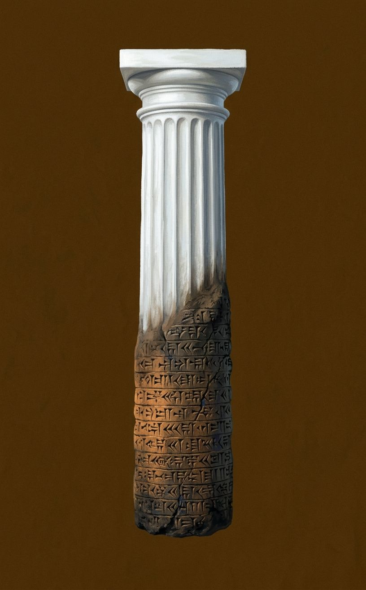
Origen: la premisa del libro completo —Occidente construido sobre un cimiento oriental que se niega a nombrar— condensada antes de que empiece cualquier civilización particular.
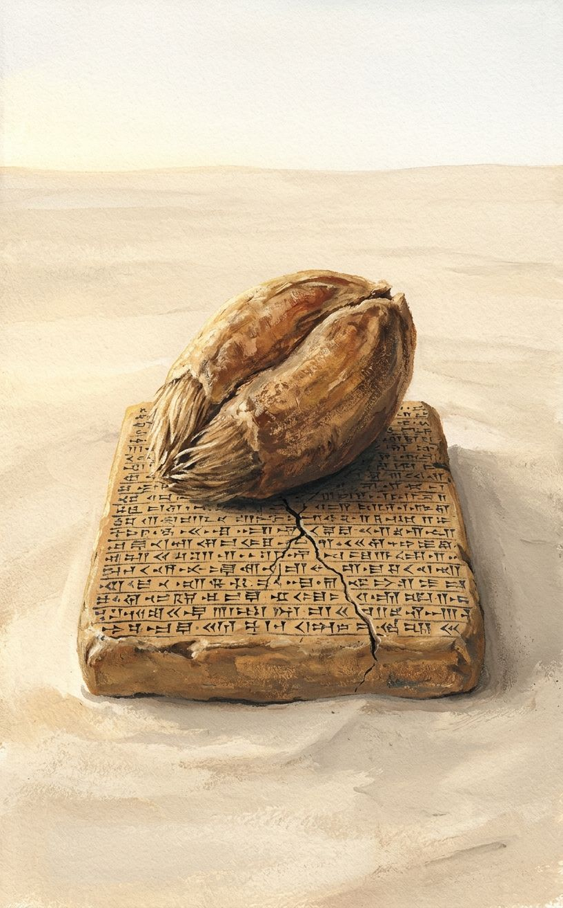
Origen: la tesis de apertura del libro —agricultura genera excedente, excedente genera ciudad, ciudad genera civilización— encarnada en Sumeria y Babilonia sin narrar ningún episodio específico.
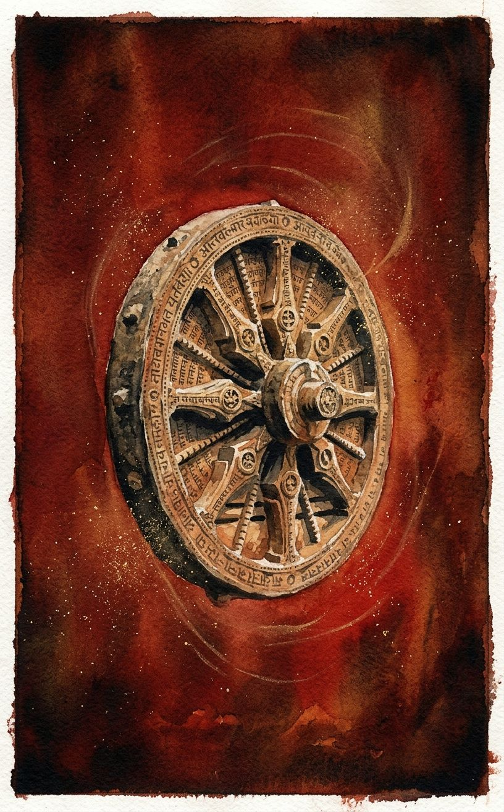
Origen: la insistencia del libro en que India merece un peso filosófico igual al de Grecia —el sistema monista de las Upanishads hasta Shankara— tratado no como exotismo sino como pensamiento riguroso.
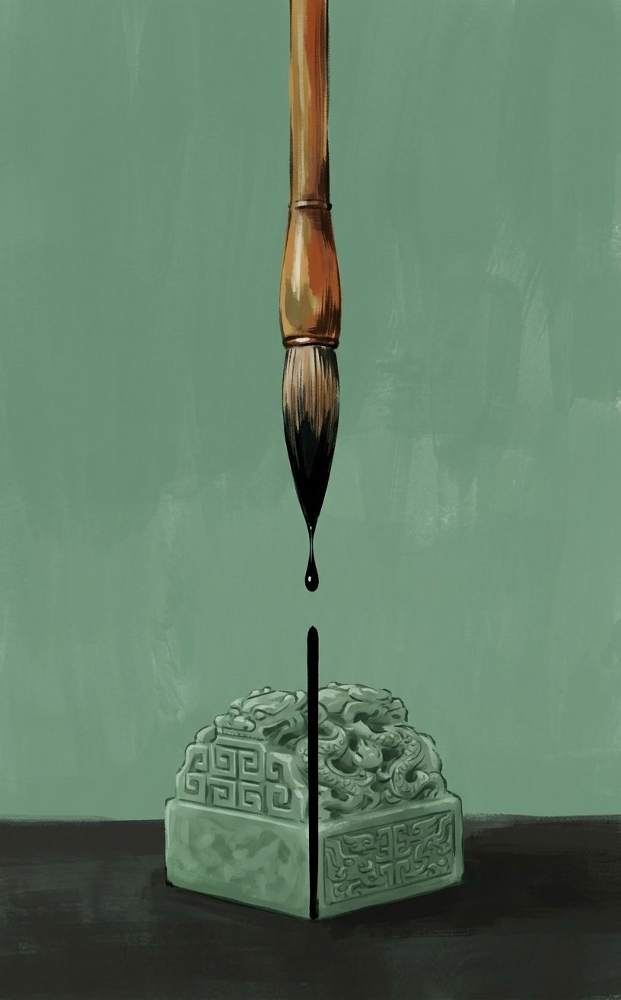
Origen: la China de Durant como civilización estable por administración y filosofía a la vez —Confucio y la burocracia imperial como dos caras del mismo gesto de orden.
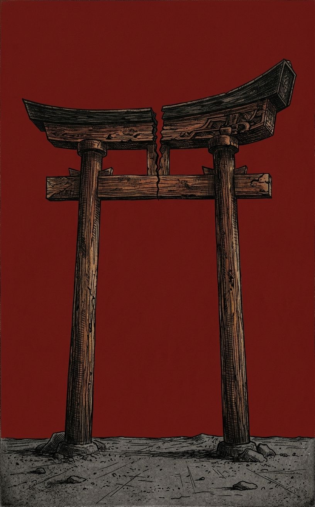
Origen: el Japón de Durant narrado como drama en tres actos que termina, escrito en los años treinta, con la advertencia de que el próximo acto será la guerra.
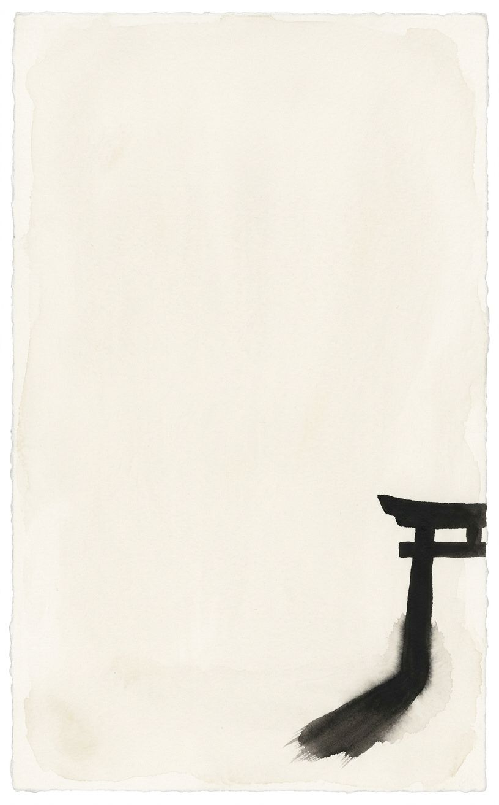
Origen: el envoi del libro, que suma lo heredado de Oriente y lo entrega —sin que Occidente lo haya pedido— como cimiento del volumen siguiente sobre Grecia y Roma.
El conjunto cumple los cuatro criterios: ningún tipo de objeto se repite en primer plano (columna, grano, rueda, pincel, torii, sombra); la temperatura lumínica varía entre fría-alta (Imagen 1), baja-cálida (2, 3, 4) y oscura-alarmada (5), sin que ninguna se repita más de dos veces; la Imagen 6 no tiene figura humana ni objeto fabricado completo —solo espacio y sombra; y la Imagen 6, por renunciar a la paleta cromática del resto, es la que ninguna descripción verbal del corpus hubiera anticipado.